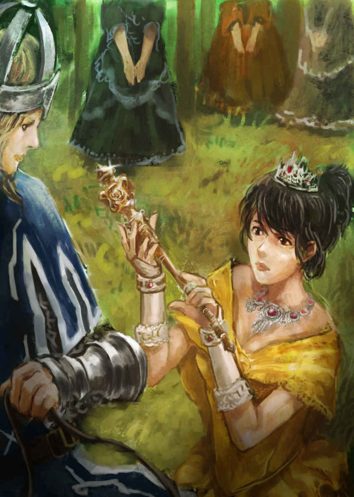
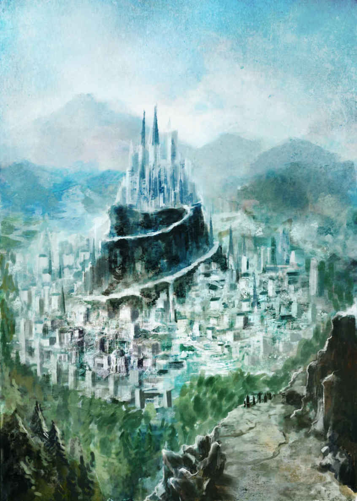
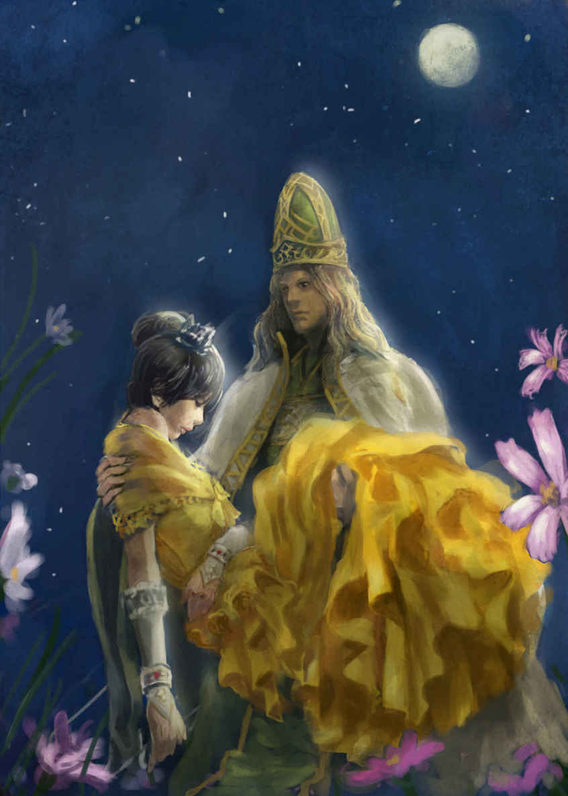
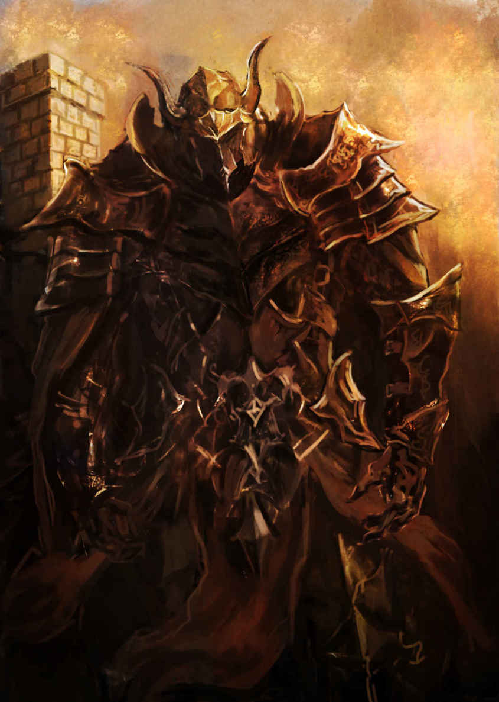
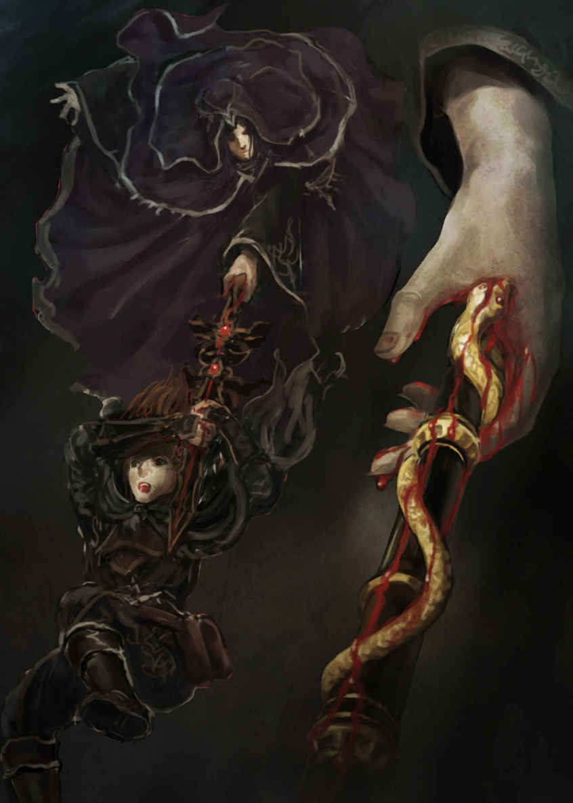

| カドルステイト物語 第四部『硝子の剣』 | |
| 守下 尚暉 | |
| pubfull (2016) | |
守下尚暉 作
カドルステイト物語
第四部 『 硝子の剣 』


第一章 レータの作戦
１
夜でもないというのに暗い部屋があった。
どこかの館の一室、豪華な作りの比較的大きな部屋の中で、扉や窓、そしてカーテンまでもが全て閉め切られた陰湿な空間。しかし、この部屋の主である彼女は、あたかもそれが当たり前であるかのように、普通にこの室内で過ごしているようだ。机に座り、ペンを取って書き物を続けているその女性は、一切灯りのないこの中で、何不自由なく今日の執務を遂行している。カーテンの隙間から微かに入り込んでくる強い光は、外が今明るい昼間である事を精一杯主張していた。
彼女の名はレータ。艶のある長くしなやかな黒髪は、首のうしろで束ねられて腰の位置まで達している。身に纏う緩やかなローブは、彼女の髪の色と同じ黒色で、暗闇の中に居る彼女を、更に深い闇の中に溶け込ませていた。それ以上の外観的特徴は暗くてよく見えないが、その独特の落ち着いた雰囲気を持った彼女は、決して若い娘などではなく、それ相応の年齢だという事を、何も語らずとも自然に物語っているようだ。
アルギニア王国の南に位置する都市ブラムトリー。
レータは、この国に仕える魔法使いにして、この街の責任者である。彼女は今、机の上に山積みにされている自分宛ての書簡の中身を一枚ずつ確認し、既に決定した仕事について優先度の高い順に整理したり、これから必要とされている仕事について、議題に挙げるべき内容を抽出したりといった、この街の長としての執務を執り行っているのだ。忙しそうに作業を続けているレータは、それでも手際よく次々に書簡を開き、その中身に一瞬で目を通してしまうと、それらの書類を綺麗に分類していった。そして束ねられた書簡の一つを開き、中に入った手紙に目を通した時、ふと、レータの手が止まる。
彼女の顔が、いま、大きく曇った。
それまでの機械的な作業から一転、レータはその書簡の中身を見た瞬間、両肘を机の上に当てて両手を組み、真っ直ぐに伸ばされていた背筋を曲げると、その組まれた手の上に額を当てて項垂れた。その目に涙は無いものの、彼女の黒い瞳は哀しみに打ち拉がれているようだ。そして溜め息のような言葉を漏らす。
「あぁ、ステイン。わたしは何て無力なんでしょう。あなたの為に何もしてあげる事が出来ないなんて...」
独特の高い声だった。彼女は決して若い娘などでは無い。しかし、まるでソプラノ歌手が歌っているかのような美しい張りのある音色の声だ。レータは誰かに話している訳でもなく、小さな声で独り言のようにそう呟くと、その書簡を手に持ったまま立ち上がった。そしてこの真っ暗な執務室の一角にある棚から、分厚い本を数冊選んで取り出し、ゆっくりと部屋の出口に向かって足を進める。
書類と本で両手が塞がっているレータだったが、部屋の出口である木製の扉に視線を向けると、自然にその扉が音を立てて開け放たれた。開いた扉の向こう側から、明るい光が差し込んでくる。レータは、その眩しい光に晒されても全く気に留める様子もなく、ゆっくりとこの執務室を後にした。そして彼女が館の廊下を歩いていく音が少しずつ遠ざかっていく。しばらくすると、開け放たれたままだった扉が自然に締まり、部屋は再び暗闇に包まれた。やがて、徐々に遠ざかっていくレータの足音も完全に消えてしまい、深い静寂だけが、この部屋の新たな主になった。
２
ディクトリア王国の港を出て、二十日間の船旅だった。
この日、二組の冒険者パーティが、沖に停泊した船から二隻の小さなボートに乗って、アルギニア王国の岸辺に到着していた。彼等を岸辺に降ろした小さなボートは、速やかに船に戻り、船は船首をめぐらせて、早々とディクトリア王国へと引き返し始める。この船は、ディクトリア王国の冒険者ギルドからアルギニア王国に派遣される事が決まった二組の冒険者パーティの為に、ファナー王が手配した片道便であった。
ここから南に五日ほど進めば、アルギニア王国の首都アルギニアスに到達するはずだ。夏の暑さを残した強い陽射しは、波に照り返されて彼等の目を細めさせる。風もまだ生ぬるく、肌にベタつく不快な感触を残しながら、冒険者達の間を通り抜けていった。
その二組の冒険者パーティの一つが、『死にたがりのデイン』と呼ばれる冒険者デインと、それを取り纏めるリーダー、フレニアス教会の神官クレンスの一行であった。
デインは、ザンターグル王国の山奥にあるリーフの村で、幼い頃からずっと育ってきたが、ある日、育ての親であるバーン長老から、自分の出生の謎について聞かされる事になる。バーン長老の話によると、自分が赤ん坊の頃、リーフの村の山奥に捨てられていたのをバーン長老が見付けて拾い、ここまで育ててきたというのだ。その事実を聞かされたデインは、自分の出生の謎と本当の故郷を探す旅に出る事を決意した。
彼の旅の目的である「故郷探し」の鍵を握るのは、赤ん坊のデインと一緒に置かれていたという特殊な大弓と二本の大矢。そして、一枚の厚手のスクロールだった。その分厚いスクロールは、一切何も書かれていない白紙だったが、攻城兵器と見紛う巨大な大弓と、対になっている二本の大矢には、スティンファー＝レイスという名が刻まれていた。旅の当面の目的として、まずそのスティンファー＝レイスという名の人物を探す事が、デインの真の故郷を見付ける道に繋がると信じ、カータ、リフレア、クレンス、ティルファンといった沢山の仲間に助けられながら旅を始めて、既に四ヶ月が経過していた。
左手に剣を持つ魔術師スティンファー＝レイスにより、レッドドラゴンの襲撃を受けたアルギニア王国は、ディクトリア王国の正規軍とその冒険者ギルドに、救援を要請してきた。思わぬ形でスティンファー＝レイスという名の人物の正体を知る事になったデインは、そこに向かう事を自ら志願し、『死にたがりのデイン』と周囲から揶揄されながらも、ディクトリア王国の冒険者ギルドから正式に派遣される公認パーティの一組に選出されたのだ。
デイン達のパーティはその後、ディクトリア王国の冒険者ギルドが、もう一組のパーティを選出するまでの時間を利用して旅の準備を整え、万全を期して臨んでいた。幸い、全員が武装を整えても余るほどの褒奨金を、アーガス討伐を成功させた事でファナー王から受け取っていたのだ。結局、デインがアルギニア王国への派遣を志願してから三日後にもう一組のパーティが選抜され、彼等と共にディクトリア王国の首都にして『離島の王都』と呼ばれるグランダートから出港する事になった。そしてその船は、グランダートから南西に向かって進み、二十日間の船旅を経て今日、ようやくアルギニア王国の最北端にある岸辺に到着したのだ。
デインは、黒い革鎧の上から金属の鋲が打ち込まれた焦茶色のベストを着込み、その上から深緑色のマントを羽織っていた。ベストとマントは、グランダートで新たに購入した防具だ。革の上から金属の鋲を打ち込んだベストは、ブリガンダインと呼ばれる防具で、前後の身頃はコートほどの長さがあるものの袖がなく、軽い割に高い防御効果がある。マントは分厚い布地のもので、弓で狙いを定める時に額を流れて視界を遮る汗をこれで拭き取るだけでなく、これからの時期に備えて防寒着としての意味合いもあった。武装は相変わらずで、腰に挿した小剣と、肩掛けされた細長い黒革袋が彼の武器である。その袋の中には、身の丈以上の巨大な大弓が隠されているのだ。
「よう、死にたがりのデイン。これからが本番ってとこだな。いっちょよろしく頼むぜ」
彼をからかうように現れたこの男は、ライドという名の戦士で、実はデイン達のパーティに入ったばかりの新メンバーである。細身でありながら筋肉質な肉体を持ち、白髪交じりの髪や蓄えられた顎髭は、古強者を思わせる貫禄と同時に、彼の年齢をも窺わせる。暗い赤を基調とした革鎧をベースにした防具には、肩や腕や胸、そして膝や前脛といった要所の部分に板金板が取り付けられ、防御効果を高めていた。彼が持つ長い得物には、やや小振りの斧頭が取り付けられ、その先端は槍のように尖っている。それは、ハルバードと呼ばれる汎用性の高い武器で、槍のように相手の防具を貫く武器としても扱え、かつ斧頭の重みを利用して相手を叩き付けたり、多くの敵を薙ぎ払ったりする複合的な性能を持つ武器である。
デイン達のパーティは、アーガスとその一団『猛焔の旅団』のパーティとの激しい死闘を繰り広げた末、辛くも勝利を収めたものの、『猛焔の旅団』を統括する闇の司祭レーン＝ディークに逃げられた挙句、このパーティで初めての犠牲者も出してしまっていた。レーンの死の言葉を受けて犠牲になったガイは、大雑把で豪胆な性格ながらも、気の良い戦士だった。
しかし、デイン達はガイの死を悼む暇もなく、慌ただしく次の目的地アルギニア王国を目指して、グランダートを発つ事になっていた。そんなデイン達のパーティに対して、グランダートの冒険者ギルドは手練の戦士を一人紹介してきたのだ。冒険者ギルドとしては、ガイを失った事で前衛が薄くなったデイン達のパーティの戦力ダウンを危惧し、気を回しただけの事だったが、デイン達は正直言って、ガイの死から間もない事もあり、その代わりとして新たに加わるという戦士ライドを、快く受け入れる気にはなれなかった。しかし、グランダート教会の司教であるロバートに無理やりねじ込まれるような形になって、結局、戦士ライドはパーティに加わっていたのだ。
「せめて馬車があれば、移動が楽なんですがねぇ」
愚痴をこぼしているのは、レオナールという名の使用人だ。小太りの中年男性である彼は、デイン達の冒険者パーティの中で唯一の非戦闘員である。しかし、上級貴族であるブランアーノ家に仕える使用人レオナールは、冒険者達の身の周りの世話を何でもこなし、実際の旅において非常に役に立つ男だった。野営では限られた食材の中から美味しい料理を作って皆に提供し、新たに購入した装備や衣服を着用者のサイズに仕立て直し、馬の世話から馬車の整備まで器用にこなし、今や彼等の旅において欠かせない存在にまでなっていたのだ。しかし、彼の愛車であるブランアーノ家の軍用馬車は、今回の船に載せられず、後からディクトリア王国の正規軍と一緒に輸送される手はずになっていた。
「デイン殿。ちょっとよろしいでしょうか」
二組のパーティが南に伸びる街道に沿って進み始めて程なくすると、デイン達のパーティの実質的なリーダーであるフレニアス教会の神官クレンスが、躊躇うような様子を見せながらもデインに話し掛けてきた。
「どうした、クレンス？」
デインは、そんなクレンスに話の続きを促す。しかしクレンスは、長い時間掛けて思い悩んだ挙句、結局考えを纏める事が出来ず、こう言った。
「...いえ、すいませんデイン殿。やっぱり何でもありません」
デインは、そんなクレンスを訝しげに思った。いつも冷静かつ毅然とした態度でハッキリと物を言うクレンスは、最近あまりにも「らしくない」のだ。
クレンスは小振りのメイスと大きい鉄製のラウンドシールドを装備し、頭には防具を兼ねた飾り気の少ない鋼鉄製の頭冠を深くかぶっている。そして所々に黒い汚れが付着して傷んでいる古い鎖帷子を新調する事なく、相変わらず着用していた。その汚れを隠すように、帷子の上から紺と白のサーコートを羽織っている。この鎖帷子は、かつてフレニアス教会の大教主にして偉大な冒険者でもあった彼の父、ヴィーランスの形見だったのだ。その父は、リドネス解放戦において和平交渉の遣いとして親書を携え、連合軍の代表としてクレンスと共に帝国軍との交渉に向かったが、その際、城塞の上から突然放たれた巨大な鉄の大矢に撃ち抜かれて、一瞬の内に絶命してしまっていた。それを契機に、回避出来るはずだったリドネス解放戦の幕が切って落とされる事になってしまったのだ。
そしてクレンスは、父ヴィーランスを撃ち抜いた大矢の軌道と全く同じ軌道を描く恐るべき大弓の技を、『猛焔の旅団』との戦いで目撃した。それは、デインが自らの大弓で放った鉄の大矢だった。遠く離れた標的に対して、上空に向けて放たれた大矢は、高い放物線を描きながら目の前の障害物を越え、致命的な一撃を敵の頭上に落下させたのだ。結果的に、デインのその神業とも言える弓術によって、彼等は『猛焔の旅団』との戦いに勝利する事が出来たが、この事は、クレンスに新たな疑念を抱かせる事に繋がっていた。
デインに向けられているクレンスの不審な目を感じ取っているのは、デインだけではなかった。頭の上から足の先まで全身を白銀の甲冑で包んでいる騎士リフレアは、その真相を知る一人である。
リフレアは、クレンスの様子を見ながら複雑な表情を浮かべていたが、彼女は行軍中や戦いの場では常にヘルムをかぶっているので、その表情を窺い知る事は出来ない。彼女を一見しただけでは、ただの小柄な騎士にしか見えないのだ。全身甲冑姿の彼女を一目見ただけで、その騎士の性別まで判別する事は非常に困難である。しかし、その騎士をよく観察してみると、全身から滲み出る気品の高さや独特のあでやかな仕草から、彼女を女性だと見抜く事が出来るだろう。リフレアは、レオナールが仕えているブランアーノ家の令嬢にして、リート教会に仕えるパラディンで、フレニアス聖騎士団の一角であるブランアーノ騎士隊の総長でもあるのだ。
もう一人、その様子を怯えたような目で黒いフードの中から密かに見つめている少年のような小柄の盗賊がいた。彼の名を、カータという。
カータも、デインと同じく防具を新調していた。彼は今まで着ていた黒い革鎧ではなく、コースレットと呼ばれる身体のラインがハッキリと出る厚手の革スーツに身を包み、その上からフード付きの黒いマントを被っている。マントの丈は極短いもので、腰の長さまでしか無いので彼の俊敏性を支える足の動きを一切妨げる事なく、それでいてカータが持つ多くの武器や道具を隠せる長さの物を着用していた。そのマントに隠された腰ベルトの前面には二本の短剣が挿され、背面には小さな小物入れが多数取り付けられている。その小物入れの中には、盗賊技能と呼ばれる特殊な技を扱うのに必要な小道具が詰め込まれているのだ。ベルト側面には短銃を入れるホルダーが取り付けられ、離れた位置に居る敵に遠隔攻撃を仕掛けたり、空砲で味方に合図を知らせたりする為に活用されていた。
デインとカータとリフレアの三人は、リドネス解放戦において和平交渉に遣わされたクレンスの父ヴィーランスを暗殺したのが、実はデインであるという事実を知っている。当時、デインとカータが所属していた盗賊団の頭領から、和平交渉の遣いであるフレニアス教会の大教主を暗殺するよう命令を受けたデインは、特に何も疑問に思う事なく、その命令を実行していたのだ。しかしその事実は、未だにクレンスには伏せたままだった。奇しくも、デインが暗殺したヴィーランスの息子であるクレンスと共に旅をする事になった彼等は、クレンスに真実を言えるはずがなかったのだ。もう一人、ガイもこの事を知っていたが、彼は先の戦いでその尊い命を散らしてしまっている。
「どうもいかんな。空気が淀んでいるようだ」
そんな陰気臭いパーティの雰囲気を、こう言って一蹴してみせた背の高い男が、この一行の一番後ろに居た。ティルファンと言う名の魔法使いである。燃えるような真っ赤な髪が特徴的な彼は、濃いベージュ色のゆったりとしたフード付きローブを身に纏っていた。
ティルファンは、つい最近、自らが魔法使いである事をデイン達に告白したばかりである。彼は、自分の素性を知らない者に、自分が魔法使いである事を知られてはならないという忌まわしい呪いに囚われていたが為に、その事実をずっと隠してきたのだ。しかし先日、行方不明だった彼の妻レーナの命と引き換えに、その呪いを解呪する事が出来ていた。それは決してティルファンの望んだ結果ではなかったが、彼はその妻レーナの最後の願いを聞き届け、冒険者達の旅に同行し、自分と妻レーナの息子であるカータを、全力で護る事を心に誓っていたのだ。
自分が呪いに囚われていた事実を皆に話したティルファンだったが、カータが自分の息子であるという事実だけは、伏せたままにしていた。それは、カータの旅の目的が「母親探し」であり、その母であるレーナが自分の呪いを解呪して死んだという事実を告げられないという事にも起因しているが、何よりも『猛焔の旅団』に身を投じた妻レーナが、魔女になった自分の姿を息子のカータに見られたく無い、知られたく無いという強い思いを、ティルファンが汲み取った結果でもあった。
ティルファンは、アーガスとの対決の直後、上半身裸で上着を着ていなかった。パーティ全員に自分が魔法使いだった事を明かしたティルファンは、グランダートにて新しいローブを購入したが、パーティの皆は、彼がそれまで着続けてきた黒いコートを踏襲した黒いローブを選ぶものだと、誰もが勝手に思い込んでいた。しかし、何か思うところがあったのか、意外にも彼は濃いベージュ色のフード付きローブを選んで身に纏い、皆にその姿を見せたのだ。ティルファンの手には奇妙に折れ曲がった杖が握られているが、それもグランダートで購入した特別な杖で、彼が魔法を行使する際に、その力を補助する特殊な力があるのだという。
もう一組のパーティは談笑しながら楽しそうに行軍していたが、デイン達のパーティはまるで葬式の出棺のような行軍だった。ティルファンの皮肉に対して、誰も何も反応を示さない。新メンバーであるライドは、肩を竦めてそんな一行を見回している。気まずい空気が流れる中、彼等の行軍は野営キャンプを挟みながら五日間続き、ようやくアルギニア王国の首都であるアルギニアスの都に到着するのだった。
３
壊れた建物が多く見られるアルギニアスの都は、アルギニア王国の首都である。
広い平原に広がっている街は、街道に沿って自然発生的に建造物が徐々に増えていき、街の中心部にある王城へと連なっているが、ドラゴンの襲撃を受けた爪痕がハッキリと残されていた。黒い炭と化して骨組みだけを残した木造の家屋や、所々で散乱している石造りの建物の瓦礫。そして、街の中心に建てられた大きな城の外壁に見える黒い焦げ跡。スティンファー＝レイスが駆ったレッドドラゴンの襲撃によって、アルギニアスの都にある建物の約半数は、全壊か、或いは何かしらの大きな被害を受けているようだ。
アルギニアス王城は、真四角の城壁に護られた比較的小さなものだったが、その建造物自体はかなり新しい印象を受ける。冒険者達は、街の中の街道沿いにあった外堀の橋を渡って更に歩みを進めていくと、内堀の跳ね橋にあたるアルギニアス王城の正門前まで到達した。そこで彼等は、仁王立ちしている四人のアルギニア王国の衛兵達に呼び止められる。
「貴公ら、どこから来た何者であるか。用を申せ」
ディクトリア王国の冒険者ギルドから派遣された二組のパーティは、門番を務める衛兵達にその証明書を提示した。四人の門番の一人がそれを受け取り、じっくりと確認し始める。その間、他の三人の門番は、手に持った槍を身構えつつ注意深く二組の冒険者パーティを監視し続けていたが、それも仕方のない事だろう。レッドドラゴンライダーであるアーガスは死んだものの、その配下である『猛焔の旅団』の残党が、まだあと三人残されているのだ。
一人は、人とは思えぬ巨躯を甲冑で固めた男で、常人なら両手で持たねば扱えないような巨大な武器を、片手で軽々と振り回す、鉄仮面の剣士ウィリアム＝レンディ。
一人は、女性と見紛う美しさを持つ男で、綺麗な金の頭冠に白い法衣を着た独特の雰囲気を持ち、その声からは知性が滲み出ている、闇の司祭レーン＝ディーク。
一人は、フードを深くかぶり、美しい刺繍の施された紫のローブに身を包んだ男で、その左手には杖ではなく禍々しい長剣が握られているスティンファー＝レイス。
それら三人に加えて、端正な顔立ちに銀の髪と黒い肌を持ったダーウエルフの魔法剣士ケルスビーンが、現在行方不明になっている。
デイン達を取り囲む三人の門番達は、王城の正門前に到着したばかりの冒険者達一人ひとりの特徴をじっくりと確認し、その『猛焔の旅団』の残党と似た特徴を持った不審な人物が居ないかどうかをまず確認した。その上で、ディクトリア王国の冒険者ギルドから発行された証明書を舐めるようにチェックしていたもう一人の門番は、それが本物である事を確認出来たのか、城壁の上に控えていた衛兵に向けて手で合図を送る。
その合図につられて城壁の上部に目を向けてみると、そこには多くの弓兵達がこちらに向けて弓を構えた状態のまま、固唾を飲んで冒険者達の動向を見守っていたようだ。一瞬だけ、その城壁上に並んでいる弓兵達に紛れて、山吹色の衣服に身を包んだ女性のような姿が僅かに見えた気がしたが、彼女はあっという間に走り去って、その姿をくらませてしまったようだ。
弓兵達は、門番の合図を受けると番えていた矢を外し、正門上部に仕掛けられている回転式の機構を何人かで力を合わせて操作し始める。すると、跳ね上げられていた王城の正門扉を兼ねた跳ね橋が、ゆっくりと音を立てながら下りてきて、内堀に橋を架け始めた。
「お待たせしました。ディクトリアの冒険者ギルドから派遣された『双頭の剣スレイディア』様のパーティと、『死にたがりのデイン』様のパーティの方々。我々は貴方がたを歓迎致します。現在、陛下は不在でありますが、大臣が陛下から冒険者パーティへの用向けを託けられております。どうぞ、中にお入り下さい」
冒険者ギルドの証明書を二組のパーティにそれぞれ返却した門番が、そう言って恭しく頭を下げると、周りに居た残り三人の門番と、それに加えて城壁上に並んでいた弓兵達も冒険者達に一礼して見せた。
「王は不在だと？ では、アーレンス王は今どちらへ？」
聞いたのは、もう一組のパーティのリーダーであるスレイディアという名の剣士である。彼は布製の衣服の上から分厚い革のマントを羽織っただけの軽装だったが、二本の長剣を腰の左右に分けて帯剣していた。二つ名である『双頭の剣』からも、彼が二刀流の長剣使いである事は想像に難くない。
「それについても、大臣から全てお聞きになって下さい。我々は、すぐにでもこの正門を閉じねばなりませぬが故、速やかに中に入られるようお願い申し上げます。すぐに案内の者が来ますので」
門番の衛兵は、頭を下げたままそう答えた。言われてみれば、その通りである。今、アルギニア王国は突発的に頻発する破壊行為に直面している厳戒態勢なのだ。彼等、アルギニア王国に仕える門番達は、何としても王城内への不審者の侵入を防がなければならない。
「すまなかった。早々と行かせて貰う事にしよう」
スレイディアはそう言うと、足早に跳ね橋を渡り始める。デイン達もそれに続いて、橋の上を歩き始めた。
「クラーレンス様、如何されましたか？」
その時、全身甲冑姿の騎士リフレアが、一人ポツンと棒立ちしたまま動かないクレンスに声を掛ける。
「あ、申し訳ありませんリフレア殿。どうも、考え事をしていたようです」
クレンスはリフレアの高い声を聞いてハッとした表情をした後、前を歩くパーティとの距離を詰める為、小走りに足を進めていった。クレンスのその様子を見て、デイン、カータ、そしてリフレアは一抹の不安を感じずにはいられない。
このパーティの目的は、あくまでデインの「故郷探し」である。カータは「母親探し」を目的に掲げているものの、それはあくまでデインの旅に付いて行く為の口実のようなもので、少年はあまり自分の目的に拘っていないのだ。カータの襟元に付けられた銀バッジは、その手掛かりだった。クレンスとリフレアは、デインの旅を手助けする事を通して、自らの神への信仰心を深め、より神の御心を知る為の巡礼の旅とする事が目的である。そしてティルファンの旅の目的は、自分の息子であるカータを護る事であった。
これら、それぞれに目的の異なる個性の強い面々を、長い旅の間ずっとここまで纏め上げ、リーダーとして引っ張ってきたのは、明らかにクレンスだった。誰もが、クレンスをこのパーティのリーダーとして認め、彼の冷静な分析力と的確な指示、そして強い責任感と正義感に、全幅の信頼を寄せていたのだ。
そのクレンスの様子が最近おかしい事は、誰の目から見ても明らかだった。そしてその原因も、事情を知る者は皆、薄々感じ取っている。しかし、新メンバーである壮年の戦士ライドだけは、クレンスの事を理解出来ずにいた。これまでパーティを引っ張ってきたクレンスの姿を知らないライドにとってみれば、クレンスはただの頼りないリーダーにしか見えなかったのだ。
二組の冒険者パーティが王城の中に入ると、城に仕える従者らしき中年の男女が彼等を出迎えた。そして、城内にある客室に冒険者達を案内する。
「只今陛下は不在ですが故、こちらに荷物を置いて楽にしていて下さい。アルギニアスの都に滞在されている間は、どうぞご自由にこの客室をご利用下さいませ。尚、女性の方のお部屋は、これからハンナがご案内致しますので、彼女に付いていって下さい。後ほど、大臣がこの部屋にお伺いし、要件をお伝えします。では、何かご用がありましたら何なりと、わたくし共にお申し付け下さいませ。失礼致します」
男性の従者はそう言うと、ハンナと呼ばれた従者に視線で合図を送り、女性の冒険者達の為の客室に彼女等を案内させ始めた。リフレアと、もう一人スレイディアのパーティに居たテシールと言う名の女性が、荷物を持ってその従者に付いていく。
それからどのくらい待っただろう。
既に外は夕暮れ時だった。リフレアとテシールは女性用の部屋に荷物を置くと、それぞれ楽な衣装に着替えてから、皆が待機している客室に戻ってきていた。二人の女性冒険者が皆の待つこの客室に戻ってきた際には、両パーティから感嘆の声のようなものが発せられたものだ。二十日間もの航海を共にしたにも関わらず、船内では二組のパーティに別々の部屋が割り当てられ、船に一室しか無い食堂が混雑しないよう、食事の時間もパーティ毎に分けられていたので、二組のパーティはあまり接点が無かったのである。アルギニア王国最北端の岸辺から、都に向かう街道における五日間に渡る行軍でも、野営キャンプでは別々のテントなので、あまり会話を交わす機会もなかった。何より、スレイディアのパーティは会話も弾み、旅を楽しんでいるかのように見受けられたが、デインとクレンスのパーティは、どこか重苦しい空気が漂っていたのだ。そんな温度差のある両パーティが交流を持つ機会など、これまで全く無かったのである。
テシールが身に纏った常磐色の落ち着いた衣服は、派手さが無く、肌の露出も少ないながらも、大人の女性の魅力と、森を護る使命を帯びたドルイドらしい風情や赴きがあった。普段テシールは、茶色のクロークで全身を隠し、フードを深くかぶって顔が隠されていただけに、デイン達のパーティメンバーが彼女の素顔を見るのはこれが初めてだったのだ。テシールはベテランの冒険者で、決して若くは無いが、毛先に行くほどパーマ掛かった黒髪は、横髪と後ろ髪を全て同じ長さで切り揃えられ、より彼女を落ち着いた印象の女性に見せるのだった。
一方リフレアは、そんなテシールとは対照的に、若さを前面に出したような装いだった。淡いクリーム色のカッターブラウスに、膝が隠れる程度の長さの臙脂色のプリーツスカートを穿いて、そこから真っ白な彼女の細い下腿が伸びている。長く美しい黄金色の髪は、後頭部で一度束ねられてそのまま後ろに流した状態で纏められていた。リフレアの白く透き通るような肌と青い瞳を見たスレイディア達は、その儚くも可憐な少女が、さっきまで無骨な全身甲冑姿だった騎士と同一人物だとは到底思えなかったようだ。
残暑の余韻で熱気を帯びているこの時期は、微妙に衣装の選択が難しい。男達は暑ければその場で服を脱ぎ、冷えれば着込めば良いだけの話だが、女性達はそうもいかないのだろう。その工夫が、彼女達のあでやかな衣装に表れているのだ。
男性陣は各自、防具を外して楽な格好で待機していたが、後から現れるという大臣は、一向に姿を見せなかった。そのうち外は暗くなり、従者がこの客室に料理を運んできて、彼等は夕食まで済ませてしまっていた。そしていよいよ、リフレアとテシールが女性用の部屋で休もうかという頃合いになって、ようやく二人の大臣がこの客室に現れた。
「大変お待たせして申し訳御座いませんでした。アルギニア王国の宰相ニカルで御座います。アーレンス陛下からあらかじめ託けられていた、冒険者ギルドから派遣されたパーティの皆様へのご依頼の方を申し上げます」
余程慌ててこの客室に来たのか、二人の大臣の内の一人は自らをニカル宰相と名乗り、額に流れる汗を拭いながら忙しなく話し始める。
「実は、アーレンス陛下は、アルギニア王国の正規軍とジアンティス帝国軍を伴って、ソニアンディーに遠征に向かわれ、まだ戻って来られていないのであります」
それを聞いて、真っ先に口を開いたのは意外にもデインだった。
「ディクトリアでも聞いていたが、ジアンティス帝国との共同戦線とはどういう事だ？」
デインは、フレニアス連合圏に近い国から来たので、敵対国であるジアンティス帝国と共同戦線というのが、ピンと来ないのだ。ニカル宰相は、そんなデインの問いに答える。
「我が国アルギニアとジアンティス帝国は、三十五年前から十三年前まで、実に二十二年もの間、長らく敵対関係にありました。その当時、ジアンティス帝国は我が国の領土内に繰り返し侵攻を続け、二十年以上、我が国は帝国と激しい戦争を繰り広げてきたのであります。しかし、長年に渡る戦争によって両国とも大きく疲弊していました。そして十三年前、両国は不可侵条約を締結したのです。それ以降、帝国とは表向き友好国として、貿易、交易などの経済活動に加え、合同軍事演習を行ったりもしているのですが...」
そこまで言うと、宰相は少し躊躇いがちに一度言葉を区切った後、少し声のトーンを落として話を続けた。
「率直に申し上げますと、恥ずかしながら我が国アルギニアは、軍事力において、帝国には到底かないません。十三年前に両国間で結ばれた不可侵条約は、その強大な軍事力を持つ帝国に対して、アルギニア王国を攻め込まないで貰う代わりに、我が国の実質的な支配権を帝国に明け渡した...というのが実際のところで御座います」
デインは、アルギニア王国とジアンティス帝国との間で結ばれた不可侵条約の「十三年前」という時期に、絶妙なタイミングのようなものを感じていた。確か、帝国がリグラット王国の首都リドネスを攻め落としたのが、十年と少し前だと聞いた気がする。十三年前、ジアンティス帝国はアルギニア王国との不可侵条約を締結した後に、リグラット王国に侵攻の矛先を変えたと考えれば、非常に辻褄が合うのだ。しかし、それにしても帝国は一体何の目的があって周辺国を侵略するのか、デインには到底理解出来なかった。
「それ以降、我が国を他国の侵略から護るという名目のもと、我が国の領土内の至るところに帝国軍の砦が築かれました。それに対する国民の反発もありましたが、一方で、今回のレッドドラゴンの襲撃のような有事の際には、帝国軍が我が国に駐屯していたからこそ、退ける事が出来たという声が大きいのも事実です。もう我が国は、帝国の軍事力なくして自国の平和を保つ事も出来ない程、帝国に依存しているのが現状なのです」
ニカル宰相の話は、質問をしたデインのみならず、アルギニア王国とジアンティス帝国との関係について、その実態を知らなかった冒険者達にとって大いに役立っていた。今の話を聞けば、誰もが正確に、現在のアルギニア王国が置かれた実態を把握する事が出来ただろう。
「ねぇねぇ、王様が遠征に行ってるっていうソニアンディーって、どこ？」
少年のような盗賊カータが、宰相に質問をした。
「ソニアンディーは、かつてこの国の主都だった街で御座います。現在は見る影も無い荒れ果てた廃墟と化してしまいましたが、先代王であられるディークレス陛下が統治されていた時代には、それはもう美しく平和な都で御座いました」
そう答えたニカル宰相は、かつてのソニアンディーの都を思い起こしているのか、遠い目をしながら話を続けた。
「それが、二十五年ほど前だったでしょうか。突如レッドドラゴンが現れ、ソニアンディーに壊滅的な被害を齎したのです。丁度いまの主都アルギニアスと似た状況と言えるでしょう。それでも当時の王ディークレス陛下は、何とか踏ん張ってソニアンディーの都を護り続けました。しかし五年後、その甲斐も虚しく、陛下はついにレッドドラゴンとの戦いの中で重傷を負い、その命を落とされたのです」
リフレアは、それを聞いて口を開く。
「ちょっと良いですか？ ニカル様は、王が王国軍と帝国軍を伴って、そのソニアンディーに遠征に向かわれたとおっしゃいましたよね？ 王は、そのような危険な場所に、大軍を伴って一体何をしに行かれたのですか？ レッドドラゴンの討伐に、自ら兵を率いて乗り込まれたという事でしょうか？」
宰相は、リフレアの問いに対して静かに首を横に振った。
「現在、ソニアンディーは『猛焔の旅団』の残党である闇の司祭レーンの居城と化しているのです。今、我がアルギニア王国では、レッドドラゴンを操る『猛焔の旅団』の残党狩りに最も力を入れています。レッドドラゴンライダーであるアーガスを倒しても尚、そのドラゴンを操っている『猛焔の旅団』の残党を根絶やしにする事が出来れば、ドラゴンの襲撃の脅威に怯える必要もなくなるでしょう。レッドドラゴン自体を討伐するよりも、人間である『猛焔の旅団』の残党を狩り尽くす方が、より現実的なのです。それが故、王は軍を率いて、闇の司祭の討伐に向かわれたので御座います」
デイン達は、闇の司祭レーンと一度剣を交え、ぎりぎりのところまで追い詰めたものの、結局あと一歩のところで逃げられてしまっていた。それどころか、レーンの紡ぎ出した死の言葉によって、ガイが犠牲になっている。闇の司祭は、デインにとって決して赦す事の出来ない仇敵であった。そのレーンが、ソニアンディーを居城にしているというのだ。
そんな中、ドルイドの女性テシールが、その落ち着いた声でニカル宰相に尋ねる。
「二十五年前にソニアンディーに現れたというレッドドラゴンは、その後どうなったの？ 先日、ここを襲ったレッドドラゴンは、もしかしてその二十五年前に現れたレッドドラゴンと同一のドラゴンなのかしら？ もしそのドラゴンがソニアンディーをねぐらにしているのだとしたら、そんな場所に王が自ら遠征に出撃するなんて危険過ぎるのではなくて？」
しかしニカル宰相は、そんなテシールの質問に対し、首を横に振って答えた。
「もしかしたら、ソニアンディーにあの忌まわしいレッドドラゴンが居るのかもしれませんが、その可能性は極めて低いでしょう。かつてソニアンディーに現れたというレッドドラゴンは、ディークレス陛下がお亡くなりになられた翌年、冒険者達の手によって倒され、服従させているのです」
その言葉を聞いた瞬間、冒険者達の間からどよめきのような声が沸き起こったが、ニカル宰相は構わず言葉を続けた。
「それ以降、そのレッドドラゴンがソニアンディーに現れた事は御座いません。何故なら、その冒険者達は服従させたレッドドラゴンに対して、二度とソニアンディーに近付かないよう命じているのです。ただし、今回アルギニアスを襲撃してきたアーガスのレッドドラゴンと、かつてソニアンディーに現れた冒険者達によって倒されたレッドドラゴンが、同一のドラゴンであるかどうかは、まだ分かっておりません」
それを聞いた赤毛の魔導師ティルファンは、呆れた表情をしながら肩をすくめる。
「あんなレッドドラゴンがゴロゴロ居ても困るがな」
双頭の剣スレイディアは、それよりも別の事が気になっていたようだ。身を乗り出すと、少し大きな声で宰相に迫る。
「それよりも、その冒険者達って一体何者なんだ？ レッドドラゴンを服従させるなんて、只者じゃないぞ！ そんな手練のパーティ、さぞ名の知れた冒険者達だろう」
スレイディアは、やや興奮気味だった。ニカル宰相は、そんな剣士に対して答える。
「その冒険者達は、結局、名も明かさずこの地を去ったと言われております。このニカルも当時、彼等にその名を聞いたのですが、結局彼等がその名を語る事は御座いませんでした。後に彼等は、『西国の英雄』と讃えられ、ここアルギニア王国では伝説のように語られています」
「軍隊ではなく、冒険者パーティがレッドドラゴンを服従させたなど、にわかには信じ難いな...」
スレイディアのパーティメンバーの一人が言うと、彼等は口々に似たような言葉を発し始めた。
「はい。そう思いますが、事実で御座います。西国の英雄は、その凄まじい力によって、長年アルギニア王国を苦しめてきたレッドドラゴンを服従させました。その後、アーガスがレッドドラゴンライダーとして姿を現すまで、レッドドラゴンは長らくその姿を見せませんでした。もちろん、アーガスのドラゴンと、かつてソニアンディーに現れたドラゴンが、同一のドラゴンであるかどうかは、まだ定かでは御座いませんが...」
そう言って、一旦言葉を区切ったニカルは、少し間をあけてから話を続ける。
「今回、友好国ディクトリアへの救援要請とは別に、冒険者ギルドにも優秀なパーティの派遣を依頼したのには、そのような背景が御座います。国民は、西国の英雄の再来を希求しているのです」
そこまで聞いた段階で、デインの頭には、ふと別の疑問が浮かんできていた。
「ちょっと待ってくれ。レッドドラゴンを服従させ、退ける事が出来たのなら、ソニアンディーからアルギニアスに主都を移す必要は無かったんじゃないか？」
デインの疑問は当然だ。かつて美しい都だったソニアンディーが、レッドドラゴンの襲撃によって破壊されたというのであれば納得出来る。しかし、西国の英雄と呼ばれる冒険者達の手によってレッドドラゴンを服従させたのだとしたら、主都をソニアンディーからアルギニアスに移す理由が見当たらないのだ。
「ご指摘はごもっともです。しかし、残念ながらレッドドラゴンを退けた後も、なぜかソニアンディーには様々な魔物や魔族、悪魔の類の化物共が、何度も何度も襲い掛かって来たのです。そうした中、ソニアンディーには魔を引き寄せる何かがあるのかもしれないと考えたアーレンス陛下は、今から十八年前、主都の移転をご決断され、ここアルギニアスにその拠点を移したので御座います」
その話を聞いた壮年の戦士ライドは、自分の顎髭に手を当てながら声を漏らす。
「つまり、今ソニアンディーって場所は、とんでもない魑魅魍魎どもの巣窟って事だな」
「その通りで御座います」
かしこまった姿勢でニカル宰相はそう言うと、彼等冒険者達に向けて、王から託けられたという要件を話し始めた。
「今回、陛下から冒険者パーティの皆様に託けられている要件は、二つ御座います。二組の冒険者パーティの内、一組はソニアンディーに向かい、王の戦いの応援に加わって頂きたく存じます。もう一組の冒険者パーティにおかれましては、アルギニアスの都から南に位置するブラムトリーという都市に向かって頂き、そこの文官であるレータの指示を仰ぎ、彼女の作戦に参加して頂きたく、お願い申し上げます」
そう言って、宰相は恭しく冒険者達に頭を下げた。
「ソニアンディーとブラムトリー、どのパーティがどちらに向かうかは、両パーティでご相談下さい。移動の為の馬車はご用意致しますが、我が国は現在、深刻な人手不足な為、御者までは付けられない事をどうかご容赦頂きたく、お願い申し上げます」
ニカル宰相の隣に控えていた大臣がそう言うと、二人の大臣は客室の扉を開いて、もう一度一礼してから外に出て行った。
------そして翌朝。
「死にたがりのデインよ、悪いな」
冒険者達は、慌ただしくそれぞれの防具を身に付け、出発の準備を整えている。そんな中、最も速く身支度を済ませたスレイディアが、デインに声を掛けてきた。
「悪いって、何がだ？」
不意に声を掛けられたデインは、無愛想な表情のまま双頭の剣に聞き返す。
「なぁに、死にたがりのデインも、ソニアンディーに行きたそうに見えたものでな」
スレイディアの言う通りだった。デインは、ガイの仇であるレーンを討つ為にも、ソニアンディーへの応援に向かいたいと考えていた。しかし、昨夜の宰相の説明のあと、ソニアンディーとブラムトリー。どちらのパーティが何処に向かうかをリーダー同士で話し合った際、終始スレイディアに押され気味だったクレンスは、結局ソニアンディー行きを彼等に譲ってしまったのだ。
「いや、別に...」
デインは素っ気無い態度でスレイディアに答える。丁度その時、ドアをノックする音が聞こえてきた。
「スレイディア、準備出来たわ」
ドアの向こう側から、ドルイドの女性テシールの声が聞こえてくる。
「分かった。すぐに行く」
スレイディアは短くそう応えると、彼等のパーティは全員纏まってからドアを開き、順番に部屋の外に出て行った。ドアの外側には、彼等が出てくるのを待っているテシールと、そして全身甲冑のリフレアの姿もチラリと見える。
「では、我々は準備が整ったので、先に出発させて頂こう。死にたがりのデインとその一行よ、お前達の健闘を祈っているぞ」
スレイディアは言ったものの、デイン達のパーティは誰もその言葉に答えようとしなかった。双頭の剣は、もう一度部屋の様子を見回してから、そっとその扉を閉める。そして彼等のパーティは、談笑を交わしながら歩みを進め、その声が少しずつ客室から遠のいていった。
デイン達のパーティの問題は思った以上に深刻だった。昨夜のニカル宰相との質疑応答の場でも、いつもなら積極的に質問したり、的確な意見を述べたりするクレンスが、終始無言だったのだ。そのクレンスの準備がまだ整っていなかったので、スレイディアは部屋の扉を閉めて出発したのである。
スレイディアのパーティが出発してから、随分経ってようやくクレンスの準備が整うと、彼等は無言のまま扉を開き、外で待っているリフレアと合流した。そして従者から王城の中庭に案内された彼等は、冒険者の為に用意された馬車にそれぞれ乗り込み始める。特に打ち合わせてはいなかったが、いつも朝一の御者を務めていたクレンスが、何も言わずに御者台に乗り込んでいた。
出発の準備が整うと、門番の衛兵達が慌ただしく声を発し始め、アルギニアス王城の正門の扉を兼ねた跳ね橋が、ゆっくりと架かり始める。そしてクレンスが馬車を走らせ始めたその時だった。
「もし、そこの御方、お待ち下さいませ」
どこからか、女の声が聞こえてきた気がしたが、クレンスは気にせず馬車を跳ね橋へと侵入させる。その時、後ろの方で衛兵達の慌ただしい声が聞こえてきた。
「お待ち下さい、コリーナ姫。ここは危険です！」
そんなざわめきに紛れて、もう一度、叫ぶような女の声が発せられる。
「もし！ そこの馬車の御方、お待ち下さいませ！」
女の声は「馬車の御方」と言っているようだ。自分の事だと気が付いたクレンスは、跳ね橋に半分侵入した状態の馬車を一旦停めて振り返る。
「おいカータ、誰だあれ」
「さぁ、ボクの知ってる人じゃないみたい」
デインとカータは、馬車の後ろから走ってくる若い女性を見ながら、そんな言葉を交わしていた。衛兵や侍女達の制止の声も聞かずに、慌てた様子で、それでも上品に走ってくるその女性は、山吹色のドレスのスカートの裾を右手で束ね、左手には短い杖のようなものを握っている。高いヒールの靴を途中で脱ぎ捨て、裸足で走ってくるその女性は、必死にクレンスの馬車を引き止めていたのだ。リフレアも、その様子に只ならぬ何かを感じたのか、思わず馬車の中で立ち上がって、そのドレスの女性の方に視線を向けていた。
やがて、ゆっくりと時間を掛けて、その女性はクレンスの馬車に追い付いた。女性のすぐ後ろには、数人の侍女達が付き従い、彼女が途中で脱ぎ捨ててしまったヒールを拾って、ドレス姿の女性にその靴を差し出すような姿勢で跪いている。そんな様子を、唖然とした表情で馬車の中から見つめる冒険者達。どうやらその女性は、御者台に座るクレンスに用事があるようだ。
「はぁっはぁっはぁっはぁ...」
しばらく肩で息をしていたドレスの女性は、その顔を御者台に座るクレンスに向けたものの、未だに声を発する事が出来ずにいた。
「何か、私達に御用でしょうか？」
クレンスはそう言って、その女性の反応を待った。山吹色のドレスを着た若い女性は、未だに侍女から靴を受け取ろうともせず、ゆっくりと息を整えながら、左手に持った杖のようなものを、クレンスの手に向けた。そして絞り出すように言葉を発する。
「こ、これ。はぁっ、はぁっ。これを、はぁっ...」
まだ呼吸が整っていない様子だったが、どうやらその杖をクレンスに渡そうとしているようだ。クレンスは少し困惑したような表情を浮かべながら、彼女に問い掛ける。
「私はフレニアス教会から巡礼の旅に出ている冒険者クラーレンス＝フィルネシアと申します。失礼ですが、貴女様は...？」
それを聞いた山吹色の女性は、リフレアがいつも見せる、片膝を曲げて身体全体を下げるような、あでやかな一礼をその場でして見せた。
「クラーレンス＝フィルネシア様。お初にお目に掛かります。わたくしはコリーナ。この国の第一王女です」
それを聞いて、クレンスのみならず、馬車の中で待機していた冒険者達は、皆一様に驚きの表情を浮かべていた。アルギニア王国の王女が、一介の冒険者の馬車を呼び止めたというのだ。
「えっと、アルギニア王国の第一王女様。申し遅れましたが、私の名は長いゆえ、どうぞクレンスとお気軽にお申し付け下さい」
クレンスは、一国の王女が自分を呼び止めた事にやや動揺しながらも、いつもの調子で言葉を発していた。
「では、クレンス様。わたくしの事も、第一王女などでは無く、どうぞお気軽にコリーナとお呼び下さいませ」
そしてコリーナは、もう一度上品に一礼をして見せる。そして王女は、更に言葉を続けた。
「クレンス様。どうか、このセプチャーをお持ちになって下さい。このセプチャーは、わたくしのお父様から頂いた大切な物です。クレンス様には、これをお守りとして、大切にして頂きたく...」

そう言うとコリーナは、彼女がセプチャーと呼んだ左手に持った短い杖のようなものを、もう一度クレンスに差し出す。
「えっと、そのような貴重な物を、私などがお預かりしても、よろしいのでしょうか？」
「はい。わたくしは是非、クレンス様にこれをお持ちになって頂きたいのです」
躊躇うクレンスに対して、真っ直ぐな視線を向ける王女コリーナは、やや茶色掛かった髪を後ろで束ね、垂らされた前髪が可愛らしい、独特の柔らかい雰囲気を持った女性だった。頭には王女である身分を示すティアラが載せられ、耳や首元や指などには、王女らしく綺羅びやかな装身具が沢山付けられている。走って馬車を追ってきたせいか、彼女の顔には汗が滲んでいたが、美しいと言うよりも可愛らしいという形容が似合うそんな彼女の姿からは、明るく快活で、かつ健康的な印象を受けた。
「さぁ、どうぞクレンス様。このセプチャーをお持ちになって下さいませ。それともクレンス様は、わたくしのお守りを受け取るのが、お嫌なのでしょうか？」
コリーナは、いじらしい声を上げながら、拗ねたような、或いは、いじけたような表情をしてみせた。そんな彼女の仕草は、リフレアとは違う、どちらかと言えば感情を真っ直ぐに表現するカータに近い、独特の空気や匂いがあった。クレンスは、そんな愛くるしいコリーナの姿を見て、完全にうろたえているようだ。
「とと、とんでもありません。謹んで、コリーナ様のご厚意をお受けしたいと思います」
クレンスは、取り繕うように慌ててそう言った。デイン達は、クレンスの最近の様子をおかしいと感じていたが、王女を前にして完全にうろたえている今のクレンスの様子も、かなりおかしいと感じていた。皆、こんなクレンスを見るのは初めてだったのだ。
「本当ですか？ よかった。どうぞ、そのセプチャーをわたくしだと思って、大切にして下さいませ」
さっきまでションボリした表情を浮かべていたコリーナの顔が、みるみる内に明るくなっていく。彼女の笑顔は、まるで太陽のように眩しかった。クレンスはコリーナからセプチャーを受け取ると、かしこまった表情をしながら口を開く。
「確かにお預かりしました。大切にさせて頂きます」
そう言って、クレンスは恭しく一礼した。そして、馬車の近くに居る王女の事を気遣いながら、ゆっくりと馬車を走らせ始める。それを見送る王女コリーナは、侍女達から早く城内に戻るよう促されてもその場に留まり続け、馬車が見えなくなるまでいつまでも手を振ってみせるのだった。
４
ブラムトリーの街は、アルギニアスの都から広い街道沿いに南に向かって馬車を走らせ、五日ほど進んだところにある開けた都市だった。街の規模としては、おそらくアルギニア王国の首都であるアルギニアスの都よりも大きい印象を受ける。海に面したこの街には港も作られ、頻繁に定期船や貨物船が出入りしているようだ。街の建物は全体的に古いが、所々に新しい建物も散見された。リートで見掛けるような背の高い大きな建造物も数こそ少ないが見受けられる。リドネスのような統一感は無いものの、海に向かって伸びるなだらかな斜面に乱立した建造物が美しいブラムトリーは、独特の情緒ある街並みで、冒険者達の目を楽しませた。
「ちょっと、いけません。街の中では、もっとゆっくり走らせないと危険です」
レオナールの慌てたような声が御者台に響いた。彼は額に汗をかきながら、青年デインが操る馬車の指導をしているのだ。
「そうか？ そんなに速く走らせてるつもりは無いんだが...」
デインは、口うるさい中年の使用人を疎ましく思いながらも、渋々馬車の速度を落とす。
「それはもう、見ていてヒヤヒヤしてしまいます。馬車にぶつかるのはもっての外ですが、人とぶつかっても相手に大変な大怪我を負わせてしまうのですよ。下り坂では特に気を付けないと」
今、御者台にはデインとレオナールが座り、春からずっと操馬術を習ってきたデインが、実際に馬車を動かす練習をしながら移動していたのだ。しかし、まだ街の中ではさすがに危なっかしいようで、レオナールの心労は絶えなかった。
「ねぇ兄ちゃん、次、ボクと代わってよ。ボクもやりたい」
馬車の中から顔を出したのはカータだった。少年は無邪気な笑顔を浮かべながら、デインとレオナールに自分も馬車を動かしたいと言っているのだ。
「いいですが、デイン様とカータ様が御者の練習をするのは、せめて街の外の街道にしましょう。あぁ！ デイン様、ちゃんと前を見て下さいって！」
レオナールの額を流れる汗は、初秋の暑さによるものだけではなさそうだ。
デインは結局、レオナールに強く注意された挙句、ブラムトリーの広い通りの隅に一度馬車を停め、使用人と御者を交代させられていた。不満そうな顔を浮かべて、デインは目的地の座標が書き示された地図をレオナールに見せながら、彼の操馬術を見学する。
「その地図を見る限り、指定された建物はおそらくあそこですね」
レオナールは、デインが見易いように広げている地図と実際の現場を見比べながら、独り言のように呟いた。そこには古くて大きな館があり、多くの人間が出入りしているように見える。そこは、ブラムトリーを支える公的な機関の庁舎なのだ。冒険者達を乗せた馬車がその館に近付くと、館の前で待機していた数人の係員達に誘導され、彼等に案内されるまま、馬車を指定された区画内に停めた。そして五人の冒険者達が馬車から降りると、御者台からはデインとレオナールが飛び降りる。
「いいなぁ、兄ちゃんばっかりズルいや」
カータは、結局自分と御者を交代して貰えなかった事が不満だったのか、レオナールに対して抗議の表情を浮かべていた。中年太りの使用人は「次はあなたの番ですよ」と、そんな少年に優しく微笑んでみせる。
冒険者達は、ディクトリア王国の冒険者ギルドから派遣された公認の冒険者パーティである事を証明する証明書を係員に提示してみせると、館の中のかなり奥まった場所にある部屋の前まで案内された。事前に冒険者パーティが来る事は知らされていたようだ。しかし係員は、その部屋の扉の前まで彼等を案内すると、デイン達に一礼した後、何も言わずにそのままこの場から立ち去ってしまった。
「勝手に入れって事なのか？」
デインは拍子抜けして戸惑った様子だったが、後ろに居るパーティの皆に助けを求めるような視線を向けると、カータとリフレアが彼に頷いてみせた。今までならこういう時、クレンスが率先して真っ先に扉を開けて中に入って行ったものだが、その神官は心ここにあらずといった様子で、何処ともしれない場所を眺めるように棒立ちしている。デインは誰にも聞こえないように小さく溜め息をつくと、意を決してその扉に手を掛けようとした。
「どなたですか？」
デインが扉に手を掛けた瞬間、部屋の中から女性の声が聞こえてきたので、思わずデインは驚いて後ずさりしてしまった。自分でもビクつき過ぎだと呆れ返ってしまうが、ドアに手を掛けると同時にまさか声を掛けられるなど、全く予想していなかったのだから仕方がない。中から聞こえてきた女性の声は、何か特殊な超音波のような、不思議な響きの音色だった。
「ディクトリア王国の冒険者ギルドから派遣された冒険者、死にたがりのデインのパーティです」
デインは、ついにこの二つ名を自分で語らなければならない時が来てしまった事に、かなりの抵抗と違和感を覚えつつ、震えたような声で名乗っていた。彼は、自らその名を口にしながら、うんざりしたような表情を浮かべていたが、ディクトリアの冒険者ギルドで発行された証明書にそう書いてあるのだからそれを名乗るしかないのだ。グランダート教会の司教ロバートは、とんでもない名前を自分につけてしまったものだ。双頭の剣スレイディアのように、もう少しカッコいい名前を付けてくれれば良かったのにと、デインは真剣に思う。
そんな事を考えていた時、突然目の前にある木製の両開き扉が、音を立てながらゆっくりと開き始めた。部屋に居る誰かが中から扉を開けたのかと一瞬身構えたが、扉の裏側には誰も居ないようだ。それどころか、部屋の中は真っ暗で、パッと見、人が居るとはとても思えない。しかし、デイン達が一歩その扉の中に足を踏み入れたその瞬間、部屋の窓のカーテンが一斉に開き、外の光が室内を明るく照らし出した。しかもよく見ると、カーテンと同時に窓も開け放たれ、室内に新しい空気も取り込んでいるようだ。
「遠路はるばる、よくぞいらっしゃいました。わたしの名はレータ。どうぞ、そこにお掛けになって」
部屋の中は豪華な作りながらも無駄が無く、機能的で洗練された印象を受けるレイアウトになっていた。一番奥にある執務用の机に座っていた女性は、その場に立って冒険者達を迎え入れる。神秘的な印象を与える長い黒髪は、首の後ろで括られて腰の位置まで流されていた。身に纏うローブもその髪と同じ色で、彼女をより一層、ミステリアスな女性に見せている。冒険者達に微笑んで見せているレータは、それでもどこか、その笑顔の裏に哀しみの感情が隠されているような印象を受けた。
デイン達のパーティ七人全員が室内に足を踏み入れると、開け放たれていた両開きの木製扉が再び音を立てながらゆっくりと閉まる。それを見て、また思わず驚いてしまう自分自身に嫌気がさしながらも、デインはレータが座るよう勧めたテーブルの周りに並べられているソファーのひとつに腰掛けた。他のメンバーもそれに倣う。レータは執務用の机からデイン達が座るテーブルの前まで歩み寄ると、一礼してから自分用のソファーに座った。
「これが、冒険者ギルドの証明書だ」
デインは、グランダートで発行された公認の冒険者パーティである事を証明する証明書をレータに見せようとしたが、彼女は一瞬それを見ただけで、アルギニアス王城を護る衛兵のように、注意深く証明書を確認する事はしなかった。それよりも、デインの事が気になるのか、彼の顔をしげしげと見つめて不思議そうな表情を浮かべている。そして彼女は口を開いた。
「あなたが、冒険者のデイン？」
「あぁ」
デインは、もう一度証明書を提示する。しかしレータは、やはりそれをあまり見ようとはしなかった。そして一度大きく深呼吸するような仕草をすると、今度は別の事が気になるのか、周りをキョロキョロと見回し始めた。
「どうしたのだ、婦人よ」
ティルファンが、その様子をいち早く察すると、彼女を気遣い言葉を掛ける。レータはそれを聞いて、赤髪の魔導師ににっこり微笑みながら答えた。
「すみませんが、少し、失礼させて頂きます。これからわたしがやろうとする事によって、あなた方は何ら不利益を被る事はありません。どうか、魔法使い様、そして神官様も、これからわたしがやろうとする事を怪しまれる事なく、黙認して下さい」
レータは、その顔にほのかな微笑みを湛えて言ったが、しかし、やはり彼女の表情には、どこか哀しみの心がその裏に隠されているようだ。その表情の意味は誰にも分からない。しかしその言葉の意味は、すぐに理解する事が出来た。なんとレータは、冒険者達の目の前で呪文を詠唱し始めたのだ。これにはティルファンのみならず、クレンスも驚きを隠せない。
「レータ殿？ 一体何の魔法を？」
一瞬慌てた様子を見せたクレンスとティルファンだったが、彼女は「黙認して下さい」と前置きをしていた。その魔法は、自分たちに危害を及ぼすものではなさそうだ。
「形無き空気の幕よ、我が示すこの空間を包み込め。それは決して震えぬ皮膜。音の揺らぎを全て受け止め、我らの声を遮断せよ」
レータが詠唱を終えると、特殊な力がこの部屋全体を包み込んだような気がした。魔法の知識に乏しいデインとライドは、それを見て怯えているようにも見えたが、ティルファンはそんな二人を鼻で笑いながら言う。
「確かに、自分達に何か危害を加えるような魔法ではないようだが、そんなに外部に聞かれてはならないような秘密の話があるとでも言うのか？」
しかしリフレアは、ティルファンとはまた違った印象を持ったようだ。
「もしかしてレータ様は、内部の人間を信用していないのですか？」
レータがこの部屋にかけた魔法は、この部屋でこれから語られる内容を、外部に漏らさない為の音の結界だったのだ。最初、何が起こったのか分からず気味悪がっていたデインとライドも、ティルファンとクレンスの落ち着き払った様子を見て、ひとまず安心したようだ。一方、カータとレオナールは、あまり状況を理解していないらしい。
「騎士様の仰る事が正解です。わたしは、この国の内部に『猛焔の旅団』の内通者が居ると考えているのです」
それを聞いた冒険者達は、驚きの声を上げる。そんな彼等の様子に構う事なく、レータは言葉を続けた。
「今回、ディクトリアの冒険者ギルドからアルギニアスの都に派遣された優秀な冒険者パーティを一組、ブラムトリーでのわたしの作戦に使わせて頂きたい旨をお願いしたのも、そういった背景があるからです。国外の人間で、かつ国と国との軋轢に深く干渉する必要の無い冒険者こそ、最も中立な立場を保てるとわたしは考えました。冒険者の方々が、あえてわたしの考えを探り、部外者に漏らすとは考え難いでしょう？」
それを聞いた冒険者達は、皆、小さく頷いてみせた。敢えてこれからレータが語る事を、誰とも知れない他人に話す理由など無いのだ。それが内通者であるかどうかは別としても、その事で冒険者達に、何か特別なメリットがある訳では無い。逆に、金銭などのメリットをチラつかせる事で、冒険者達に対してレータから得た情報の開示を求めてくるような輩がもし居たとしたら、その者こそ、内通者である事を疑うべき怪しい人物という事になるのだ。
冒険者達が頷いたのを見たレータは、満足そうに自らも頷くと、本題に入り始める。
「あなた方がご存知かどうかは分かりませんが、このアルギニア王国内の各地には、ジアンティス帝国の砦が幾つも築かれています。このブラムトリーのはずれ、少し北東に進んだ河川沿いにも、広い敷地の帝国軍砦が作られています。丁度、アルギニア王国とジアンティス帝国の境界線にあたる場所です」
レータという女性の声には、独特の響きがあった。
独特の響きと言えば『猛焔の旅団』の一人、闇の司祭レーンも特徴的な声の持ち主で、その声には彼の知性が滲み出ているかのような雰囲気があった。その声から紡ぎ出される死の言葉は、聞く者に抑え難い恐怖を植え付けるのだ。
一方、レータの声には哀しみや虚脱感のようなものが滲み出ているような印象を受ける。レータの声で詠唱された呪文には、深い哀しみの中にあっても尚、健気に立ち振る舞おうとするような悲壮感が漂っていたのだ。
「実は、『猛焔の旅団』の残党の一人である鉄仮面の剣士、ウィリアムの目撃情報が、その砦で何度か報告されているのです」
「それは、本当か？」
「なんですって？」
デインとリフレアは同時に声を上げていた。レーラーの廃墟におけるアーガスとの死闘では、結局一度もその姿を見せなかった魔剣士ウィリアム＝レンディ。しかし、その恐るべき強さは、彼等の記憶の中に鮮烈に刻み込まれている。ファナー祭の決勝戦で、堅固な護りを誇るクラティア騎士隊を、三人纏めて薙ぎ払ったその恐るべき大剣の破壊力を、彼等は今でもハッキリと覚えていた。
「繰り返し言いますが、この事は他言無用にお願いします。いいですか？ どんなに親しい相手であったとしても、どんなに強い権力を持った者であったとしても、例えばその者があなた方の肉親であったとしても、例えばその者がこの国を治める王であったとしても、決して口外してはいけません」
それを確認した上で、冒険者達はレータに質問を始める。最初に口を開いたのは、壮年の戦士ライドだった。
「それってつまりよ、ウィリアムは帝国の関係者って事だよな？」
「それは、まだ分かりません。まずはそれを確認する必要があるでしょう」
レータは戦士の質問に対して首を横に振る。カータは聞いた。
「ねぇねぇ、もしウィリアムって剣士が帝国の関係者だったとしたらさ、実は帝国が『猛焔の旅団』を裏で操っていたって事になるの？」
「もしかしたら、そういう事になるかもしれません。しかし、現段階では何とも言えないのです。いずれにしても、まずは確かな証拠を掴む事が重要でしょう」
それを聞いたリフレアが、レータに疑問を呈する。
「レータ様。わたし達は一体どうすれば、その確かな証拠を掴む事が出来るのでしょうか？」
「それが、今回の作戦なのです。あなた方には、この秘密を絶対に守って貰った上で、わたしの考えた作戦に協力して欲しいのです」
レータはそう言うと、膨大な量の資料をテーブルの上いっぱいに広げ始めた。そこには、ブラムトリーから帝国軍の砦までの地図と、その砦の内部の詳細な見取り図、さらに砦に駐屯している帝国兵の訓練スケジュールや見張りのシフト表、食事の時間や就寝時間といった一日の予定表のようなものまであった。
「表向き、アルギニア王国とジアンティス帝国は友好関係と言いながら、実のところ裏では反目し合っているのが実態です。今回、レッドドラゴンの襲撃からアルギニアスの都を護るのに奮闘した帝国軍は、その破損した武装や消耗品の費用に加え、戦死者の補償金などをアルギニア王国に請求してきています。帝国側としては、当然の要求とも言えますが、その額はあまりにも法外で、正直アルギニア王国の財政を大きく圧迫していると言わざるを得ません。かと言って、アルギニア王国の軍事力だけでは、ドラゴンを退ける事など出来ないのが現状でもあります」
「そういえば、似たような事をアルギニアスの宰相も言ってたな。確か、ニカルと言ったか」
ティルファンがそれを聞いて率直な感想を漏らす。冒険者達は皆、王城でニカル宰相が語った話を思い起こしていた。
「今回、アルギニアで最も大きい都市であるブラムトリーの街から、新たに設けた税を民に負担して頂く事で無理やり帝国の要求する額を捻出しましたが、それに対する国民の不満は限界近くまで高まっています。そんな中、『猛焔の旅団』の残党であるウィリアムが帝国の砦に出入りしているとなれば、ドラゴンの襲撃は帝国の自作自演だったという事になります。立場上弱いアルギニア王国も、強く帝国を糾弾する事が出来るでしょう」
そう言って、レータは砦の見取り図を指し示しながら作戦の説明を始める。
「今回、わたしがその上納金を納める為に帝国軍の砦に赴く際、あなた方にはわたしの護衛として付いて来て頂きます。そして、わたしが出来るだけ時間を稼いでいる間に、この砦内にある資料室をはじめとする様々な場所に侵入し、帝国の機密文書、即ち裏の情報や資料を徹底的に探るのです。もし本当にウィリアムが帝国の関係者で、あの砦に出入りしているのだとしたら、その痕跡や、それに関する情報や記録、関連資料など何かしらの証拠品が出てくるに違いありません」
今回の任務の概要を聞いた冒険者達は、彼女の作戦の内容を、深く理解し始めていた。
「帝国軍の真っ只中に飛び込むという作戦の性質上、極めてリスクが高く、難易度も高いと言わざるを得ないでしょう。正直言って、成功するかどうかは五分五分だと思います。結果的に、わたしの望むような証拠が何も出てこない可能性も有り得ます。そこで今回、この作戦に協力して頂く冒険者の皆さんには、絶対に守って貰わなければならない注意事項があります」
レータは言いながら、冒険者達を見据えて注意事項を話し始める。
「もし、わたしの作戦が途中で帝国軍に見破られてしまった場合、あなた方は作戦の趣旨について、何も知らされていないという立場を崩さないで下さい。今回の作戦は、あくまでわたしが勝手に帝国の領域に足を踏み込んだだけの事なのです。この作戦に、熱い正義感や、強い使命感のようなものは必要ありません。あなた方は、あくまでわたしに雇われ、わたしに頼まれた仕事を遂行しただけの、一介の冒険者に過ぎないのです」
そんなレータの言葉を聞いて、デイン達は皆、躊躇いにも似た困惑の表情を浮かべた。
「そんな、それではあまりにもレータ様が...」
リフレアが何か言い掛けたが、それを遮るようにレータが言葉を重ねる。
「もし、帝国の情報を探っている最中に帝国軍に見付かって、自分の身に危険が迫るような場合、冒険者の皆さんは絶対に帝国軍とは戦わずに、即刻逃げるようにお願いします。わたしは魔法使いではあるものの、王国に仕える文官です。その文官が冒険者を伴って、帝国軍の砦内、いわば帝国の領地内で帝国軍と一悶着あったなどという事が公になってしまうと、王国側が帝国と結んだ不可侵条約を一方的に破ったという事になってしまうでしょう。そうなると、アルギニア王国とジアンティス帝国の国際問題にまで発展し兼ねません」
レータの言葉には力がこもっていた。彼女の言う事はもっともだ。もし、帝国軍と砦内で戦闘などしようものなら、国の問題に関わる一大事にまで発展してしまうだろう。レータは続ける。
「いいですか？ くれぐれも、帝国軍と剣を交えたりしないように気を付けて下さい。だからこそ、わたしは冒険者ギルドに今回の作戦の協力を依頼したのです。あなた方は、自分の身が危険に晒された際には、絶対に彼等と戦ったりせず、ただ逃げるのみです。約束出来ますね？」
リフレアは、言い掛けていた言葉を喉の奥で飲み込んでいた。それくらい、レータからは強い意気込みと気迫が感じられたのだ。テーブルに広げられた詳細な情報の山、その資料を見れば誰でも分かる。きっとこの作戦は、レータがずっと温めながら情報を集めてきたもので、今、ようやく満を持して決行の時を迎えようとしているのだ。
「もし不測の事態が発生した場合には、皆さん、この部屋に集合するようにお願いします。この部屋には、当局の職員も決して近寄らぬよう、普段から厳しく言い付けているのです。誰も勝手に入ってくる事は無いでしょう。そこの窓の鍵はいつも開けておきます。皆さん、よく覚えていて下さいね」
冒険者達は、レータの言葉に対して静かに頷く。彼等は、この作戦の重要性を肌で感じ取っていた。彼女が言った「絶対に守って貰わなければならない注意事項」は非常に厳しいものであったが、自分達の軽率な行動で国の問題にまで発展させる訳にはいかない。そして、だからこそレータは、後腐れがない冒険者ギルドに、今回の作戦を依頼したのだ。
砦に上納金を納めに行くのは明々後日の朝だという。作戦の決行日は、正にその日なのだ。それまでの短い期間を利用して、冒険者達は砦内の見取り図や帝国軍の予定表などの資料を頭に叩き込み、連日夜遅くまでこの部屋に籠ったまま、綿密に作戦の打ち合わせを行った。
５
都市ブラムトリーから二時間ほど北東に進んだところにあるという帝国軍の砦は、少し馬車を走らせればすぐに見付かった。その河川沿いに仕切られた柵を見る限り、帝国軍の砦はかなり広大な面積を取って仕切られているようだ。レータによるとこの広い敷地は、帝国軍が軍事演習を行う訓練場として、日頃からよく使われているのだという。彼女の言う通り、少し離れた河川敷の一角で、訓練をする帝国軍の連隊の姿も見受けられた。
馬車が帝国軍の砦の入り口に侵入しようとすると、帝国兵に呼び止められ、馬車を停める為に用意された別の場所に案内される事になった。そして砦の敷地外にある広場に誘導された冒険者達は、その所定の位置に馬車を停める。そこからは歩いて砦の中に入り、上納金を納める事になるのだ。今回は隠匿行動が主となるので、使用人のレオナールは馬車の中で留守番する予定になっていた。
「お嬢様、そして皆さんも、充分に気を付けて下さいね」
レオナールは心配そうな面持ちで、リフレアと冒険者達を見送ると、さっさと馬車の中に入り、横になってしまったようだ。本当に心配しているのだろうかと、逆に心配になってしまうが、冒険者達は帝国兵を待たせる訳にもいかず、事前に馬車の荷台に積み込んでおいた荷を、レータ以外の六人でそれぞれ分担して運び始めた。それは、アルギニア王国側で負担するよう帝国から要求された、今回のレッドドラゴンの襲撃から都を護る際に掛かったという、軍事費用や犠牲者の補償金を含めた上納金である。
「よし、来たな。付いてこい」
レータと、その上納金を抱えた冒険者達が砦の入り口に到着すると、一人の帝国兵が彼等を砦の内部に案内し始める。
レータが事前に用意していた資料の情報は、あまりにも完璧だった。冒険者達は、初めて来た砦であるにも関わらず、まるで以前から知っている場所であるかのように、自分が今歩いている場所を容易に想像する事が出来るのだ。帝国兵に案内されながらも、冒険者達はレータの資料の図面を頭に思い起こしながら、目に映る通路や階段の位置を確認しつつ進んで行った。
「ちょっと俺、トイレだわ。どこ行けばいい？」
その時、ライドが突然声を上げる。
「そこを曲がって突き当りを右だ。戻る時は、すぐそこの玄関にある案内板を見て、新棟の『第三軍議室』に来い」
帝国兵はうんざりしたような声で、顎髭の戦士に答えた。
「へいへい。悪いね。あんがとさん」
ライドは片手を上げて軽く頭を下げると、帝国兵が説明したトイレの方へと歩き始める。それは、事前に打ち合わせられていた動きだった。どうやらトイレに行く際は、帝国兵の見張りも付かずに、勝手に砦の中を歩き回れるようだ。これなら冒険者達も動き易い。
ライドが抜けた一行は、帝国兵に連れられて、本棟の北側にある渡り廊下を通り、新棟の軍議室の並びにある三つ目の部屋に案内された。部屋の中は、軍議で使われるテーブルと椅子が円状に並べられただけの質素な作りである。
「本日、将軍は不在である。代わりの副官が来るまで、貴公等はここで待っているように」
そう言って、案内役を務めた帝国兵は、この部屋から早々に出て行った。この展開は願ってもない状況である。
デイン達は、早速打ち合わせ通りに動き始める。デインは新棟を一回り、リフレアは本棟の女性しか入れない区画の確認、盗賊技能に長けたカータと魔法を扱えるティルファンは、最も難易度が高い士官の執務室と資料室の潜入を担当する事になっていた。レータの護衛が全員居なくなっては不自然なので、クレンスはレータの専属護衛としてこの場に残り、二人ずつ派遣する形をとる。先行して本棟ロビーや共同施設を確認しに行ったライドが戻って来たら、各自トイレや馬車への忘れ物などを口実に、最低でも現場に五人は残した形で動く手はずになっていた。
そして丁度その時、ライドが部屋に戻って来る。
「お？ 帝国の奴は誰も居ないのか？ とりあえずこっちは、特に目ぼしい情報は何も見当たらなかったぜ。ロビーや食堂の方は、主に兵士の士気高揚のスローガンみたいなものや、片付けましょう、とか、綺麗に使いましょう、って感じの生活上の注意点ばかりが目立ってた感じだ」
ライドは、ロビーで見付けた機関紙のような物を幾つか戦利品として仕入れてきていたが、特に決定的な証拠となるような情報は書かれていないようだ。
ライドが戻ってきたのを確認したデインとリフレアは、自分の担当箇所をチェックする為に、速やかに軍議室を出て行った。そしてデインは新棟を一周、リフレアは本棟にある女性専用の休憩室に向かう。
「ボク、ちょっとトイレ行ってきてもいいかな？」
カータが緊張した面持ちでレータに声を掛けると、ライドがそんなカータを茶化すように言った。
「おいおい坊や、まだちょっと早いんじゃないか？ 死にたがりとお嬢様が戻って来てからじゃないと、いくら何でもまずいだろう」
ライドは言ったが、どうやらカータは本当にトイレに行きたい様子である。仕方なく許可を出したレータだったが、ティルファンも一緒に付いて行こうとするのだけは制止した。
「ちょっと待ってください魔法使い様。今あなたまで出て行ってしまうと、いくら何でも怪しまれてしまいます」
ティルファンは、カータが一人で出て行くのが気になって仕方がない様子だったが、レータに呼び止められて仕方なくそれに従う。すると丁度そのタイミングで、副官と思しき人物が五人の帝国兵を伴って、この軍議室に入ってきた。
「うむ、レータ公か。ご息災で何より。今回のドラゴンとの戦いにおける補償金はお持ち頂けたのかな？」
レータに対して値踏みするような言葉を発したこの男は、頭からヘルムをかぶり、全身を甲冑で覆われた姿で現れた。その副官に付き従う五人の帝国兵達も皆、頭の上から全身甲冑姿である。レータはその場で立ち上がり、彼等に恭しく頭を下げると、部屋に居合わせた冒険者の面々もそれに倣った。
「はい。こちらに準備してあります。いつも我がアルギニア王国を侵略者の脅威から守って頂き、大変感謝しております。この度のドラゴン襲撃においても、帝国軍の活躍なくして今日のアルギニアは有り得なかったでしょう。どうぞ、こちらをお納め下さい」
レータは深く頭を下げたままの状態でそう言った。
「うむ、ご苦労であった。本日、将軍は不在な為、この副官ラディウムが承ろう。少し、中身の方を確認させて貰うぞ」
ラディウムはそう言って、引き連れてきた五人の帝国兵達に合図を送ると、彼等はそれぞれ荷の中身を確認し始める。冒険者達が持ち込んだ大きな布袋の中には、紙幣や金貨がぎっしりと詰め込まれているのだ。しかし、その中身を確認する帝国兵が五人というのは、レータにとって少し誤算だった。これでは思ったほど時間が稼げない。最も重要なのは本棟の執務室と資料室なのだ。
その時、デインが軍議室に戻ってきた。そして彼は入ってくるなり、この室内の物々しい雰囲気に圧倒される。
「む？ なんだお前は？」
ラディウムは、たった今部屋に入ってきたデインを見ると、用心深くその若者を観察し始めた。ヘルムをかぶっているので、その表情までは窺い知れないが、かなり舐めるようにデインの事を観察しているようだ。
「ラディウム副官。その者も、わたしの護衛の為に雇った冒険者の一人です。馬車に財布を忘れたとかで、気になって仕方がないと言うものですから、取りに行かせていたのです」
レータがうまくこの場を取り繕う。
「あぁ。落としてしまったかと思ったが、ちゃんとあったみたいだ」
デインは、全身甲冑姿の帝国兵が六人も居るこの部屋の雰囲気に飲まれて、一瞬たじろいでしまったが、レータの言葉にうまく辻褄を合わせてみせた。
「悪いな、どうやら自分は、今朝方からずっと腹の調子が悪いらしい。ちょっとトイレ行ってきていいか？」
デインが帰って来るのが待ち遠しくて仕方なかった様子のティルファンは、早速そう切り出すと、レータが許可の言葉を発するよりも先に、廊下へと飛び出して行ってしまった。
「あの魔法使い、よっぽど慌ててたな。大丈夫なのか？ 間に合えば良いが」
慌てた様子のティルファンを見た帝国兵達が、そんな雑談を交わしながら嘲笑を飛ばしている。デインはその隙をついて、特に目ぼしい情報が無かった旨をレータにそっと伝えていた。そしてその時、リフレアがこの部屋に戻ってきた。
「失礼致しました。只今トイレから戻りました」
若い女の声を発しながら戻ってきた者が、全身甲冑姿の厳しい騎士だったのが余程意外だったのか、帝国兵達は面食らって一瞬言葉を失ったようだ。しかし、彼等はすぐに気を取り直すと、ゲラゲラと笑い声を上げながら下品な言葉を並べ始める。
「そんな姿じゃ、トイレに間に合わない事もあるんじゃないのか？」
「違いない。切羽詰まってる時とか、失敗しちゃった事もあるんじゃないの？ さっきは大丈夫だったのかい？ 女騎士さんよ」
「実は間に合わなくて戻ってきたとか？ ちょっと尻を見せてみろよ姉ちゃん」
リフレアは、教会での教義や聖餐式などでも、彼女が若い女性であるという理由だけで卑猥な言葉を投げ掛けられた経験が何度もあったので、こういう下劣な言葉には既に慣れていて、充分な耐性がついている。彼女は、帝国兵の下品な野次を特に気に留める様子もなく、いつも通り軽く聞き流しながら無視を貫いた。それを見ていた副官のラディウムは、そんな帝国兵達に、厳しい叱咤の言葉を投げ掛ける。
「お前等、口ばっかり動かしやがって、手があまり動いてないじゃないか。しっかり数えんか、しっかりと」
レータとしては、たとえそれが猥談であったとしてもむしろ大歓迎で、帝国兵達にはもっとゆっくりと談笑を楽しんでいて欲しかった。リフレアもその事は充分に理解している。しかし、さすがにラディウムという副官の指示は的確だった。彼は事ある毎に、自分の部下達の尻を叩いて、その仕事を急がせるのだ。今回、上納金は幾つかの袋に小分けして、しかも紙幣と金貨を混ぜた形をとっている。こうする事で、いつも以上に確認に時間が掛かるのだ。
しかし、上納金の勘定が完全に終わってしまう前に、カータとティルファンがこの部屋に戻って来なければならない。あまり人が立ち寄らない資料室はともかく、最も重要な情報や記録が眠っていると思われる士官の執務室は、特に難易度が高いだろう。レータはそれを計算の上で、執務室に詰めている士官や職員の休憩時間に掛かるよう、今回砦に訪問する時間をうまく調整していた。そしてそろそろ、その時間帯のはずである。
------本棟の三階。
ここは、本部や司令室の並んだ士官専用の区画。資料室の窓から出てきた少年のような盗賊は、その窓を静かに閉めると、フックの付いたロープを壁面上部にある凹み部分に引っ掛けて、そのロープを器用に利用しながら外壁の外側を伝って、次の目標地点である士官の執務室を目指していた。
この壁面は本棟の南側に位置し、東側から午前の陽射しが差し込むと、日向と影の明暗がクッキリと浮き彫りになる。外壁の窪み部分に設置されている砦の窓は、カータにとって格好の足場であり、かつ、カータが黒いフード付きのマントで小さな身体を覆って窓枠の東側にピタっと身を寄せると、あたかもカータ自身が影の一部であるかのように見えるのだ。
外から砦の壁面を誰かに見られても、自分の姿に気付かれてしまわないように、その見事な擬態を駆使しながら、カータはあっという間に執務室の窓まで到達した。そして、その窓からそっと内部を確認してみる。
「え？ ティルファンさん？」
カータは驚きの余り、思わず三階の窓から転落してしまいそうになった。執務室の中には、士官の机が幾つも並べられている。そしてなんとその中に、ティルファンが堂々と入り込み、帝国の士官達と楽しそうに談笑しているのだ。
驚いたカータだったが、しかし、何故かティルファンを見た時の印象がいつもと違う。うまく表現出来ないが、いつも見ているティルファンよりも、随分と格好が良くて、とても魅力的な人物に思えてしまうのだ。カータはその理由も分からないまま、じっと赤毛の魔導師の様子を観察し続けていたが、そのとき不意に、窓の外に隠れているカータの存在に気付いたティルファンが、有ろう事か声を発しながら、カータに向かって手招きを始めたではないか！
（ちょっと！ 何やってるんだよティルファンさん。それじゃ、見付かっちゃうじゃないか！）
カータはティルファンに対して「やめて！」というジェスチャーを送りながら、焦って隣の部屋の窓の窪みに逃げ込もうとしたが、その前に執務室の窓が開け放たれ、ティルファンが少年に声を掛けてきた。
「おいカータ君。いいから早く中に入りなさい。帝国の士官達は皆、いい人ばかりだ。心配する必要は無い」
窓枠にへばりついているカータは、小さな声でティルファンに抗議する。
「ティルファンさん、困るよ。これじゃボクは執務室の帝国兵に完全に見付かっちゃったじゃないか。どうしてくれるんだよ」
言いながら、何故かカータはティルファンの顔を見ていると、彼の愚行を許せるような気がしてきた。理由は分からないが、ティルファンがこの上なく親しい友人や兄弟のような気がしてしまうのだ。まるで、カータにとってのデインのように。
「もぉ、仕方ないなぁティルファンさんは。今回だけだからね。これからは気を付けてよね」
カータは抗議の言葉を漏らしながらも、ティルファンに言われるまま窓から執務室に入る。
「紹介しよう。この少年が自分のパーティの盗賊カータ君だ。ほら、可愛い子だろう？ とても愉快な自分の仲間だ」
カータが窓から中に入ると、なんとティルファンは、執務室に詰めている四人の士官達に、カータの事を紹介し始めたのだ。これにはさすがにカータも驚いたが、もっと驚いたのは、士官達が皆、笑顔を絶やさず、そんなカータに対して拍手を送ってきた事である。少年の盗賊は、もう何が何だか分からなくなっていた。ティルファンは、そんなカータに構わず口を開いた。
「それでさっきの話の続きなんだが、『猛焔の旅団』の鉄仮面の剣士ウィリアムは、この砦には出入りしていないのか？」
すると、帝国の士官達は笑顔を絶やさないものの、ティルファンに対して首を横に振る。
「いくらお前の頼みだと言っても、それだけは言う訳にはいかないな」
「そうだな、いくら何でも、それは言えねぇな。まぁ折角こうして顔を付き合わせたんだ。何か別の話題に花を咲かせようじゃないか」
カータはそんな様子を呆然としながら見つめていた。何故こうも、親しげに彼等と話が出来るのだろう。クレンスならいざ知らず、ティルファンは特に口が立つ訳でも、優れた話術や交渉術を持っている訳でもないのだ。ティルファンは、士官の話に頷いて考えを巡らせた後、次の質問をする。
「分かった分かった。もうこの話はヤメにしよう。それでは代わりに教えてくれ。この執務室の中で、特に重要な機密文書はどれだ？」
赤髪の魔導師の質問に対して、士官は言った。
「それは決まってるだろう。長年に渡る帝国軍日報をあの御方が纏めた帝国軍侵略の記録年鑑だ。だがダメだぞ。それを外部の人間に見せたりする訳にはいかないからな」
それを聞いたティルファンは、カータの肩を指でつつきながら、怪しげな笑みを浮かべてみせる。
「その記録年鑑とやらは、どこに保管されている？」
ティルファンがそう質問すると、カータは彼の指の合図と笑みの意図を察知し、頷いて見せる。
「そこの棚に見えるあれだ。でも、ダメだからな。いくらお前でも、それを見せる訳にはいかないぞ」
帝国兵がそう答えた瞬間、カータの目が鋭く光った。
「ところで、そこの窓から見えるあれは何だ？ 珍しい物が見えるんだが」
深いベージュ色のローブを纏った赤髪の魔導師は、カータが入ってきた窓の外を指差しながら、帝国の士官達に聞く。
「どれだよ、俺には何も見えないぞ？」
四人の士官達は、ティルファンに言われるまま窓に近付くと、彼の言う「珍しい物」とやらを懸命に探し始める。
「そこを流れる河川の向こう側だ。多分、帝国の領地内だと思うんだが。頼む、よく探してみてくれ」
ティルファンは士官達に対して、あるはずもない「珍しい物」を探させた。そしてしばらくすると、魔法使いと盗賊は全ての事を済ませて彼等に言葉を掛ける。
「では、自分達はこれで失礼させて貰おう。今日もお勤めご苦労」
「おじさん達、じゃぁね。バイバイ」
赤髪の魔導師と少年のような盗賊の二人は、満面の笑顔を浮かべながらそう言うと、窓ではなく、堂々と執務室の出入り口である両開きの扉から出て行った。そして足早に階段を使って一階まで下りると、北側に伸びる渡り廊下を伝って、皆が待つ第三軍議室を目指す。
丁度その時、六人の全身甲冑姿の帝国兵達が、その軍議室から上納金の詰まった荷を抱えて出て行くところだったようだ。その中の一人、副官のラディウムがティルファンに声を掛けてくる。
「どうだ、腹痛は治ったか？」
そう言って豪快に笑いながら廊下を歩いていく副官に、ティルファンは特に言葉を発する事もなく、軽く頭を下げてみせた。そして第三軍議室の中に入る。
「カータ、ティルファン。ぎりぎりだったな。どうだった？」
デインは、二人が帰って来るのが待ちきれなかったのか、安堵の息を漏らしながら駆け寄ってきた。ライドも少し焦っていたようで、ホッとしながら汗を拭っているようだ。
「たった今、帝国兵達とすれ違ったんだが、奴等はどこに行ったのだ？」
ティルファンの問いに対して、レータが落ち着いた独特の声で答える。
「上納金は、単に納めるだけでは後々困る事もありますからね。ちゃんと相手から受け取ったという証明書を貰っておかないといけません。彼等は、それを証明する今回の上納金の受領証を発行しに行ったようです。今日は、この砦の責任者である将軍が不在との事で、発行には少し時間が掛かると仰っていました。小一時間は必要だとか」
「ほら見て。資料を沢山持ってきたよ。こっちが資料室の中で凄く厳重に保管されていた古文書みたいなやつで、こっちが士官の執務室の中で、最も重要な機密文書なんだって」
カータは少し声のトーンを落としながらそう言うと、どこに隠していたのか、黒いマントの中から次々に束ねられた資料や書類をその場に並べ始める。レータはそれを見て満足そうに微笑んでみせた。
「さすがは、死にたがりのデイン様のパーティです。手練の冒険者と言われるだけの事はありますね。お二人とも、そして皆さんも素晴らしい働きでした。早速、手分けして中身を確認しましょう。重要な証拠となり得るページがあったら、それを持って帰るのです」
資料の中身に目を通し始めたレータの姿を見て、皆、その凄まじさに唖然とした。彼女が文書を読む速度は尋常では無かったのだ。本当にそれで文字を読めているのか疑問に感じる程の速度でパラパラと書類のページをめくり、カータが持ってきた文書を次々に読破していった。冒険者達は、そんなレータに圧倒されながらも、それぞれ資料を手に取り、その中身を確認し始める。
「なんだこれは。何かの伝承か？」
ライドが声を上げた。それはカータ曰く、資料室で厳重に保管されていたという古文書のようなもので、古代文字で書かれた本文と、その翻訳が一緒に記された、写本のようなものだった。冒険者達は、その声につられて彼が広げた古文書に視線を向ける。それは、暗号のようでもあり、呪文のようでもあった。
『全てを映し出せ、来る者に別世界を与えよ。
その中に世界は広がっているが、我々はその世界に干渉する事は出来ない。
その世界は限りを知らない。
我々が想像するよりも遥かに広く、そして最も小さい。
それはただ、己の真実の姿を映し出すのみ。
もしそれが、己の真実の姿を映し出さなくなったなら、
その瞬間、時は己に働き掛けなくなるであろう』
レータも思わず手を止めて、その不思議な古文書の文章をゆっくりと読んでいるようだ。何かの詩なのか、まじないの言葉なのかは分からない。不思議な文章だった。しかし、この古文書は、ウィリアムが帝国の砦に出入りしているという証拠に繋がるものではない。今の彼等にとって、重要なものでは無さそうだ。
「おい文官、この記録は、かなり新しい直近のものだぞ」
「こちらもです。『猛焔の旅団』に関わりのありそうな文言が書かれています」
ティルファンとリフレアはそう言って、レータにそのページを広げて見せた。皆、彼等が見せる資料に視線を向ける。ティルファンが指し示した資料は、今年の日報記録の一部だった。
リート暦４５２年（今年）------。
『ディクトリア王国への侵攻は失敗に終わったが、アルギニア王国の方はうまく行っている。もう少しでアルギニア王国は滅び、完全に我らの手に堕ちるだろう』
何とも不吉な文章である。一方、リフレアが出したのは、五年前の資料だ。
リート暦４４７年（５年前）------。
『ダークエルフの双子を仲間に引き入れ、より戦力がアップした。アーガスを使ってディクトリアを制圧する計画が軌道に乗り始めている。もう少しで本格的に計画を始動する事が出来るだろう』
彼女が指し示したページには、『猛焔の旅団』という文言こそ無いものの、明らかにそれを示唆した内容だった。この時点で、帝国が『猛焔の旅団』と何か関わりがある事が明らかになったのだ。
「おいみんな、これを見てくれ。『猛焔の旅団』の事がハッキリと書かれているぞ」
その時、デインがみんなに呼び掛けた。それは十年前の記録である。
リート暦４４２年（10年前）------。
『ついに、長年に渡る教育の成果が実り、レーンを闇の司祭に育て上げ、その闇の司祭の儀式を介して、堕落した冒険者の剣士アーガスをアベンジャーにまで仕立てあげる事に、我々は成功した。アルギニア王国の方は順調だ。次の標的は、北のディクトリアになるだろう。その為に、アーガスには働いて貰う。我々は、彼等のパーティを『猛焔の旅団』と名付ける事にした』
ついに、帝国の資料から『猛焔の旅団』という文言が出てきた。ウィリアムに関する記述は無いものの、これは重要な証拠となり得るだろう。
「ねぇ、これなんか、『猛焔の旅団』に関する記述は無いけど、気になる内容だと思うよ」
そんな中、カータも、自分が手に取っていた文書を皆に見せる。それは、十三年前の記録であった。
リート暦４３９年（13年前）------。
『我々の計画は順調だ。アルギニア王国は既に、実質的なジアンティス帝国の占領下になったと言っても良いだろう。不可侵条約を締結し、表向きは友好的な同盟関係を掲げているが、完全なる侵略の準備は整ったと言える。あとは、私の力が戻りさえすれば、自作自演の防衛を演出し、王国を軍事的にも経済的にも大きく疲弊させる事が出来るだろう。しかし、北のディクトリアの侵略計画の方は、暗礁に乗り上げてしまっている』
「ここに書かれている「私」って誰の事だ？」
デインが素朴な疑問を口にすると、ティルファンが資料の裏面を指し示して言った。
「記録者の名前は...レイトロイヤーって書いてあるな。誰だかは分からないが」
そんな時、レータが皆に声を掛ける。
「皆さん、こちらにわたしが目を通した資料を年代の古い順に並べてみました。残念ながら、まだウィリアムに関する記述は、この中からは見付かっていません」
レータは、一番古い資料から順に目を通していたのだ。そこには三十五年前、三十年前、二十五年前の記録が並べられていた。既に現時点で、帝国が『猛焔の旅団』と深い関わりがあるのは明らかだったが、未だにウィリアムに繋がる文言は見付かっていない。冒険者達はその事に焦りを覚えつつ、レータが並べた資料に目を通す。
リート暦４１７年（35年前）------。
『この年、ゲージ総督の命令により、世界の何処かに眠っているという古の秘宝ティルメントを探す事を目的とした帝国の侵略計画が、ついに実行に移された。我は西方を受け持ち、アルギニア王国に侵攻。激しい戦いの末、アルギニア王国の王レームの首を討ち取ったものの、二十八歳の王子が新たな王となり、その若い神官王に、今とても手を焼いている。新たな王は、先代王レームよりも、明らかに切れ者だったのだ。その新たな王の名をレスという。神官王ディークレス。まずは奴を何とかしなければならない』
リート暦４２２年（30年前）------。
『帝国とアルギニア王国との戦いは熾烈を極めた。我は、レーム王を殺害しても尚、王国を纏め上げている新たな神官王レスの優れた統率力と指導力に苛立ちを感じ始めている。我の調査によると、神官王レスは相当な人格者で、情を重んじ人望も厚く、臣下も国民も多大な信頼を寄せているようだ。そこで我は、その固い結束力とレスの性格を逆手に取る事にした。正攻法でアルギニア王国を落とすのが難しいなら、レスの内部にスパイを送り込み、裏から王国を徐々に乗っ取っていくのだ。計画は今のところ順調だが、レスは頭の良い男である。慎重に事を進めていかなければならないだろう。奇しくもこの年、レスに待望の子、即ちアルギニア王国の第一王子が誕生してしまった。この王子が、我の新たな脅威にならぬよう、充分に監視する必要がある』
リート暦４２７年（25年前）------。
『主都ソニアンディーに突如としてレッドドラゴンが現れた。これには我も驚いた。レッドドラゴンはソニアンディー上空を旋回し続け、ことある毎に急降下攻撃を仕掛けるのだ。アルギニア王国は大混乱に陥っているが、それは我が帝国軍にしても同様だった。これからの西方の侵略をどう進めていくか、今一度考え直さなければならないだろう。この年、レスに二人目の子、第一王女が誕生した』
それらの資料を読み終えた段階で、リフレアはその裏面を見て言った。
「近年の記録はレイトロイヤーという方が書き綴っていますが、こちらの古い記録の方は、記録者の名前が書かれていませんね。この「我」というのは、一体誰なんでしょうか」
彼女がそう言ったその時だった。
突然この軍議室の扉が開き、そこに誰かが立っていた。それを見た冒険者達は、慌てて広げていた資料を片付け始める。しかし、扉を開けた人物は一向に部屋の中に入ってくる気配がない。扉を開け放した状態のまま、その場に立っているのだ。副官ラディウムが受領証を持って来る予定の時間には、まだ早過ぎる。いま扉を開けた人物が一体何者なのかを確かめようと、その姿を確認したレータの表情が、みるみる内にこわばった。
そこには、小さな少女が立っていた。
背丈は丁度カータと同じか少し小さい位で、真っ赤なドレスのような衣服を身に纏っている。その小さな少女の身体にはそぐわない、大きく開いた胸元や深いスリットの入った女性的な魅力を際立たせるような装いである。少女は魔法使いなのだろうか。その両手には、彼女の身の丈以上に大きな杖が握られていた。赤み掛かった黒髪は、あでやかに頭の上で結われた後、真っ直ぐに背中に伸ばされて、床に達しそうな程の長さがあった。
「愚かな王国の刺客達よ。お前達の企みは既に分かっている。これは王国と帝国の国際問題になる事は免れられぬと思い知れ。その冒険者共を捕らえよ！ そこの愚かな女文官は、殺しても良い！ いや、殺しても良いというのは語弊があるな。その女は確実に殺せ！」
小さな女は、その姿格好とは似つかわぬ冷酷な言葉を発すると、部屋の中に次々と全身甲冑の帝国兵達が乗り込んできた。彼等はついさっき、受領証を取ってくると言ってこの部屋を出て行った副官のラディウムを含めた、併せて六人の帝国兵達だった。彼等は赤いドレスの女の言葉を聞くと、一斉に剣を構えて、レータに向かって襲い掛かる。
「くそ、どういう事だ！」
デインは歯噛みした。いつから自分達の狙いが見破られていたのかは分からない。しかし、今のこの状況をどう切り抜けるか、頭を巡らせてみても良い考えが思い浮かばない。一瞬、このパーティのリーダーであるクレンスに目を向けてみたものの、神官は以前のように的確な判断を下したり、皆に指示を出したりする事は無かった。
（今回、この作戦に協力して頂く冒険者の皆さんには、絶対に守って貰わなければならない注意事項があります）
レータはこの作戦に先立って、冒険者達に重ねて注意していた。
（もし、帝国の情報を探っている最中に帝国軍に見付かって、自分の身に危険が迫るような場合、冒険者の皆さんは絶対に帝国軍とは戦わずに、即刻逃げるようにお願いします）
デインは、自分がどうするべきか決断する事も出来ないまま、六人の帝国兵達を止める事も出来ず、帝国兵達はあっという間にレータを取り囲んでいた。レータはその独特の哀しげな声で彼等に告げる。
「これは、わたしが勝手に帝国の内部情報について探りを入れただけです。その冒険者達は、わたしの命令に従っただけの事。その者達は何も知りません」
赤いドレスの少女は、それを聞いて冷酷な笑みを浮かべた。
「そんな事は、その冒険者共に直接聞いてみれば分かる事。お前が心配する必要など全く無い。それよりスキューナ。お前は色々と知り過ぎていて危険だ。今更言うまでもないだろうが、私はお前の事を、ずっと昔から憎んでいたのだ！」
黒髪の赤いドレスの少女は、その見た目とは裏腹な、狂気に満ちた声を発している。
「見ろ、この身体を。お前を殺せるかと思うと、私の身体は喜びに震えているのだ！」
少女は、右脚を上げて身に付けたドレスのスリットを大きく開き、自分の大腿を冒険者達に見せつけるように指し示した。彼女の身体はその言葉通り、小刻みに震えているようだ。そして、狂気とも快楽ともつかぬ恍惚とした表情を浮かべながら、六人の帝国兵達に命ずる。
「さぁ、お前達。その女を殺せ！ 今すぐに！ その後で、冒険者共を捕らえよ」
（わたしは魔法使いではあるものの、王国に仕える文官です。その文官が冒険者を伴って、帝国軍の砦内、いわば帝国の領地内で帝国軍と一悶着あったなどという事が公になってしまうと、王国側が帝国と結んだ不可侵条約を一方的に破ったという事になってしまうでしょう。そうなると、アルギニア王国とジアンティス帝国の国際問題にまで発展し兼ねません）
「くっ！」
デインはどうする事も出来ない自分の無力さに絶望し、思わず声を上げていた。本当に、何もする事が出来ないのだ。デインはそれでも悪あがきの如く、帝国兵を押し分けてレータの前まで駆け寄ると、帝国兵の前に立ち塞がりながら腰の小剣に手を掛ける。リフレアとライドも、デインと同じようにレータを護るような体勢をとっていた。カータは短銃に手を伸ばし、ティルファンも杖を手に取って、呪文の詠唱に入る準備を整えている。しかしその瞬間、レータの叫び声のような制止の声が、彼等冒険者達の耳の中に響いた。
《なりません！ 絶対に彼等を斬ってはいけません！ 残念ですが、作戦は失敗です。早くお逃げなさい！》
そのレータの声は、音では無かった。特殊な超音波のような波長でレータから発せられ、冒険者達の心に直接語り掛けてきたのだ。
「邪魔だ、どけ！」
帝国の副官ラディウムは、レータの前に立ち塞がったデインを突き飛ばす。
（いいですか？ くれぐれも、帝国軍と剣を交えたりしないように、気を付けて下さい。だからこそ、わたしは冒険者ギルドに今回の作戦の協力を依頼したのです。あなた方は、自分の身が危険に晒された際には、絶対に彼等と戦ったりせず、ただ逃げるのみです。約束出来ますね？）
突き飛ばされたデインは、自分のすぐ後ろで、レータが切り刻まれる生々しい音を耳にした。剣が肉を斬り裂き、血が噴き出る耳障りな音だ。
「うわあああ！」
デインは絶叫した。背後で惨殺されていくレータを、護る事も振り返る事も出来ず、冒険者達は一斉に出口に向かって走り出した。しかし、出口の前には赤いドレスを纏った黒髪の少女が立ち塞がっている。彼女は既に、呪文の詠唱に入っていたのだ。
「我、混沌の魔法にて、汝の器に干渉せん。我、汝に寵愛を与え、汝に安寧を齎す者なり。安らかなる恩寵の調べにより、汝が器を我が意志に委ね給え」
女が不気味な笑みを浮かべながら両手に持った杖を掲げると、デインは抗えない強烈な眠気に襲われ始める。それと同時に、デインの周りに居る仲間達が、バタバタと倒れていくような音が聞こえた気がした。見ると、カータやライド、そしてクレンスも床に突っ伏して倒れ込んでいる。その後ろでは、六人の帝国兵に囲まれて斬殺されていくブラムトリーの女文官の、凄惨な光景も微かに見えた気がした。デインは、自分の意志に反して崩れ落ちていく身体に違和感を覚えながら、意識を失う直前に、仁王立ちした赤いドレスの少女を見上げてみた。
その少女の表情は、愉悦に満ちていた。
残酷に斬り刻まれていくレータの姿を見るのが余程嬉しいのか、まばたき一つしないでその両目を見開き、じっくりと彼女を凝視しながら、全身に満たされていく快感を心ゆくまで味わっているかのようだ。そんな狂気に満ちた少女の姿を見ながら、デインは深い闇の中へと落ちていくのだった。
６
「兄ちゃん、兄ちゃん。起きて」
淡い意識の中で、自分を呼ぶ声が聞こえてきた。
その聞き慣れた少年の声は、遠い意識の彼方から呼び掛けてくるおぼろげな響きから、少しずつ確かな輪郭を持った音になって、深いまどろみの中に居るデインの意識を、現実の世界へとゆっくり導いていく。間違いない。それはカータの声だった。カータが自分を呼んでいるのだ。
意識が戻った瞬間、ハッとしてデインは飛び起きる。そこは暗く狭い部屋の中だった。高い位置にある細い横長の窓から差し込んでくる光を見る限り、まだ外は昼間のようだ。そして少しずつ記憶が蘇ってきたデインは、まず自分の置かれた今の状況を確認し始める。
「良かった、兄ちゃん。やっと目を覚ましたよ」
カータは安堵しているようだが、状況はあまり芳しくないようだ。冒険者達は全員、身に着けていた武装を外され、上半身裸の状態でこの部屋に閉じ込められていたのだ。最初に目を覚ましたカータは、とりあえずデインを起こしたのだった。
「オレ達の武器や防具は？ この部屋にあるわけ無いか...？」
デインは目を凝らして、この暗い部屋の中を見回しながら、自分の大弓が入った細長い黒革袋や、新調したばかりの防具を探してみた。するとデインは、白い薄布がこんもり盛り上がっているのを部屋の隅に見付け、その中に自分達の武器や防具が隠されているのではないかと期待しつつ、その薄布に手を掛ける。
「あ、兄ちゃん。それは...」
カータは言ったが、間に合わなかったようだ。
「え？」
デインが取り払ったその白い薄布の中には、上半身裸にさせられたリフレアが横たわっていたのだ。それを一瞬だけ目にしてしまったデインは、すぐに白い布を彼女にかぶせて元の状態に戻す。カータが彼女に掛けたのだろうか、それはこの部屋の窓に取り付けられていたカーテンだったのだ。その白い布の中に包まれていたリフレアは、ヘルムと甲冑を全て外されているばかりか、上半身のインナーまでも取り去られ、胸がはだけた状態だった。よほど乱雑に扱われたのか、リフレアの長い金色の髪が、彼女自身の身体に絡まった状態で、ぐったりと倒れ込んでいたのだ。
「す、すまない...」
デインは、意識の無いリフレアの上にかぶせた布に向かって、頭を下げて詫びの言葉を口にしていた。それと同時に、帝国兵に対してふつふつと怒りが込み上げてくる。普通に考えればすぐに分かる事だった。囚えた者の部屋の中に、武器など置いてあるはずが無いのだ。ましてや自分達は、全ての防具を外され上半身裸にさせられている。リフレアも、その例外では無かった。
そんなデインにカータは言う。
「兄ちゃんは、リフレアさんを起こしてよ。ボクはティルファンさんやクレンスさん、ライドさんを起こすから」
「なんで...オレが？」
デインがカータに反論するような声を上げた。
「だって、兄ちゃんの方がボクよりも絶対リフレアさんと仲良いじゃん。正直言ってボク、裸の女の人を起こすのは、ちょっと気まずいよ」
「それはオレも同じだろ。オレも気まずいって」
デインは、カータの理屈に筋が通っていないような気がして、少年に抗議する。
「それじゃ兄ちゃんは、クレンスさんやティルファンさんやライドさんに、リフレアさんを起こして貰った方が良いと思うの？」
カータは、そんなデインの目を真っ直ぐ見ながら真顔で言った。それは、いつもの悪戯っぽぃカータでは無い。決して冗談などではなく、カータは彼なりにデインを気遣っているのだ。
「いや、いい。悪かった。リフレアはオレが起こす」
デインは、そんなカータに一言謝ってから、リフレアを起こす決意をした。
「ティルファンさん、ねぇ、ティルファンさんったら。起きてよ」
カータはティルファンの身体を揺すっているようだ。デインは意を決すると、白い薄布の下に居るリフレアの肩あたりを手で掴んでゆっくりと揺すってみる。
「おい、リフレア。起きろ」
しかし、これでは全然目を覚ましそうもない。
「お、カータ君。無事だったのか、良かった」
一方、ティルファンは無事に目を覚ましたようだ。そしてカータはクレンスを、ティルファンはライドを起こし始める。デインは、自分だけモタついている訳にもいかないと思い、今度はもっと力強くリフレアの上体を薄布の上から揺すり始めた。
「おい、リフレア。大丈夫か？ 起きるんだ！」
すると、リフレアはようやく目を覚ましたのか、白い薄布の中の身体が動いたような気がした。
「ちょっと待て、リフ...レア...」
リフレアは目を覚ますと、自分の視界を遮っている白い薄布を自らの手で取り払いながら、上体を起こしてしまっていた。頭の上から布をかぶせられていたのだから仕方がない。彼女自身、自分が今どういう状態なのか、理解していなかったのだ。
「デイン様...それに皆さん、ご無事なようで本当に良かったです。レータ様の事を考えると、良かったなどとはとても言えないのかもしれませんが...。デイン様？ どうされましたか？」
デインはリフレアから視線を逸らしたまま、手に持った白い薄布を黙って彼女に差し出している。そんなデインの様子を怪訝に思ったリフレアは、少し遅れてから自分の胸部がさらけ出されているのに気が付き、慌てて彼からそれを受け取ると、自分の身体を隠すように白い薄布にくるまった。
「あぁ、デイン様...。ごめん...なさい」
リフレアは、恥ずかしさから顔を真っ赤に染めてうつむくと、身体全体を丸めるような体勢になっていた。すると、リフレアの後ろ側に掛かっていた薄布がスルリと外れ、真っ白い彼女の背中の素肌が露わになる。その瞬間、リフレアはどうすれば良いか分からず、そのままの姿勢で完全に固まってしまっていたが、デインはそっと、そんな彼女のはだけた背中に、白い薄布を掛け直した。
「あ、ありがとう...御座います。デイン様」
リフレアは身動きひとつしなかったが、それでもデインに感謝の言葉を述べていた。
「気にするな。身体の方は大丈夫か？ どこか痛むところとか無いか？」
デインは不器用に短く返事をする。
「デイン様。わたしの事をご心配して下さって、ありがとうございます。...身体の方は、何ともないみたいです」
ひとまずリフレアは無事なようだが、状況は絶望的だった。レータの作戦は失敗に終わったばかりか、彼女は帝国兵によってなぶり殺しにされたのだ。その状況を思い起こすと、デインは帝国兵に対してこの上ない怒りが湧いてくる。しかし、自分達は完全に囚われの身となってしまった。これから、どうすれば良いのか全く分からない。何も良い考えが浮かんでこないのだ。
レータは言っていた。
（もし、わたしの作戦が途中で帝国軍に見破られてしまった場合、あなた方は作戦の趣旨について、何も知らされていないという立場を崩さないで下さい。今回の作戦は、あくまでわたしが勝手に帝国の領域に足を踏み込んだだけの事なのです）
つまりこの後、帝国兵からどんな拷問を受けようとも、知らぬ存ぜぬを押し通さなければならないのだ。しかし、それがどこまで通用するかも分からない。
壮年の戦士ライドが口を開いた。
「これからどうするつもりだ？ と言っても、俺達だけでどうにか出来る状況でもないか」
デインは一度、クレンスに目を向けてみたが、彼はやはり何も特に考えが無いようだ。すっかり頼りなくなってしまったリーダーに、デインはやるせなさを感じつつ、当面の方針を述べる。
「もしこれから、帝国に尋問や拷問をされる事があったとしても、オレ達は何も知らされていない、ただ雇われただけの冒険者だと言い張るしかないだろう。そこだけは口裏を合わせておこう。あとは、この部屋が砦のどの部屋なのか、レータの図面から------」
デインがそこまで言った時だった。
「ちょっと待って兄ちゃん。誰かこっちに来るよ」
カータが突然、少し小さな声でジェスチャーをしながら、何者かがこの部屋に近付いてきている旨を皆に伝え、警戒を促した。デインはそれを聞くと話をやめ、その場に倒れ込んで寝たふりを決め込む。他の冒険者達も皆、デインに倣って、その近付いて来る何者かをやり過ごそうとした。
しばらくすると、カータの言った通り、少しずつこちらに向かって近付いてくる足音が、誰の耳からも聞こえるくらいの距離になってきた。徐々に接近してくる足音は、その音の周期やリズムから、複数人ではなく、一人だけだという事が分かる。そして足音は、冒険者達が囚えられている部屋の前まで来ると、その扉の前でピタリと止まった。デイン達一行に緊張が走る。
ガチャガチャ...カキン。
どうやら扉の鍵が開けられたようだ。デインは、その何者かがたった一人でここに来て、かつ鍵を持っているのなら、みんなで襲い掛かって鍵を奪う打ち合わせを、事前にしておけば良かったと後悔していた。しかし、もう既に遅過ぎる。相手が一人だけなら、自分一人で襲い掛かっても良いかもしれない。それに自分が率先して掴み掛かれば、カータやライドも、それに続いてくれるかもしれない。そんな事を考えながら、デインは息を潜めて、この部屋に入ってくる訪問者を確認しようと目だけを扉の方に向けた。
ガチン、キィイイイ...。
そして扉が重たい軋み音を発しながら、部屋の内側に開かれる。扉は片開きで、鉄枠に木を打ち付けた木製のものだったが、見るからに丈夫そうで、壊したり蹴破ったりするのは無理そうだ。この部屋から脱出するなら、鍵を奪うしかない。
「死にたがりのデインよ、まだ寝ているのか。起きろ、今なら脱出出来そうだぞ」
意外にも、入ってきた人物はデインの名を知っていた。それどころか、余計な二つ名まで知っているようだ。デインは驚いて顔を上げると、そこには銀髪に浅黒い肌と尖った耳を持った、端正な顔立ちの男が立っていた。
「なんだ、起きてるじゃないか。久しぶりだな、貴公」
その姿が誰なのか、少しずつ思い出してきたデインは、思わず跳ね起きて身構える。
「何をしに来た、ダークエルフの魔法剣士、ケルスビーン！」
他の面々もその異変を察知して飛び上がるように立ち上がると、警戒の姿勢をとりながら、そのダークエルフの動向を監視する。
ダークエルフのケルスビーンは、『猛焔の旅団』の一員で、レーラーで繰り広げられたアーガス一味と冒険者パーティの激しい戦いの末、行方不明になっていた。デイン達は、リドネスから北へと伸びる大きな街道で、そのダークエルフの襲撃を受け、一度剣を交えた事がある。高い俊敏性と鋭い剣技、そして魔法まで扱う恐るべき敵であった。
「おっと、悪いな。今はこの姿だったか」
しかし、どこかケルスビーンの様子がおかしい。以前そのダークエルフは、弟のカルビーンを殺された事を深く怨み、執拗にデインを付け狙おうとしていたはずだ。それなのに今、デインの目の前に居るダークエルフは、まるでデインに対して友好的なようにも見える。しかし、それはデインを油断させる為の作戦で、ケルスビーンの罠かもしれない。そう考えたデインは、身構えた状態のまま声を荒げた。
「オレに一体、何の用だ。今回の一件、オレは何も知らない。ただ冒険者ギルドから雇われただけだ」
その教科書通りの受け答えに、思わずケルスビーンは吹き出しながら笑う。
「いいぞ、死にたがりのデイン。それでいい。貴公も一人前の冒険者って事だな」
そう言ってケルスビーンは、自分のマントで腕の肌を強くこすって見せた。すると、その厚手の布でこすられた部分から、白い肌が露わになる。どういう事か理解出来ずに警戒の体勢を崩さないデイン達に対して、ケルスビーンは言った。
「オレだ。忘れたのか？ カーリー＝フィン＝ラース。エルフの冒険者だ」
「なんだって！」
これにはデインのみならず、冒険者達は皆、驚きの声を上げずにはいられなかった。
「バカ、声が大きいって」
その様子を見たエルフの冒険者カーリーは、慌てて彼等に静まるようジェスチャーを交えて注意を促す。
「どういう事なんだ？ なぜカーリーがケルスビーンの格好をしている？」
カーリーを知らないライドだけは状況を飲み込めていないようだったが、どうやらデイン達とこのエルフは、冒険者仲間の知り合いだという事だけは理解出来た。
「潜入調査ってところだ。オレは今、『猛焔の旅団』の中に潜り込み、内部からその情報を探っているのだ。ブラムトリーの女文官に、ウィリアムがこの砦に出入りしているという情報を匿名で流したのも、実はこのオレだったんだ。結果的に女文官は惨殺されてしまい、オレは余計な事をしてしまったのかもしれないがな...」
ウィリアムがこの砦に出入りしているという情報は、『猛焔の旅団』に潜入しているカーリーから齎されていた情報だったと彼は言う。リフレアは、白い薄布から頭だけを出した状態でカーリーに質問した。
「カーリー様のパーティの方は、皆様ご無事なのですか？」
その質問を聞いたカーリーの顔が曇る。
「いや、情けない話だが、オレのパーティは全滅した。あれはレーラーで、オレや貴公等を含む、三組の冒険者パーティが、『猛焔の旅団』と戦ったあの日まで遡る」
カーリーは深刻な表情をしながら語り始めた。
「オレ達はダークエルフの魔法剣士ケルスビーンを追い詰めた。ケルスビーンは死にたがりのデイン、お前に固執するあまり精彩を欠き、オレ達のパーティは確実にケルスビーンの命を削り取っていったのだ。そしてオレは仲間に言った。ケルスビーンは充分に弱っている。最後のトドメはオレに任せて、死にたがりのデインを追ってアーガスとの戦いに加勢しろと」
しかしデイン達は覚えている。アーガスとの戦いの場に、カーリー達のパーティは現れなかった事を。
「そしてついにオレは、宿敵である忌まわしきダークエルフの兄、ケルスビーンを倒した。この時のオレは、自分の念願が叶って満足してしまっていた。仲間が窮地に立たされている事も知らずに」
言いながら、カーリーは目に涙を浮かべ始める。その凄惨な光景を思い出しているのだろう。
「ケルスビーンにトドメを刺したオレは、先行した仲間を追い掛けようとレーラーの劇場跡に向かった。その途中、恐ろしい光景を目にしたのだ。それは同士討ちだった。オレのパーティの重騎士アクセルが、一方的に仲間を攻撃していたのだ。パーティはアクセルを正気に戻そうと、彼に向かって懸命に呼び掛けているようだったが、アクセルは仲間の制止の声も聞かずに、次々に味方を斬り伏せていった。オレが言うのも何だが、オレのパーティは長年苦楽を共にし、あらゆる苦境を乗り越えてきたメンバーだ。それが故、皆、とても仲が良い。彼等は斬られながらも、仲間であるアクセルに手を出す事が出来なかったのだ」
「なぜ、その重騎士は仲間を裏切ったのだ？」
ティルファンが率直な疑問を投げ掛けた。カーリーは顔を伏せたまま答える。
「その理由はすぐに分かった。オレがその場に追い付いた頃には、既に仲間は全員斬り殺され、アクセルともう一人の男がそこに立っていたのだ。オレは身を隠しながらその様子を窺った。そして恐ろしい光景を目にしてしまった」
そしてカーリーは、デイン達を見据えて言った。
「アクセルの隣に立っていた男は、左手に剣を持った魔術師スティンファー＝レイスだった。奴は、その左手に握った剣ではなく、強い光を発している右手の指輪を、じっと見つめていた。そしてその指輪の光が小さくなった時、アクセルは突然正気に戻ったのだ。状況を理解出来ていなかったアクセルは、オレが見ている前で、そのままスティンファーが持つ左手の剣によって惨殺されてしまった。それは恐ろしい光景だった。左手に剣を持った魔術師スティンファー＝レイスは、人を意のままに操れる指輪を持っていたのだ」
冒険者達は、その凄惨な光景を頭に思い浮かべただけでも、背中に冷や汗が流れるような気がした。そんな恐ろしい魔術師を相手に、どう戦えば良いのか分からない。そもそも、そのスティンファー＝レイスという男から、デインは自分の弓の秘密を聞き出さなければならないのだ。そんな事本当に可能なのだろうか。様々な不安が交錯する中、カーリーは話を続ける。
「情けない話だが、オレはその場から逃げ出した。とても敵わないと思った。そんなオレの目に留まったのは、ついさっきオレがトドメを刺したばかりの憎き仇敵、ケルスビーンの亡骸だったのだ。オレはそのとき決意した。オレは仲間の仇を討つ為にプライドを捨て、ケルスビーンに成り代わって『猛焔の旅団』を内側から切り崩すと。そしてオレは知る事になったのだ。恐るべきアーガスの秘密を！」
「アーガスの秘密？」
デインは聞き返す。
「そうだ。アーガスは自らの意志で破壊を楽しんでいた訳ではなかったのだ。レッドドラゴンライダーにしてアベンジャーだったあのアーガスでさえも、実は、スティンファー＝レイスのその力によって、操られていただけに過ぎなかったのだ！」
それは衝撃の事実だった。髭の戦士ライドは驚きの声を上げる。
「バカな。それでは、『猛焔の旅団』の実質的なリーダーは、アーガスではなく、左手に剣を持った魔術師スティンファー＝レイスだったという事か？」
「それはまだ分からないが、貴公等はあの日、アーガス討伐を成功させたのだろう？ 実はその瞬間、スティンファー＝レイスの右手の指輪が、完全に光を失ったのだ。それは即ち、アーガスも、スティンファー＝レイスの指輪によって、操られていた事を意味している」
そこまで話すと、ケルスビーンに化けたカーリーは部屋の外に出て、静まり返ってしまったデイン達に対して手招きしてみせた。
「それよりも、今は貴公等が逃げる事が先決だ。こんなところで長話をしている暇は無い。グランダートから送り込まれたディクトリアの正規軍が、アルギニアスの都に到着したという事で、さっき多くの帝国兵達が駆り出されたのだ。逃げ出すなら今がチャンスだ」
言われるまま、デイン達は次々に部屋から抜け出すと、カーリーはその部屋の扉の鍵をかける事を忘れなかった。そして石の階段を上り始める。すると、さっき囚えられていた部屋と同じような構造の別の階層に辿り着いた。
「出来るだけ急いでくれよ」
カーリーは、その中の一室に冒険者達を案内する。その部屋の中には、デイン達の武器や防具が乱雑に、かつ無造作にバラ撒かれていた。デイン達は、出来るだけ急いでそれらの防具を身に着け、武器を所定の場所に装備する。リフレアは、部屋の角で皆に背を向けながら、その甲冑を身に着けていた。
そしてデイン達の準備が整うと、カーリーは皆を誘導しながら、今度は別の階段を下りて深い地下の階層へと忍び込む。
「ちょっとここで待っていてくれ」
途中、真っ直ぐ進む通路と右に折れ曲がる通路に分かれている場所で立ち止まると、カーリーはそのどちらの通路でもなく、左側の何も無い壁に向かって手を触れて、何かをまさぐり始めた。すると突然、その壁が裏返って別の通路が現れる。その瞬間、分かれ道が一変、十字路と化したのだ。それは、レータの図面にも書かれていなかった秘密の通路だった。
「こっちだ」
そしてカーリーを先頭に、冒険者達はその通路の奥へと歩みを進める。通路は螺旋状の下り坂になり、最後に小さな円形の部屋に到達した。その部屋の奥にある壁面には、分厚い漆黒の鉄で作られた、重々しい巨大な門が据え付けられている。
「ここは、『猛焔の旅団』の連中が常用している秘密の通路なんだ。そして奴等は、この王国内のあらゆる場所に、一瞬で行ける特殊なゲートを開いて自由に行き来している。奴等が持っているこの特別なアイテムがあれば、このゲートを開く事が出来るのだ」
そう言いながらカーリーは、小さな透明の球体を取り出し、それを巨大な門の隅にある丸い凹みの中に埋め込んだ。すると、その門に刻み込まれている特殊な模様が光を発し始める。ティルファンはその様子を見ながら感嘆の声を上げた。
「これは凄い。この門は、死んだ者の魂や悪魔などを召喚する儀式などで使われる、高々度な魔法のゲートだぞ。自分も実際に本物を目にするのは初めてだ」
カーリーは言う。
「細かい仕組みはオレも知らないが、この門の向こうはアルギニアスの都に通じている。貴公等が脱出するには持って来いという訳だ。急げ。帝国兵や『猛焔の旅団』の奴等に勘付かれる前に、早く行け！」
黒鉄の門にびっしりと刻み込まれているその模様のようなものは、全て古代文字だったのだ。ゆっくりと開いていく扉の向こう側は、眩しい光に包まれている。その異様な光景に、誰もが息を飲み込んでいた。
「カーリー、聞かせてくれ。本当にこの砦には、あのウィリアムが出入りしているのか？ 帝国と『猛焔の旅団』は、深い関わりがあるのは確かなんだな？」
デインは、少しずつ開いていくその門を見つめながらカーリーに問う。
「それは間違いない。この砦の将軍こそが、『猛焔の旅団』の一人にして鉄仮面の剣士ウィリアムなのだ。『猛焔の旅団』に属する全員が、帝国の関係者という訳ではないようだが、間違いなく帝国は、『猛焔の旅団』と深い関わりがあるだろう。オレはそれを探る為にも、まだ当分はケルスビーンのままで居るつもりだ」
カーリーはデインに頷いてみせた。リフレアは、そんなカーリーに対して心配そうな眼差しを向けて言う。
「カーリー様は、大丈夫なのですか？ わたしは、あなたの身の安全を心配せずにはいられません。他の『猛焔の旅団』の方々から、怪しまれたり、正体を見破られたりしないでしょうか？」
「貴公、オレを侮って貰っては困るな。オレも貴公等に負けぬくらい一流の冒険者のつもりでいる。それどころか、オレは貴公等をライバルだとさえ思っているのだ。奴等に悟られぬよう、そのへんは充分に弁えている。それに『猛焔の旅団』の奴等の関係は、とても希薄なものだ。お互い、他人に深く干渉したりする事はしない。奴等は味方同士でさえも、殆どロクに会話を交わさないのだからな」
カーリーはそう言って笑みを浮かべた。その表情は、どこか頼もしげに見える。そしてエルフの冒険者は、もうひとつ言葉を付け加えた。
「だが、ひとつだけ覚えておいてくれ。ケルスビーンはもう死んだ。オレ自身の手でトドメを刺しているのだからな。もし貴公等が、今後ケルスビーンと対峙する事があったなら、それはオレだ。間違えてもオレを斬らないでくれよ」
デインは素直に彼に感謝の意を示す。
「あぁ。助かった、カーリー」
それを見た冒険者達は、皆、デインに倣って頭を下げ始めた。
「ありがとう、カーリーさん」
「カーリー様。ありがとうございます」
「恩に着る、エルフの冒険者よ」
「また会おう」
ダークエルフの魔法剣士ケルスビーンに扮した、エルフの冒険者カーリー＝フィン＝ラースは、敬礼をするようなポーズを取って、デイン達冒険者を送り出す。
「達者でな、死にたがりのデインと、その一行よ。二つ名は死にたがりでも、決して死ぬなよ」
冒険者達はカーリーに見送られながら、その開かれたゲートの光の中へと、順番に吸い込まれていった。
７
開かれた門の、その光の向こう側に足を付けた瞬間、デインは靴の中に水が染み込んでくる不快な感触に襲われた。冒険者達が出た場所は、足首程度の高さの水が音を立てて流れている野外の水路だった。周りを見渡してみると、そこは三本の水路のひとつで、それぞれの水路には大きな鉄製の水門が設けられている。その水門のひとつに、ゲートの出口が繋がっていたのだ。彼等が全員出てくると、黒いゲートは跡形もなく消えていった。
冒険者達が出て来た場所の水門は閉じられて、その水路には僅かな水しか流れていない。他の二つの水門は大きく開かれ、その水流は段差下に連なる用水路へと流れ込んでいた。用水路に沿って視線を辿ってみると、水の流れは灌漑を経て田畑を潤しながら、そのままアルギニアスの都の王城を取り囲む外堀や内堀へと繋がっているようだ。遠目には、アルギニアス王城が小さく見える。
ここは、アルギニアスの都から少し外れた森の丘にある貯水池と、その水を堰き止めて水量を調整しつつ、都に水を供給している水門設備だったのだ。
デインは、不思議そうな面持ちで自分が出てきたその水門に手を触れてみる。しかし、ゲートが開く事はなかった。よく見ると、水門の隅に小さな丸い凹みがある。カーリーが持っていた水晶のような球体をそこに嵌め込めば、またゲートを開く事が出来るのだろうか。
デイン達は、その水路から上に伸びる階段を上って細い道に出ると、アルギニアス王城を目指して歩き始める。これから考えなければならない事が沢山あった。レータの作戦は、幾つかの重要な情報を冒険者達に齎したが、そのレータ自身が犠牲になり、作戦は成功したとは言い難い。しかし、ウィリアムが帝国軍の砦に出入りしている事は明白だった。それどころか、帝国は『猛焔の旅団』と深い関わりがあるのだ。問題は、その明確な証拠が無い事だ。カーリーの証言だけを根拠にそれを証明するのは極めて難しいだろう。ましてや彼は、今ダークエルフの魔法剣士ケルスビーンに成り代わって潜入調査を続けている。それを王や大臣に明かし、公にしてしまっては、潜入調査の意味が無いのだ。
冒険者達はアルギニアスの都に入り、その王城の内堀の跳ね橋を兼ねた正門前に到達した。そしてそこに居る、四人の門番を務める衛兵達に呼び止められる。
「貴方がたは、死にたがりのデイン様とそのパーティではありませんか！ よくぞご無事で。只今、正門を開きます故、少々お待ち下さい」
デインは、冒険者ギルドの証明書を提示したが、今回はさすがに顔を覚えられていたのか、初めてここに訪れた時のような厳重なチェックは必要ないようだ。城壁の上に控えていた弓兵達が仕掛けを動かし始めると、内堀にゆっくりと跳ね橋が架かり始める。そのとき一瞬、王女コリーナと思しき女性が見えた気がしたが、すぐに弓兵達の中に紛れてしまい、その姿は見えなくなってしまった。
デイン達が跳ね橋を渡り、王城の中庭に入ると、以前デイン達を城内に案内した男性の従者が現れ、冒険者達に頭を下げながら口を開いた。
「お帰りなさいませ、死にたがりのデイン様とそのご一行様。ところで、お貸しした馬車は何処に？」
デインはそれを聞いてハッとする。砦で待機させた馬車の中で寝ているレオナールの事を、すっかり忘れていたのだ。彼は無事なのだろうか。後でブラムトリーのレータの部屋に行かなければならないだろう。
「すまない。訳あって、ブラムトリーに置いて来てしまった」
デインは、気まずそうな表情を浮かべながら、その従者に向かって頭を下げる。
「左様でしたか。どうぞお気になさらず。昨晩、ロバート司教がディクトリア王国の正規軍を伴ってアルギニアスに到着した際に、死にたがりのデイン様の馬車を預かっておりますが故、それをお使い下さい」
それを聞いたリフレアが、驚いて従者に尋ねた。
「あのロバート様が、自ら軍を率いてこの国に？ ロバート様は今、どちらに居られるのですか？」
ロバートとは、ディクトリア王国にあるグランダート教会の司教を務める老人で、ディクトリアの冒険者ギルドを支援する立場でもあり、デイン達とは少なからず関わりがある。デインに対して、死にたがりの二つ名を付けた張本人でもあった。
「ロバート司教は今朝方、ディクトリア軍を率いてソニアンディーに発たれたばかりであります。実は、ソニアンディーに遠征に行かれた陛下が、まだ戻られていないのです。双頭の剣スレイディア様のパーティも、まだ戻ってきておりません」
デイン達は、ゲートを使って一瞬の内にアルギニアスの都に戻ってきたが、馬車で南に五日走らせた距離にあるブラムトリーより、三日で到着するソニアンディーの方がここからは近い。何より、冒険者達が初めて主都に到着した際にも不在だったアーレンス王が、あれから一週間以上も経過しているにも関わらず、未だに遠征から戻っていないというのは気掛かりである。
「クレンス様---！」
そのとき、明るい女性の声がこの中庭いっぱいに響き渡った。
「コリーナ姫。どうか、城内にお戻り下さい」
何人かの侍女を伴って、アルギニア王国の第一王女であるコリーナが、この中庭の中を優雅に走ってくる。クレンスはその姿を見て、たじろいでいるようだ。
「良かった、ご無事だったのですねクレンス様。そして、皆様も」
コリーナはそう言って、冒険者達の前で膝だけを折り曲げ、身体全体を低く下げるあでやかな一礼をしてみせる。
「コリーナ姫。ここは危険ですから、どうか中へ」
彼女に付き従っている侍女達は、困り果てた顔をしてコリーナに懇願していた。するとコリーナは、侍女達に了解した旨を伝えながら、そっとクレンスに近付いて彼に耳打ちする。
「後で、あなた達のお部屋にお伺いします」
王女はそう言い残すと、侍女達と共に、王城の中へと姿を消していった。
デイン達はその後、従者に案内されるまま謁見の間に通され、ニカル宰相に今回の任務の報告を行った。謁見の間と言っても、アーレンス王はソニアンディーへの遠征に出たまま不在なので、その広間の奥中央に置かれた玉座は空席である。デインは、レータの作戦が失敗に終わった事と、それを指揮したブラムトリーの女文官レータが殺されてしまった事を告げ、ウィリアムが帝国の砦に出入りしている可能性が限りなく高いという事実を報告した。その上で、『猛焔の旅団』が、帝国と深い関わりがあるという疑惑についても付け加える。
しかし、それを聞いたニカル宰相の表情は重い。互いに不可侵条約を結んでいるとはいえ、王国と帝国との関係は、決して対等なものではないのだ。帝国側の立場の方が非常に強い両国間の関係の中にあって、王国は帝国に対してあまり強く物を言えない空気が蔓延しているのだという。今回のデインの報告も、確たる証拠が無い限り、憶測の域を出ない。強く帝国を糾弾する為には、その裏付けとなる決定的な証拠が必要なのだ。
「報告、ご苦労様でした。早速で恐縮ですが、皆様には明朝、ソニアンディーに向かって頂きたく存じます。兵糧もそろそろ尽きる頃。陛下の安否が気になります。一刻も早く、陛下の状況確認をお願い致します」
デインはニカル宰相に聞いた。
「ソニアンディーで王を見付けたら、すぐに戻るように伝えた方がいいのか？」
「その方が良いでしょう。一国の王が、余りにも長期に渡って城を空けるのは好ましくありません。今現在の陛下の状況が分からないので何とも言えませんが、陛下には都に戻るようお伝え下さい。あとは陛下の指示に従って、レーン討伐の応援、状況によっては陛下の救出をお願い致します」
ニカル宰相はそう言って、デイン達一行に恭しく頭を下げる。王が軍を率いて主都を発ってから、既に半月以上が経過していたのだ。
「死にたがりのデイン様。ひとまず今日のところは、ゆっくり客室でお休みになって充分に英気を養って下さい。レータの作戦が失敗に終わったのは残念ではありますが、皆様がご無事で何よりで御座います」
自分達は無事に脱出したとは言え、レータが犠牲になっている。デインはニカル宰相の言葉を聞いて、複雑な面持ちを浮かべながら頭を下げると、この謁見の間をあとにした。すぐ外の廊下では、先ほど案内役を務めた従者が控えて、冒険者達が謁見を終えるのを待っていた。その従者に先導されて、デイン達は以前使った客室へと案内される。リフレアは途中、女性用の部屋で着替えをしてくると言い残して、一行から離脱した。全身甲冑の彼女だったが、インナーの上着を着用していないので、肌が直接、甲冑の板金に触れて痛いというのだ。
そしてデイン達は、冒険者の為に用意された例の客室で、束の間の休息をとっていた。
さすがに皆、疲労がピークに達していたのだろう。ティルファンはソファーにぐったりと仰向けになり、そのまま眠ってしまったようだ。その上にカータが覆い被さるように寄り掛かって、静かに寝息を立てている。普段着に着替え終えてこの客室に戻ってきたリフレアも、ソファーに座ったままの姿勢でウトウトと船を漕ぎ、居眠りを始めていた。一方クレンスは、部屋の隅の窓際に立ち、そこから外の景色を眺めているようだ。
そんな中、客室に置かれたテーブルを挟んで向かい合って座っているデインに対して、ライドが小声で声を掛けてきた。
「おい、死にたがり」
声を掛けられたデインは、憮然とした表情をライドに向ける。
「このパーティのリーダーは、あのクラーレンスって奴だと聞いたんだが、本当なのか？」
「あぁ」
デインは、別にライドの事を嫌っている訳ではない。しかし、その死にたがりという二つ名は嫌いだった。
「俺から見れば、頼りないと言うよりも、むしろリーダーらしく無いと言うか、奴が何を考えているのかサッパリ分からんのだが...。俺にこのパーティを紹介してくれたロバート司教の話じゃ、あのクラーレンスって神官、相当なやり手だって言うじゃないか。本当に奴は、そんなに凄い奴なのか？」
ライドは、真顔でそうデインに聞いてくる。
「あぁ。間違いない。クレンスは凄いと思う」
デインは素直にそう答えていた。最近のクレンスはともかく、実際に彼は、他の誰よりも頼りになるのだ。
「本当かよ、全くそうは見えねぇぜ」
ライドは呆れ顔でそう言った。顎髭の戦士ライドは、レータの作戦の間、ずっとクレンスの様子を観察していたが、レータとの打ち合わせ中はもちろんの事、砦内での任務中ですら、その神官は一言たりとも言葉を発していなかったのだ。
「もし良ければよ、死にたがり。俺がリーダーになってやろうか？」
「ライドが、リーダー？」
デインは、予想もしないライドの言葉に少し驚いていた。
「おう、そうよ。俺はこう見えても、数々の修羅場を乗り越えてきてるんだ。そりゃアーガスを討伐したっていう死にたがりには劣るかもしれないが、あの頼りないクラーレンスよりは、お前達を引っ張ってやれると思うぜ。お前の旅の目的の故郷探しだって、それを成し遂げるまで俺がしっかり面倒みてやるよ」
ライドは自信に満ちた笑みを若者に向ける。デインは、ライドにどう答えて良いのか分からず、言葉を失っているようだ。
「なぁに、悪いようにはしない。今直ぐに決めろとも言わない。考えておいてくれよな、死にたがり」
ライドがそう言った瞬間、客室の出口に繋がる木製の両開きの扉をノックする音が聞こえてきた。デインとライド、そして窓際に立つクレンスの視線が、その扉に向けられる。
「入っていいぜ」
ライドは扉に向かって短く言ったが、しかし、ノックした人物は、特に何も要件を告げてこない。従者なら何かしら要件を述べた上で、部屋に入ってくるはずである。まだ食事の時間には早過ぎた。
「誰なんだ？」
デインはソファーから立ち上がり、その両開きの扉の片側を少しだけ開いてみる。
「きゃっ」
すると、デインが少しだけ開いたその隙間から、若い女が滑り込むように入り込んできた。その女性は、少し茶色掛かった黒髪を真っ直ぐ背中まで流し、美しいドレスに身を包んでいる。
「コリーナ様？」
驚いたクレンスは、思わず彼女の名を口にした。するとコリーナは、嬉しそうな笑顔を神官に向けて、そのまま彼に向かって駆け寄っていく。
「クレンス様、わたくし、とても心配しておりました。聞くところによると、クレンス様はとても危険な作戦から戻られたとの事。ご無事なようで、本当に良かったです」
コリーナは、クレンスの右手を両手で持って、その無事を確かめるように彼の目を見つめた。
「コ、コリーナ...様？ だ、だい、だいじょうぶなので、ありましょうか？ 王女であられるコリーナ様が、こ、このような冒険者の客室に来られても...。おそらく侍女の方々が、きっと今頃コリーナ様の事を心配なさって、城内を探し回っているはずです」
クレンスは完全にうろたえながら、王女に聞いた。しかし、コリーナは首を横に振る。
「それはいいのです。お気になさらないで」
コリーナは、独特の可愛らしい笑みを浮かべた。その瞬間、彼女が持つ特有の空気が、この部屋一杯に満たされる。いつまでも自分の手を離さないコリーナに対して、クレンスはどうすれば良いのか分からず、完全に彼女に主導権を握られていた。ふと気付くと、さっきまで会話を交わしていたはずのデインとライドも、深くソファーに腰掛けたまま腕組みして、顔を下に向けている。寝たふりなのか、本当に寝ているのか、いつものクレンスならすぐに見抜けるはずだが、今の彼はそれさえも分からなくなっていた。
「コリーナ様、さぞや御心配な事でしょう。心中をお察し致します」
クレンスはふと、コリーナにそう言葉を掛ける。
「何がでしょうか？」
しかし王女は、キョトンとした表情をクレンスに返してきた。
「コリーナ様のお父上が、ずっと御不在の件で御座います。私達は明日、コリーナ様のお父上の安否を確認する為に、ソニアンディーに向けて出発致します。私達がソニアンディーにて、コリーナ様のお父上の無事を確認する事が出来た場合には、すぐに都に戻るよう伝える事を、宰相から承っております。お父上はきっと、無事に戻って来られますよ」
クレンスはコリーナに微笑んでみせる。しかしコリーナは、意外な言葉を口にした。
「わたくし、実はあのお父様の事が、あまり好きではないのです。殆どお城に居られませんし、お父様がお城に滞在なさっている間も、あまりわたくしと接して下さらないのです」
それを聞いたクレンスは、少し驚きの表情を浮かべていたが、すぐに気を取り直して口を開く。
「コリーナ様。そのような事を言ってはなりません。自分のお父上の事を、赤の他人に、ましてや私のような一介の冒険者に過ぎない部外者に対して、悪く言うものではありませんよ」
クレンスは、自分の父ヴィーランスの事を、ずっと誇りに思ってきた。彼にとって父とは、偉大な神官であり、冒険者の先輩であり、そして理想の人物像でもあったのだ。
「それは、わたくしも分かっております。このような事を、決して軽々しく口にしてはならないという事は...。しかしクレンス様、誤解なさらないで下さいませ。わたくしは、わたくしの本当のお父様の事を、今でもとても誇りに思っています」
「本当の、お父上...？」
クレンスは思わず聞き返す。
「ご存知ありませんでしたか？ 今のお義父様は、わたくしの義理のお義父様なのです。わたくしの本当のお父様は、先代王ディークレス。偉大な神官王と言われた方なのですよ」
そういえば、ニカル宰相が言っていた。かつてソニアンディーがまだ主都だった頃、ディークレス王はドラゴンの襲撃を受けて重傷を負い、その後、命を落としたのだと。
「先代王であられるディークレス王の事は、聞き及んでおります。しかし、コリーナ様が先代王の御息女だという事実は、存じ上げておりませんでした。勉強不足で大変申し訳御座いません。どうか、ご容赦いただきたく」
クレンスはそう言って、王女に深く頭を下げる。
「お父様は、わたくしがまだ五歳の頃にお亡くなりになりました。でも、わたくしは今でもお父様やお母様、そしてお兄様の事が大好きなのです。今の王であられるお義父様からは、正直に申し上げてわたくしは一切の愛情を感じられません。お義父様は、殆どお城に居られませんし、もし居られても、わたくしの顔を見る事も無いのです。わたくしとお義父様には、残念ながら全く接点がありません」
コリーナはとても寂しそうな顔をしながらそう言ったが、しかしクレンスは、聖職者として、たとえそれが義理の父親であったとしても、自分の父の事を他人に悪く言うのは、決して良い事だとは思えず、静かに彼女をたしなめた。
「そうだったとしても、それはそっとコリーナ様の胸の中にしまっておくべき事でしょう。他人に軽々しく口にして良いような事では御座いませんよ」
すると、コリーナは拗ねたような愛くるしい表情を浮かべてクレンスに反論する。
「クレンス様は、わたくしがこのようなお話を、誰にでも軽々しく吹聴して回っていると思ってらっしゃるのですか？ わたくしはクレンス様にしか、この話はしていません。クレンス様だからこそ、このような話が出来るのです」
王女は、少し怒ったような顔をクレンスに向けていた。彼女は話を続ける。
「本当のお父様は、わたくしの事をとても大切にして下さっていました。愛情とは、言葉以上に雄弁なものなのです。ソニアンディーで暮らしていた頃のわたくしは、本当の家族と愛情に囲まれて、とても幸せに満ち溢れていました。しかし、レッドドラゴンの襲撃を受け、お父様とお母様は亡くなられ、お兄様は行方不明になってしまったのです」
「行方不明と申されますと？」
クレンスは、聞いても良いものかどうか迷ったが、それでも聞かずにはいられなかった。
「どんなに探しても、遺体を見付けられなかったと聞いております。お兄様はその遺体が見付からなかった為、行方不明という扱いのままになってしまいました。大臣や近衛騎士の方々は皆、お兄様の存命の可能性は絶望的だと口を揃えていましたが、わたくしはまだ、お兄様がどこかで生きていると信じています。あの優しいお兄様の顔をもう一度見たい。わたくしは真剣に、またお兄様にお会いしたいと思っているのです」
王女の話を聞いたクレンスは、静かに彼女に頭を下げながら言った。
「かしこまりました、コリーナ様。今回のソニアンディーでの任務。コリーナ様のお父上を無事に都に送り届けるという宰相からのご依頼とは別に、行方不明になったというコリーナ様の兄上の探索にも、私は全力を注ぎましょう」
それを聞いたコリーナは、一瞬、信じられないといった驚きに満ちた目をクレンスに向けたが、その直後、みるみる内にその表情を崩し、彼女らしい朗らかな笑みを浮かべていた。
「クレンス様、本当にありがとうございます！ 是非、お願い致します！ 皆、お兄様が死んだものと決めつけてしまって、わたくしにそのようなお約束をして下さったのは、クレンス様が初めてです！ クレンス様なら、もしかしたら本当に行方不明のお兄様を見付けて下さるかもしれません。わたくしには、そんな予感がしてならないのです」
コリーナの声は弾んでいた。彼女は、今の王である義父からの愛情が薄く、かつての家族との思い出をとても大切にしていたのだ。そして、そんな彼女の小さな望みである兄の探索を、コリーナはずっと切望し続けてきたものの、王城内では王子が死亡したものと見なされ、否定され続けてきたのだろう。その反動が、今の彼女のその喜びに満ちた表情に繋がっているのだ。
「でもクレンス様。決してご無理はなさらないで下さい。どうかお忘れにならないで。わたくしはいつでも、あなた様の身を案じております」
コリーナはそう言って、クレンスの右手を握る両手に力を込める。王女にずっと握られ続けていたクレンスの右手は、暑さと緊張のせいでベットリと汗が滲んでしまっていた。クレンスはそれをひどく気にしていたが、天真爛漫な笑顔を見せるコリーナは、そんな事全く気にも留めていないようだ。そんな彼女の笑顔は、ずっと暗い気持ちに沈んでいたクレンスの心の中に差し込み、全てを明るく照らし出す眩しい太陽のように、力強く輝いて見えるのだった。
第二章 ソニアンディーの迷宮
１
アルギニアスの都から伸びる細い街道を西に向かって馬車を走らせて三日。
道は少しずつなだらかな上り坂になって、冒険者達を乗せた馬車の歩みを僅かに鈍らせたが、それほど深刻な急勾配ではない。それよりも、夏に生い茂った下草が、道の中まで大きくはみ出す事で、この街道を進みにくくしている事の方が問題だった。一番手の御者を務めたクレンスから交代した二番手の御者リフレアは、とても馬を操りにくそうにしている。蔓状に伸びた長い植物が、馬車を牽く二頭の馬の足を度々絡め取ってしまうのだ。前日にディクトリア軍が行軍した跡だろうか、薙ぎ倒された一年草の太く逞しい茎は、馬車の車輪を大きく揺らして、その乗り心地は最悪だった。
かつてソニアンディーが都として栄えていた頃は、アルギニア王国の大動脈として使われていたこの街道も、当時の繁栄など見る影もなく閑散としてしまっている。行き交う馬車や人影が全て消え去った事で、街道は大自然に飲み込まれつつあったのだ。この時期、馬車を囲む草木の葉は、徐々に黄色や紅に染まりつつあった。そんな中、なだらかな傾斜のある鬱蒼とした草原地帯の坂道を上り続けた馬車は、突然、開けた場所に辿り着く。
「驚いたな、これは」
「うん。すごいよ兄ちゃん！」
冒険者達を乗せた馬車がそこに到達した瞬間、皆、そのあまりにも荘厳な光景に感嘆の息を漏らさずにはいられなかった。
「なんて美しい場所なんでしょう」
御者台に居たリフレアは、そこに広がる景色を見てそう言葉を漏らすと、思わず馬車を停め、祈りを捧げるように両手を合わせる。
デイン達の馬車は、大きな台地の上に停まっていた。その高台から下に広がる平地には、この世のものとは思えない美しい景色が広がっていたのだ。アルギニアスの都はおろか、ブラムトリーよりも規模の大きな美しい街並みが、中心に聳え立つ円筒状の断崖絶壁から放射状に展開されていたのである。遠目には南北に海が広がる絶好の立地でもあった。
そして何よりも目を引くのが、その街の中心に聳える巨大な絶壁。
それは見事なまでの円柱形で、上に行くに従って少しずつその太さを細めながら、頂上に建てられている巨大な城を支えていた。城は、幾つもの細長い塔を城壁で繋げた幻想的な造りで、その建造物そのものが、あたかも一つの芸術的な作品であるかのようだ。城の入り口からは細い道が螺旋状に伸び、その絶壁を回転しながら都へと繋がっていた。
とても人が造ったものとは思えぬ、正に神々しい光景である。
ニカル宰相は言っていた。
（ソニアンディーは、かつてこの国の主都だった街で御座います。現在は見る影も無い荒れ果てた廃墟と化してしまいましたが、先代王であられるディークレス陛下が統治されていた時代には、それはもう美しく平和な都で御座いました）
しかし、その言葉を聞いてここまでの光景を思い浮かべた者が果たして居ただろうか。宰相の言う「美しい都」とは、極一般的な意味での言葉だとばかり、デイン達は思っていた。まさかこれほどのものだとは、誰一人として想像していなかったのだ。御者のリフレアは、その圧倒的な光景に心を奪われ、自然に御者台から降り始める。そして冒険者達は、特に申し合わせた訳でもないのに、全員が馬車から降りてその台地の上に立ち、眼下に広がる旧都ソニアンディーの風景に魅入り、頭を下げ、そして祈りを捧げていた。

しかし、それでもソニアンディーは廃墟である。宰相の話によると、都をアルギニアスに移してから、既に十八年が経過していた。人々がこの都を去って、かなりの年月が経過しているのだ。高台から見下ろす旧都ソニアンディーは、積もった塵のせいか全体的に灰色掛かって、色や艶の無い非現実感を漂わせていた。
一通りその光景を目に焼き付けると、冒険者達は再び馬車に乗り込み、台地から伸びる下り坂の街道を進んで、ソニアンディーの都の中へとその足を伸ばす。そして辿り着いたソニアンディーの実態を目の当たりにした冒険者達は、感嘆の息にかわって、驚愕の声を上げずにはいられなくなっていた。
旧都ソニアンディーの内部は、恐ろしい迷宮だったのだ。
それは、遠目から見た美しい景色とは打って変わり、この世の地獄を思わせる。
塵と埃で灰色に染まった旧都は、ところどころ酷く損壊して、中央に見える城に真っ直ぐ辿り着く事すらままならない。それどころか、あらゆる場所に死体が放置され、死臭を漂わせているのだ。アーレンス王と共に出撃したという王国軍や帝国軍の兵士なのか、それともディクトリアの正規軍なのかは分からない。瓦礫と死体の山に遮られ、馬車で進む事に限界を感じた一行は、旧都の入り口に戻って馬車を停め、それぞれの武器を手にとって陣形を整えると、全員で纏まって、徒歩でソニアンディーの中を行軍する事にした。
先頭をリフレアとクレンスが横に並び、そのすぐ後ろにライドとカータが続き、最高尾にデインとティルファンが並んで歩く陣形である。それは主に、正面からの敵を想定した、戦闘に特化した形だった。
半月以上前、ソニアンディーに遠征に出たというアーレンス王率いる王国軍や帝国軍、そして一週間以上前にアルギニアスを発った双頭の剣スレイディアのパーティ、さらに前日ソニアンディーに向かったというロバート率いるディクトリア軍の姿は、今のところどこにも見当たらない。崩れた建物や積み上げられた死体で、まるで迷路のようになっている旧都の道を慎重に進み続けた冒険者達は、苦心しながらもようやく城へと繋がる螺旋状の道が伸びた絶壁まで辿り着いた。そしてそのとき。
「危ない、兄ちゃん！ 後ろ！」
カータの声が周囲に響く。その声につられて、思わず身構えながら後ろを振り向いたデインとティルファンは、おぞましいものをそこに見た。
それは、動く死体だった。
さっきまでそこら辺に転がっていた兵士の死体が、何体かゆっくりと起き上がり、デイン達に向かって近寄り始めていたのだ。
「でえい！」
真っ先にデインとティルファンの前に出て、彼等の一番近くに迫っていた兵士の死体に攻撃を加えたのは、ハルバードを持った壮年の戦士ライドだった。重みのあるその斧頭の一撃を頭に受けた死体は、鈍い音を響かせながら頭部が砕け飛び、その場でバランスを失うように倒れ込む。小豆色の革スーツに板金板を付け、長い得物を振り回すライドの姿は、とても頼もしく見えた。
一方、正面からも五体の死体が迫ってきていた。それらの死体は、背後から迫って来る死体とは大きく特徴が異なっている。干からびて骨だけになった骸骨の死体だったのだ。背後から迫り来る腐肉の付いた死体は、異臭を漂わせながら、ゆっくりと近付いてくる。そして正面から現れた骸骨の死体は、剣と盾を身構えて、冒険者達に襲い掛かるタイミングを見計らっているかのようだ。
「クラーレンス様、わたしがせき止めている間に、浄化をお願い出来ませんか？」
リフレアは、自分のすぐ隣に立つ神官にそう言ってから前に出て、正面から迫り来る五体の骸骨に対峙する。
「わかりました、リフレア殿。お願い致します」
クレンスは、全身甲冑姿の騎士リフレアに頷いてみせた。そしてリフレアは、長方盾の表面に長剣の先端を擦り付け、その直後、柄の部分を盾の表面と裏面に順番に当てた。それを見たクレンスは、聖印を懐から取り出して、祈りの言葉を紡ぎ始める。
「邪悪なる意志により惑わされし迷える魂よ。我は今、汝らを静かなる喜びの地へといざなわん」
ターゲットの指定は無し、サインは近接と遠隔の複合攻撃指示だ。
背後からは、さっきライドが吹き飛ばした死体を含めて、合計七体もの死体が低い呻き声を発しながら、ゆっくりと近付いてきていた。正面から現れた五体の骸骨と併せて、丁度、挟み撃ちのような格好になっている。
デインは馬車から降りる際、あらかじめ黒革袋から出していた杖のような棒状の物を、正面のリフレアと後方のライドに護られている陣形の中心付近の地面に思いっ切り突き立てた。そしてその棒の上端を握り、下方向に思いっ切り体重を加えて撓らせる。すると不思議な事に、その長い棒は様々な方向に反り返り、自然に弓成りの形が浮き彫りになった。それこそが、デインの最大の武器、攻城兵器と見紛うような巨大な大弓だったのだ。そしてデインは、深緑色のマントの上から、自分の背中に掛けた細長い矢筒に収納されている槍のような鉄の大矢を、その弦に番え始める。
カータは銃を取り出し、ライドに当たらないように、背後から迫り来る死体の中でも、彼から離れた位置に居る死体に向けて発砲した。少年は、その気持ち悪い死臭を漂わせた兵士の死体に向かって、近付いて短剣で近接攻撃をする気には、とてもなれなかったのだ。短銃による攻撃は、動く死体達に対して決定打にこそならないものの、銃弾を受けた死体が怯む事で、その歩みを遅らせるには充分な効果があった。
リフレアは、正面から迫り来る五体の骸骨の剣士達をこれ以上パーティに近寄らせないように、前衛の最前線に立ち塞がり、彼等の行く手を遮った。その瞬間、堰を切ったように不気味な骸骨の剣士達が、一斉に彼女に襲い掛かってくる。
リフレアの戦闘スタイルは、攻撃よりも防御に重きが置かれていた。長方盾を巧みに駆使し、その忌まわしい骸骨達の剣撃を受け止めては弾き返していく。そうする事で、骸骨はこれ以上前に進む事が出来ないのだ。剣撃を長方盾で受け止める瞬間、乾いた金属音が辺りに響き、赤い火花が飛び散った。
しかし、彼等の攻撃を全て受け止めるには、五体という数は多過ぎる。乱雑に放たれる骸骨達の斬撃は、その全てを盾で受け止める事など出来ず、何発かはリフレアの甲冑に打ち付けられて、盾で受け止めた時とは違う、鈍い金属音を響かせた。その度にリフレアは、襲い来る痛みに顔を歪ませていたが、ヘルムをかぶっている彼女の表情を窺い知る事は誰にも出来ない。全身甲冑の重みを利用して、攻撃を受けても怯まずにその場に踏み留まっているリフレアは、正に、パーティを護る盾そのものだった。
「大いなる魔力の源よ、光の矢となりて彼の者を貫け！」
その時、リフレアの背後から短い呪文の詠唱が聞こえてきたかと思うと、光に包まれた白い五本の筋が伸びて彼女の頭上を飛び越え、五体全ての骸骨剣士にそれぞれ一本ずつ命中した。それは、ティルファンが詠唱した呪文による攻撃魔法である。深いベージュ色のローブを風になびかせ、大きな木製の杖を両手に持ったティルファンは、五体の骸骨剣士に向かって光の矢の魔法を放っていたのだ。しかしその攻撃は、骸骨兵達を怯ませはしたものの、彼等の動きを完全に止めるまでには至らなかったようだ。それを見たリフレアは、再び長方盾を構えつつ、骸骨達の前に立ち塞がる。
ライドは、後方から迫り来る七体の死体に脅威を感じ始めていた。この不気味な死体の兵士達は、いくら薙ぎ倒しても、その頭を粉々に打ち砕いても、何度も何度も起き上がって、彼に迫って来るのだ。
「ライドさん、伏せて！」
その瞬間、カータの声が響いた。丁度、デインの射撃のタイミングが来ていた事を、少年の声は告げていたのだ。ライドはデインの大弓の事を、事前に口頭で聞かされていたものの、このパーティでの戦闘訓練を充分に熟していないので、そのタイミングを知らなかった。しかし、今がその時だと察知したライドは、カータに言われるままにその身体を大きく伏せ、地面に這いつくばるように姿勢を低くした。その直後。
ズシャッ！
鋭くも鈍い音がした。槍の如き大きな鉄の矢が、目の前の死体を粉々に粉砕し、その背後に居た死体をも巻き込んで、気味の悪い液体を飛び散らせていたのだ。その恐るべき破壊力をライドは初めて目の当たりにして、思わず生ぬるい自分の唾を飲み込んでいた。
「主神ラークの名の元に、我は命ずる！ 彷徨えし哀れなる魂を、天上に導き給え！ その穢れを浄化し、死せる彼の者に、真の安らぎと永遠の眠りを与え給え！」
そして、クレンスが紡ぎ出す祈りの言葉が完成した。
次の瞬間、クレンスが頭に深くかぶっている頭冠が眩しく光ったかと思うと、骸骨の剣士や兵士の死体が立っている地面の下から、まるで間欠泉のような激しい光が立ち昇る。その途端、光りに包まれて溶けてしまったかの如く、デイン達のパーティを取り囲んでいた亡者達が、一瞬の内に消滅していった。ハルバードを振り回していたライド、次の標的に向けて矢を番えていたデイン、短銃を構えていたカータ、次の呪文の詠唱を始めようとしていたティルファン、そして、パーティの先頭で長方盾を構えていたリフレアは、皆、クレンスが起こしたその奇跡の御業に驚き、そして亡者達が消えた事に安堵した。
「お待たせしました。さぁ、行きましょうか」
クレンスは、そんな彼等にいつもの調子で声を掛ける。それは一見、デインがよく知るクレンスの姿のようにも見えた。彼がいつもの調子に戻ってくれれば、それはどんなに心強く、頼もしい事だろうか。きっとレータだって、クレンスが本調子で居てさえくれたなら、無惨に死ぬ事もなかったのではないだろうか。デインは、自分自身が皆を引っ張っていく事に限界のようなものを感じていたのだ。そしてそう思った時、デインは自分が、いつものクレンスに戻ってくれる事をずっと待ち望んでいるという事実に初めて気付き、新鮮な驚きを感じ始めていた。
そして彼等は歩き始める。ソニアンディーの中心に聳え立つ、その絶壁の上に建てられた城を目指して。
２
襲い来る亡者共を蹴散らしながら、絶壁の周りを螺旋状に伸びる坂道の終点にあたるその美しい城の入り口が見え始めた時、デインは、上の方から何者かが呼び掛けてくる声を耳にした。それは、言葉を発さない亡者ではなく、明らかに人間の声である。
「ねぇ兄ちゃん、いま、誰かが呼んだみたいだよ」
カータは、敢えて皆に聞こえるような声で、デインにその旨を告げた。ニカル宰相の情報によれば、ソニアンディーは闇の司祭レーンの居城になっているという。もしかしたら、敵の可能性もあるのだ。
「あぁ。充分に警戒しよう」
デインはそう言うと、正面からの敵を想定したさっきと同じ陣形を作り、残り僅かとなった坂道を慎重に進み始める。するともう一度、デイン達を呼ぶような声が聞こえてきた。
「おーい、貴公等、冒険者なのかー？」
城の入り口のすぐ前には、木を格子状に組んで作り上げた馬防柵や、瓦礫を積み上げて作られたバリケードのような壁が築かれ、その中の様子を窺い見る事が出来なくなっていた。そして、その壁の前に立つ三人の見張り役のような兵士が、デイン達に声を掛けていたのだ。
「おや、あれはグランダートから応援に来たディクトリアの正規軍ではないか？」
ティルファンは、グランダートで見た兵士の武装の特徴を記憶しているのか、そう確信して声を上げた。デイン達がアルギニアスを発つ前日に、ソニアンディーに向かったというディクトリア軍が、そこに陣を張っていたのだ。
「やっと俺達以外で生きてる人間を見たぜ。もう死体は見たくないねぇ」
ライドは、胸を撫で下ろしながら感想を述べた。デイン達に呼び掛けていた人物は、どうやら、敵では無いようだ。デインは、そのディクトリアの兵士達に手を振ってみせ、自分達が亡者ではない事をアピールしながら、冒険者ギルドで発行された証明書を取り出した。そして彼等が待つ城の入り口へと歩みを進める。
「どうやら、冒険者のようだな。貴公等、どこから来た？」
ディクトリアの兵士はそう言って、デインに素性を尋ねる。そう言われると思っていたデインは、あらかじめ用意しておいた証明書を提示した。すると、三人の兵士達は、皆、一様に驚いたような反応を示す。
「おお、貴公があの有名な、死にたがりのデインと、そのパーティであったか。これは失礼した。どうぞ、中にお入り下さい」
自分は一体、いつの間に有名になったと言うのだろうか。デインは複雑な表情を浮かべながら兵士達に頭を下げると、積み上げられた瓦礫の壁の一角にある、入口らしき隙間からその内部に入った。一行もそれに続いて次々に中へと足を踏み入れる。
そこは、外壁門から城の建造物までの間にある、ちょっとした空間に作られたディクトリア軍のキャンプになっていた。かつて、デインとカータが盗賊団に所属していた頃の盗賊キャンプに雰囲気は似ている。周辺を幾つもの柵で取り囲んで壁を作り、その中に沢山のテントが張られていたのだ。キャンプの中央には篝火も焚かれている。しかし、状況はあまり芳しくなさそうだった。戦いで怪我を負った沢山のディクトリア兵達が、キャンプの一角に設けられた大テントの中に集められ、呻き声を上げながら治療を受けているのだ。
「皆さん、かなり疲弊しているようですね」
リフレアが、そんな様子を見て心配そうに声を上げた。ヘルムをかぶっているので表情までは見えないが、その哀しげな声色で、だいたいの彼女の表情を想像する事が出来る。その時デインは、大テントの中で忙しそうに治療をしている奇妙な生き物を見付け、つい大きな声を出していた。
「ロバート？ ロバートじゃないのか！」
そこには、せわしなく負傷した兵達の傷口を消毒したり、包帯を巻いたりしている、ヘビの姿があったのだ。それも、一匹や二匹ではない。見ただけでも気持ち悪くなってしまう位の数え切れないヘビの群れが、負傷兵達の治療措置を手際よくこなしていたのである。
「いま誰か、じじいを呼んだかの？ それとも気のせいかの？ どうも歳を取るといかん。あまりよく耳が聞こえんわい」
あまりにもヘビの数が多すぎて、そのトボけたような老人の声がどのヘビから発せられたのか、一見しただけではとても見付け出す事が出来ない。しかしその時、カータがある一点を指差しながら言った。
「もしかして、あのヘビじゃない？」
カータが指差した場所には、大量のヘビに紛れて、真っ白いヘビが一匹混ざっていたのだ。間違いない。そのヘビこそが、ディクトリア王国グランダート教会の司教、ロバート＝シエラ＝エンタシス＝フェリータ、その人に他ならなかった。
「ご無沙汰しております。ロバート司教」
「お忙しい所、失礼致します、ロバート様」
神に仕える立場である神官のクレンスとパラディンのリフレアが、ロバートの姿を確認してその場に跪く。
「ほっほっほ。これはこれは。死にたがりのデインと、そのパーティご一行様の到着か」
冒険者達を見て白いヘビはそう言うと、そのヘビは突然、一人の老人の姿に変化した。真っ白く枯れた頭髪は、まるで寝起きのようにボサボサに乱れ、同じ毛質の白髭は、口が見えないほど鬱蒼と蓄えられている。目は細く、一見開いているのか閉じているのか分からないが、その上には丸い透明なレンズが嵌め込まれた独特の眼鏡が掛けられていた。
「おう、ロバート爺さん。元気そうだな」
壮年の戦士ライドは、グランダートの冒険者ギルドで紹介された戦士である。彼もロバートの事をよく知っているのだ。
「元気そうで何より。じじいは、そなた等の到着を待っておったのだぞい」
ロバートが着用している真っ白い衣服は、普通の司教や神官が身に纏うような法衣ではなく、怪我人や病人を治療する事に重きを置かれた白衣のような簡素なものだ。そんな相変わらずの老人の姿に、デインは呆れたような安堵のような溜め息を漏らしながら言った。
「あんたこそ、元気そうで」
そして冒険者達は、ロバートから厳しい現状を聞かされる事になる。
アルギニア王国の救援要請を受け、グランダートから派遣されたディクトリアの正規軍は、ソニアンディーの城を攻めあぐねているというのだ。城の内部にはより強力な亡者共が徘徊し、沢山の罠が仕掛けられているという。この野営地は、正規軍の拠点キャンプというよりも、亡者から逃げ、身を守る為のシェルター的な意味合いで作ったというのだ。
「亡者共は、既に死んでおるからの。奴等は幾ら斬っても死なぬ。それどころか、疲れも知らぬから夜も眠らぬ。じじいの部下も、相当やられてしまったわい」
ロバートは悔しそうに、そして悲しそうに言った。
「じじいは、一晩ここで過ごして悟ったぞい。この城に、軍を率いて突入するのは愚かであると。こんな場所に大勢で乗り込むなぞ、闇の司祭レーンが作り出す亡者の軍団。即ち、アンデッドの材料を提供しに行くようなものであろう。あの忌まわしい亡者の化物共は、元はこの都に住んでおった住人や兵士なのだ。そしてその後、この都に攻め入った王国軍や帝国軍の亡骸が加わる事で、より堅固な軍団にまで成長しておる」
そのおぞましい話に、デイン達の顔はこわばる。ロバートは続けた。
「奴等はまるで、生きておるかのように昼夜問わず動きまわっておるが、アンデッドには意志も感情も痛みも無い。闇の司祭め、人の命と魂を弄ぶ、決して赦されぬ所業と言わざるを得まい。じじいはひとまず、軍をここに纏めて陣を張り、交代で休息をとらせながら、襲い来る亡者共と戦い、何とか一晩を凌いで、そなた等が来るのを待っておったのだ」
ロバートの話を聞いたデインが、疑問を投げ掛ける。
「オレ達を待っていたと言うのは、どういう意味だ？」
「その言葉通りだぞい。この都に巣食う亡者共を一掃するには、亡者の軍団を作り上げた闇の司祭レーンを討つ以外に無いであろう。じじいはこれより、そなた等と共に、この迷宮と化した城の内部に潜入し、レーンを探し出す事に決めたのである！」
そのロバートの言葉に、皆、驚かされた。特にクレンス、リフレア、ライドの驚きようは尋常ではない。
「ロバート司教が、私達のパーティと一緒に？ 大丈夫でしょうか？」
「そんな、あまりにも危険過ぎます。ロバート様、本気なのですか？」
クレンスとリフレアはそう言ったが、ロバートは反応が無い。そして、かなりの間があいてから老人は口を開く。
「え？ そなた等、いま何か、じじいに言ったかの？」
ロバートはそう言って、耳の後ろに手を添えるポーズをしながら、首を傾けた。そんな老人の相変わらずな様子を見て、デインは深い溜め息をつく。カータは、ずっと喋りたくてウズウズしていたのか、突然口を開いた。
「そういえばさ、王様ってまだ見付かっていないの？ あとボク達より一週間くらい前に、やり手の冒険者パーティがここに来てるはずなんだけど。何て言ったっけ」
「確か、双頭の剣という二つ名を持つ、スレイディア様のパーティです。そのパーティの皆様や、アーレンス王の御姿を、まだロバート様はご覧になっていませんか？」
リフレアが少年の言葉に補足を加える。
「じじいは見ておらぬの。だが、今も尚、亡者共がこの都をウロウロしておる時点で、そやつらはまだレーンを倒せてはおらぬようだの。もちろん、ニカル宰相から依頼された王の安否も、まだ確認出来ておらぬぞい」
そしてロバートは、重々しい鈍器を手に取ると、ディクトリアの兵士達に告げた。
「ちょっとじじいは、死にたがりのデイン達と一緒に城の中に行ってくるぞい。日が暮れても戻らぬようなら、おぬし等は撤収してアルギニアスに戻るが良い。よろしいの？」
ロバートは、そう兵士達に命じると、その老体には見合わぬ巨大な鉄の金槌を両手に持ち、今度はデイン達に言う。
「ほれ、モタモタしとらんで、早くせんか。若者よ、行くぞい」
奇しくも、グランダート教会の司教にして、冒険者ギルドの支援者でもあるロバートと共に、ソニアンディーの城へと突入をする事になったデイン達は、急かされるようにして老人に付いていった。
ガイがまだ生きていた頃、デインに言っていた。
（この爺さんは、ファナー王が現役だった頃、その冒険者パーティの神官だった方だ。つまり、ワシにとっても、冒険者の大先輩って事だぞ）
ロバートは、かつて英雄と称えられたディクトリアの王ファナーと共に冒険者として活躍していたという。変わり者とは言え、そんな伝説的な人物と戦いを共にする事が出来るのは、デインにとって心強く、頼もしかった。
そしてロバートを加えた冒険者達は、城門をくぐって城の内部に足を踏み入れる。
入ってすぐの場所は、豪華な作りのエントランスホールだった。上を見上げてみると、このホールの天上が物凄く高い位置に小さく見える。正面奥の左右に二本ある階段は、二階部分の張り出し廊下へと繋がり、それが更に三階へ、そして四階へと、どこまでも伸びているのだ。各階層には左右から円を描くように通路が伸びて、居館や外郭塔、門衛棟などの別棟に繋がっているようだ。荘厳な作りの美しい城内には、王国軍や帝国軍、そしてディクトリア軍の兵士達の亡骸がところどころに転がって、亡者共との激しい戦いの痕跡を窺わせている。
「はて。どこに行けばいいのやら。これは困ったぞい」
老司教は、トボけた調子で頭を掻いた。すると、赤髪の魔導師ティルファンが前に歩み出て口を開く。
「平面にも広く、階層も高い。これだけ巨大な積層構造体の内部を虱潰しに探し回っても拉致が明かないな。幸い、自分は闇の司祭レーンの特徴を、今もよく記憶している」
そう言ってティルファンは、杖の底部をその床に強く打ち付けた。そして彼は、レーラーで実際に戦ったレーンの姿を頭の中にハッキリと思い浮かべながら、精神を集中させ、呪文の詠唱に入る。
「大いなる力の源、知識の泉よ。我は今、新たなる智見を欲するものなり。我が欲するは、我の記憶に刻まれし、彼の者の居処にあり」
詠唱と同時にティルファンの赤髪が大きく逆立ち、ベージュ色のローブの裾がはためいた。そして呪文が完成した瞬間、ティルファンの意識の中に、明確な位置が示される。
「やはり、闇の司祭はこの城に居るようだな。これだけハッキリと自分の中に位置が示されるのだから、間違いないようだ」
そう言ってティルファンは、エントランスホールの階段を上り始める。デインは不思議そうな面持ちでそんな魔導師の姿を見つめていたが、カータは嬉しそうにティルファンの背中に飛び付いた。
「すごいや、ティルファンさん！ ボクも魔法を使えるようになりたい！ ねぇ、ボクにも古代文字を教えてよ」
カータの純粋で屈託の無い笑顔を見ると、ついティルファンの表情はほころんでしまう。
「そうだなカータ君。それなら今度、自分が呪文を記憶し直す時にでも、一緒に呪文書を見る事にするか。もしかしたらカータ君なら、本当に古代文字を読めるようになるかもしれないな」
「わぁい、やったー！」
その言葉を聞いて、カータは飛び跳ねて喜んだ。カータがどこまで本気なのかは分からないが、ティルファンの言葉に嘘は無い。彼は本気でそう思っていたのだ。カータには、レート家の血が流れている。それは、テロメニアで長く培われてきた純粋な魔導師の血統なのだ。
「凄い数の絵だな」
ティルファンに先導されて、ホールにある階段を中程の階層まで上った時、吹き抜けの張り出し廊下に飾られた沢山の絵画を見付けて、デインは思わず声を上げた。それは、色とりどりの美しい風景画や、威厳のある男性や美しい女性、そして幼い子供などの肖像画で、この階層の壁面いっぱいに整然と展示されていたのだ。
「こちらの風景は、おそらく昔のソニアンディーでしょうね」
クレンスは、その中の一枚を指差して言う。それは、この廃墟と化した旧都ソニアンディーが、まだ大勢の人で賑わっていた頃の風景画だった。リフレアは別の風景画を見て口を開く。
「見て下さい。こっちはブラムトリーですね。あまり今と変わらない雰囲気です」
つい先日までデイン達が滞在していた、なだらかな傾斜の港町ブラムトリーを描いた見事な風景画だった。
「それじゃ、こっちの人達は、誰だろう？」
カータは風景画では無く、肖像画の方に興味をそそられたようだ。そこには、老年の男性と若い男性。そして美しい女性や幼い子供など、様々な人物が描かれている。
カータが指差しているのは、その飾られている絵画の中でも、最も大きな額縁に入った巨大な集団肖像画だった。それは、家族全員で集まった様子を描いたもののようだ。壮年の黒髪の男性と、金髪の美しい女性が左右に立ち、その中心にはカータより小さい男の子がはにかんだ笑みを浮かべている。女性は、小さな赤ん坊を抱いていた。
「懐かしいの。これはアルギニア王国の先代王、ディークレスの王家を描いたものだぞい」
それを見てロバートは、目を細めながら言う。リフレアは老人の言葉を聞いて口を開いた。
「ロバート様は、先代王ディークレス様をご存知なのですか？」
「もちろんだわい。あやつの戴冠式にも、じじいは出席しとるんだぞい。ディークレスは、それはもう優れた神官王だった。もし今も生きておったら、じじいの良いライバルになったであろうに。じじいはあやつの葬儀にも参列しておる。確かあれは二十年前だったかの」
クレンスも、ロバートの話にかなり興味をそそられたようだ。先代王ディークレスは、コリーナ姫の実父であり、ソニアンディーで過ごしていた頃のコリーナは、とても幸せに暮らしていたと言っていた。だとしたら、この集団肖像画の赤ん坊がコリーナという事になるだろう。そしてクレンスは、王女の兄の姿をじっくりと観察した。母親似だろうか。金髪のサラサラな髪が印象的な少年だった。この肖像画を見る限り、コリーナ姫は父ディークレスの面影を受け継いでいるように見える。
「あやつには、美しい妃様と二人の子がおったが、ドラゴンの襲撃によって、あやつの家族は引き裂かれてしまいおった。妃様は亡くなられ、当時十歳だった王子は行方不明に。そしてディークレス自身も大怪我を負い、治療の甲斐も虚しく、四十三の若さで逝ってしもうた。姫は無事だったので王家の血は辛うじて守られたが、当時、姫はまだ五歳だったのだ。そこであやつは死に際に、王を継ぐ者として、まだ幼い姫ではなく、信頼する七人の近衛騎士の中から、次の王を選んだと言われておる」
「そうして選ばれたのが、今のアーレンス王という事ですか...」
クレンスは、コリーナの話を思い出し、複雑な表情を浮かべていた。コリーナ曰く、義父であるアーレンス王は、あまり彼女に愛情を注いでくれないのだという。それは、純粋な王家の血を引くコリーナ姫を、アーレンス王が疎ましく思っている事の表れなのかもしれない。今のロバートの話を統合すると、コリーナ姫は現在二十五歳という事になる。もしコリーナ姫が結婚し、新たな家庭を築いた場合、それは新しい王家の誕生とも言えるのだ。そうなった場合、アーレンス王の今の立場が揺らぐ事になるだろう。アーレンス王が、コリーナ姫を邪魔な存在と捉えて敵視したとしても、何ら不思議では無いのだ。
「もう進んでもいいか？」
赤い髪の魔導師ティルファンが、絵画を眺める冒険者達に聞いた。
「あぁ、行こう」
デインは頷いて見せる。そして一行は、再び歩みを進め始めた。ずっと階段を上り詰めだった彼等にとって、一度足を止めて絵画を鑑賞する事は、丁度いい休憩になったようだ。再び階段を上り始めた冒険者達は足取りも軽く、更に高い階層に到達すると、ティルファンはそれ以上階段を上らずに、今度は左側に伸びる張り出し廊下に向かって進んで行こうとした。
「だめ！ ティルファンさん！」
その時、後ろからカータが大きな声で魔導師の歩みを制止する。その只ならぬ雰囲気に気圧されたティルファンは、思わずその場で足を止めた。
「危なかったぁ。そこ、罠があるみたい。ちょっと待ってね」
そう言ってカータは陣形の先頭に歩み出ると、白と黒の模様張りされた床面を慎重に調べ始める。そして、丈の短い黒マントの裏に隠されていた腰ベルト後ろの小物入れから、用途不明な道具を次々に取り出すと、黒い床面を一枚取り外す。
「さっき、ここを踏んでたら、多分、みんな死んじゃってたよ」
そう言って少年は、一度みんなを後ろに下がらせてから、その床の上に小石を投げ入れた。その瞬間、なんとエントランスホールの張り出し廊下の床面が突然真っ二つに割れて、大きな穴を開けたのだ。これにはティルファンのみならず、冒険者達は全員、面食らってしまっていた。もしそこに立っていたなら、この高さから一階まで真っ逆さまに転落していただろう。
ティルファンは青ざめた顔で冷や汗をかきながら、少年に言った。
「助かったカータ君。さすがだな」
「うん。ここからはボクが先頭を歩くから、ティルファンさんは、どっちに進んだら良いか教えてね」
驚いた事に、これほど恐ろしい罠を目の当たりにしても、カータは全く動じた様子が無い。戦闘では臆病な面が目立つカータだが、彼の持つ高い盗賊技能と、その好奇心旺盛さから来る向上心や探究心は、この程度の罠で怖気づく事など決して無いのだ。
一行は、カータを先頭にして一定間隔おきに進んで行く事にした。ティルファンは、張り出し廊下から居館に続く通路をカータに指し示している。カータはそれを受け、その通路を一定距離まで先行して進むと、罠が無い事を確かめてからデイン達に頷いてみせた。カータの合図を受けて、一行が少年の居る場所まで歩みを進めると、再びそこからカータが先行するのだ。この地道な繰り返しにより行軍のペースは大きく落ちたが、それでも安全には変えられない。
そう思っていた矢先、ふと、カータが足を止めて首を横に振ってみせる。やはり、この通路には幾つもの罠が張り巡らされているのだ。それは、闇の司祭レーンの潜む部屋が近付いている事の証でもあった。結局カータは、床から突き出す槍と、自動で連続発射されるクロスボウという二つの恐ろしい罠をこの通路上で見付け、それらを尽く解除していった。そしてパーティは、多くの罠が仕掛けられていた通路を抜け、居館の廊下へと足を踏み入れる。
「どうやらここら辺は雰囲気から察するに、王族の方々がかつて利用していた居住空間のようですね」
クレンスは、そう感想を述べた。彼の言う通り、冒険者達が歩くこの廊下は、まるで貴族の館のような豪華な造りになっていたのだ。その時だった。
「おい、誰か居るのか？ 助けてくれ」
廊下の奥の方から、憔悴した男の声が聞こえてきた。デイン達はそれを耳にすると、各自、武器を構えて警戒の体勢をとる。そしてカータを先頭に、注意深く廊下を進んでいった時、少年は驚いて声を上げていた。
「スレイディアさん？」
そこには、デイン達より一週間前にソニアンディーに向かった双頭の剣スレイディアと、その仲間である女ドルイドのテシールが居たのだ。周辺に罠が無い事を確認すると、カータは一行に頷いてみせる。
「どうしたんだ、他のメンバーは？」
デインはカータの合図を受けると、その剣士に駆け寄って声を掛けた。
「死にたがりのデインと、その一行か。さすがといったところだな。だが気を付けろ。この先の部屋には、とんでもない化物が居るぞ」
スレイディアとテシールは、満身創痍だった。早速、ロバートがスレイディアの治療を、そしてリフレアがテシールの治療を始める。スレイディは悔しそうに歯噛みした。
「情けない話だが、アルバレストやクラムスターはやられてしまった。生き延びたのは二人だけだ」
ティルファンが彼に聞く。
「とんでもない化物とは、どんな化物だったのだ？」
「とにかく攻撃が通らない。剣で斬っても矢を放っても、まるで実態が無いかのようにすり抜けてしまうのだ。さらに魔法を防ぐ防御障壁が張られていて、魔法攻撃も効かなかった。一切の攻撃を受け付けないのだ」
それを聞いたロバートが口を開いた。
「強力なアンデッドにもなると、銀で作られた武器か、魔法の武器でしか傷付ける事が出来ぬぞい。しかも防御魔法を張っているとなると、これは相当に厄介な亡者が潜んでおるようだの」
「そのような強力な亡者にもなると、祈りの力による浄化にも、ある程度耐性があるでしょうね」
クレンスはそう言って、懐の聖印を握りしめる。ロバートやクレンスのような修行を重ねた高位の神官は、アンデッドと呼ばれる亡者の化物を弔う浄化の力を持っていた。しかし、あまりにも強力なアンデッドが相手にもなると、その力さえ受け付けない場合があるのだ。
「亡者共は、一般的に炎に弱いと聞く。自分は一応、今日は火の魔法も記憶して来ているが...」
ティルファンは言ったが、ロバートは厳しい表情を崩さなかった。
「確かに、炎は効くだろう。問題は、どうやってその炎を通すかだの」
言っている意味が分からず、デインは老人に聞く。
「どういう事だ？」
「死にたがりよ、そなたも、自分の弓を全く受け付けない防御魔法を見た事があろう。そういった防御魔法の中には、魔法を受け付けぬ魔法といったものも、多く存在するのだ」
「ロバート司教。私が敵の防御魔法を解除する奇跡を施し、それを剥ぎ取った段階で、ティルファン殿に火の魔法を使って貰うというのは如何でしょうか？」
クレンスは老人に提案したが、しかしロバートは首を横に振った。
「そなたは司祭であろう？ 司祭なら、まずは仲間の命を護る事から考えねばならぬぞ。味方の命を危険に晒してまで攻撃する事を考えておるようでは、闇の司祭と何ら変わらぬ。皆の安全を確保出来てこその攻撃なのだ」
クレンスは、ロバートの言わんとする言葉の意味がよく分からず、額に右手を当てて考えを巡らせ始める。その間、ロバートはスレイディアに回復の奇跡を施し、リフレアもテシールの治療を行った。
「すまない。助かった。この双頭の剣も、死にたがりに加勢しよう」
「助かりました。死にたがりのデインさん」
ロバートとリフレアから回復の奇跡を受けたスレイディアとテシールは、礼を言うと立ち上がって武器を構え始める。それを見たリフレアは、慌てた調子でそんな彼等に言った。
「テシール様。スレイディア様も。まだ、戦うのは難しいと思います。ここでお休みになられた方が...」
「女騎士よ、この双頭の剣スレイディアにも意地がある。あの化物を倒し、仲間の仇を討たなければならない」
スレイディアはそう言ったが、しかし、リフレアは気付いていた。回復の祈りによって彼等の傷を癒やす事は出来ても、彼等の疲労や空腹まで満たす事は出来ないのだ。さっきテシールの荷物の中に入っていた食料は、異臭を放っていた。スレイディアとテシールは、ここ数日間、飲まず食わずで立つのもやっとな状態のはずなのだ。
「こっちよ。付いてきて」
しかし二人は、そんな事全く意に介していないのか、テシールが先導して、デイン達のパーティをその化物が潜んでいるという部屋へと案内し始める。もう彼等の決意を止める事など、誰にも出来ないのだろう。リフレアは、何としても彼等を護りたい。そう思って長方盾を身構えた。
そして冒険者達は、豪華な木製の両開き扉を開け放ち、その中へと足を踏み入れる。薄暗いその部屋は、幾つもの仕切りで区切られた大部屋になっていた。そしてその部屋の中心には、ぼんやりと光を発している不思議な人型の光体が、ゆらゆらと宙に浮いているのが見える。その瞬間だった。
グギアキャアァアアアア！
「なんだ、この音は！」
ライドは、何の前触れも無く突然この部屋に響き渡った、呻き声とも号泣とも取れぬ恐ろしい声を発した謎の光体に向かって、手に持つハルバードを身構えて吐き捨てる。しかし、そんなライドの背後から、けたたましく金属の落下するような音が聞こえてきた。見ると、カータが短剣を床に落下させ、恐怖に駆られた表情を浮かべて立ち竦んでしまっている。
デインはその時、自分の水筒に入っている水が、まるで沸騰したようにボコボコと音を立てて振動するのを感じ取り、咄嗟にその蓋を開けていた。その瞬間、異様な腐敗臭を放つ黒く濁った水が、あたかも噴水のように水筒から吹き出す。その水は沸騰した訳でなく、一瞬の内に腐ってしまっていたのだ。
ロバートは、どこからともなく幾本もの棒を取り出しそれを床にバラ撒くと、祈りの言葉を紡ぎ出す。
「このじじいが神の遣いなれば、其のヘビはこのじじいの遣いになりて、其は束となり神の遣い足らんとすべし。神の遣いは、ヘビにこそあり」
同じタイミングで、クレンスも神への祈りの言葉を綴り始めていた。
「神よ、勝利を齎す強い意志と不屈の勇気、その確たる道標を、今我らに示し給え！ 聖戦に臨まんとする我らに、神の祝福があらん事を！」
そしてリフレアは、長剣の先をその不気味な光る人型に向けると、長方盾の表面にその剣先を当てた。そして高く澄んだ声を張り上げて気合を込めると、その謎の光体に向かって走り寄り、パーティの最前列に立って長方盾を身構える。
ターゲットは謎の人型の光体。サインは前進、或いは攻撃開始だ。
「大いなる魔力の源よ、光の矢となりて彼の者を貫け！」
赤髪の魔導師ティルファンが短い呪文の詠唱を完成させると、五本の光の筋が流れ星のように長い尾を伸ばしながらリフレアの頭上を越え、人型の光体を捕えたかのように見えた。しかし光の矢は、その光体に触れる寸前のところで、まるでロウソクの火を掻き消したかの如くフッと消滅する。
「やはり、そうなるか」
そう言ったティルファンの背後では、ドルイドのテシールが独特の身振りで詠唱に入っていた。
「森を護る忠実なしもべ達よ。世の調和を乱す者に洗礼を。我が目前に在る穢れし者を自然に戻し、土に還し給え」
一方前衛は、戦士ライドがリフレアの右側から、二刀流の剣士スレイディアはリフレアの左側から、それぞれ己の持つ武器を振り翳し、そして謎の光体に向かって振り下ろした。しかし、その淡い光を放つ人型に武器が触れても、まるで空を切るかのような手応えの無さに、二人は違和感を覚える。その光体は、物理的な攻撃を一切受け付けないのだ。
目の前でむせび泣くような異様な音を発していた淡い光は、彼等の武器による攻撃を受けた瞬間、突如、その人型の輪郭を崩し、苦悶の表情を浮かべた人間の顔のような形になって、辺りに渦巻き状の霧を撒き散らし始める。
「なんだ、これは！」
「くっ！」
その気味の悪い攻撃から逃れようとしたライドとスレイディアだったが、近接攻撃を仕掛けた直後の接近状態では回避し切れない。二人はみるみる内にその霧の中に巻き込まれ、その直後、恐慌状態に陥って、大声を上げながらあらぬ方向に向かって走り出してしまった。唯一、その霧の中に巻き込まれながらも自我を保っていたリフレアは、長剣を振り回しながら、その化物が後衛の方に向かわぬよう、必死に追い払おうとする。
丁度その時、ロバートとクレンスが紡ぎ出していた祈りの言葉が完成した。
「神の遣いよ、其の邪悪なる者に絡み付け。其は穢れを纏いし彷徨える魂なり」
「主神ラークの名の元に、我は命ずる！ その叡智に満ちた神の御霊と加護の力によって、我らの心に勇気を漲らせ給え！ 我らに勝利を齎す力を与え給え！」
老人の詠唱の完成に合わせて、床にバラ撒かれた棒が全てヘビになり、ウネウネと前進してリフレアの防御を補助するかの如く、束になって大きな壁を形作り、彼女の護りを手伝った。そしてクレンスの詠唱の完成と同時に、冒険者達の心の中に、揺らぐ事のない強い精神が齎され、勇気と力が漲り始める。クレンスの奇跡の祝福を受け、茫然自失の状態で立ち尽くしていたカータは我に返り、恐慌状態に陥って逃げ回っていたライドとスレイディアも平静を取り戻した。
クレンスはこの時、まず仲間を護れと言ったロバート司教の言葉の意味を、少しだけ分かったような気がした。もし攻撃を優先して、先に敵の防御魔法を打ち破ろうとしていたなら、今頃、正気を失っていた三人は、あの亡者の餌食になっていたかもしれない。そしてクレンスは、今こそ提案する。
「司教！ 私は防御魔法の解除を試みます。司教の力で、あの不浄なる者の浄化をお願いします！ 私には厳しい相手ですが、司教の力なら、或いは！」
「ほっほっほ。心得たぞい」
ロバートはクレンスの言葉を聞くと、その若い神官に向けて細い片目をつぶって見せた。そして二人の司祭は、再び祈りの言葉を紡ぎ出す。
「神よ、邪なる者の法印を、我が示す聖印で以て打ち砕け。彼の者の魔法は忌むべき邪法にして、穢れに満ちた混沌の力なり」
「邪悪なる意志により惑わされし迷える魂よ、じじいは今、汝を静かなる喜びの地へといざなわん」
ライドは、顔の形に変化した光体が吐き出した不気味な霧が晴れたのを確認すると、その長い得物を利用して、ぎりぎり武器が届く距離からその光体に向かって突きを繰り出した。やはり、すり抜けるように全く感触が無いが、それでも彼の攻撃によって、その淡い光を発する顔の輪郭は一瞬だけ怯んでいるようにも見える。スレイディアは懐から投げナイフを取り出し、遠目の距離からそれを投げ付けるも、やはり手応えは無い。しかし、少しは牽制になっているようだ。
「羽虫の群れ達よ、ここに集いて彼の者を蝕み、喰らい尽くせ！」
その時、テシールの詠唱が完成した。次の瞬間、彼女の指先から大量の羽虫の群れが嵐のように飛び出し、いつまでも耳に残る羽音をこの部屋いっぱいに響き渡らせた。テシールが喚び出した羽虫の群れは、彼女の忠実な下僕となり、味方であるリフレアを綺麗に避けつつ、敵対する顔の光体を次々に貫いていく。顔の輪郭を作り出していた気味の悪い光体は、その瞬間、まるで霧のように霧散し、再び淡い光を放つ人の形を作り出した。テシールが放った羽虫の群れは、光体に触れた瞬間小さな命を散らし、あっという間にその役目を終えて、次々と床に落下していく。
「カータ君！」
その時ティルファンは、正気を取り戻したカータに向かって手招きしてみせた。カータは頷いて赤髪の魔導師の元へと駆け寄る。
「主神ラークの名の元に、我は命ずる！ その歪んだ力の源を、大いなる威光を以て清め給え！ 本来あるべき元の姿を、いま此処に還し給え！」
そしてクレンスは、祈りの言葉を紡ぎ終えた。彼の祈りが天に届いた瞬間、怪しい人型を模った光体の上から小さな光の粒が降り注ぎ、その細かい粒子が集まったかと思うと、人型を包み込んだ漆黒の球体が露わになる。黒い光を発しているその球体は、表面にビッシリと刻まれている古代文字のような模様が漆黒に輝く事で、黒く光っているように見えるのだ。そしてその直後、まるで大きな泡が弾け飛ぶかの如く、その黒い球体が一瞬の内に消滅する。
「じじいが今、神に代わりて命ずる！ 彷徨えし哀れな魂を天上に導き給え！ その穢れを浄化し、死せる彼の者に、真の安らぎと永遠の眠りを与え給え！」
そこに、ロバートの紡ぎ出した奇跡の力が被さった。まるで間欠泉のように床から吹き出す光の噴水。その聖なる輝きに包まれながら淡い光を発していた人型は、再び苦悶の表情を浮かべた顔の輪郭を形作り、言葉にもならない強烈な呻き声を発し始める。しかし、その異様な叫び声を聞いても、今度は誰も正気を失わずに済んでいた。冒険者達は皆、クレンスの祝福を受けているのだ。
「駄目だの、効いてはいるが、完全には浄化し切れんようだぞい」
顔の輪郭を形成した不浄の魂は、自分を苦しめる浄化の力を放ったロバートに向かって襲い掛かろうとしたが、最前列で盾を構えているリフレアと、そのリフレアを護ろうと束になった無数のヘビの壁に遮られて、思うように前に進めないようだ。
その時、突発的に銃声が鳴り響いた。
それはカータが発砲したものだったが、このパーティでの合図を知らないスレイディアやテシール、そしてロバートは、その合図が何を意味しているのか知る由もない。新メンバーであるライドにしても、それが遠隔攻撃の準備完了を意味するという事を知ってはいるものの、このパーティでの実戦経験が浅いので、すぐにはピンと来ないのだ。
しかし、その短銃の発砲音を聞き慣れていないだけに、そのけたたましい銃声は、他のメンバーよりも強く彼等の目を引き付けた。そしてその空砲を撃ったカータのすぐ隣には、炎の渦を巻き起こしているティルファンの姿があったのだ。赤毛の魔導師の詠唱は、既に佳境に入っていた。
「みんな、避けてぇ！」
カータは精一杯の絶叫を上げる。
冒険者達は皆、カータの意図に気付き、急いで不気味な顔を形作った光体から離れ始めた。リフレアも、重たい甲冑に身を包んでいるとは思えない素早い足運びで、一気に後衛の位置まで後退する。
「大いなる地獄の業火よ、彼の者を包み込み、その全てを滅ぼすまで焼き尽くせ！」
そしてティルファンの詠唱は完成した。
次の瞬間、彼の杖の先端に渦巻いていた炎が、おぞましい苦悶の表情を浮かべる光体に向かって真っ直ぐ放たれ、完全に炎の渦でそれを飲み込んだ。
「やったか！」
ライドはハルバードを振り上げ、炎に包まれて呻き声を上げる化物の姿を見守る。
「いや、駄目だの。まだ足らぬようだぞい」
ロバートがそう言った時、冒険者達は悪夢のような光景を目にしていた。炎に包まれ霧散したその顔の輪郭は、再び淡い光を放つ人型の形を取り始めていたのだ。もう、考え得るあらゆる攻撃を出し尽くした冒険者達は、次の有効な手を全く思い付けずにいた。人の形をとった不浄なる魂は、宙に浮いた状態でゆっくりと、そして真っ直ぐに、炎を放ったティルファンに向かって迫り始める。
「く、くるな！」
ティルファンがそう叫んだ次の瞬間。
ズシャッ！
細い糸のような銀の芯が、その人型の光体を貫いていた。
皆、一体何が起こったのか、理解出来ていなかった。しかしその直後、その人型はまるで苦しんでいるかのように頭を抱え、宙空に浮遊したまま悶え始めたのだ。そして、その細長い銀色の芯を放った者に、全員の視線が集中した。
そこには、身の丈以上の巨大な大弓を構えた、デインの姿があった。
しかし、普通の武器ではその化物を傷付ける事は出来ないはず。だとすれば、なぜデインは、大弓から放った矢によって、その不浄な魂の光体を貫く事が出来たのだろうか。よく見ると、デインの大弓に小さく刻まれている模様が、白い光を発している。その模様を、かつてリフレアは彼に読み上げた事があった。それは、スティンファー＝レイスと書かれた古代文字だったのだ。そしてよく見ると、デインが番えている大矢が、いつも彼の使っている大矢とは少し違う事にリフレアは気付く。彼が普段使っている大矢は、槍のような荒々しい鉄の塊だった。しかし今、デインが弦に番えている大矢は、いつもの鉄の塊ではなく、銀色に輝く細長い針のようなものだったのだ。
それは、彼の「故郷探し」の手掛かりでもある、大弓と対になった細い銀の大矢である。そう、彼の持つ大弓には、それと対になった二本の大矢があったのだ。
その二本の大矢は、まるで細長く巨大な銀の針のような形状だった。そしてその大矢にも、それぞれスティンファー＝レイスの名が刻まれている。デインがその専用の大矢を弦に番えると、大弓に刻まれた古代文字が白く発光して浮き彫りになり、それとは別に、三つの小さな文字が弓の成りに浮かび上がった。
（あの数字の羅列は何だ？）
ティルファンは、浮かび上がったその古代文字を、不思議な面持ちで見つめていた。
ガシュッ！
そして二本目の銀矢が放たれた瞬間、不浄なる光体は音も無く完全に消滅していた。宙に浮いていた敵を貫いた二本の巨大な銀の針は、化物の消滅と同時に音を立てて床に落下する。
「ふぅ、今の化物は、さすがに肝を冷やしたぜ」
肩で息をしながら、ライドが言った。
「皆、無事で何より」
ティルファンは平静を装っているが、その額には大量の汗が吹き出している。
「兄ちゃん、今のは？」
カータは聞いたが、デインにもよく分かっていなかった。ただひとつ言える事は、その大矢は、特別な魔法の武器だったという事だ。戦いの前、ロバートは言っていた。
（強力なアンデッドにもなると、銀で作られた武器か、魔法の武器でしか傷付ける事が出来ぬぞい）
銀で作られた武器と聞いて、デインはすぐに閃いていた。今まで一度も使った事のない、その二本の大矢を放つ事を、彼はそのとき決めていたのだ。それは、デインの故郷に繋がる重要な旅の手掛かりでもある大切な大矢で、決して失くす訳にはいかないが、この室内で使う分には、また後で回収出来る。
「さすがだな、死にたがりのデイン。これで犠牲になったアルバレスト達も浮かばれる」
スレイディアは、そんなデインを称賛してみせた。テシールも彼のすぐ後ろで頼もしげにデインを見つめている。しかし、彼等の姿は明らかに憔悴し切っていた。
「ティルファンさん、次はどっち進めば良いの？」
カータはそう言って、ティルファンにレーンの居処を聞いた。
「そうだったな。...む？ これはかなり近いな。その奥に見える扉の向こう側、もう少し進めば奴が居るようだ」
ティルファンはそう言って、この大部屋の奥の扉を指差した。カータは早速、その扉に危険な罠がないか慎重に調べ始め、安全を確認してから皆に頷いて見せる。
「よし、行こう」
デインは、床に落ちた二本の銀矢を回収してから皆にそう宣言すると、冒険者達はカータが調べた扉を開け放って、その奥に伸びる通路へと次々に吸い込まれていった。闇の司祭レーンが待つ部屋は、もうすぐそこまで迫っているのだ。
３
扉の向こう側は、高い城壁の最上部に作られたツィンネと呼ばれるノコギリ型狭間のある通路になっていた。そこから真下を見下ろすと、あまりの高さに一瞬目が眩んでしまいそうになるが、遠目に見えるソニアンディーの古都の方に目を向ければ、独特の美しさが感じられる絶景でもあった。この一直線の通路の突き当りは、城内に作られた礼拝堂の上層階部分に繋がっているようだ。先頭を進んでいたカータが、その礼拝堂に通ずる巨大な鉄扉に罠が仕掛けられていないかどうかを調べ始める。そして安全を確認出来たのか、少年はデインに向かって静かに頷いてみせた。
デインがその大扉に手を掛けて力を込めると、重々しい鉄の軋み音を響かせながら、ゆっくりと巨大な扉が開き始める。扉の中に足を踏み入れると、まるでリート大聖堂を彷彿とさせる荘厳な作りの広い礼拝堂の三階部分に繋がった。その時スレイディアは、礼拝堂一階の会衆席の最前列に、複数の人間が縛り付けられているのを見付けて声を上げる。
「アーレンス王！」
なんと、そこにはアーレンス王と、六人の近衛騎士が縛り付けられていたのだ。アルギニア王国の王であるアーレンスを実際に見た事が無いデイン達はそれを聞いて驚いていたが、王が闇の司祭レーンに囚われているのだとしたら、一刻も早く救出しなければならない。冒険者達は、この三階から一階に下りる階段を探そうと辺りを見回してみると、祭壇側の内陣に向かって螺旋状に伸びている細い階段があるのを発見した。それは、王族専用の特別な階段のようだ。かつてこの礼拝堂が使われていた頃、神官でもあるディークレス王は、居館から伸びるこの特別な通路を経て礼拝堂に入り、その螺旋階段から至聖所に下りて、人々に教義を伝える事が出来るよう考慮されていたのだ。
デイン達一行に、スレイディアとテシール、そしてロバートを加えた計九人の集団は、順番にその螺旋階段を駆け下りていく。その途中、聞き覚えのある独特の響きを持った男の声が聞こえてきた。
「ついにここまで来ましたか。あの強力な悪霊をも退けるとは、大したものです。しかし、その愚かな王を渡す訳には参りません」
その声の持ち主こそ、闇の司祭レーン本人に他ならない。レーンはどこからその声を発しているのか、螺旋階段からでは姿を確認出来ないが、独特の知性が滲み出るかのようなこの声を、デインは片時も忘れた事がなかった。それは彼にとって悪夢でもあった。この声から紡ぎ出された恐ろしい死の言葉によって、ガイはその尊い命を奪われてしまったのだ。
真っ先に螺旋階段を下り切って王の元へと辿り着いたのは、誰よりも速く王の存在に気付き、かつ軽装備で身軽なスレイディアだった。二刀流の剣士は、防具らしい防具を装備していないのだ。
「アーレンス王、よくぞご無事で」
そして王の元に、次々と冒険者達が駆け付ける。スレイディアは頭を下げながら言った。
「アーレンス王、お初にお目に掛かります。双頭の剣スレイディアと申す者です。そしてこちらの冒険者達が、死にたがりのデインとその一行です。この者達が居なければ、このスレイディアも、ここまでは辿り着けなかったでしょう」
そう言ってスレイディアは王の正面をあけ、デインを指し示しながら深く頭を下げ、その場に跪いた。テシールも同じ動きを見せている。デインは一瞬たじろいだが、双頭の剣があけた王の前に歩み出て、そして恭しく一礼した。
「オレはグランダートの冒険者ギルドから派遣された冒険者、死にたがりのデインだ。ニカル宰相の命を受け、王の救出に来た」
そしてリフレアとテシールが、囚われた王を縛り付けた縄や猿ぐつわを急いで解いていく。
「死にたがりのデインとやら、大義であった。しかし気を付けよ。闇の司祭めが、すぐ近くに居るのだ」
アーレンス王は、鍛え上げられた細身の身体を持った壮年の男性で、厳しいながらも精悍な顔立ちで貫禄があり、自らも甲冑を身に纏うその姿から、熟練の騎士といった印象を受けた。囚えられていた六人の近衛騎士も皆、ようやく縄を解かれて自由になると、冒険者達に対して口々に注意を呼び掛ける。
「スレイディア様とテシール様。そして皆さん、どうかわたしの話を聞いて下さい」
その時、リフレアがその凛とした高く澄んだ声を発した。
「わたしは、アーレンス王はもちろん、スレイディア様とテシール様の身も案じております。お二人は、長くこの城の中に居た為に、かなり疲労が蓄積し、消耗し切っています。そこでお二方に、アーレンス王を護送して頂き、先に安全な場所に避難して頂きたいと思っているのですが、どうでしょうか？」
リフレアは、スレイディアとテシールの二人が疲労困憊な状態である事を見抜いていたのだ。本来二人は、とても戦えるような状態ではない。そしてその事をリフレアは、ずっと気に掛けていた。
「そうだの。闇の司祭の事は、このじじいと死にたがりに任せて、はようアーレンス王を連れて行くが良い。いくらじじいでも、弱り切ったそなた等を護りながらは戦えぬわい」
老司教ロバートも、リフレアの意見に賛同する。その時、再びあの独特の声が、この礼拝堂全体に響き渡った。
「侮られたものですね。このままその愚かな王を、みすみす逃がすと思ったか」
レーンがそう言った瞬間、礼拝堂の中央通路の出口側にある両開きの大扉がゆっくりと開き始め、そこから骸骨剣士が一体、また一体と次々に突入してくる。骸骨剣士は留まる事を知らず、気味の悪い独特の音を発しながらどんどんその数を増やしていった。そして素早く機敏な動きであっという間に礼拝堂の中程を走り抜け、アーレンス王を縛り付けていた会衆席の最前列まで一気に迫ってきたのだ。それを見てデインは叫ぶ。
「スレイディア、テシール、王を頼む！ そしてカータ！」
「なぁに？ 兄ちゃん」
おもむろにデインから名を呼ばれ、一瞬驚いたカータだったが、デインの合図を見てすぐにそれを理解した。
「おい、カータ君。どこに行くんだ？ おい、どういうつもりだ？」
ティルファンがその動きを心配そうに見つめながらデインに問い詰める。カータは、スレイディアとテシールを先導し、冒険者達が下りてきた螺旋階段を上り始めていたのだ。そして彼等はアーレンス王と六人の近衛騎士を伴って、王の護送を開始していた。
「スレイディアとテシールの二人が居れば、王の護衛としては充分だ。だが、危険な罠から王を護る事は、あの二人には出来ない。それは、カータにしか出来ない仕事だ」
デインはそう言ったが、ティルファンは納得していないようだ。
「それなら自分も、王を護送する方に加わろう」
そう言ったティルファンだったが、既に骸骨剣士がすぐ間近に迫って、自分の身を護るので精一杯の状態になっていた。
「大丈夫です、ティルファン様。カータ様の元に追っ手を向かわせないよう、わたし達がここに踏み留まる事こそ、カータ様の安全に繋がるはずです」
礼拝堂の中央通路に立ち、長方盾を身構えて骸骨剣士達の剣撃を弾き返している女騎士は、その高い声を響かせて、ティルファンに呼び掛ける。
「ちっ。やむ無しか」
ティルファンは納得していない様子だったが、カータに先導されて避難を開始したアーレンス王を追い螺旋階段を上っていく二体の骸骨剣士を見て、素早く呪文の詠唱に入る。
「大いなる魔力の源よ、光の矢となりて彼の者を貫け！」
赤髪の魔導師の詠唱に合わせて、五本の光の矢が長い尾の筋を伸ばしながら放たれ、螺旋階段を上っていた二体の骸骨剣士を次々に貫いて、その動きを止めさせた。
「カータ頼んだ！」
デインは、三階の会衆席まで上り切り、鉄扉から外に出て行くカータに向かって叫ぶ。
「無事でな、カータ君！」
ティルファンもそう声を張り上げていた。そして目の前に迫り来る敵に目線を向ける。
「今日の自分の魔法は、いつもと違うぞ。一匹たりとも、カータ君を追わせはしない」
ティルファンは、決意に満ちた目をしていた。
「武器が通れば、どうって事ないぜ」
リフレアと並んで最前線でハルバードを振るう戦士ライドは、その長い得物の特性を利用して、一振りで三体ほどの骸骨剣士を薙ぎ払い、彼等の骨を粉砕していた。なるほど、やり手の戦士として冒険者ギルドから紹介され、加えて自分でも数々の修羅場を乗り越えてきたと自称するだけの事はある。
意外だったのは、老司教ロバートの活躍だ。彼はその老体にそぐわぬ大きな鉄製のハンマーを振り回し、迫り来る骸骨を次々に叩き潰していくのだ。その修羅の如き戦いぶりは、神官のそれではなく、まるで孤高の戦士のようだ。かつてファナー王と共に冒険者パーティの神官として戦っていた頃、ロバートが一体どんな神官であったのかを、デインは垣間見たような気がした。
------そして礼拝堂は、元の静けさを取り戻す。
「もう終わりでしょうか」
クレンスは、頭冠から流れ出る汗を紺と白のサーコートで拭いながら呟いた。骸骨剣士の襲撃を粗方片付け終えた冒険者達は、肩で息をしながら周りを見回す。
「ご大層な高説を述べていた割に、大した事無いのだな。闇の司祭」
ティルファンは、やや興奮気味に言った。彼はカータが上っていった螺旋階段に、一体も骸骨剣士を向かわせなかったのだ。
「待て、後ろに居るぞい！」
その時、ロバート司教の声が飛び散り、冒険者達は皆一斉に振り返る。いつからそこに居たのか、冒険者達の背後にある礼拝堂の内陣の一番奥。その祭壇の裏側に座って祈りを捧げている闇の司祭レーンの姿が、いつの間にかそこにあったのだ。
レーンは、今まで冒険者達に見せてきた女性的なシルエットの白い法衣ではなく、闇の司祭らしい黒い法衣を身に纏っていた。しかし、ずっと前からそこに居たとすれば不自然過ぎる。彼は、デイン達を攻撃しようとする気配など一切見せていないのだ。祭壇の裏側にただ座して、祈りを捧げるような姿勢のまま、ずっと怪しげな儀式を執り行っている。
デイン達は纏まって陣形を作ると、その祭壇の裏側にゆっくりと足を進めていった。そして警戒の体勢を怠らず、そこに座るレーンが一体何をしているのかが見える場所まで、少しずつその距離を詰めていく。
「そなた、まさかその者を蘇らせようとしておるのか！」
その様子を見た瞬間、ロバートが驚きの声を上げた。
「その遺体は、一体誰なんだ？」
デインは、それを聞いて率直な疑問を口にする。
しかしレーンは、ただ静かに祈りを捧げ続けていた。ここまで近付いてようやく気付いたのだが、レーンはずっと、祭壇の裏に置かれていた棺に向かって祈りを捧げていたのだ。その棺の周りには沢山のロウソクが立てられ、不思議な匂いのする香が焚かれていた。棺の中には、隙間無く花が敷き詰められている。そしてそこに眠る遺体の姿を確認出来る距離まで近付いた時、老司教ロバートは、驚きのあまり両手に持ったウォーハンマーを床に落下させていた。重々しい鋼鉄の金槌が、固い大理石の床に落下する衝撃音が、辺り一面に響き渡る。
「そ、その遺体は...ディークレス先代王！」
ロバートの言葉に、デイン達は驚きを隠し切れない。
「まさか...そんな！」
クレンスは、敵が直ぐ目前に居る事も忘れて棺の前まで駆け寄ると、その遺体の顔をじっくりと確認した。間違いない。それは肖像画に描かれていた人物にして、コリーナ姫の実父である、ディークレス先代王に他ならなかった。とても綺麗な遺体である。
その時レーンは、祈りの姿勢を崩し、目の前に現れた異教徒の神官に冷たい目を向ける。
「私の儀式の邪魔はやめて頂こう。私の目的は、正当なるこの国の王にして、偉大なる我が父上、ディークレスを蘇らせる事である」
「なんですと！」
「どういう事でしょうか！」
ロバートとクレンスは、同時に声を発していた。リフレアも完全に言葉を失ってしまっている。デインは弓を構えたまま、一体どういう事なのか、その成り行きを静かに見守っていた。そんなデインに向けて、ライドが攻撃を仕掛けるべきかどうか視線を投げ掛けてきたが、デインはそれに対して首を横に振って答える。
「その言葉の通りです。私はこの儀式によって、暗殺されたこの国の王、ディークレスを復活させるのです。そうすればこの国に、真の平和が齎されるでしょう」
闇の司祭レーンは、儀式を邪魔された事で酷く気分を害しているようだ。冒険者達に対して、侮蔑の表情を浮かべながらも、その独特の声で話し続ける。
「我が父上ディークレスは、二十年前、ドラゴンの襲撃によって重傷を負ったが、それは回復不能な程の怪我ではなかった。父上は裏切られ、側近である七人の近衛騎士によって毒殺されたのだ。そして私は、何処とも知れぬ暗い部屋に、閉じ込められてしまった」
クレンスは、にわかに信じ難いその話を聞きながら、全身の震えを抑える事が出来なくなっていた。それは、恐怖に似た震えだった。
闇の司祭レーンの言う事が本当だとしたら、彼こそが、この国の第一王子であり、王位継承権第一位の人物にして、王女コリーナの兄という事になる。言われてみれば、確かに思い当たる節が幾つかあった。『猛焔の旅団』を統率したその指導力。正確な儀法に則られた、奇跡の御業の華麗な詠唱とその立ち回り。そして、絵画に描かれていた母親譲りのサラサラな金髪の少年。
「数年もの間、暗く狭い部屋に幽閉されていた私は、ある日、新しい母上によって開放された。母上は、不死の秘術を用いて、父上を蘇らせる方法を私に教えて下さったのだ」
レーンの言葉に、ロバート司教が反論する。
「愚かな、アンデッドとしてディークレスを蘇らせても、それは偽りの命に過ぎぬ。そんなものは、そなたの本当の父、ディークレスではないのだぞ！」
しかし、ロバートの言葉はレーンに届いていなかった。レーンは、その儀式をやめる気配など微塵もみせなかったのだ。クレンスは、抑えきれない感情を爆発させるように闇の司祭に聞いた。
「近衛騎士に裏切られたというのは、一体どういう事でしょうか！」
レーンは、異教徒の神官に冷たい視線を投げ掛けながら答える。
「その言葉の通りです。偉大な父上ディークレスの遺言により、七人の近衛騎士の中から次の王が選ばれたと言われているようだが、そんなのは真っ赤な嘘なのだ」
「何を根拠に、そのような事を！」
レーンの言葉が真実だとしたら、現在のアルギニアの王であるアーレンス王には、正当な王位継承権が無いという事になる。それは、この国の根幹を揺るがす事態にまで発展し兼ねない重大な問題でもあるのだ。
「この国の騎士や文官、大臣なら誰でも知っている予言がある。それは偉大なる父上、ディークレスの予言だ」
そう言うとレーンは、この国で広く用いられている聖典を広げてみせる。そこには、ディークレスの予言という一節が記されていた。
『偉大なる魔術師がこの地にやってくる。
魔術師は、重大な使命と強い志をもって、遙かなる地からやってくる。
魔術師は、あの恐るべき炎龍を服従させ、この国を平定するだろう。
しかし、その偉大な魔術師は、
彼等の邪悪な計画にとって、邪魔な存在だった。
彼等は、魔術師を敵と定める。
彼等は、忌まわしい儀式を行い、異形なる者を次々に喚び出すだろう。
そして彼等は、それら魔物の類で魔術師を襲うも、
尽く退けられてしまうのだ。
やがて彼等は知る事になる。その魔術師の真の目的を。
そして彼等は喚ぶ事になる。その禍々しい異形の悪魔を』
クレンスは、一通りその文面に目を通すと、レーンに視線を向けた。その視線を受けたレーンは、聖典を閉じて付け加える。
「教義では、ここに記された「魔術師」とは人間の心の中に眠る良き心を表し、「彼等」は悪しき心だと伝えられ、それを律する事が説かれているようだが、それは誤りだ。この予言には続きの文があり、私はそれを知っているのだ。予言の後文には、こう記されている」
そう言ってレーンは、自らがその続きと主張する予言の後文を暗唱し始めた。
『私は、彼等の手によって、間も無く殺される。
そしてその彼等とは、私にとって身近な存在だろう。
だからこそ私は、彼等に愚かな道を歩まぬよう強く希っているのだ』
そしてレーンは、クレンスをじっと見据えて口を開く。
「ここに記されている「彼等」こそ、父上を裏切った七人の近衛騎士に他ならない。それを自白させる為に、愚かなアーレンスと、側近たる六人の近衛騎士を囚えたが、口惜しくも彼奴等は、決して真実を語ろうとはしなかった。その上、不遜な冒険者共の手によって逃げられてしまったのだ。予言の更に後文には、私と妹コリーナの事も記されている。私が裏切り者共を始末し、この国の正当な王になる事は、既に予言されているのだ。それを確かめる為に、私は今、これを書いた父上ディークレスを復活させる！」
そしてレーンは、その棺に眠るディークレスの遺体に向かって祈りを捧げ始めた。祭壇の周りに並ぶロウソクの火が、ゆらゆらと小さく揺れてその儀式の行方を見守っているかのようだ。
「愚かな！ ディークレスの倅よ、考え直すのだ！ その不死の儀式を用いても、決してそなたの父は戻らぬのだぞ！ その儀式によって蘇るディークレスは、ディークレスに非ず！ 人の命を弄ぶ、信仰の道に外れた偽りの儀式を、直ちにやめい！」
ロバートは、大声で喚き散らすようにレーンを制止しようとしたが、しかしレーンは、その儀式を中断する気配など微塵も見せなかった。その時------。
「少し喋りすぎね、レーン」
この礼拝堂全体に、冷たい女の声が響き渡る。
それと同時に周辺の空気が突然肌寒くなったかと思うと、冷たい風が吹いて、祭壇の周りに立てられていたロウソクの火が一斉に掻き消されていった。冒険者達はその声の主を探そうと、周りを見回してみる。
「母上、来て下さったのですね？ もう直ぐです。もう直ぐ私の父上、ディークレスが復活します。是非母上もご覧になって下さい」
闇の司祭レーン＝ディークは立ち上がり、喜びの表情を浮かべながら、その「母上」に向かって呼び掛けた。しかし、その直後には惨劇が待っていたのだ。
「母上...？」
礼拝堂の高い壁面を彩る無数のステンドグラス。そこから差し込む美しくも細やかな煌めきの中に、細長い光に包まれた硝子の破片のような物が幾つも紛れ込んでいた。それはやがて、レーンの頭上に円を描きながらゆっくりと下りてくると、突然、闇の司祭レーン目掛けて集中的に降り注いだのだ。
「私の親愛なる母上、レイトロイヤー...。な、なぜ？」
まるで、レンズの光を一点に集めるかのように、その無数の剣の集中攻撃を全身に浴びたレーンは、そのまま崩れるように棺の中に上半身を倒し、そして亡き父ディークレスの顔の横に、その美しい死に顔を並べていた。
「な、なんという事を！」
クレンスは、その一瞬の出来事に何も出来ずにいた自分の不甲斐なさを悔やみながら、思わず絶叫する。女の声は、残忍な冷淡さを響かせながら言った。
「レーン。あなたはもう用済みよ。あなたの大好きなお父様の隣で、安らかに眠りなさい」
デインは、礼拝堂の宙空で浮遊している小さな女を発見した。その女の姿には見覚えがある。それは、レータの作戦の際に帝国の砦内に現れた、赤いドレスを身に纏った長い黒髪の少女だったのだ。
「お前は一体、何者だ！」
デインは弓を構え、頭上に浮遊する赤い少女に狙いを定めた。
「わたしはレイトロイヤー＝レイカ。その哀れな子の母親といったところかしら」
そう言って、その恐ろしい魔女は更に高く舞い上がり、あっという間に三階の会衆席まで到達すると、そこにある鉄扉の出口から外に出て行ってしまった。デインとリフレア、そしてライドの三人は、レイトロイヤーと名乗った女が消えて行った方向をずっと警戒しながら見つめ続けていた。一方クレンスとロバートは、哀れな闇の司祭レーンの亡骸に祈りを捧げている。
「じじいも、まだまだ修行が足らぬようだの。闇の司祭レーンは、何も知らぬ哀れな神官にして、なんとあのディークレスの倅であったとは。さすがにじじいも、そこまでは読めておらなんだわ」
老司教は、誰に言う訳でもなく、独り言のように言った。
クレンスは、動かなくなってしまったレーン＝ディークに祈りを捧げながら、心の迷いを抑え切れなくなっている自分自身に、激しく動揺していた。コリーナ姫は、今でも行方不明の兄が生きている事を信じて、出来る事ならまた会いたいと話していたのだ。そしてクレンスは、王の救出とは別に、兄の探索をコリーナ姫に約束していた。
「早く戻らなければ、カータ君の事が心配だ。あの魔女が、カータ君を追っているかもしれないではないか」
そう切り出したのはティルファンだった。デイン達は、赤髪の魔導師に急かされるようにして、足早にディクトリア軍が待つキャンプへと戻り始める。しかし、クレンスの足取りは重かった。
行方不明だった王女の兄は『猛焔の旅団』を統率する闇の司祭レーン＝ディークだったのである。しかも彼は、たった今、自分の目の前で殺害されてしまったのだ。この事実を、一体どう彼女に告げれば良いのだろうか。黙っておいた方が、コリーナの為なのかもしれない。しかし、黙ったままで居る事の罪の意識に、自分は耐え切れるだろうか。その事は、自分が計り知れない罪を犯す事に繋がってしまうような気がする。クレンスは今、激しい葛藤の渦の真っ只中に居たのだ。
第三章 信仰の道
１
ソニアンディーから三日掛けてアルギニアスに戻ってきたデイン達は、ロバート率いるディクトリア軍と共にアルギニアス王城に入城した。死地から帰還した兵士達は、皆、疲労の色を隠し切れない。デイン達にしても、それは例外では無かった。
しかし冒険者達には、まだ安息の時間が訪れない。デイン達は中庭でニカル宰相に呼び止められ、そのまま謁見の間に案内される事になったのだ。双頭の剣スレイディアとテシール、そしてカータに護送され、先に城に戻っていたアーレンス王が、是非、自分を救出した死にたがりのデインとその一行の労を、直接ねぎらいたいというのだ。
「名誉な事なんだろうが、正直言って、早く休みたいぜ」
ライドは、宿舎に入って行くディクトリア軍の兵士達を羨ましそうに見つめながら本音をこぼす。しかしティルファンは、そんなライドに対して厳しい言葉を投げ掛けた。
「戦士よ、何を言っているのだ？ カータ君の無事な姿を早く見たいとは思わないのか？ 彼は見事に、王を安全に城まで送り届けるという重要な任務を成し遂げたのだ。その労こそ、ねぎらわれるべきではないだろうか。自分はいち早くカータ君に、ご苦労だったという一言を伝えたい」
デインとリフレアは、そんなティルファンの様子を怪訝な表情で見つめていたが、ライドは肩をすくめて赤髪の魔導師に応えてみせる。
「へいへい、分かったよ魔導師さん」
そして一行は、宰相に案内されるまま、謁見の間に足を踏み入れた。
その広い空間に入ってすぐの場所には、スレイディアとテシール、そしてカータが立ち、デイン達がこの広間に入ってくるのをずっと待っていたようだ。
「おお、カータ君。よくやったな」
ティルファンは、デインが声を発するよりも早く少年に声を掛け、彼の労をねぎらった。カータに何を言うか迷っていたデインは、そんなティルファンに出し抜かれる形になってしまったが、特に気に留める様子も無く、彼に対して短い言葉を発した。
「カータ、お疲れ」
それを聞いたカータは、満面の笑みを浮かべて彼等に応えてみせる。そして冒険者達は、スレイディアとテシールとも合流し、彼等と共に謁見の間の中央に敷かれた絨毯の上を歩き、奥に待つアーレンス王の元へと進んで行った。
以前、空席だったこの広間の玉座には、精悍な印象を受ける細身の男性が悠然と座している。その人物こそ、ソニアンディーから救出したこの国の王、アーレンスその人だった。王の隣には、華やかなドレスを纏った柔らかい印象を受ける若い女性が静かに佇んでいる。彼女は、クレンスの無事な姿を確認すると、ホッと胸を撫で下ろすかのような仕草をしてみせた。しかしクレンスは、そんな王女コリーナの姿を直視する事が出来ない。そしてクレンスは自覚する。コリーナに対して、確かに自分はやましい心があるのだと。
玉座から真っ直ぐに敷かれている絨毯の左右には、六人の近衛騎士が三人ずつに分かれて整然と並んでいた。彼等は皆、デイン達に対して敬意を示すかのように、剣を鞘に収めたままの状態で取り出すと、冒険者達の歩みに合わせてその剣の柄をデインの方に向け、その場で跪いてみせた。それは、剣を捧げる相手に対して自らの命を預けるという、騎士による最大限の敬意の表明であり、本来、自らが仕える君主以外には用いられないものである。騎士の儀式では、君主が捧げられた剣の柄を握って引き抜いた後、その剣先を騎士の肩に当てる事で、彼等の忠誠を受け入れるのだ。
冒険者達は、アーレンス王の前まで到達すると、その場に跪いて王に深く頭を下げた。
「此度、余の救出の任を見事に成し遂げた冒険者達よ。アルギニア王国の王として、このアーレンスが自ら礼を言おう。まこと、大義であった。時に、死にたがりのデインよ。『猛焔の旅団』の残党である闇の司祭レーンを討つ事は出来たのか？」
アーレンス王の問いに対してどう答えれば良いのか考えあぐねていたデインに代わり、クレンスが頭を上げて口を開く。
「はい。闇の司祭レーンは死にました。しかし、別の脅威が迫っております。それは、レイトロイヤーと名乗る少女の容姿を持つ謎の魔女でした。その魔女は先日、ブラムトリーの文官レータを殺害した張本人でもあります。私達は、残念ながらその魔女を取り逃してしまいました」
堂々とした物言いのクレンスを見て、デインは彼を頼もしく思った。デインは素直にクレンスの言い回しをうまいと思い、感心していたのだ。闇の司祭レーンが、実は先代王ディークレスの息子にして、この国の正当な王位継承権を持つ王子であった事実や、レーンが主張していた七人の近衛騎士の裏切りによってアーレンス王が即位したという話など、他の様々な問題があるものの、現時点でこの国を治めるアーレンス王に対して、その情報を伏せておく必要があるとクレンスは判断したのだろう。最近すっかり影を潜めていたが、その頭の回転の速さと、的確かつ冷静な判断力こそ、神官クレンスの本領だったのだ。
報告を受けたアーレンス王は、一段と険しい表情になりながらクレンスに聞いた。
「そのレイトロイヤーと名乗る魔女が、何者かは分かっているのか？」
「恐れ入りますが、それは分かっておりません。その魔女が『猛焔の旅団』と関わりがある人物なのかどうかも、まだ定かではないのです。しかし、関係者である可能性は限りなく高いと言えるでしょう。また、その魔女が『猛焔の旅団』と関わりが無かったとしても、この国に仇なす存在である事は確かなはずです」
クレンスの言葉を聞き、王は考えを巡らせているようだ。目を閉じたまま右肘を玉座の肘置きに立て、そこに頭を置いてしばらく熟考した後、ゆっくりと目を開いてニカル宰相に手招きしてみせる。宰相が王に近付くと、王は小声で彼に何か命じているようだ。
「ほ、本気で御座いますか、陛下！」
アーレンス王の言葉を聞いた宰相は、驚きのあまり思わず声を上げてしまっていた。
「こ、これは失礼しました。直ちに手配致しましょう。陛下、ご決断下さいまして、本当に有難う御座います」
ニカル宰相はそう言って、恭しく王に頭を下げてから、足早にこの謁見の間から退出していった。そして王は冒険者達に宣言する。
「余は、今こそ悟った。真の敵は、闇の司祭レーンに非ず！ 討つべきは鉄仮面の剣士ウィリアムと、そのレイトロイヤーという名の魔女である！」
そして王は立ち上がり、右の掌を前に突き出して言葉を続けた。
「ブラムトリーの砦に出入りしているというウィリアム。そして、レイトロイヤーという名の魔女もまた、その砦に姿を現したと聞く。こうなってしまった以上、帝国との不可侵条約はあるものの、余としてはその帝国の砦に対して、法的強制力のある立ち入り調査に踏み込む手続きを取らざるを得まい！」
アーレンス王の目には、強い決意の光が宿っていた。その王の宣言を聞いた騎士達は、どよめきにも似た驚きの声を上げている。ついにアーレンス王が、帝国に対して断固たる措置を取る事を決断し、法的手段に則って、公に帝国の砦を立ち入り調査すると宣言したのだ。それは、真正面から帝国を糾弾する事に等しい。もしこれで確かな証拠が出なかった場合、アルギニア王国の立場は相当悪くなるだろう。そのリスクを冒してでも、王は大きな賭けに打って出たのだ。
「死にたがりのデイン、そして双頭の剣スレイディアよ。余は今、その手続きをニカル宰相に命じた。令状が発行され次第、汝等はブラムトリーに向かわれよ。そして帝国の砦にて確かな証拠を掴み、それをここに持ち帰るのだ」
アーレンス王直々の命により、冒険者達には新たな任務が与えられた。アーレンス王は言葉を続ける。
「立ち入り調査の令状は、我が国の法に則った正式な手順を踏んで発行される。準備が整うまで早くとも三日、遅ければ一週間ほどの時間を要するだろう。汝等はそれまで、この城でゆっくりと身体を休め、英気を養うがいい」
クレンスはそれを聞き、アーレンス王に対して深く頭を下げると、冒険者達は皆それに倣った。そしてデイン達一行は、列をなして謁見の間から退出していく。ソニアンディーでの件について、堂々と王に報告したクレンスだったが、結局、最初から最後まで王女コリーナの顔をまともに見る事は出来なかった。
王女は、そんなクレンスの様子を不審に思いつつも、寂しそうな表情を浮かべながら彼の姿を目で追い続けていた。彼女はずっと、その神官の目を観察し続けていたのだ。彼は確かに、王の救出の任とは別に、自分の兄を探す事を約束してくれた。しかし彼は報告の中で、その事について一切触れる事は無かった。
「コリーナ姫、準備が出来ました。よろしいですね？」
その時、コリーナの周りに五人の侍女達が現れ、そんな王女の様子を窺いながら念を押すように聞く。
「はい。分かっております。行きましょう」
コリーナは、自分の周りを取り囲むように現れた侍女達を見て、小さく溜息をついた。そしてコリーナは侍女達に連れられて、この謁見の間をあとにする。そんな王女の表情は、哀しみに打ち拉がれて、今にも泣き出してしまいそうだった。
２
馬車は二台連なっていた。
一台は、双頭の剣スレイディアのパーティが乗る王国から貸し出された馬車だ。パーティと言っても、今はリーダーであるスレイディアと、女ドルイドのテシールの二人だけである。彼等はソニアンディーの城で、恐ろしい悪霊の化物と戦い、四人もの犠牲者を出していた。しかし彼等もまた、王の勅命を受け、デイン達と共にブラムトリーの北東に位置する帝国軍の砦の強制立ち入り調査に向かう事になったのだ。
もう一台はデイン達のパーティの馬車で、もともとはリフレアの生家であるブランアーノ家から持ち出した軍用馬車にして、その使用人であるレオナールの愛車でもあった。グランダートから派遣されたディクトリア軍が、デイン達の為にアルギニア王国まで運んでくれたのである。そのロバート率いるディクトリア軍は、今回の砦の立ち入り調査には加わっていない。老司教と共に、アルギニアスの都の護りとして残されていた。
デインは、もう一台、王国から貸し出された馬車を砦に置いてきてしまっている。その中には、小太りの中年使用人レオナールも、一緒に残してしまっていた。彼の安否も気になるが、いずれにしても今回の強制立ち入り調査を終え、ブラムトリーからアルギニアスに戻る際には、馬車三台で帰らなければならないだろう。
アーレンス王が砦への強制立ち入り調査を決断してから実際に令状が発行されるまで、実に五日間の時間を要した。しかし、アルギニア王国に来てからというもの、ずっと緊張の糸を張りっ放しだったデイン達のパーティにとっては、丁度いい休養の時間となったようだ。
令状が発行され、実際に行軍を開始する事になったデイン達一行は、レオナール不在による不便さが際立つようになっていた。ソニアンディーに向かう三日間の道中においてもそうだったが、野営の時間に手際よくテントを張ったり、食事を用意したりする人間が居ないので、全員揃っての戦闘訓練を行う事が出来ないのだ。今回の目的地であるブラムトリーは、アルギニアスから南に伸びる街道を馬車で五日ほど進めば到着する。既にアルギニアスの都を発ってから四日が経過しているので、最低でもあと一晩は我慢する必要があるのだ。今思えば、レオナールの作る野営食は絶品だった。デイン達は皆、その使用人が不在の行軍を経験する事で、彼の意外な存在感を思い知らされる事になったのだ。
------夕暮れ時、街道沿いの草原。
冒険者達は、四日目の野営前の戦闘訓練を行っていた。
「駄目だ、あと三歩くらい離れてくれないと、それでは女騎士が魔法の範囲内に入ってしまうな」
ティルファンの激が飛んだ。
「わかりました、ティルファン様」
リフレアは魔導師に頭を下げる。クレンスはティルファンと細かい調整をしようとした。
「なかなか難しいですね。こうなったら遠隔攻撃指示と、魔法攻撃指示を分けましょうか？」
しかしティルファンは首を横に振る。
「いや、それでは意味が無いだろう。デイン君の弓と同じタイミングにする事で、相手は次の攻撃が弓なのか魔法なのかが読めなくなる。その優位性を失うのは勿体無い」
赤髪の魔導師は、クレンスの妥協案には決して応じなかった。それを聞いた戦士ライドは口を開く。
「俺の方は、もう少し武器の先端を当てるくらいの距離から攻撃すれば、何とか間に合いそうだぜ。問題は、敵との距離が近いお嬢様や、坊やが接近している場合だろうな」
そう言ってライドは、離れた場所に見える焚き火の方に目を向けた。そこでは、カータとテシール、スレイディアの三人が、食事の準備を進めている姿が見える。
「ティルファン殿の思い描いているイメージは、よく分かりました。もう少し皆で頑張ってみる事にしましょう。遠隔攻撃指示の中に魔法攻撃も含める事が出来れば、確かにかなり強力だと思います。ただし、それを成功させるには、ライド殿がもっと回避のタイミングを身体に覚え込ませる事も重要ですが、それ以上に他の皆さんが、今までよりも少し早めに回避行動を起こし、もっと大きく敵から離れる必要があるでしょう」
それを聞いたデインは、疑問を口にする。
「遠隔攻撃指示の中に、魔法攻撃も含まれるって言うのが、そんなに強力な事なのか？」
デインは単純に、サインを分けた方が楽だと考えていた。しかし、クレンスとティルファンのやり取りを聞いている限り、遠隔攻撃と魔法攻撃を同じサインで実行する事が、あたかも強力な攻撃に繋がるという前提の元に話が進められている。その事が、デインには疑問だったのだ。
「指示を受けて大きく回避する皆さんを見た相手は、どう思うでしょうか？ 大抵の場合、炎の魔法や眠りの魔法など、強力な魔法攻撃が来ると思いますよね。相手はそれに抗う為に、精神力を集中させなければなりません。しかしそこに、デイン殿の大矢が飛び込んで来たらどうでしょう？ 逆に、デイン殿の弓を警戒して盾を構えたり物理的な防御を固めた相手に対して、眠りの魔法を掛けたとしても同じ事が言えるでしょう。相手としては、かなりやり難いはずです」
デインは、クレンスの話を聞いて頷いてみせる。そこにティルファンが補足を加えた。
「司祭の言う通り、デイン君の大弓と、自分の魔法。どちらか片方だけでも充分に強力な攻撃だ。その両方が一度に来た場合など、相手はとても対応し切れないだろうな」
クレンスはそれを聞いて、更にデインに付け加える。
「それとは別の大きなメリットもあります。強力な魔法の中には、長い詠唱を必要とするものもあるでしょう。遠隔攻撃のタイミングに詠唱が間に合わない場合でも、デイン殿の矢が放たれる事で、それをカバーする事が出来ます。逆に、何らかの理由でデイン殿が矢を撃てない場合でも、ティルファン殿が魔法攻撃を放てれば、一回分の射撃をスキップしても、大きな問題にはならないでしょう」
それを聞いたデインは、ふと浮かんだ素朴な疑問を口にした。
「俺とティルファン、二人共そのタイミングに攻撃出来なかった場合はどうなる？」
しかしクレンスは、首を横に振って答える。
「それはそれで、特に問題は無いように思えます。むしろ相手にとって、視覚的なフェイントになり、幻惑効果があるかもしれませんよ？」
そんな時、カータの声が聞こえてきた。
「ご飯できたよー」
冒険者達は待ち切れなかったのか、その声を聞いた瞬間、みんな一斉に訓練を切り上げ、焚き火のあるテントの方へと駆け出す。デインは、訓練でのクレンスが、いつもの調子に戻っているような気がして嬉しかった。アーレンス王に報告をしているクレンスの姿も、とても頼もしく見えた。デインにとってクレンスへの信頼は、いつしか自分自身の大きな心の支えにもなっていたのだ。
冒険者達はスレイディアとテシールも合わせて、八人で焚き火を取り囲み、食事を摂っていた。そんな和やかな雰囲気の中で、ふとライドがデインに向かって耳打ちをする。
「おい、死にたがり」
デインは、自分の左隣に身体を寄せてきたライドに目を向けた。
「前に俺が言った事、覚えているか？」
ライドは、デインにだけ聞こえるように小声で彼に話し掛けていた。
「あぁ。リーダーがどうのって話か？」
ライドはデインに頷いてみせる。ライドは、あまりにも頼りないクレンスの姿を見て、以前デインに対して、自分がこのパーティのリーダーになって皆を引っ張ってやろうか、と持ち掛けた事があったのだ。その時は、冗談か本気かデインはよく分かっていなかったが、どうやら本気だったようだ。
「最近のクラーレンス、随分と頼もしく見えるな。訓練の時の様子も、以前とは別人のようだ。一体どうしちまったんだ？ あれが死にたがりの言う、奴のすごさって事なのか？」
ライドも、直近のクレンスを頼もしいと感じているのか、そうデインに感想を述べる。
「あぁ。あれがいつもの、オレがよく知ってるクレンスだ」
デインは、自分の事で無いにも関わらず、なぜか誇らしげだった。しかし、そんなデインに対してライドは言う。
「だが、俺はまだクラーレンスをリーダーと認めた訳じゃないぜ」
「どうしてだ？」
デインは単純にライドの言葉の意味が分からず聞き返した。
「リーダーってやつはな、どんな場合であっても、グラついてちゃ駄目なんだ。自分の心の状態がどうであったとしても動じず、決して揺らぐ事が許されない。それがリーダーってもんだ。クラーレンスに何があったかは知らないが、自分の心に左右されて浮き沈みしてるようじゃ、俺は奴をリーダーとして認める訳にはいかないぜ」
そう言ってライドは、デインの目を見て付け加える。
「ま、俺はもう少し様子見してるぜ、死にたがり。その気になったら、いつでも俺にリーダーを任せな」
ライドはそれだけ言うと、元の位置に身体を戻し、食事を再開し始めた。デインは、そんなライドを一瞥した後、自分の右隣でスープを飲んでいるカータに声を掛ける。
「なぁカータ。明日ちょっと御者してみるか？ 前にやりたいって言ってただろ？」
カータは、デインの方を見てにっこり笑ったものの、特に大きな反応は示さなかった。デインはてっきり、カータが飛び跳ねて喜ぶものだとばかり思っていたので、そんな冷めたカータの反応を見て、少し後ろめたい気持ちになってしまう。
「すまないカータ。オレばっかり御者の練習してしまって」
カータは、なかなか自分に御者をやらせて貰えない事に怒ってしまったのか、もしくは興味を失くしてしまったのだろう。しかし、それでも少年は、屈託の無い笑顔をデインにみせながら言う。
「ううん、別にいいよ」
デインにとって、カータのそんな悪びれない笑顔は、逆に胸に突き刺さるようだった。今度カータが、御者をやりたいと言い出した時には、すぐに御者台を譲ってやろう。デインはそんな、ささやかな誓いを心の中で立てていた。
------翌朝。
最近、朝の時間帯は涼しいと言うよりも、むしろ肌寒かった。
最後の見張りを務めていたライドに起こされたものの、デインは毛布から出るのが億劫になり、つい無駄に時間を掛けてしまう。しかし、それでも行かなければならない。今日にはブラムトリーに到着するだろう。彼等は身支度を整えると、テントを片付けてそれらを馬車に積み込み始める。そして一番手の御者を務めるクレンスが御者台に乗り込むと、冒険者達はブラムトリーを目指し、街道を南に向かって出発した。もう一台の馬車は、テシールが操っているようだ。
旅の経過は順調だった。まずブラムトリーに寄り、そこで強制立ち入り調査に関する様々な手続きを済ませて、翌朝にでも帝国の砦に向かう手はずになっている。その前に、レータの部屋を覗いてみる必要があるだろう。小太りの使用人レオナールが、そこで待っているはずなのだ。
出発から数時間が経過し、御者を二番手のリフレアに交代してから更に数時間が経った昼過ぎ頃、馬車は大きな港の見える坂道に差し掛かった。長いなだらかな斜面には、多くの建物が乱立している。その大小不揃いな建造物の森こそが、ブラムトリーの街並みの美しさなのだ。
そして一行は、以前レータと会った庁舎に到着した。
係員に誘導され、二台の馬車を指定された場所に停めると、二組のパーティは纏まってその館内に足を踏み入れる。するとデイン達のパーティは、ロビーにある受付を素通りし、そのまま館の奥の方へと真っ直ぐに歩き始めた。そんな様子を最後尾から見ていたスレイディアは、彼等を後ろから呼び止める。
「死にたがりのデイン、どこへ行く？ ここに来たのは、立ち入り調査の手続きをする為ではないのか？」
冒険者達は、この館内で強制立ち入り調査の令状を提示して、ブラムトリーの職員と共に具体的な段取りを詰める事になっていたはずなのだ。しかしデインは、そんなスレイディアに構う事なく、特に理由も告げずにどんどん館の奥まった場所へと進んで行った。仕方なくスレイディアとテシールもそれに続いて行く。何故かカータも、スレイディア達と同じく戸惑っているように見受けられた。
デインの狙いはもちろん、レオナールとの合流である。レータは言っていた。
（もし不測の事態が発生した場合には、皆さん、この部屋に集合するようにお願いします。この部屋には、当局の職員も決して近寄らぬよう、普段から厳しく言い付けているのです。誰も勝手に入ってくる事は無いでしょう）
レータの作戦は失敗に終わり、冒険者達は囚えられてしまったが、その後カーリーに助けられ、ゲートを通って直接アルギニアスの都へと脱出したのである。そのため、レオナールとは離れ離れになっていた。
「確か、ここだったよな」
デインは独り言のように呟きながら、その扉に手を掛けようとした瞬間、木製の両開き扉が音を立てながらゆっくりと開き始めた。思わずデインは驚いて、その場で後ずさりしてしまっていたが、よく考えてみると初めてここに来た時も、自分は同じ反応をしていた事を思い出し、デインは自分自身が情けなくなってしまった。そして八人全員が部屋に入ると、開け放たれた両開きの扉が再び音を立てながらゆっくりと閉まる。今度こそデインは驚かずに落ち着いていられたが、今更感は否めなかった。
「あぁ、お嬢様。ご無事で本当に良かったです。このレオナール、もうどうすれば良いものかと、思い悩んでおりました。もうてっきり、お嬢様は...お嬢様が...うう、うぅう」
情けない声を上げながら冒険者達を出迎えたのは、小太りの中年男性レオナールだった。彼は涙を流しながら、全身甲冑姿のリフレアの前に駆け込むと、彼女の前で両手両膝を床に付き、涙を流しながら大声で泣き始めてしまったのだ。
「レオナール、心配かけました。わたしはこの通り、大丈夫です」
リフレアは、その忠実な使用人に向かって片膝を曲げ、身体全体を低く沈めるような、あでやかな礼をしてみせる。レオナールはそんな彼女の無事を確認するかのように、彼女の左足に縋り付き、鼻を垂らしながらわんわん泣き喚いた。
「あぁ、お嬢様。本物なのですね。これは夢では無いのですね。皆様もご無事なようで、本当に良かったです。うう、うぅうぅ」
使用人は収拾がつかない状態になってしまう。彼を外に連れ出すには、しばらく時間が掛かりそうだ。そう思った時デインは、この部屋の奥にポツンと立っている意外な人物を見て、驚きの声を上げる。
「ちょっと待て。これは、どういう事だ？」
そこには、デインがよく知っている弟分、カータが立っていた。少年は、これまで見た事も無いほどの怯懦の目つきをこちらに向け、ずっとそこに立ち尽くしたまま絶句していたのだ。
そしてデインは即座に振り返る。ついさっき、自分と一緒にこの部屋に入って来たばかりのカータの姿を、そこに確認した。意味が分からない。デインはだんだん頭が混乱し始めていた。リフレアやクレンス、ティルファンも、その異様な状況に気付き始めたようだ。
「...ねぇ、兄ちゃん？」
部屋の奥に佇むカータは、絞り出すように声にならない言葉を発する。リフレアは言った。
「なんて事でしょう、カータ様が...二人？」
「こ、これは、カータ君？ どうなっているのだ？」
ティルファンも、驚愕の表情を浮かべたまま硬直している。
しかし、彼等と共にこの部屋に入ってきたカータは口を開いた。
「何言っているの？ そこのボクは誰？ ボクが本物のカータだよ？」
クレンスは警戒の体勢をとりながら、皆に呼び掛ける。
「このままではいけません！ 今の段階では判断が出来ないので非常に危険です！ 皆さん、二人のカータ殿から離れて下さい！」
その声を聞いて、みんな慌てて部屋の中程に移動する。しかし、部屋の奥に居たカータは言った。
「ねぇ、なんでスレイディアさんとテシールさんが居るの？」
怯えたようなカータの声が、冒険者達の耳に聞こえたその瞬間だった。
ガゴッガキン！
「きゃーっ！」
二度、鉄が激突する鈍い音が弾けると同時に、女の悲鳴が部屋全体に飛び散った。見るとリフレアが、スレイディアの持つ二本の長剣によって、背後から斬り付けられていたのだ。彼女は全身甲冑を纏っていたものの、思わぬ不意打ちを背後から受けて、大きな金属音を響かせながら部屋の中心でうつ伏せに倒れ込んでしまった。
「双頭の剣、何をする！」
デインはスレイディアに向かって激しく問い詰めたが、彼は無言のまま両手にそれぞれ握った二本の長剣を構え、倒れているリフレアに追撃を加えようとする。デインは細長い黒革袋の中から自分の武器を取り出そうとしたが、すぐに射撃準備が整うはずもない。その様子を見兼ねたライドは、即座にハルバードを身構え、スレイディアと女騎士との間に立った。しかし------。
「ぐっ！」
そんな顎髭の戦士に向かって、テシールがクォータースタッフを思いっ切り叩き付けたのだ。突然後頭部を襲った激痛に、ライドはよろめきながら片膝をついた。
「皆さん、まずは自分の身を護って下さい！ その上で仲間も護れる人は、リフレア殿とライド殿を護るのです！」
クレンスは不意を突かれながらも大声で皆に呼び掛け、自らも素早く円盾を構えて、倒れたリフレアとしゃがみ込んでいるライドの中間地点に立った。そして槌を振り回し、敵を退けようと牽制する。
「くそっ！」
デインは大弓を取り出すのを諦めた。そして腰に挿した小剣を引き抜き、クレンスの横に並ぶ。当面、目の前の敵はスレイディアとテシールのようだ。そんなデインとクレンスの元に駆け寄ってきた赤髪の魔導師ティルファンは、二人の若者に告げた。
「看破魔法を試みる！ 自分を護ってくれ！」
それを聞いたデインとクレンスは、二人同時に頷いてみせる。スレイディアの素早くも鋭い連続的な剣撃をクレンスが円盾で受け止めると、デインは小剣を横に振って、双頭の剣を遠ざける。そこにテシールが柄の長い棍棒を振り下ろしてきたが、何とか立ち上がったライドのハルバードによって、その一撃は受け止められた。リフレアもゆっくりと身体を起こし始めているようだ。
「大いなる光の渦よ、彼の者に光の雨を注ぎ給え」
そしてティルファンの詠唱が始まった。
何としても彼を護り、その詠唱を完成させる必要がある。そんな中、デインの目の前にふとカータが走り込み、短剣を構える姿が飛び込んできた。デインはその様子を見ながら、彼も戦いに加勢してくれるのだと思っていた。
「待て、死にたがり！ その坊やは危険だ！」
そんなカータの動きを、デインと同じ視点で見ていたライドが、緊迫した声でデインに警戒を呼び掛ける！
「え？」
デインは、ライドの言葉の意味を、自分を襲った激痛によって悟る事になった。見ると、自分の胸に短剣が突き立てられていたのだ！
「カータ？」
「偽りの衣を纏いし者の、真実なる姿を映し出せ！」
その時、赤髪の魔導師ティルファンの詠唱が完成した。
次の瞬間、スレイディアとテシール、そして目の前に立つカータの顔が形を失っていったのだ！ 彼等はその目、鼻、口、耳、本来あるべき顔のパーツを全て失い、まるで顔全体が真っ白い卵のように一切の形を持たない、見るもおぞましい化物の姿に変化したのだ！
「く...カータ...」
デインの目の前に居る顔の無い化物は、デインに突き立てた短剣を一気に引き抜いた。途端に、デインの胸から血が吹き出す。
「デイン様！」
リフレアが上体を起こした丁度その時、甲冑に降り注ぐ真っ赤な血の雨を浴びた彼女は、その危険な状況を瞬時に理解した。そして高く美しい声を響かせながら、リフレアは祈りの言葉を紡ぎ始める。
「生命と慈愛を司る女神リースよ。我は此処に太陽の聖杯を掲げ、生命の福音を齎さん」
クレンスはそれが、最上位の回復を齎す奇跡の御業である事を悟ると、カータの姿をしていた顔の無い化物に円盾を叩き付け、陣形の外に押し出した。
ガキューン！
その直後、銃声が響き渡ったかと思うと、よろけながら後ずさりしていたその化物の額に突然穴が空き、黒い血が吹き出した。
「ボクに化けて兄ちゃんを刺すなんて、この化物、絶対に許せない！」
崩れるように倒れたその化物の背後には、カータが短銃を構えて仁王立ちしていたのだ。少年は化物の背後から、その後頭部への零距離射撃による不意打ちを成功させていた。カータは、今まで誰にも見せた事が無い程の、怒りの表情を露わにしている。
「聖なる燈火の導きを以て、彼の者の魂に祝福と寵愛を授け給え」
その時、リフレアの祈りの言葉が完成した。白く暖かい光がリフレアの両手から発せられたかと思うと、みるみる内にデインの胸の傷が閉じていき、赤い鮮血が流れ出るのを塞ぎ止めた。しかしデインは、まだ意識を取り戻していない。リフレアはそっとデインを床に寝かせると、長剣と長方盾を構えながらゆっくりと立ち上がる。ヘルムをかぶった彼女の表情を誰も窺い知る事は出来ないが、彼女の身体はその全身でもって、震える怒りを表現していたのだ。
さっきまでスレイディアだった二刀流の化物が、そんな女騎士に激しく二本の剣を撃ち込んできたが、リフレアは逆に盾を身構えたまま突進攻撃を仕掛け、剣撃どころか化物ごと盾で弾き飛ばしていた。そしてそのまま盾を前面に投げ出すと、剣を両手に持って振り下ろす。盾による打撃を受けた直後に剣で斬り付けられた化物は、それでも立ち上がろうとしていたが、その直後、ティルファンが放った光の矢を受けて絶命した。
クレンスはもう一体、クォータースタッフを持った化物に槌で攻撃を仕掛けると、偽ドルイドは後退してそれを避けようとする。ライドは、その動きを完全に読んでいた。ライドの得物は冒険者達の持つ武器の中でも特に長く、踏み込みと同時に突き出せば、かなり離れた相手にも届く。壮年の戦士は、下がりながらクレンスの槌を避けようとする化物の回避地点目掛けて、思いっ切り踏み込みながらハルバードの先端を突き出したのだ。偽物のテシールはその攻撃で串刺しになり、気味の悪い呻き声を上げながらも、クォータースタッフを振り上げて反撃を試みようとする。しかし、その化物に対してカータが背後から短剣を突き立てると、戦いの幕はあっさりと閉じられた。
------そしてこの部屋は、再び静寂に包まれる。
今までに経験した事のない恐ろしい不意打ちを切り抜けた冒険者達は、生きた心地がせず、ようやく訪れた安息を実感するのにかなりの時間を必要とした。五対二という数的に優位な状況になった事も大きかったが、それ以上に、激しく攻撃に出たカータとリフレアの力に依るところが大きな勝因だったのは、誰の目にも明らかだ。
「兄ちゃん！」
「デイン様！」
そして二人は、倒れているデインに呼び掛ける。
ライドはそんな様子を見て、このパーティメンバーの厚い信頼関係や、長く旅を共にする事で培われた絆の深さのようなものを感じ取っていた。それが逆に、戦いの場で悪く出てしまう場合もある。例えばさっきの不意打ちがそうだ。デインはカータの姿に安心し切って、完全に警戒心を失ってしまっていた。そのせいでデインは、カータに扮した化物から、恐ろしい短剣の一撃を突き立てられ、命の危険に晒される事になったのだ。
非情になり切れないデインのパーティを、甘いと一言で片付けるのは簡単だ。しかし、ライド自身も、そんな甘いデイン達の絆を、年甲斐もなく羨ましく思っていた。ライドは長く冒険者を続けてきた事で、そんな仲間を思いやる純粋な心を、すっかり失くしてしまっていたのだ。
「おい死にたがり、いくら死にたがってるからって、本当に死ぬんじゃないぜ。お前の旅の目的は、まだ果たされていないんだろう？」
ライドはハルバードを床に置くと、カータとリフレアの間に座り込み、デインに呼び掛ける。
「あぁ、大丈夫だ。聞こえている」
デインは目を開き、彼等に応えてみせた。
「兄ちゃん！」
「あぁ、デイン様。良かった...」
カータはデインにしがみ付くように抱き付き、リフレアは涙声で彼の無事を喜んだ。
「どういう事か、教えて下さいませんか？ カータ殿」
「カータ君。王の護送の後、一体何があったのだ？」
クレンスとティルファンは、そんなカータに向かって尋ねる。カータは座った体勢のまま静かに顔を上げ、そして皆に向かって話し始めた。
「ソニアンディーの礼拝堂で兄ちゃん達と別れた後、ボクとスレイディアさんとテシールさんは、襲ってくる亡者を追っ払って、罠を解除しながら、何とか無事に王様と六人の騎士さんをディクトリア軍のキャンプまで護送したんだ。ボク等はそこで兄ちゃん達が戻ってくるのを待ってたんだけど、王様の強い希望で、先にアルギニアスまで王様達を連れて帰る事になったんだ」
カータの表情は、少しずつ暗く沈んでいく。しかし少年は、話を続けた。
「そこでボク達は、ディクトリア軍の兵隊さんから必要な食料や毛布を貰って、ソニアンディーの街の外に停めてあったスレイディアさん達の馬車に乗ったんだよ。ボクはスレイディアさんに、御者をしても良い？ って聞いたら、良いよって言ってくれたから、喜んで御者台に乗り込んだんだ」
デインはそれを聞いて、昨夜のキャンプでカータが御者に興味を示さなかった事を思い出していた。カータは自分に対して腹を立てていた訳でも、御者に興味が薄れた訳でもなかったのだ。
「ボクが馬車を走らせて、どのくらいが経った後だろう？ ソニアンディーが見えなくなって数時間後、突然、テシールさんの叫び声が聞こえてきて異変を感じ取ったボクは、慌てて馬車を停めたんだ。そしてそこで、とても怖くて信じられないものを見ちゃったんだ」
カータはここまで話すと、言葉を詰まらせてうつむいてしまう。リフレアがそっと、少年の背中を撫でながら、彼を励ました。カータはそんな彼女に向かって、大丈夫だよ、と囁いてから顔を上げる。
「振り返ると、馬車の中が血まみれになっていて、ボクは慌てて御者台から飛び降りたよ。すると、馬車の扉が開いて、次々に六人の騎士と王様が降りてきた。信じられない事に六人の騎士は、スレイディアさんと戦ってたんだ。テシールさんはもう血まみれで、馬車の中で動かなくなってた。そしてスレイディアさんは、ボクに言ったんだ。早く逃げろって」
そしてカータは座った体勢のまま両拳を握りしめ、まるで自分自身を鼓舞するように、その拳で自分の太腿を叩きながら言葉を続けた。
「ボクは、その直後に信じられないものを見ちゃった。王様が、身に着けていた甲冑を一瞬の内に全て外すと、そのあと、とても大きな篭手を取り出してそれを腕に装着したんだ。すると突然、王様が着ていた服がびりびりに破れて、殆ど裸に近い格好になっちゃった。なぜって、王様の身体はガイさん以上に大きくなって、物凄い筋肉に覆われてたんだ」
「まさか...それって」
リフレアは思わず言葉を漏らす。カータは続ける。
「そして王様は、どこからともなく不気味な鉄仮面を取り出して、それをかぶったんだよ。ボクは確かに見た。アーレンス王は、鉄仮面の剣士ウィリアムだったんだ！」
カータの話を聞いて、みんなの顔が歪んだ。
なんと、アーレンス王本人が、『猛焔の旅団』の残党、鉄仮面の剣士ウィリアム＝レンディだったと言うのだ！ その衝撃の事実に、誰もが驚きを隠し切れなかったが、スレイディアとテシール、そしてカータに成りすましていた化物を見た直後とあって、カータの話を疑う余地は何処にも無かった。
「ボクは馬車から一頭の馬を開放すると、それに乗って逃げ出したんだ。ふと振り向くと、血まみれになったスレイディアさんが倒れてて、もう必死だった。後ろからウィリアムが追っ掛けてきたけど、ボクの方が軽いからね。何とか振り切る事が出来たんだ。そして、不測の事態が発生した時の集合場所になっていたブラムトリーのこの部屋に窓から入り込んで、レオナールさんと一緒にみんなが来るのを待ってたんだよ」
ティルファンはそれを聞いて、目に涙を浮かべながらカータの身体を抱き締める。
「おぉ、カータ君。大変だったな。やはり自分も一緒に行くべきだった。すまない、カータ君。怖かっただろう？」
「いたた、いたい、いたいってティルファンさん」
カータはそれを嫌がっていた。
クレンスは右手を頭冠の額部分に当てて、考えを巡らせながら口を開いた。
「それにしても困りましたね。アーレンス王がウィリアムだったという事実は、間違いないでしょう。今思えば、合点の行くところが多く納得がいきます。しかし私達は、そのアーレンス王の命令を受けてここに来ました。と言う事は、既に私達はウィリアムの罠に、はまっていると考えるのが自然でしょう」
そしてクレンスは、カータとレオナールの二人に聞く。
「時に、カータ殿とレオナール殿。この部屋には、職員の方など誰か入って来ましたか？」
その質問に対して、二人は首を横に振った。ティルファンは口を開く。
「司祭、自分はこの部屋に特別な力を感じるぞ。普通ならもう、女文官の魔法の力はとっくに切れていてもおかしく無いのだがな」
「はい。私も感じます。化物との激しい戦いでこれだけ剣撃や銃声が響いても、誰も来ませんしね。人の興味を削ぐ魔法とでも言うのでしょうか。音の遮断だけではなく、この空間には、何か特別な魔法が掛けられているのでしょう」
魔導師の意見に、クレンスも頷いて答えた。レータは言っていた。
（わたしは、この国の内部に『猛焔の旅団』の内通者が居ると考えているのです）
王自身が、『猛焔の旅団』なのだから、国の内部に内通者が居るどころの話ではない。
「という事は、恐らくここは安全でしょう。レータ殿も、それを考慮した上で、ここを集合場所に指定したと考えるのが自然です。カータ殿。申し訳ないのですが、少し、外の様子を見て来てくれませんか？」
「うん、分かったよ」
クレンスの指示に、カータは頷いてみせる。クレンスは窓から外に出ようとするカータに言葉を付け加えた。
「ただし、出来るだけ人に見られないように気を付けて下さい。ここを街とは思わない方が良いでしょう。ここは既に、敵の拠点の真っ只中なのです」
そのクレンスの言葉の本当の意味を、間も無くデイン達は知る事になる。クレンスに言われて外の様子を見てきたカータは、信じられない紙を持ち帰って来たのだ。そこには、賞金を懸けられた自分達の似顔絵が詳細に描かれていた。死にたがりのデインとその一行は、いつの間にかアルギニア王国内全域に指名手配されていたのである。その容疑は、ブラムトリーの女文官レータと、長年行方不明だったアルギニア王国の第一王子レーナント＝ソニアンディークを殺害したというものだった。
３
非常に難しい行軍になった。
耐え難い空腹が冒険者達を襲い、脱力感で手足に力が入らない。
それは彼等が、未だかつて経験したことの無い、厳しい行軍だった。デイン達は、街の中であろうと街道であろうと常に隠匿行動を強いられ、兵士はおろか、一般人にさえ見付かる事を許されない状況に追い詰められていたのだ。
ブラムトリーの官庁内、レータの部屋の中で昼の内に睡眠をとった冒険者達は、夜を待ってから行動を起こした。カータが中心となって馬車が停めてある厩に忍び込み、馬車に積み込んでいた荷の中から、テントなど野営用の資材を持ち出すと、歩いてブラムトリーの街を抜け出したのだ。そして街道から離れた道なき草原や湿地帯、時には森の中を、人に見付からぬよう気を配りながら、ゆっくり行軍を進めていった。
リフレアやクレンスのような重装備をしていない者は、膝下に生傷が絶えなかった。野営では、人目に付かない場所にテントを張り、火を起こさずに秋の夜の寒さを凌いだ。何もかもが厳しいこの行軍は、今まで以上に多くの時間を浪費した。既にブラムトリーを抜け出してから二週間もの時間が経過している。店で買い物することも出来なかったので、行軍十一日目にして食料も底をつき、冒険者達は皆、衰弱し切っていた。
デイン達は、アルギニアスの都を目指していたのだ。そこには、デイン達一行と共にレーンと戦ったディクトリア軍率いるロバートが居る。彼なら、第一王子殺害の容疑が掛けられたデイン達の潔白を証明する事が出来るはずだ。そう考えた冒険者達は、人目を忍んだ厳しい行軍を続け、ようやく遠目にアルギニアスの都が見える距離まで到達したのだ。
もう何でもいい。早く都の中のどこかの店に入り、何か美味しいものを食べたいという衝動に駆られてしまうが、それも許されない。ロバートに自分達の身の潔白を証明して貰う為には、城に忍び込まなければならないだろう。あれだけの厳しい警戒網が張られているアルギニアス城内に、誰にも気付かれず忍び込むなど、カータの技能を以てしても至難の業だという事は想像に難くない。アルギニアスの都を間近にしながら、これからどうすれば良いのか分からず、デイン達は途方に暮れていた。そんな昼下がり。
「もし、そこに隠れてらっしゃる御方？」
遠目にアルギニアスの都が見える丘の森に潜んでいた冒険者達に、女性が声を掛けてきたのだ。街道からも充分に距離を取っているこんな街外れの森の近くに、あえて一般の人間が、ましてや女性が近付いてくるなどとは考え難いが、確かに声が聞こえて来たのだから仕方がない。デイン達は慌てて茂みの中に潜り込み、身を隠しながら森の奥の方へと逃げ込もうとする。
「もし！ 行かないで下さい。そこに居らっしゃる方は、もしかして死にたがりのデイン様と、クレンス様ではありませんか？」
なんとその女性は、自分達の正体まで見破ってしまった。なんとしても逃げなければならない。デインがそう思ったとき、クレンスが声を上げていた。
「まさか、その声はコリーナ様？ なぜこのような辺鄙な場所に？」
クレンスは、森の中から顔を出し、コリーナの姿を確認する。間違いない。森の外から呼び掛けていたのは、この国の第一王女であるコリーナその人だったのだ。
「やはりクレンス様だったのですね。詳しいお話は後で。今はとにかく、わたくしについて来て下さい」
コリーナはそう言ったものの、デインは警戒の構えを崩せずに居た。コリーナ姫は、アルギニア王国の王女なのだ。当然、後ろにウィリアムの影があるかもしれない。そうデインが思った時、コリーナは更に言葉を付け加える。
「大丈夫です、安心して下さい。わたくしは、あなた達の味方です」
それでも、その言葉が本当かどうか、デインには判断が付かない。冒険者達は、ブラムトリーで恐ろしい不意打ちに遭い、疑心暗鬼に陥っていたのだ。クレンスも、にわかに信じられないといった表情で、どうすれば良いのか決め兼ねているように見えた。そんな冒険者達に対して痺れを切らしたのか、コリーナは今までに見せた事のない毅然とした態度で言う。
「アルギニア王国第一王女、コリーナ＝ソニアンディークが今、冒険者、死にたがりのデインとその一行に命じます！ わたくしを信じなさい！ そして今直ぐに、わたくしについてくるのです！ わたくしはあなた達の味方です。あなた達は、王女であるわたくしの言葉が信用出来ないと言うのですか？」
その凛とした声は、まさに威厳ある王女のそれだった。彼女もまた、神官王として多くの民から慕われたディークレスの血を引き継いでいるのだ。
「いえ、とんでも御座いませんコリーナ様。私達をお導きになるとの勿体無いお言葉、フレニアス教会のクラーレンス＝フィルネシア。謹んでお受け致します」
クレンスはそう言って、その場に跪き、深く頭を下げた。
デインも、そのコリーナ姫の言葉に完全に気圧されて、森の茂みから姿を現すと、クレンスに倣って跪き、その場に頭を下げる。気付くと、他の皆も同じ姿勢をとっていた。
「顔を上げなさい。わたくしを信じる事が、あなた達の身を護る事にも繋がると知りなさい。ここは危険です。直ちに、わたくしについて来て下さい」
コリーナの言葉は厳しかったが、その表情は柔らかい笑顔に包まれていた。それはいつもの、愛らしい王女の素顔である。
コリーナは、現地の人間にしか分からない田畑を縫うような細道や、小川に沿った畔道を進んで行くと、やがて、都から少しはずれた場所にある大きな屋敷へと、冒険者達を案内した。コスモスが咲き乱れた屋敷の敷地内に足を踏み入れたコリーナは、それでも広い庭園の中を長い時間掛けて歩き、その敷地の中央に建てられた立派な屋敷ではなく、そこから少し外れた場所にある小さな離れ家の中に入っていった。デイン達は、王女の後に続いて、順番にその離れ家の中に入っていく。
「ここは、王族の別荘なのです。恥ずかしながら、わたくしがあまりにも城内を自由奔放に歩き回るものですから、侍女達や兵士達が痺れを切らして、ドラゴンの襲撃を受けない安全な場所にわたくしを移すという名目のもと、わたくしをここに閉じ込めてしまったのです」
コリーナは、照れたような笑いを浮かべながら、そう説明した。
「ここは、王族と専属の侍女以外は近寄れない聖域です。あなた達はここに隠れて下さい。食事の事は心配する必要ありません。侍女達に充分な量を用意させます」
「ほんと？ やったー！」
それを聞いて思わず喜びの声を上げたカータだったが、その声は既に疲労しきっていた。しかし皆、カータと同じ思いだった。ここ三日、何も口にしていないのだ。
「コリーナ様。今、アーレンス王はどちらに？ ここが王族しか入れない場所だというのは分かりますが、アーレンス王も王族です。こちらに顔を出される事もあるのでしょうか？」
クレンスは、不安な表情を王女に向けて尋ねる。
「お義父様は、またどこかに行かれてしまって、アルギニアスの都には居らっしゃいません。もともとお義父様は、そういう御方なのです。殆どわたくしと同じ時間を過ごす事がありません。当然、お義父様がここに来る事は無いと思います」
それを聞いて安心した一行だったが、クレンスは思い悩んでいた。アーレンス王はウィリアムなのだ。いくらコリーナ姫と関わりが薄いとは言え、義理の父親であるアーレンス王の正体を彼女に告げて良いものなのかどうか、非常に難しい判断と言わざるを得ない。
「なぁ、ちょっと疑問に思ったんだが...」
その時デインは、自分の中に湧いた疑問を口にしようとしたが、言葉を詰まらせた。
「なんでしょう？ 何でも仰って下さい」
コリーナは、そんな若者に言葉の続きを促す。
「コリーナ王女は、なぜオレ達の居場所が分かったんだ？ さっきの感じだと、まるでオレ達があの森の中に潜んでいるのを、事前に知ってるみたいだった。オレ達は、誰からもすぐに見破られてしまうような行動をしていたって事なのか？ それがふと、気になった」
デインは、王女に対して、どういう言葉使いをすれば良いのか分からず、戸惑いながらも自分の素直な気持ちを口にした。コリーナはそれを聞いて、クレンスの方を向き、彼のサーコートをめくって、その中に隠れされていた一本の短い杖を指し示す。
「それはクレンス様が、わたくしのお守りをちゃんと大切にして下さっていたからです」
それは、コリーナがクレンスに手渡していたセプチャーだった。そんな王女の言葉を聞いて、クレンスが驚きの声を上げる。
「それは一体、どういう事でしょう？」
王女は言った。
「このセプチャーは、わたくしのお父様の形見で、特別な力が籠められた魔法の工芸品です。わたくしには、これを持っているクレンス様の心の動きが伝わってくるのです。クレンス様は、ずっと何かをお悩みになっていましたね？ そして最近、少しその事が吹っ切れてきているご様子でした。しかしここ数日間、クレンス様は耐え難い疲労と焦りに苦しんでおられました。クレンス様の正確な居場所までは分かりませんでしたが、クレンス様が少しずつアルギニアスの都に近付いてくるのが、わたくしには分かりました。そして今日、クレンス様の強い思いを感じとって、その方向に足を運んだところ、あなた達を見付ける事が出来ました。セプチャーが、わたくしにクレンス様の危機を教えてくれたのです」
「このセプチャーは一体？」
クレンスは、その美しい造形の短い杖を見つめながら呟く。
「それは、お父様の予言に関わりがある物のようです」
「コリーナ様のお父上の予言とは、もしかして、ディークレスの予言の事でしょうか？」
クレンスはそれを聞いて、レーンが自分に見せた聖典の一節を思い起こした。
「クレンス様も、この国に伝わるディークレスの予言をご存知なのですか？」
そしてコリーナは、その予言を暗唱する。
『偉大なる魔術師がこの地にやってくる。
魔術師は、重大な使命と強い志をもって、遙かなる地からやってくる。
魔術師は、あの恐るべき炎龍を服従させ、この国を平定するだろう。
しかし、その偉大な魔術師は、
彼等の邪悪な計画にとって、邪魔な存在だった。
彼等は、魔術師を敵と定める。
彼等は、忌まわしい儀式を行い、異形なる者を次々に喚び出すだろう。
そして彼等は、それら魔物の類で魔術師を襲うも、
尽く退けられてしまうのだ。
やがて彼等は知る事になる。その魔術師の真の目的を。
そして彼等は喚ぶ事になる。その禍々しい異形の悪魔を。
私は、彼等の手によって、間も無く殺される。
そしてその彼等とは、私にとって身近な存在だろう。
だからこそ私は、彼等に愚かな道を歩まぬよう強く希っているのだ』
コリーナはその予言を暗唱すると、静かにうつむいた。よく見ると、なぜか王女は顔を赤らめている。クレンスは、闇の司祭が話していた予言の後文が、今コリーナが暗唱した予言と一致している事に気付いていた。実際、ウィリアムの正体はアーレンス王だった。七人の騎士の裏切りによってアーレンス王が即位したという闇の司祭の言葉に、嘘はなかったのだ。しかし、クレンスには分からない。
「それだけを聞いても、このセプチャーがディークレスの予言と関わりあるというのは、よく分かりませんね...」
そう呟いてみせたクレンスに対して、コリーナは言う。
「今でこそ『ディークレスの予言』などと言われて、この国の多くの聖典に記されていますが、もともとこの文面は、予言などという重苦しいものではなかったのです」
「と、言いますと？」
クレンスは、コリーナをじっと見つめていた。王女はその視線を感じながらも、はにかんだ様子で言葉を続ける。
「この予言の冒頭に、偉大な魔術師が現れて炎龍を服従させる、とあります。お父様が亡くなられた翌年。今から十九年前に、物凄い力を持った魔術師達がこの国に現れて、ずっとこの国を苦しめてきたレッドドラゴンを本当に服従させたのです。それ以降、この文面は『ディークレスの予言』などと持て囃されるようになってしまいましたが、もともとは、わたくしに宛てられた、非常に個人的な手紙だったのです」
「なんと、この予言はもともと、先代王であられるディークレス王が、コリーナ様にしたためたお手紙であったと？」
驚くクレンスに、コリーナは微笑みながら頷いてみせた。
「はい。その手紙は、お父様が亡くなられる寸前に、わたくしとお兄様の事を案じられたお父様が書き綴られたものでした。まだ小さかったわたくしは、それがどういう意味なのかもよく理解していませんでしたが、後に、それがディークレスの予言と言われるようになったのです」
クレンスはそれを聞いて、大きく深呼吸をする。もう少しで、何か大きな答えが見えてきそうな気がしていたのだ。そしてクレンスは、かしこまった態度を示しながら、王女に対して口を開く。
「ディークレス先代王からコリーナ様に宛てて、個人的に書かれたお手紙という事で、私などがこのような事をお尋ねするのはとても憚られるのですが...」
「なんでしょう、クレンス様？」
コリーナに促されて、クレンスは少し言い難そうにしながらも、その言葉の続きを絞り出した。
「僭越ながら、もし宜しければ、そのお手紙を拝見させては頂けないでしょうか？」
コリーナはそれを聞いて、少し顔を赤らめながらうつむいてしまう。やはり、他人に個人的な手紙を見せるのは恥ずかしいのだろう。しかし王女は、しばらく間をあけてから意を決したかのように顔を上げると、クレンスの顔を見つめながら静かに口を開いた。
「分かりました。この別荘にあるわたくしの部屋の机の中に、ずっと大切にしまってあるので、今もそこにあると思います。それがクレンス様のお役に立つと言うのであれば、後ほどお持ち致しましょう」
そんな二人のやり取りを、少し離れた場所から眺めていた壮年の戦士ライドは、ずっと気になっていた事を口にする。
「ところで王女様、もう城に足を運ばれる事は無いのですかな？ もしよろしければ、ディクトリア軍のロバート司教にお伝え頂きたい事があるのだが...」
それは、冒険者達にとって重要な事だった。ロバートに身の潔白を証明して貰う為に、彼等はこのアルギニアスまでの厳しい行軍を続けてきたのだ。しかし、それを聞いたコリーナは、彼等に無情な事実を突き付ける。
「わたくしは、ここに閉じ込められているも同然なので、城に行く事はほぼありませんが、侍女達から聞いた話によると、ディクトリア軍はお義父様から相応の報酬を受け取って、自国に撤収されたとの事です。もう、ロバート司教も国に帰られたでしょう」
ライドの質問にそう答えたコリーナは、冒険者達のやるせない思いが込められた、異様な溜め息を耳にする。それは失望感だった。質問したライドのみならず、冒険者達は皆、一様に深い溜め息をつき、落胆の表情を隠せない。これでもう、自分達の身の潔白を証明できる証人が、誰も居なくなってしまったのだ。
そんな冒険者達の中の一人、ヘルムを取って、その美しい顔を露わにしたリフレアが、王女にひとつの疑問を投げ掛ける。
「ところでコリーナ様。わたし達は今、ブラムトリーの文官であるレータ様と、行方不明になっていたこの国の第一王子、つまりコリーナ様のお兄様を殺害した容疑を掛けられて、指名手配されているのはご存知ですか？」
「はい、存じ上げております」
コリーナは真っ直ぐ女騎士を見据えて肯定した。
「その事をご存知なのに、何故コリーナ様は、わたし達をこうして助けたり、かくまったりして下さるのでしょうか？」
リフレアの疑問はもっともである。クレンスもそれがずっと気掛かりだった。しかし王女は、意外にもにっこり微笑んで、冒険者達全員をゆっくりと見回しながら口を開いた。
「そんなこと、あなた達がする訳が無いではありませんか。違いますか？ これは絶対に何かの誤解です。誰も何も言わなくとも、わたくしには分かるのですよ。クレンス様をはじめ、あなた達が、そのような事をするはずがありません」
そんな明るい王女の姿を見て、そしてその言葉を聞いて、クレンスはハッとさせられる。コリーナは自分を、そして皆を信じているというのだ。たったそれだけの理由で、彼女は自分達を助け、かくまってくれているのだという。人を疑うことなく、純粋に信じられるというコリーナが、今のクレンスにはとても眩しく見えた。そこには、自分がずっと探し求めてきた答えが隠されているような気さえする。クレンスは、もう喉の直ぐそこまで出掛かっているその答えを、未だに見付ける事が出来ず、迷いの渦の真っ只中を彷徨い続けていたのだ。それは確かな、信仰の道のはずだった。
４
秋の満月は静かに輝き、コスモスの咲き乱れたこの広い庭園全体に降り注いでいる。秋風は涼やかに吹き抜け、太陽に熱せられた大地の熱を少しずつ冷ましていた。昼間は夏の余韻を残した汗ばむ暑ささえ感じられたものの、日が沈むと辺りは一気に冷え込んで、少しずつ忍び寄る冬の気配を予感させる。
そんな情緒ある幻想的な雰囲気を漂わせた月夜の庭園の一角。そこに造られた円形の構造体の中で、静かに座っている神官の姿があった。彼は、フレニアス教会の正装とも言える美しい翡翠色の法衣を身に纏い、月に向かって祈りを捧げているように見える。頭冠を深くかぶり、うつむき加減に視線を落としている彼は、跪いた姿勢のまま両手を組んで微動だにせず、ずっと瞑想を続けているのだ。
デインがふと、離れ家の窓から外を眺めた時、そんなクレンスの姿が目に留まっていた。カータは久し振りに夕食をお腹いっぱい食べられて満足したのか、この部屋で横になって静かに寝息を立てている。赤髪の魔導師は、そんなカータを眺めながら呪文書を広げていたが、いつの間にか自らも眠りこけてしまっていた。そんな二人が眠るこの部屋とは違う方向から、地響きのような低い音が定期的に聞こえてくるが、恐らくどこかで寝ているレオナールのいびきだろう。一方、ライドの姿は見当たらなかった。
丁度その時、離れ家の出入り口からリフレアが入ってくる。彼女は、コリーナ姫が冒険者達の為に用意してくれた浴室で湯浴みしてきた直後だった。リフレアの長く美しい金髪が全体的に湿り気を含み、頬が火照って仄かに紅潮している。薄紅色の柔らかい印象を受ける長袖の衣服に身を包んだリフレアは、少し思い詰めたような表情をしていた。デインはそんな彼女に声を掛ける。
「大丈夫か？ リフレア」
彼女が顔を下に向けてうつむくと、黄金色の長い髪がしなやかに流れ落ち、その表情を覆い隠してしまう。ただそれだけで、彼女が思い悩んでいるという事が、デインには伝わってくるのだ。
「あ、デイン様。わたしは大丈夫です。わたしは...」
リフレアの言い方は、何か別の含みを匂わせていた。デインには、それが何かは分からない。
「オレに何か出来る事があれば...」
言い掛けたデインは、リフレアの視線の先に気付く。彼女の青い瞳は、じっと窓の外で佇んでいるクレンスに向けられていたのだ。
「わたしが今、思い悩んでいるのは、わたし自身の事ではありません。クレンス様が、ずっとお悩みになっていて、わたしはその事を心配しているのです」
「なるほどな」
デインはそれを聞いて納得した。リフレアはついさっきまで、クレンスの元で彼と何か話をしていたのだ。
「分かった。オレも気になっていたんだ。オレにどうにか出来るとも思えないが、クレンスはオレ達のリーダーだ。いつもオレ達を支えてくれた」
「はい」
リフレアはデインの言葉に静かに頷く。クレンスは常にパーティ全体の事を考え、思い悩んできた。その事を皆、認めているのだ。
「時にはオレが、クレンスを支えたい。オレにそんな力が無いことは分かっている。差し出がましいって事くらい自覚している。それでもオレは、クレンスの力になりたい」
そう言って立ち上がったデインに対して、リフレアはあでやかに一礼する。
「ありがとうございます、デイン様。でも、無理はなさらないで下さい。クレンス様は今、とても繊細になられていますので...」
デインは離れ家の扉を開けて、満月の光が降り注ぐ庭園に歩み出た。リフレアは心配そうな眼差しをデインに向けて彼を見送る。庭園に咲き乱れた白やピンクや赤紫のコスモスは、青白い光りに照らし出されていた。
その一角。庭園に設けられた円形のガゼボと呼ばれる装飾用の構造物の中で跪き、静かに佇んでいるクレンスは、組んだ両手を深くかぶった頭冠の額部分に当て、祈るような姿勢でずっと思い悩んでいる。その表情はどこか哀しげで、暗く沈んでいるように見えた。
コリーナは、自分達の事を無条件に信じていると言っていた。しかし、自分自身はどうだろう。クレンスはコリーナに対して、行方不明になった兄のことについて、未だに一切触れる事が出来ずにいる。コリーナの兄は『猛焔の旅団』の一人にして、闇の司祭レーンだったのだ。しかもレーンは、クレンスの目の前で殺害されてしまっている。更にアーレンス王の策略により、その王子殺しの容疑まで掛けられて、今、こうしてコリーナにかくまってもらっているのだ。
恐ろしい事に、そのアーレンス王さえも『猛焔の旅団』の一人、鉄仮面の剣士ウィリアムだった。その事も、コリーナに告げなければならないだろう。しかしクレンスは思い悩む。如何にコリーナが義父に愛情を感じないとは言っても、やはりアーレンス王は彼女の義父なのだ。自分達がウィリアムと戦うという事は、即ち、コリーナの父親と戦うのと同義であり、もしウィリアムに打ち勝つ事が出来たとしても、それはつまり、コリーナの父親を殺すのと同義なのだ。理不尽に父親を殺された経験のあるクレンスには、そんな事、とても出来るはずが無い。
「おぉ神よ、私は一体、どうすれば良いのでしょう。これが、神のお与えになった試練だとでも言うのでしょうか。神よ、私に道を示し給え」
クレンスは、藁にも縋る思いで両手を組んで祈りを捧げていた。その時、ふと人の気配を感じ取り、自分が座る場所から広い庭園に向かって伸びている細い道に目を向ける。そこには、黒髪の若者デインが立ち、心配そうな眼差しをクレンスに投げ掛けていた。
「デイン殿ですか...。いつからそこに？」
クレンスは、いつの間にかそこに立っていたデインにやや驚いた調子で、彼に質問する。
「すまない、ついさっきからなんだが、なんて声掛ければ良いか分からなくて...」
デインは不器用ながらも、クレンスに素直に答えた。
「さっき、リフレア殿もお見えになりました。隠しても仕方ないので言いますが、どうも考えが纏まらなくて、思い悩んでいたのです。皆さんに心配を掛けまいと思って外に出ていたのですが、余計に心配をお掛けしてしまっていたようですね」
「考えが纏まらないって、なにがだ？ これからのパーティの事か？」
デインは、クレンスが何の事で思い悩んでいるのかが分からず、彼に聞く。しかしクレンスは、静かに首を横に振った。
「いいえ。もちろん、これから私達がどうするべきかについても、大いに悩んでいますが、今は別の事で悩んでいました。コリーナ様の事です」
そう言ってクレンスは、デインの顔を見て話し始める。
「恥ずかしながら私は、コリーナ様の事をとても気に掛けています」
「あぁ、見ていれば分かる」
突飛に打ち明けたクレンスに対して、ぶっきらぼうに応えるデイン。そんなデインの冷めた反応に、クレンスは苦笑するような表情をみせた。
「コリーナ様は、私達の事を、無条件に信じていると仰って下さいました。そのお陰で、私達は今こうして、何とかアルギニア王国の追っ手から逃れることが出来ています。しかし、私の方はどうでしょうか」
そう言ってクレンスは目を閉じ、自分自身の心に問い掛けるように言葉を続ける。
「私は未だに、コリーナ様の兄上のことについて、彼女に真実をお伝えする事が出来ていません。私は怖いのです。コリーナ様との約束を果たせなかった事が。そして彼女に真実を告げた時、彼女は一体どんな反応をするのでしょうか。それを想像すると、私はとても怖いのです」
そこまで話すと、クレンスは閉じていた目を開き、じっとデインを見据えて言った。
「そして今回、アーレンス王がウィリアムだったという衝撃の事実が判明しました。私達が本気でこの問題に立ち向かうのであれば、この事もいずれ、コリーナ様に真実をお伝えしなければならないでしょう。しかし、私にはそれも躊躇われてしまうのです。私は、真実をコリーナ様に告げることが恐ろしい。その時、コリーナ様がどう思われるのか。情けない話ですが、それを考えただけで、私は恐怖で身体が震えてしまうのです」
それを聞いたデインは、神官に対して不器用ながらも短い言葉を投げ掛ける。
「怖い事は、別に、恥ずかしい事じゃない...」
クレンスは、デインの意外な言葉に少し驚いたような表情をしてみせた。デインは言った。
「そんなに真実を告げるのが怖いのなら、無理に真実を打ち明ける必要なんか無いんじゃないか？ オレなら、そんなに怖いのに、無理してまで本当の事を告げたりはしないな」
デインはそう言いながらクレンスを見る。自分の言葉でクレンスの負担が、彼の心の重圧が少しでも軽減されるのであれば、デインは何でも良かった。この真面目で一生懸命な神官は、それこそが長所であり、欠点でもあるのだ。
「何もかも、本当の事だからって言わなきゃいけないなんて事は無い。言いたくない事は、言わなくて良いんだ」
しかしその時クレンスは、ずっと心の奥底に眠っていた暗い感情が、少しずつふつふつと蘇りつつあるのを感じ始めていた。それは、到底自分自身では制御出来ない黒い疑念だった。激しい戦いに巻き込まれていく内に、最近忘れ掛けていたデインへの疑念だ。
『猛焔の旅団』との激しい戦いの中でデインが見せた、神業とも言える弓術。その技と全く同じ軌道を描く大矢を、以前クレンスは見たことがあったのだ。それはクレンスにとって、悪夢の凶弾だった。リドネス解放戦の回避を試みようと和平交渉に向かったクレンスの偉大な父ヴィーランスは、同じ軌道を描く鋼鉄の大矢によって、無惨にも殺害されたのだ。それは、決して許されざる凶行だった。デインの大矢の軌道を見た時から、父を暗殺した大矢を放ったのが、実はデインではないのかという疑念をクレンスは抱き始めていたのだ。
そして今、デインは言った。
（真実を告げるのが怖いのなら、無理に真実を打ち明ける必要なんか無い）
（オレなら、無理してまで本当の事を告げたりはしないな）
（言いたくない事は、言わなくても良いんだ）
クレンスは、自分の中に湧き上がってくる暗い感情を、最早抑え付ける事が出来なくなっていた。そして彼は、ゆっくりと立ち上がる。クレンスの手には、ある特別な物が握られていた。翡翠色の法衣を纏った神官は、その手に持った特別な工芸品を、デインにそっと差し出す。
それは、銀に輝く二つ一組のバングルだった。
満月の光に照らされて、真っ白に輝く銀のバングルには、模様のようにも見える不思議な古代文字が、表面と裏面の両方に刻み込まれている。デインはそれに見覚えがあった。
「さぁ、デイン殿。これを貴方も腕に嵌めて下さい。そして私が嵌めたバングルと重ねてみるのです」
そう言ってクレンスは、バングルの一つを自分の右腕に嵌めると、デインに対して、もう一つのバングルを嵌めるよう、それを彼に押し付けようとする。
「待ってくれ。なぜそれをクレンスが？」
デインは完全に狼狽えていた。そのバングルは、リフレアが持っていたはずの特別な工芸品だったのだ。
「先程、リフレア殿から借りました。私は、コリーナ様に対して罪の意識を感じているのです。彼女にこのバングルを嵌めて貰い、私は懺悔を試みようと考えていました。しかし、それさえも私は思い悩んでいたのです。もし彼女が私の事を赦して下さらなかった場合、私とコリーナ様は一体どうなるのでしょうか。その事を考えると、私は怖くて仕方がなかったのです」
それは、罪の意識を感じている相手にそのバングルを付け、自らもバングルを嵌めた状態で、懺悔の心を持ってそれを重ね合わせる事によって、その罪が洗い清められるという特別な工芸品である。しかし、懺悔を成功させる為には、幾つかの厳しい条件があった。
先ず、懺悔を試みる側は、真摯な心で自らの罪を打ち明ける必要がある。加えて、懺悔を受ける側が、真実を知った上でも相手の罪を赦す事が出来た場合に限って懺悔は成功し、その罪の意識と悔恨の念が全て晴れるのだ。デインは一度経験がある。その効果は絶大だった。
ただし、懺悔する気持ちに嘘偽りがあった場合や、懺悔を受けた者がその罪を受け入れられない程に深く傷ついている場合、その懺悔は失敗に終わり、二人は永遠の仲違いをしてしまうという呪いの工芸品であるとも伝えられている。
敬虔で信心深いリフレアは、それを懺悔の為に用いる特別な工芸品だと信じているようだったが、実はデインはそう思っていない。その実態は、自分の心の奥底に仕舞っている秘め事を、すべて相手に打ち明けてしまうというものである。平たく表現するなら、それは記憶の交換を行う特殊な装置なのだ。
「さぁ、どうしたのです？ デイン殿、早くこれを」
クレンスはそう言って、もう一つのバングルをデインに突き付ける。受け取って欲しい。クレンスとしては、どうしてもそれを受け取って欲しかった。ただ単に、それを腕に嵌め、自分が付けたバングルと重ね合わせる。それだけの事なのだ。しかしデインは、いつまで経ってもそれを受け取ろうとしない。
「どうしたのです？ デイン殿、私に打ち明けられないような事が何かあるのですか？ 私に真実を打ち明ける事に、何か抵抗があると言うのですか？ 私に知られては困るような事が、何かあるとでも言うのでしょうか！」
クレンスは、厳しくデインを追求した。デインにやましい事がなければ、簡単に応じられるはずなのだ。しかしデインの表情は今、完全に狼狽しきっていた。デインは後ずさりするように、じりじりとクレンスから離れていくのだ。
「デイン殿。私は貴方に対して、ずっと疑念に思っていた事があります」
そしてついに、クレンスはそれを口にした。
「リドネス解放戦で、私の父上ヴィーランスを暗殺したのは、貴方なのですか？」
デインは、秋の涼風に吹かれているにも関わらず、全身に汗が吹き出すのを知覚していた。クレンスの追求に対して、自分は何も答える事が出来ないのだ。
「デイン殿。貴方は、和平交渉に向かった私の父上、フレニアス教会の大教主ヴィーランスを、リドネス城塞の内側から、貴方の神業とも言えるその弓術をもって殺害した。違いますか？」
クレンスは少しずつデインに向かってにじり寄っていく。その歩調に合わせて、デインも少しずつ後ずさりしていた。
「違うのなら、今すぐに、このバングルをつけなさい！ そして、私のバングルと重ねるのです！ 違っていて欲しい...違うと言って欲しい。バングルを重ねて欲しい！ 私は、私はそう強く願っているのに、なぜ貴方は------！」
クレンスの厳しい追求に対して、デインはずっと無言を貫いている。その彼の沈黙こそが、肯定の表れだった。
「頼むから、応じて下さい！ デイン！」
クレンスは信じたくなかった。違っていて欲しかった。しかし今、新たな事実が発覚してしまったのだ。クレンスの疑念は確信に変わっていった。間違いない。自分の父ヴィーランスを殺害したのは、いま自分の目の前に立つ弓使いの青年、デインだったのだ。もう何も信じられない。もう誰の言う事も耳に入らない。そしてクレンスは、腰に挿してあった槌を手に取り、それを真っ直ぐデインに向けて身構える。
「父殺しの男デイン。私は今こそ、その仇を討つ。覚悟しなさい！」
５
離れ家の窓から、デインとクレンスの様子をじっと見つめていたリフレアは、その異変を察知していた。クレンスが祈りの姿勢を崩して立ち上がった辺りから、何か異様な空気を感じ取っていたのだ。クレンスは槌を構えてデインににじり寄っている。明らかに様子がおかしい。
その異変を感じ取っていたのは、リフレアだけでは無かったようだ。ふと何者かが、リフレアよりも早く離れ家の扉を開けて、外に出て行く音が聞こえてきた。リフレアもその音に誘われるように、開け放たれたままの扉から月の光が降り注ぐ庭園に出て、デインとクレンスの元へと走り始める。
「おい死にたがり。お前の武器だ、受け取れ」
不意に背後からデインに声を掛けてきたのは、顎鬚を蓄えた壮年の戦士ライドだった。ライドはデインに向かって、鞘に入ったままの小剣と、細長い黒革袋を放り投げてくる。デインは宙を舞うその二つの自分の武器を、思わず反射的に受け取っていた。
「ちょっと、ライド様？ どういうおつもりですか！」
後ろからライドを追い掛けてきたリフレアが、戦士を厳しく問い詰める。薄紅色の衣服に包まれた彼女は、青い瞳から細かい雫を溢れさせていた。
「どういうつもりって？ クラーレンスだけが武器を持ってるなんてフェアじゃない。そう思っただけだ」
ライドは悪びれた様子もなくリフレアに答えた。
「良いでしょう。武器を取りなさい、デイン！」
クレンスは怒りの表情を露わにして、デインに槌の先端を向ける。
「ま、まてよ。オレは別に、そういうつもりじゃ」
デインは更にその場から後ずさりした。
「問答無用、覚悟！」
クレンスは言うと、デインに向かって間合いを詰めながら、槌を振り上げる。そしてその振り上げられた槌は、そのままデインに向かって真っ直ぐ振り下ろされた。
「本気か、クレンス！」
デインは思わず、鞘に入ったままの小剣を手に取り、その槌による攻撃を受け流す。大きな黒革袋は肩掛けしたままだ。
「剣を抜きなさい、デイン。こんな接近状態では、大弓を構えている暇は無いでしょう。もっとも、それでも貴方が大弓を構えるというなら、私は構いません。射撃準備を整えようとする貴方の脳髄に、この鉄槌を振り下ろすまでです」
クレンスは言って、再び槌を振り被った。
「くそっ」
鞘に収まったままの小剣では武器の芯が定まらないばかりか、若干重みがあるため、とても扱い難い。このままでは、クレンスの槌の攻撃を受け止めきれないと判断したデインは、小剣を鞘から引き抜いた。
ガキィン！
鋭い鉄の激突する音が、月明かりに照らされた庭園に響き渡り、それと同時に火花が飛び散る。
「そうですデイン。やっとやる気になりましたか。武器を向けてくる相手に対しては武器で応える。それが戦いの鉄則です！」
そしてクレンスは、小剣を引き抜いたデインに向かって鋭く踏み込みながら、連続的に槌を振り回した。
「待て、クレンス。オレはそんなつもりじゃ...」
デインは必死にクレンスの槌による攻撃を避け、小剣で受け流しながら、クレンスに言葉を投げ掛けた。しかしデインは、自分で言いながらふと思う。確かに自分はクレンスの父を殺害しているのだ。これは紛れも無い事実であり、自分が何を言っても、その言葉は言い訳にしかならないだろう。クレンスの怒りは当然だった。デインは彼の怒りを小剣で感じ取りながら、少しずつ自分の考えを纏め始める。
クレンスは、デインの小剣の扱いが、いつの間にか予想以上に上達している事に驚きを感じながらも、それを切り崩せずにいる自分自身に歯痒さを感じ始めていた。クレンスは正直、デインの近接戦闘技術を侮っていた。クレンスはあくまで神官で、ライドやガイのような、近接戦闘のスペシャリストでは無い。しかしデイン程度なら、自分の槌の技術でも、充分に彼を圧倒出来るとクレンスは踏んでいたのだ。そして今、それが誤りだった事を認めたクレンスは、父の仇を討つ為に必要な次の策を考え始めていた。
「待ってくれ、クレンス。オレの話を聞いてくれ！」
デインは大きく後ろに下がりながらクレンスに呼び掛けるが、既にデインの声が彼に届いているのかどうかも怪しかった。何故ならクレンスは、祈りの言葉を紡ぎ出し始めていたからだ。
「神よ、いま我は欲する。その疾風の如き時の流れを。神の御霊と加護の力を以て、我が肉体の動きを加速せよ」
クレンスの祈りに呼応するかのように、彼が纏う翡翠色の法衣がはためき始める。デインはそれを見てクレンスに背を向けると、後方に見える小高い丘に向かって駆け出して、その神官との距離を離し始めた。クレンスが一体どんな魔法を使おうとしているのかは分からないが、デインは彼と戦うつもりなど、毛頭ないのだ。
リフレアはそんな二人の様子を見て、泣き崩れるようにその場にペタンと座り込み、涙を流しながら口を開く。
「あぁ、なんて事でしょう。このままでは...二人は...」
そんな彼女の隣に立つライドは、冷たい言葉を発していた。
「もう、このパーティはおしまいだな。何があったのか詳しい事までは知らないが、こういう事は別に珍しい事でも何でも無いぜ。俺は長い冒険者人生の中で、こういう場面を何度も見てきた。パーティメンバー同士の衝突ってやつをな」
「おしまいって、どういう事ですか？ その衝突した者同士は一体、その後どうなってしまうのでしょうか？」
リフレアは、涙に濡れた顔を上げ、ライドに聞く。
「そりゃ決まってるだろ。パーティ解散ってやつさ。そのまま仲間を殺っちまった奴も俺は多く知っている。もし互いの力が拮抗して勝負が付かなかったとしても、剣を交えて命のやり取りまでした者同士で、その後も仲良く一緒に冒険なんて、出来る訳ないだろ。パーティ解散まで至らなかったとしても、衝突した者同士は少なくとも別々の道を歩む事になるのが筋ってもんだぜ」
それを聞いたリフレアは、その目から更に多くの雫を溢れさせた。彼女の頬に出来た涙の通り道が、月明かりに反射して白く輝いて見える。
どんどんクレンスから遠ざかっていくデインの姿は、庭園の遥か奥、かなり小さな点のようになっていた。一方クレンスは、淡々と奇跡の言葉を綴っている。
「それは永遠に乱れる事なき秩序の命題、定律で刻まれし因果の叙述」
そんな様子を遠目に見ながら、ライドは金髪の少女に言った。
「だが、心配する必要は無い。俺が居る」
「...どういう事ですか？」
「そういう事だ。俺は死にたがりに、自分のパーティに入らないか？ と誘っている。その時はお嬢様も、俺のパーティに入れよ。気になるんだろ？ あの死にたがりの事が」
それを聞いたリフレアは、濡れた瞳をライドに向けながら、彼を厳しく追求するように口を開く。
「あなたは、一体なにを考えているのですか？ まるで、あの二人が衝突する事を望んでいるかのようにわたしには感じられます。わたしには、こんな事、到底受け入れることが出来ません」
満月の光に照らし出されながら、涙を流して自分を睨み付けるリフレアの姿は、その美しさも手伝って、より一層、独特の怖さを醸し出していた。そんな彼女の姿に気圧されたライドは、おどけるような態度でリフレアに言う。
「おっと。変に勘ぐられても困るぜ。これは別に俺が望んでいた事じゃない。必然ってやつだな。なるべくして、こうなっただけだ。俺のせいにするのは、筋違いってもんだぜ。違うか？ お嬢様」
その頃、クレンスの詠唱は佳境を迎えていた。
「主神ラークの名の元に、我は命ずる！ 我の意志の赴くままに、時の針の流れとその法則を、この一時のみ速める事を赦し給え！」
そしてクレンスの祈りは天に届いた。次の瞬間、クレンスが深くかぶっている頭冠が光を発したかと思うと、彼は淡い光に包まれる。その直後、翡翠色の法衣を纏った神官は、人とは思えぬ機敏な動きでデインの方に向かって走り始めたのだ。その信じられない速度に、リフレアとライドは思わず驚きの声を上げながらも、彼の後を追い掛け始める。
デインは息を切らせながら必死にクレンスから逃げていた。もともとデインは、クレンスと剣を交えるつもりなど微塵も無かった。そんなデインに残された手は、もはや逃げる事しか無かったのだ。かなり離れた距離まで逃げたはずである。起伏のある庭園の中で、小高い丘のようになった場所まで上り詰めたデインは、そこで立ち止まると後ろを振り向く。そして、クレンスの姿を確認したデインは、独り言のようにつぶやいた。
「クレンス...本気なんだな」
自分の背後で祈りの言葉を紡ぎ出していた神官は、その奇跡の力を発現させ、淡い光に包まれながら物凄い速さで自分に向かって走ってくる。その姿は、デインの目にもハッキリ映っていた。そしてデインは、観念したように小剣を鞘に収め、細長い黒革袋をその小高い丘の上に置く。
そんなデインの様子は、クレンスの目にも映っていた。そしてクレンスの額に冷たい汗が流れていくのを彼は知覚する。
このままでは、危険だ。
加速した自分がデインの立つ場所まで到達する時間と、デインがあの黒革袋から大弓を取り出して射撃準備を整えるまでの時間。それを瞬時に計算したクレンスは、自分の身の危険を悟り始めていた。ここからでは、ぎりぎり間に合わない。クレンスがデインに槌を振り下ろすよりも僅かに速く、デインの大矢が射出されて、自分は串刺しになってしまうだろう。クレンスが頭の中で計算した結果、彼はそう判断したのだ。
そしてクレンスは辺りを見回す。デインが射出した矢の軌道を遮る事の出来る遮蔽物が近くに無いか、クレンスは探しているのだ。しかし、小高い丘になっているこの周辺には、身を隠せる適当な物体が見当たらなかった。それどころか、自分の父を殺害したあの技をデインが使った場合、障害物に身を隠したとしても無駄だろう。彼は、上空に向かって矢を放つ事で、放物線を描かせた矢を標的の頭上に落下させるという、恐るべき技を持っているのだ。
クレンスは、円盾を持っていなかった事を一瞬悔やんだが、しかし、もし円盾があったとしても、彼の凄まじい破壊力を持つ大矢を受け止めきれるかどうかは微妙なところだ。以前、ファナー祭の闘技会で、壁のような大盾を持った重騎士に対して放たれたデインの大矢は、その大盾に大きな風穴を空けていたのをクレンスはよく覚えている。
そしてクレンスは、考えるのをやめた。
例え自分が返り討ちにあっても構わない。父の無念を晴らしたい。ただ、その怒りに身を任せる事にしたのだ。クレンスは、父殺しを犯したデインに向かって、思いっ切り槌を振り下ろせれば、もはや何でも良い。それだけで充分に満足出来る。そういう気持ちになっていたのだ。クレンスは、もはや死など恐れていなかった。デインの大弓から放たれる矢など、既に恐怖の対象から外れていたのだ。
「デイン、父上の仇！ 覚悟！」
そしてクレンスは、信じられないものを目の前に見た。
クレンスは、デインが大弓を構えて自分を狙っているものだとばかり思い込んでいた。しかしデインの大弓は、まだ黒革袋の中に収められたまま丘の上に投げ出されていたのだ。しかもデインは、その場で膝を付き、両手を地面に当てて低い体勢になり、自分に向かって深く頭を下げているではないか！
その時、デインの悲鳴のような叫び声が、クレンスの耳に飛び込んできた。
「すまないクレンス！ オレは取り返しの付かない過ちを犯してしまった！」
クレンスは、ついに自分の悲願、父の仇を討てる時が来た事を確信した。
「ついに観念しましたか！ デイン！」
そして槌を高く振り上げ、低く頭を下げているデインに向かって、渾身の力を込めてその槌を振り下ろす。
ガシッ！
その時、クレンスは別の衝撃を受けてよろめいた。
何かが物凄い勢いでクレンスにぶつかってきて、彼のバランスを完全に失わせたのだ。
その衝撃で、クレンスの槌が僅かに何かに引っ掛かる感触を伝えてきた直後、すっぽ抜けるように宙を舞い、激しく回転しながら地面に落下する。クレンスの頬には、数滴の赤い雫が飛び散った。クレンスはそのまま仰向けに倒れ込む。そして、その衝撃の正体を知り、愕然とした。
月明かりに照らされた美しいドレスに、赤い染みが幾つもついていた。自分の胸の上に覆い被さるように倒れ込んでいる王女コリーナがそこに居たのである。彼女はクレンスの胸に飛び付き、彼の凶行を無理やり止めさせたのだ。
激しく肩を上下させ息を切らせているコリーナは、その茶色い瞳から透明な雫をとめどなく溢れさせながら、じっとクレンスを見つめ続けている。その顔には、涙の道筋とは別に、頭の上から赤い雫の道筋も滴らせ始めていた。それを見た瞬間、クレンスはハッと我に反る。王女の表情は、今にも泣き出してしまいそうなくらいに崩れていたが、それでもコリーナは気丈に口を真一文字につぐみ、そのままクレンスの上に馬乗りの体勢になると、その小さな手のひらで、思いっ切りクレンスの頬を引っぱたいた。
その乾いた音が、丘一面に響き渡る。
「コリーナ様...」
クレンスは、王女から滴り落ちてくる涙と血、その両方を顔に受け止めながら、怯えたような顔を彼女に向けた。
「クレンス様の心の中に、暗く冷たい淀みを感じ取ったので来てみれば、これは一体どういう事ですか！ 何か申し開きがあると言うのなら、言ってみなさい！」
王女は、涙を流して声を震わせながらも、毅然とした態度で神官に問い詰める。
「コリーナ様のご厚意で、私達をかくまって頂いているにも関わらず、その聖域内でこのような無礼を働きましたこと、大変申し訳御座いません。私達は、王女様に対してその非礼を詫び...」
「わたくしは、そのような言葉を聞いているのではありません！ クレンス様。この騒ぎの原因は何かと聞いているのです！」
クレンスは、胸の上に座って自分を見下ろしている王女に向かって、そのままの体勢で謝辞を述べようとしたが、コリーナはそれを遮って、彼を更に厳しく叱責した。
リフレアは、コリーナが頭から出血している事に気付き、彼女の元に駆け出そうとしたが、ライドが右手を伸ばして、そんなリフレアの動きを止めさせる。
「それは...そのデインが」
「待ってくれ。オレの口から言わせてくれ」
クレンスは、この騒ぎの理由をコリーナに述べようとしたところを、デインに止められた。そしてデインは、両膝をついて頭を低く下げた体勢のまま、事情を話し始める。
「オレはずっと、クレンスに隠していたことがあったんだ」
コリーナはゆっくりと立ち上がり、デインの方を向いた。そんなコリーナの元にリフレアが駆け寄り、よろめく彼女の身体を支えながら、その額に流れる血を丁寧に拭き取り始める。
「オレはリドネス解放戦の頃、実は盗賊団に所属していた。その盗賊団は、戦争に巻き込まれた街での盗みを生業にした、少し変わった盗賊団だったんだ。その盗賊団は戦争が起こる事を歓迎していた。その盗賊団にとって、戦争が勃発するという事は、正にかき入れ時を意味していたんだ」
そう言ってデインは、クレンスを見ながら話を続ける。クレンスは上体を起こしてデインの話を聞いていた。
「そんな盗賊団では、戦争が起こってくれた方が、何かと都合が良かったんだと思う。和平交渉が成立してしまっては困ると、そう頭領から聞かされたオレは、和平交渉の使者として遣わされるクレンスの親父を暗殺しろと命じられ、何も疑問に感じる事も無く、その命令を実行してしまった。オレは何も知らずに、クレンスの親父を殺してしまったんだ」
そしてデインは、頭を地面に擦り付けながらクレンスに言った。
「本当にオレは、取り返しの付かない事をしてしまった。フレニアス教会でクレンスを見た時から、オレはずっとクレンスに対して、罪の意識を感じていた。申し訳ないという気持ちでいっぱいだったんだ！」
言われてみれば、思い起こされる。クレンスが初めてデインと会ったとき、彼は怯えたような目をして不審な行動をとっていた。
「オレの事を赦してくれとまでは言わない。それで気が済むのなら、その槌で、オレの頭を粉々にしてもらっても構わない」
デインの方が完全に優位な状況だったにも関わらず、彼が自分に対して弓を引かなかった理由を、今クレンスはデイン自身の口から耳にした。デインは最初から、自分と戦うつもりなど無かったのだ。そして罪の意識に苛まされていたデインは、自分に対して弓を構えるのではなく、頭を下げて赦しを乞いていたのである。コリーナは口を開いた。
「事情は分かりました、デイン様。デイン様は過去の過ちを悔い、クレンス様に懺悔をし、赦しを乞いているのですね。クレンス様。こういうとき神は、一体どういう判断を下されるのでしょうか？ 言ってみなさい」
コリーナは、その身体をリフレアに支えられながらも、毅然とした態度を崩さず、クレンスに対して問う。
「はい、コリーナ様。慈悲深き神は、自分の罪を心から悔い、それを告白し懺悔する子羊を、決して見放したりは致しません。寛大な心を持って、その罪をお赦しになるでしょう」
クレンスはコリーナに答えた。それは、ラーク神の教義で伝えられている教科書通りの答えである。しかし、頭ではそれを分かっていても、心まではそう簡単にいかないものなのだ。コリーナはクレンスの答えに頷いてみせる。
「クレンス様、その通りです、犯した罪を一人で背負い込まず、神に打ち明け、告白することで、その者は赦され、神によって救済されるのです。わたくし達の父なる神は、いつでもわたくし達を見守っておいでです」
満月の光に照らし出された王女は、まるで聖女の如き神々しさをクレンスに発していた。クレンスは、そんなコリーナの姿に神官王ディークレスの面影を感じながらも、深く頭を下げて口を開く。
「私もそれは分かっております。し、しかし...」
クレンスが口ごもりながら何かを言い掛けた時、コリーナはそれを遮って言葉を発した。
「クレンス様。確かあなた達には、ブラムトリーの文官と、わたくしのお兄様を殺害したという容疑がかけられていましたね？」
クレンスは王女に頷いてみせる。するとコリーナは、クレンスに向かって思いもよらないことを言い始めた。
「クレンス様。わたくしは、もしあなたが、本当にお兄様を殺害した犯人だったとしても構いません。そんな程度のことで、わたくしの心が揺らいだり、動じたりする事はないでしょう。もし仮に、クレンス様が今ここで、お兄様を殺害したと告白なさったとしても、わたくしはあなたを、ここにかくまい続けます」
そのコリーナの言葉には、クレンスのみならず、デインもリフレアもライドも、皆、一様に驚きの表情を浮かべていた。彼女は、神の如き寛容な心の持ち主だとでも言うのだろうか。
「何故です？ コリーナ様はなぜ、そう言い切れるのでしょうか？」
クレンスは王女に問い掛ける。するとコリーナは、にっこりと微笑んでクレンスに言った。
「クレンス様。大切なのは、起こった事柄そのものではありませんよ。憎むべきは人ではなく罪であり、その罪を犯さなければならない状況そのものでしょう。もしあなたが本当にお兄様を殺害したのだとしたら、そこには、簡単に語り尽くせぬ程の深い訳があるのは想像に難くありません。その深い事情と、苦渋の上での選択と結果なのだと、わたくしは信じることが出来るのです。だからこそ、もしあなたがお兄様を殺害した犯人だったとしても、わたくしはあなたを赦す事が出来るでしょう」
クレンスは、そんなコリーナの言葉に愕然としていた。何という真っ直ぐな信仰心。これこそが、クレンスがずっと追い求めていた信仰の道だった。彼女の揺るぎない、人を信ずる心こそが、信仰の元、その源なのだと、今ようやくクレンスは気付かされていたのだ。
「コリーナ様。私は貴女に、ずっと懺悔したいと思っておりました。私の懺悔を受け入れては下さいませんか？」
そう言ってクレンスは、一度身体を起こすと、王女の前に跪く。そしてさっきデインに渡そうとしていたバングルを差し出した。コリーナ不思議そうな目で、銀色に輝くそのバングルを見つめながらクレンスに聞く。
「それは一体何でしょうか？」
「これは、懺悔するときに用いられる特別な魔法の工芸品で御座います。懺悔する者と懺悔を受ける者が互いにこれを付け、そして重ね合わせる事によって、その懺悔を助勢する力を持っているのです」
そう言ってクレンスは、バングルについて詳しく説明し始めた。
「懺悔する者が真に自らの罪を悔い、懺悔を受ける者がそれを赦免できた時、その懺悔は成立し、罪が洗い清められるのです。しかし私は恥ずかしながら、コリーナ様にお赦しを得られなかった場合の事を考えると怖気づいてしまい、これを用いる事を躊躇っておりました。そんな私ですが、今ようやく、これを使う決心が付いたのです」
クレンスは、ようやく理解する。コリーナに真実を打ち明けるのが怖かったのは、彼女のことを真に信じられていなかったからなのだ。そう思うと決心が固まり、クレンスはすんなりと、そのバングルを彼女に差し出す事が出来ていた。
しかしコリーナは、そのバングルを受け取らない。
そして王女は、更に意外な言葉をクレンスに発していた。
「クレンス様。このような魔法の工芸品に頼らないと、人は心を通わせる事が出来ないのでしょうか？ あなたには、自分の意志を自分で伝える方法があるでしょう？ わたくしには、このような物を使う必要がありません。伝えたい事があるのなら、自らのその口で言ってごらんなさい！」
その毅然としたコリーナの態度に、この場に居合わせた誰もが圧倒されていた。そんな気高い彼女の心の中にこそ、クレンスは神の真実の姿を見たような気がした。
「あぁ、コリーナ様。私はどこまで愚かなのでしょうか。こんな私などに、そのような勿体無いご慈悲を賜り、痛み入る限りで御座います。私は今こそ、私の全ての罪を貴女に告白致しましょう」
クレンスは、コリーナの前に跪いたまま顔を上げると、彼女に縋るように言葉を述べた。その目からは、とめどなく涙が溢れ出ている。コリーナは、優しい笑みを浮かべながら、そんなクレンスの様子を見つめていたが、ふと、クレンスの翡翠色の頭冠が、どんどん濡れていくのを不思議に感じ始めていた。そしてコリーナは、その細い華奢な手で、自分の前に跪いたクレンスがかぶっている頭冠を触り始める。クレンスが頭から流している汗かとも思ったが、汗にしては余りにも不自然だったのだ。
「いけません、コリーナ様」
クレンスはそう言ったものの、もう遅い。
コリーナは不意に、クレンスがかぶるその頭冠を取っていた。クレンスがいつも深くかぶっていた頭冠の中には、もうひとつの眼が隠されていたのだ。コリーナが違和感を覚えていたのは、その眼から流れ出ていた涙だったのである。
デインはそれを初めて見た。リフレアとライドも驚いた表情をしている。以前クレンスは言っていた。自分は人間ではなく、ロイトン族という亜人種なのだと。そしてロイトン族は、その高い法力や魔力を持つが故に人間から忌み嫌われ、迫害を受け続けてきた過去を持つという。その象徴が、額に見開かれた第三の眼だった。クレンスはそれを隠すために、常に頭冠を深くかぶっていたのだ。
「ご覧の通り、私は人間では御座いません。コリーナ様はきっと、幻滅された事でしょう。そしてコリーナ様から見れば、この眼はきっと気持ち悪い事でしょう。私などは、コリーナ様の想いを受けるに値しない存在なのです」
そう言いながら、とめどなく涙を溢れさせているクレンスを、コリーナはこの上なく愛おしく感じ始めていた。王女の茶色い瞳は、クレンスの額に開かれた第三の眼をじっと見つめ続けている。クレンスは、コリーナの視線を額に感じながら、彼女がその眼を気持ち悪がっているのだろうと勝手に思い込んでいた。しかし、その直後の王女の行動は、誰もが予測し得ないものだった。
「ふふ...可愛い眼」
なんとコリーナはそう言って、クレンスの額に、くちづけをしたのだ。
不意な王女の行動に、クレンスはどうする事も出来ず、王女の接吻は、クレンスの額にある第三の眼のまぶたに捧げられた。
「コリーナ...様？」
戸惑うクレンスに対して、明るい笑顔を見せたコリーナは、次の瞬間、突然意識を失ってリフレアに身体を支えられたまま、ぐったりとしてしまった。
「いけない、コリーナ様！」
リフレアは、慌てて王女に回復の奇跡を施そうとしたが、クレンスの動きを見てそれを速やかに中断した。クレンスは立ち上がり、今リフレアが試みようとしていたものと同じ回復の祈りを、紡ぎ始めていたからだ。
「我は此処に祝杯を掲げ、生命の力を齎さん。主神ラークの名の元に我は命ずる！ 彼の者に慈愛と癒やしを齎し給え」
回復の奇跡を受けたコリーナは、僅かに身体を動かしたように見えたが、まだ意識が戻るまでには至っていない。クレンスはそんなコリーナを横向きに抱きかかえると、ゆっくりと屋敷の方に向かって歩き始める。
「クレンス。本当にすまない。オレはクレンスの親父を...」
デインはまだ、クレンスに向かって深く頭を下げた体勢のままで、彼に謝罪の言葉を述べ続けていた。クレンスはそれに気が付くと、デインの方に身体を向け、コリーナを抱きかかえたまま、青年の方に歩みを進める。
「顔を上げなさい、デイン」
デインはクレンスに言われるまま、恐る恐る顔を上げた。ずっと地面に伏せていたので、その顔にはところどころ、黒い土が付着している。
「手を出しなさい」
クレンスはデインに対して、更に手を出すように要求してきた。あのバングルを渡そうとしているのだろうか。だとしても、もうデインは自分がクレンスの父親を殺害した事を認めてしまっている。今更拒む理由など無いのだ。
そう思ってデインが右手をクレンスに向かって伸ばした時、クレンスはコリーナを抱きかかえたまま姿勢を低くし、その手をしっかり握って、デインを引っ張り上げるように力強く引き起こした。そしてその握り締めた右手を、強く揺すってみせる。そんな様子を、デインのみならず、リフレアもライドも、不思議そうな面持ちで眺めていた。
それは、握手だったのだ。
「父なる神よ、我らに罪を犯す者を、我らが赦す如く、我らの罪をも赦し給え」
クレンスは、神への祈りの言葉の一節を読み上げると、デインの手を離し、コリーナを優しく抱きかかえ直して、ゆっくりと屋敷の方に歩き始めた。夜空を見上げると、そこには白く仄かな光を発している美しい満月が浮かび上がっている。その中で、にっこりと自分に微笑み掛けてくる亡き父ヴィーランスの顔が、クレンスにはハッキリと見えるのだ。
クレンスは、偉大な父の言葉を思い起こしていた。それはリドネス解放戦において、和平交渉の遣いとして歩みを進めながら、父が息子であるクレンスに言った最期の言葉だ。
（しっかり御覧なさい、クレンス。仲違いした者同士が手を取り合う世紀の瞬間を。どんなに互いの関係が拗れても、いつかは必ず理解し合える時が来ると信じればこそ、我らロイトン族は神の教えに准ずることが出来るのです）
ついに今、クレンスの中に確かな信仰の道が拓かれた。神の真の御心を知る為に巡礼の旅に出たクレンスは、ここにひとつの到達点を見たのだ。それは無条件に人を愛し、信ずる事の出来るコリーナの中に見た気高さと信念だった。クレンスはこの巡礼の旅の中で、確かな答えを見出すことが出来たのである。
しかし、だからこそ、クレンスの旅はまだ終わる訳にはいかない。まだまだデインは、クレンスの力を必要としている。そしてクレンスもまた、デインの力を必要としていた。デインとクレンスの新たな関係は、たった今、始まったばかりなのだ。二人はこれから、一生涯の友として、互いに助け合って生きていく事になるだろう。デインとクレンスは、共に、その確かな予感を感じ始めていた。

第四章 決戦！ ウィリアム
１
小川のせせらぎの音が、優しい涼風に乗って聞こえてくる。
陽の光は柔らかく降り注いで、辺りの森を紅や黄色や茶色など、彩り豊かな美しさに染め上げていた。それは、自然界が描き出した秋の芸術である。アルギニアスの都から程なく離れた小高い丘の上にある森は、紅葉の時期を迎えていたのだ。その森から見える大きな池からは平行に並んだ三つの水路が伸び、三枚の水門を経由して、王都までゆっくりと澄んだ水を運んでいた。
この水門は、以前、冒険者達も利用した事がある。ブラムトリー北東に位置する帝国の砦からゲートを使って出た場所にあった、例の水門だった。意外なことに、コリーナが冒険者達をかくまっている王族専用の別荘にある、広い庭園の敷地を出てから少し進んだ場所に、この貯水池と水門があったのだ。
そしていま冒険者達は、その水門が見える森の茂みの中にひっそりとテントを張り、ずっとその水門の様子を交代で監視し続けていた。幸い、別荘が近いので食料や備品には困らない。コリーナ姫の絶大な支援を背後に受けながら、彼等は次の行動を開始していたのだ。
クレンスはあの夜、屋敷に居た侍女にコリーナを託すと、王女の部屋のすぐ外の廊下で、彼女が目覚めるまでじっと祈りを捧げながら待ち続けた。コリーナは侍女達に、冒険者をかくまっている事を伏せていたようだったが、日常的に繰り返される王女の破天荒な行動に慣れてしまっているのか、侍女達はそれほど驚いた様子を見せなかった。冷静に考えればそれも無理はない。いつも以上に多くの食事を用意させられていたのだから、侍女達も薄々気付いていたのだろう。
コリーナが目覚めた後、侍女達は王女から冒険者達のことを厳しく口止めされていた。侍女達は王女に手を焼いているようだったが、しかし、王女に対しては忠実だったのだ。その後、アルギニアの兵士が冒険者を捕まえに来ないところを見る限り、侍女達も秘密を守ってくれているのだろう。
クレンスは、コリーナに全ての事実を打ち明けていた。コリーナの兄レーナント王子が、実は『猛焔の旅団』を統率していた闇の司祭レーン＝ディークだったこと。そして王子は、非情な魔女レイトロイヤーによって殺害されてしまったこと。更に、コリーナの義父であるアーレンス王さえも、『猛焔の旅団』に属する鉄仮面の剣士ウィリアム＝レンディだったこと。クレンスは、それらを全て包み隠さず王女に報告した。それを聞いたコリーナは、驚きの表情を見せはしたものの、静かに頷いてクレンスが告げた事実を全て受け入れたのだ。
「来たよ、兄ちゃん」
その時、カータが小さな声でテントの中に居るデインに声を掛けた。
既に水門の監視を始めてから、三日が経過している。そして今日、ようやく動きがあったのだ。デインは素早くテントから出て、カータが指差す方向を確認する。テントから次々に武装したクレンスとリフレア、ライドとティルファンも姿を現した。皆、森の茂みの中に身を隠し、息を潜めて状況を観察し続けている。
都から貯水池へと繋がる、用水路沿いの細道を少しずつ上ってくる一台の大きな馬車がそこにあった。徐々に近付いてくるその馬車は、だんだんと冒険者達の視界に大きく映るようになり、とても豪華な作りであることが分かってくる。間違いない。それは、アーレンス王を護送する為の専用馬車だ。ということは、アーレンス王が降りてくるかもしれない。そう思ってデイン達は、じっと息を潜めたまま、彼が降りてくるのを待ち続けた。
しかし、一向に誰も降りてこない。
空振りだったかと思い始めていた矢先、三つある水門の一つが、まぶしい光を発し始め、巨大な黒い鉄の扉がその平面に浮かび上がるのが見えた。
「カータ、ティルファン。頼む！」
デインはそれを見て、小声で言いながら目線でも合図を送る。カータは静かにうなずき、ティルファンは呪文の詠唱を開始した。
「小さき光の欠片よ、ここに集いて我が指し示す者の身体を包み込め。光を透かす風の衣を以て、我は今、その者の身を覆い隠さん」
ティルファンの詠唱が完成した直後、カータの姿が少しずつ薄くなり、そのうち完全に見えなくなってしまった。魔導師が唱えたその呪文は、身体を透明にする魔法だったのだ。そしてティルファンは、自分自身にもその魔法を使って自らも姿を消してしまうと、カータに小声で言った。
「行くぞ、カータ君」
そして盗賊と魔導師の二人は、出来るだけ音を立てないよう、忍び足でその水門に向かって進んで行く。
「頼むぞ、カータ。ティルファン」
デインは、クレンスのような神官ではないので、正しい祈り方など知るはずもない。しかし、それでもデインは祈らずにはいられなかった。今回の作戦は、彼等の双肩に掛かっているのだ。
水門に目を向けると、開かれた門の光の中から全身甲冑姿の帝国兵達が次々に五人現れ、最後に鉄仮面をかぶった巨躯の剣士ウィリアムが現れた。その姿を見ただけで怒りを覚えたデインは、いま直ぐにでもその剣士に矢を射たいという衝動に駆られてしまうが、ここはじっと堪えて我慢する。今デインが出て行ってしまったら、三日間の張り込みが無駄になってしまうのだ。
五人の帝国兵達は、細道に停められた馬車に次々と乗り込んでいく。よく見ると、王国の近衛騎士が一人、御者台に乗っているようだ。そして最後にウィリアムが馬車に乗り込もうとしてステップに足を掛けたその瞬間、鉄仮面の剣士は何かにつまずいたのか、ステップから足を踏み外し、その巨躯を大きくぐらつかせた。五人の帝国兵と御者の騎士は皆、慌てたようにそんなウィリアムの様子を窺っている。
（やったのか？）
固唾を飲んでその様子を見守っていたデインは、ウィリアムの動きを見て、手応えのようなものを感じていた。あとは何事も無く、彼等の馬車が走り去っていくのを待つだけだ。そしてウィリアムは、その大きな身体を折り曲げながら窮屈そうに馬車の中に乗り込むと、デインの思惑通り、彼等はそのままアルギニアスの都を目指して馬車を走らせ始める。
「よし！ やったぜ！」
デインのすぐ後ろでその様子を見つめていたライドは、思わず小さく喜びの声を上げていた。それは、デインが心の中で思っていたことでもある。皆の思いを、彼が代弁していたのだ。
彼等の馬車がかなり小さくなったとき、デインは不意に左肩をトントンッと叩かれた気がして、左側を向く。そこには、全身甲冑姿のリフレアが立っていた。デインはじっとリフレアのヘルムを見つめ続ける。デインの視線を感じたのか、リフレアが戸惑ったような仕草をして、控え目な調子で彼に聞いた。
「どうかされましたか、デイン様？」
リフレアが頭にかぶっているヘルムが、その厳しさとは相反する可憐な雰囲気を漂わせながら、デインに向かって首を傾げている。デインはそんなリフレアを見て、なぜか照れ臭そうな顔をしていた。
「ったく、仕方ないなー兄ちゃんは。こんな時でもリフレアさんに見とれちゃうなんてさ。でもね兄ちゃん、よく見て。それ、兜だよ。そんな鉄兜にまで見とれちゃうなんて、兄ちゃんはよっぽどリフレアさんのことが好きなんだねぇ」
その時、そんなデインの肩をもう一度叩きながら、カータの声が聞こえてきた。デインは思わずハッとする。そうだ、今カータは姿が見えないのだ。だとすると、最初にデインの肩を叩いてきたのは、左隣に立っていたリフレアではなく、カータだったのだろう。
「何言ってんだカータ、別にそんなんじゃない」
デインは言ったが、カータは悪戯っぽぃ笑い声を響かせながらデインをからかう。全身甲冑姿の騎士は、とても照れ臭そうにして、しおらしく身体をくねらせていた。それを見ていたクレンスとティルファンの笑い声も聞こえてくる。
ライドはそんな彼等の様子を眺めながら、このパーティの厚い信頼関係に対して素直に感服していた。デインとクレンスが衝突したあの夜、ライドは本気でこのパーティはもうおしまいだと思っていたのだ。しかし、それを乗り越えた彼等は、更に厚い信頼と固い結束で結ばれたように見受けられる。それは、普通の冒険者パーティでは考えられない事だった。
一時的に利害関係が一致した者同士で組む場合が多い冒険者パーティにおいて、その繋がりは本来、極薄いものである。旅の目的を達成した者。自分の旅の目的から大きく逸脱していると感じた者。利害を天秤に掛けた時、利よりも害の方が大きいと感じた者。そういった者同士の摩擦から生じた衝突は、時に、そのパーティを解散にまで追い込む。それは特別な事でも何でも無い。極普通の冒険者パーティで、よく見受けられる普通の現象なのだ。
ライドは決して、悪意を持ってこのパーティの解散を望んでいた訳では無い。ただ、ずっと頼りなく見えていた神官のリーダーと彼等の軋轢を、ライドなりに感じ取り、必要なら自分が彼等を引っ張らなければならないと純粋に感じていただけだ。しかし、もうその必要は無さそうだ。彼等からは、普通の冒険者パーティを超えた繋がりが感じられるのだ。それは、親友であったり、兄弟であったり、家族であったり、恋人であったり。そのような、ただの旅のパートナーである事を超えた深い繋がりを、彼等からは感じ取る事が出来るのである。
「ところでカータ殿、首尾の方はどうでしょうか？」
クレンスは、いつまでもデインを茶化している少年を宥めるように声を掛ける。
「うん、バッチリだよ」
何も見えない空間から、カータの自信満々な声が聞こえてきた。そこにはきっと、したり顔をした少年が、みんなに向かってふんぞり返っているのだろう。
「ちょっと両手を出してみて、兄ちゃん」
デインはカータに言われるまま、水を掬うような形にした両手を前に出す。するとその手に、冷たい感触と僅かな重みが感じられた。そして少しずつその物体が姿を現す。
それは、小さな水晶のような透明の球体だった。
以前、この球体を使ってゲートを開くカーリーの姿を、彼等は覚えていたのだ。カータは、それをまんまとウィリアムからくすねとったのである。この球体を使って水門に隠されたゲートを開けば、一瞬の内にブラムトリーの北東に位置する帝国の砦に行けるはずである。
「では、危険な任務ですが、カータ殿、ティルファン殿。よろしくお願いします」
それを確認したクレンスは、まるで王に対してするような恭しい一礼をしてみせる。
「クレンスさん、ボク、そっちじゃないよ！」
それを見たカータは、不満そうな声を上げていた。皆、それを聞いて笑っていたが、しかし、クレンスの言う通り、この作戦は非常に危険なものに変わりないのだ。それは冒険者達が皆で集まり、知恵を絞って意見を出し合い、考えに考え抜いた上で決めた危険な作戦だった。カータとティルファンはこの後、その球体を用いて透明な身体のまま帝国の砦に忍び込み、例の資料を盗み出して戻ってこなければならないのだ。それが、アルギニア王国内で全面的に指名手配されてしまった自分達の身の潔白を証明するだけでなく、アーレンス王が『猛焔の旅団』の残党ウィリアムであるという事を暴露する、決定的な証拠を手に入れる事にも繋がるのである。
「それじゃ、兄ちゃん。行ってくるよ」
「あぁ、カータ。絶対に戻ってこいよ」
デインは、カータの声がした方向に向かって拳を握り締めながら言う。
「自分がついているのだ。任せておけデイン君。絶対に戻ってくる」
ティルファンはそう言って、弓使いの青年の頭をポンポンと叩いてみせた。
「あぁ、ティルファン。頼りにしてる」
「行くぞ、カータ君。絶対に自分の手を離すなよ」
ティルファンの声がしたその直後、二人が手と手を強く繋ぐような音が聞こえてくる。そして盗賊と魔導師の二人分の足音が、少しずつこの場から遠ざかっていった。
それからしばらくすると、水門前の水路に不自然な水しぶきが立ち、その直後、水門から眩しい光が発せられながら黒いゲートが開き始める。水門に突如として現れた巨大な門は、大きく開かれているにも関わらず、その先には光しか見えず、決して貯水池の水が溢れ出してくる事はなかった。見た限りでは、その開かれた門に誰かが入って行く訳でも、誰かが出て来る訳でもなかったが、しばらくした後、そのゲートは静かに閉じられる。しかし、デイン達にはハッキリと見えていた。その門に入っていく少年のような盗賊と、赤髪の魔導師の姿が。
デインは、クレンスのような神官ではないので、正しい祈り方など知るはずもない。しかし、それでもデインは祈らずにはいられなかった。今回の作戦は、彼等の双肩に掛かっているのだ。
２
ゲートの先は、円形の部屋だった。
その部屋の最奥の壁面にある漆黒の巨大な門が重々しく開き、その光の中から顔だけを覗かせて誰も居ないことを確認した透明な盗賊は、同じく透明な魔導師を伴って中に入り込む。
「ティルファンさん、靴脱いで裸足になって」
カータは無声音でティルファンに告げると、二人は濡れた靴をその場で脱いでカータが二人分の靴を自分の腰袋の中に片付け、手拭いをティルファンに渡す。如何に透明でも、濡れた靴で歩き回ると足跡が残ってしまい、容易に帝国兵に見破られてしまうのだ。そして目に見えない盗賊と魔導師は、門が閉じられるのを確認すると、手を繋いだまま上の階層へと続く螺旋状の上り通路に入り、出来るだけ音を立てないように、かつ迅速に進んで行った。
この砦は、レータの作戦実行前の打ち合わせの時に、目を閉じても思い出せるくらいその見取り図を頭に叩き込んでいる。その上、実際に内部を歩き回ったことのある二人は、自分が今どこに居るのか、的確に頭の中でイメージする事が出来た。
隠し扉を開け、通常の帝国兵が行き来する空間に足を踏み入れると、石階段を上って地上の階層を目指す。途中、上から階段を下りてくる帝国兵の気配を感じ取り、二人は息を止めて通路の壁にへばりついた。自分自身の心臓の音がうるさく頭の中に響くが、心臓までは止める事が出来ないので仕方がない。二人は互いの手をギュッと強く握って緊張に耐えていたが、帝国兵は特に気付く様子もなく素通りし、無事にやり過ごす事が出来た。
そして再び二人は足を進める。石階段を上り切り、砦の一階まで出ると、本棟の三階を目指してひたすら進んで行った。帝国兵が誰も居ない時は全力で走り、帝国兵を見かけたら壁に張り付いてじっと通り過ぎるのを待つ。それを繰り返す事で、二人はまんまと本棟三階にある執務室の前まで、あっという間に到達する事が出来たのだ。
カータの右手にはベッタリと汗が滲んでいたが、それが自分の汗なのか、魔導師の汗なのか、既に分からなくなっていた。しかしここから先は、自分が行かなければならない。そう感じたカータは、まず周辺を見回して誰も近くに居ない事を確認する。そしてティルファンの身体を左手でまさぐりながら、その手を上へ上へと辿って彼がかぶったフードを探し出し、その中にある耳を掴むと自分の方に向かって引っ張った。
ティルファンは最初、カータが何をしようとしているのか分からなかったが、耳を下に引っ張られる感じがして、彼の考えをようやく理解し、その身体を大きくかがめる。
「それじゃ、ちょっと行ってくる。ティルファンさんは絶対に動かずにここで待っててよ。どこか違うトコ行っちゃ嫌だからね。どこに居るか分かんなくなっちゃうもん」
カータはティルファンの耳に向かって、無声音でそう囁いた。ティルファンは背が高いので、小さなカータは彼の耳まで口を近付ける事が出来なかったのだ。ティルファンは返事こそしなかったが、その頭が少し上下に動くのを少年は感じ取る。それは、ティルファンが頷いた動きだった。
そしてカータは手を離す。ティルファンのフードを触っていた左手と、ティルファンの手を握っていた右手を離し、執務室の扉前に張り付いてチャンスを窺い始めた。例の資料がどの棚にあったのかは今も覚えている。置き場を変更されていなければ、執務室内をどう動いてその棚に向かい、どこを通ってこの扉まで戻ってくるか、もう少年の中では具体的なイメージが描かれていた。
そしてチャンスは、唐突にやってくる。
軍議や打ち合わせにでも向かうのか、それとも休憩時間に入ったのかは分からないが、突然執務室の扉が開き、次々に帝国の士官が姿を現し始めたのだ。カータはその人波に揉まれないように、思わず壁面にへばり付いた状態のまま、その壁を器用によじ登っていった。巧みな身のこなしで壁面を登り切り、そのまま天上に張り付いたカータは、最後に執務室から出て来た士官がその扉を閉めようとするのを見ると、まるで猫のように音も立てずに床に着地し、扉の中に滑り込む。そして扉が完全に閉じてしまわないように少しだけ扉を開けた状態にして、その間に小さな小石を挟み込む事も忘れなかった。こうする事で、扉を開ける音を立てることなく、容易に室外に脱出する事が出来るのだ。
ティルファンは不安そうな面持ちで執務室の扉を見つめている。自分の魔法によって少年が透明になっているので、今どこに居るのか、さっぱり分からないのだ。突然開いた扉から、かなりの人数の士官が廊下に出て来たが、彼等がカータに気付いていない様子を見る限り、恐らくうまく行っているのだろう。今は、そう願うしかなかった。
（頑張れ、カータ君）
ティルファンがそう念じていた時。
「こらっ。そこに隠れているのは誰だ？」
突然、ティルファンが見つめていた執務室の扉とは反対方向から声を掛けられ、心臓が止まるような思いをしたティルファンだったが、帝国兵にしては余りにも幼い声だったので、すぐにその正体に気付く。
「脅かすなよ、カータ君」
そして二人は再び手を繋ぎ、今度は地下のゲートを目指して走り始めた。
------水門が見える小高い丘にある森の茂みの中。
デインはじっと、その水門を監視し続けていた。
早く戻って来て欲しい。そう願わずにはいられない。デインには、時間が経つのがとても長く感じられた。彼は、茂みの奥にひっそりと張っているテントの周りを、落ち着きなくひたすらぐるぐると回り続けていたのだ。リフレアはテントの中に腰掛けて、そんなデインの様子を心配そうに見つめている。うまく資料を持ち出せなくても良い。とにかく今は、一刻も早く二人に戻ってきて欲しかった。
そう念じながら森の中を歩き回っていたデインは、水門の手前から都に続く水路沿いの細道を上って来る馬車に気付き、思わず身を乗り出していた。
「最悪だ」
それを見たデインは一言、そう呟く。
近付いてくる馬車は、さっきウィリアムと五人の帝国兵が乗り込んでいった豪華な作りの王を護送する専用馬車だったのだ。上下に跳ねるような馬車の動きを見る限り、かなり慌てた様子なのが伝わってくる。ウィリアムが、ゲートを開く球体を失くしてしまった事に気付いて戻ってきたのではないか。デインは直感的にそう予測した。そして、そのデインの予測は見事に的中してしまう。
馬車が水門の近くに停まると、御者台に座る騎士と合わせて合計六人の近衛騎士が次々に降りてきて、水門の水路に繋がる階段を下りて、何かを探し始めたのだ。そして最後に馬車から降りてきたのはウィリアムではなく、アーレンス王その人だった。よく見てみると、さっきまで違うデザインの全身甲冑に身を包んでいた五人の帝国兵達も皆、今はアーレンス王を護衛する近衛騎士の姿になっている。
「まずいな...。今カータが戻って来ると」
デインは小声で呟いた。デインの後ろからその様子を見ていたライドも頷く。
「まったくだ。もし坊や達がいま出てきたら、どうすりゃいいんだ」
クレンスとリフレアは、固唾を飲んでその様子を観察していた。そしてクレンスが口を開く。
「今は、早く彼等が去る事を祈りましょう。しかし、ただ祈るだけという訳にもいきません。いざという時の為に、戦いの準備を整えましょう」
リフレアは、クレンスの指示を受けて長方盾の準備をし、ライドはテントの脇に隠してあった自分の長い得物を取り出した。それを見てデインも、細長い黒革袋から大弓を取り出し、弦を張り始める。皆、緊張の色を隠せなかった。相手は六人の近衛騎士と、この国の王様なのだ。
出来ることなら、まだ彼等と戦う事は避けたいとクレンスは考えていた。クレンスが分析する限り、どう考えてもこちら側が不利なのは否めない。人数的に見ても相手は七人でこちらは六人である。それに加えて、数の優劣の部分だけでなく、個の能力においても、巨大な武器を軽々と片手で扱う巨躯の剣士ウィリアムは、非常に危険な敵であると言わざるを得ないのだ。コリーナの義父でもあるアーレンス王と戦うのを、出来るだけ避けたいという思いもあった。
理想を言うなら、無事にカータとティルファンが持ち帰ってきた資料から決定的な証拠を抽出して、それをコリーナに託し、アルギニア王国の内部からアーレンス王を切り崩したい。そう考えた上での今回の作戦だったが、そんな簡単に物事は進まないという事が、たった今、ハッキリしてしまった。デインは吐き捨てる。
「くそっ、なんてことだ」
六人の近衛騎士達が、水路の周りを念入りに調べていたその時、水門が眩しく輝き始めたのだ。それは、カータとティルファンが資料を持ち帰って来た事を意味していた。六人の騎士達は、皆、慌てた様子でその水門に現れた巨大な輝く門を呆然と見つめていたが、馬車の隣に控えていたアーレンス王が立ち上がり、騎士達に何か指示を飛ばすと、彼等は皆、腰に挿した剣を引き抜き、戦いの体勢を整え始める。
「仕方ありません。行きましょう！」
クレンスは円盾の表面に槌の先端を重ね、皆に出撃の合図を出した。
「そうこなくっちゃな」
ライドはハルバードを身構え、デインは大弓を持って森の中を移動し始める。リフレアとクレンスは盾を身構えながらライドに続いた。
「ウィリアムと帝国兵ども、貴様等の相手は、この俺だぜ！」
ライドは、茂みの中から姿を現すと、王と近衛騎士達を挑発するようなポーズを見せながらそう叫んだ。アーレンス王と近衛騎士達の視線が、一斉に顎鬚の戦士の方に向けられる。
「この者は一体何を言っておるのだ？ 汝は何者だ！」
それを聞いたアーレンス王は、あくまで落ち着き払った調子でライドに聞き返した。
「陛下！ 此奴は指名手配中の冒険者、死にたがりのデインの一味です！」
「確か、ライドとかいう戦士と、その後ろに居るのはリフレアという名の騎士、それからクレンスとかいう神官だ！」
「こんな場所に潜んでいたとはな！ しかしここで姿を現したのが運の尽き。貴様等全員ひっ捕らえてやる！」
六人の近衛騎士達は、口々にライドの挑発に乗って言葉を返していたが、それを聞いたアーレンス王は、あくまで冷静な口調で言った。
「なるほど、反逆者、死にたがりの一味か。しかし肝心なデインの姿が見えぬようだな。近くに潜んでいるのか？ まぁ良い、汝等よ。今すぐ、死にたがりのデインをこちらに引き渡すのだ。そして、そこの光る門から現れようとしている者を囚えるのに協力せよ。さすれば、汝等の罪は問うまい」
王は威厳ある声を響かせ、この場に居合わせる全員の動きを制する。
クレンスはその言葉を聞き、アーレンス王、もといウィリアムの狡猾さを肌で感じ取っていた。鉄仮面の剣士は、その凄まじい剣の腕だけでなく、恐るべき策略家でもあったのだ。帝国の将軍でありながら先代王ディークレスに近付き、この国の王になっても尚、正体を隠したまま裏でアルギニア王国の全てをしゃぶり尽くそうとしているウィリアムは、この状況下においても、労せずして最大限の利を即座に見出す頭の回転の良さを見せつけたのだ。
それは、パーティを内部崩壊させようとする策だった。これでもし、誰かが罪を逃れたいが為にデインを差し出し、その水門から現れようとしているカータとティルファンを囚える事に協力すれば、アーレンス王は正体を暴露される事なく、かつデインを簡単に始末する事が出来る。普通に考えると恐ろしい謀略だが、クレンスは自分のパーティの中からそのような裏切り者が出ることなど絶対に有り得ないと確信していた。しかし、ライドが口を開くと、クレンスはその考えが甘かったと思い知らされる。
「分かったぜアーレンス王。その水門から出てくる奴等を囚えるのに協力して、死にたがりをあんた等に差し出せば、本当に俺の罪は問わないんだな？」
なんとライドは、アーレンス王の誘いに乗ったのだ。
「当然だ、約束しよう。さぁ、死にたがりのデインはどこに居る？」
「そう焦るなって。今はそこの水門から出て来ようとしている奴等を片付ける方が先決だ。そいつらはかなり手強いからな」
ライドはそう言うと、階段を下りて六人の騎士達が身構えている水路に立ち、自らもハルバードを構えながら、その開いたゲートの方に向く。
「ライド殿？ どういうつもりでしょうか？」
「まさか、ライド様？」
壮年の戦士の動きを咎めるクレンスとリフレアに対して、ライドは言った。
「悪いな、クラーレンスとお嬢様。俺はこのまま、お尋ね者として終わるのは嫌なんだよ！」
ライドは二人に振り返ろうともしない。アーレンス王は、そんなライドの様子を見て満足そうに頷くと、口を開く。
「いいだろうライドとやら。汝を罪に問わぬ事を約束しようではないか」
そしてライドは、六人の騎士達と共に武器を構え、開いたゲートから出て来るはずの盗賊と魔導師を待ち続けた。
「クラーレンス様、わたし達は一体どうすれば？」
リフレアが困り果てた声でそう言った瞬間。
「でえぇい！」
なんとライドは、その場で身体を回転させながらハルバードを振り回し、その旋風のような強烈な攻撃で、自分の周りに立つ六人の騎士達を薙ぎ倒し始めたのだ。
「リフレア殿！」
クレンスはそれを見て、円盾の表面に槌の先端を擦って柄を表面と裏面に当ててみせる。
「はい！」
リフレアはクレンスに頷くと、即座に気合の声を上げながら尻餅をついた騎士の一人を指し示し、階段を駆け下りた。
ターゲットは六人の近衛騎士の一人、サインは近接と遠隔の複合攻撃だ。
ライドは即座にリフレアが指し示した騎士に向かってハルバードを振り下ろし、リフレアは長方盾を構えながらライドの背後に倒れている五人の近衛騎士の前に立ち、ライドを護る体勢に入る。
「えぇい。無礼者共め！ 余はこの国の王アーレンスであるぞ！ 余の命令が聞けぬと言うのか！」
既にパーティは、六人の近衛騎士達と交戦状態に突入していたが、アーレンス王の声は、確実にクレンスの士気に影響を与えていた。クレンスは、未だに心の迷いを吹っ切れていなかったのだ。それは、アーレンス王がコリーナの義父であるという事に起因している。アーレンス王と戦うという事は、コリーナの義父と戦うという事でもあるのだ。
「冒険者達よ、いま直ぐに戦いをやめ投降せよ！ さすれば汝等だけでも刑を軽くするよう、とり計らおうではないか！」
クレンスは決して刑を恐れている訳ではない。しかし、アーレンス王の言葉に強く心を揺さぶられていた。いま自分達は、この国の王を護る近衛騎士達と剣を交えている。それ即ち、王に剣を向けているという事と同義なのだ。
ライドのハルバードによる不意打ちを受け、転倒したところを更に強襲された近衛騎士は、水路に倒れたまま動かなくなっていたが、その間に他の五人の近衛騎士達は起き上がり、素早く陣形を整えていた。そして、その五人の近衛騎士による組織的な攻撃によって、リフレアは徐々に追い詰められていく。次のターゲットを剣先で指し示したものの、このままでは保たない。リフレアはそう感じつつクレンスの援護を待ったが、神官は一向に来なかった。ライドは状況を察知し、次のターゲットへの攻撃をやめ、リフレアと共に防戦に加わるものの、二対五の状況は劣勢と言わざるを得ない。
「冒険者共よ、早く戦いをやめ、投降せんか！ アルギニア王国の王である余、アーレンスの命であるぞ！」
アーレンス王は、自分の言葉が確実に神官の士気を削いでいるという手応えを感じつつ、自らは戦いに加わらずに馬車の隣に立ったまま言葉を続ける。このまま時間を稼ぎ、その神官の動きを封じられれば、近衛騎士達が戦士と女騎士を片付ける事が出来るだろう。その後でゆっくりと神官を始末すれば良い。アーレンスはそう考えていたのだ。しかし、王が次の策略を考え巡らせていたその時、異変は突然起こった。
「アルギニア王国、第一王女コリーナ＝ソニアンディークが命じます！ その者を囚えよ！ その者はこの国に仇をなす反逆者に他なりません！ その者は王に非ず！ ましてや、わたくしのお義父様でもありません！ 正体を現しなさい、『猛焔の旅団』の残党ウィリアム！」
クレンスの背後から、凛とした気高い声が響き渡る。
「さぁ、クレンス様！」
クレンスはまさかと思って振り返ると、強い信念を持った気高き王女の姿がそこにあった。コリーナは、アーレンス王以上に威厳ある声を発して、右手を真っ直ぐに伸ばし、真の反逆者であるアーレンス王ウィリアムにその指を向けていたのだ。
------ブラムトリーの北東にある帝国砦の地下。
そこには、透明なままの盗賊と魔導師が居た。
靴を履き、円形の部屋の奥にある大きな鉄扉を開いたカータは、まず光り輝くその門の中に頭を突っ込み、向こう側の様子を確認した。そして少年は、とんでもない状況を目撃する事になる。慌ててすぐに顔を引っ込めたカータは、ティルファンに小声で言った。
「今はダメみたい。アーレンス王の馬車が戻ってて、六人の近衛騎士が全員、門の方に武器を持って待ち構えてたよ」
それを聞いたティルファンは青ざめる。
「それでは戻れないではないか。どうすればいいのだ？」
ティルファンは姿勢を低くしてカータの声がした方向に向かって小声で囁いた。カータは、繋いだ手を通して魔導師がしゃがみ込んだことを察知する。
「ボク、ちょっと外の様子を見ながら飛び出すチャンスを見計らってるから、ボクが手を引っ張ったら、ティルファンさんも一緒に外に飛び出してね」
そしてカータが再び開いたゲートの光の向こう側に顔を突っ込んだ時、少年は壮年の戦士ライドが近衛騎士達と一緒に自分の方に向かって武器を構えているのを見て一瞬驚いたが、すぐにそれが彼の演技だった事を知り、唐突にそのタイミングが訪れた事を感じ取った。そしてグイッとティルファンの手を引っ張りながらゲートの外に飛び出す。ティルファンは、突然その腕を引っ張られて驚いたが、今がその時なのだと理解し、少年と共に水路に飛び出した。丁度その時、クレンスとリフレアのサインを確認したティルファンは、咄嗟に判断してカータと繋いだ手を逆に強く引っ張り返す。すると体重の軽いカータは、身体の大きなティルファンに引っ張られて、そのままゲートの中に逆戻りしてしまった。
「何するんだよティルファンさん。今がチャンスだったのに」
カータはティルファンに小声で抗議したが、すぐに魔導師の考えを理解する。赤髪の魔導師は、砦の地下にある巨大な門の前に立ち、その開いたゲートに向かって呪文の詠唱を開始していたのだ。
「魔力の源よ、激しい炎の渦となりて、我が前に其の力を具現化せよ！ 大いなる地獄の業火よ、彼の者を包み込み、その全てを滅ぼすまで焼き尽くせ！」
ティルファンの呪文が完成すると同時に、透明だった魔導師の姿が露わになり、彼が持つ杖の先端に渦巻いていた炎の塊が、開かれたゲートの光の中に向かって放たれる。
「コリーナ様、何故このようなところに？ 此処は危険です！」
クレンスがそう言った瞬間だった。
最前線で五人の騎士の攻撃に耐えていたリフレアとライドは、一斉にクレンスの方に向かって走り出し、水路から細道に出る階段を駆け上る。
「反逆者め、逃がすか！」
そう叫びながら、二人を追おうとした近衛騎士の目の前に、突如、鉄の塊が飛び込み、階段を上りかけていた近衛騎士の甲冑をも貫いた。完全に串刺しになった近衛騎士は、重装備に身を包んでいるにも関わらず後ろに大きく弾き飛ばされる。その後方に居た四人の近衛騎士達も、リフレアとライドを追おうと階段に向かっていたが、大矢に射抜かれ吹き飛ばされた近衛騎士の身体に巻き込まれて、階段を上ることが出来ずにいた。
そんな彼等の更に後方。水門に大きく開かれたままのゲートの光の中から、今度は激しい炎の塊が飛び出してきて、四人の近衛騎士達に命中。その瞬間、火の玉は凄まじい爆発を起こし、彼等は炎に飲み込まれた。燃え盛る炎に巻き込まれながら、近衛騎士達はバタバタと次々に倒れていく。
「ふぅー、とんでもねぇぜ」
強烈な熱風を背後に感じて振り向いたライドは、炎に焼かれていく近衛騎士達の姿を見てゾッとしながら吐き捨てた。丁度その時、水門にぽっかりと口を開けて光りに包まれていたゲートの門が、ゆっくりと閉じてその形を失っていく。
「クレンス様、言ったでしょう？ わたくしには、あなたの心の動きが伝わってくるのです。さぁ、もう何も迷う必要は無いでしょう。あれは王ではなく敵です。彼の者を討ちなさい！」
コリーナは、その炎を見て一瞬驚いた様子だったが、すぐに気を取り直し、毅然とした態度でクレンスに告げた。
「有難う御座います、コリーナ様。このクレンス、コリーナ様のお言葉で、ようやく覚悟が決まりました。王女様を全力でお護り致します！」
そしてクレンスは、ゲートの中から現れたベージュ色のローブを纏った赤髪の魔導師の姿を確認しながら、槌と円盾を構え直す。森の中にはデインが潜み、次の標的を狙っているだろう。リフレアとライドは訓練以上に切れのある動きを見せて、デインの大弓とティルファンの魔法による混合攻撃を見事に成功させていた。クレンスは、まだ祝福の祈りを行使していないにも関わらず、心の中から湧き上がってくる揺るぎない勇気を感じていた。自分には信頼するべき仲間が居る。親友と呼べる友が居る。そして、自分の弱い心の支えになってくれる女性が居る。そう思った時、クレンスはその足を前に進める事に対して、一切の躊躇いや迷い、そして恐怖をも完全に払拭する事が出来ていた。
３
アーレンス王は、王女コリーナが姿を現した瞬間から、自分の言葉が神官に届かなくなっている事に気付いていた。もう、言葉の力で神官を惑わす事は出来ないだろう。そう判断したアーレンスは、胸甲の脇部分に付いている大きな留め金を、一気に引き千切るように力を込めて取り外す。その瞬間、アーレンス王が全身に纏っていた甲冑が全て外れ、けたたましい金属音を辺りに撒き散らしながら地面に落下した。
そして王は、馬車の荷台からある物を取り出す。それは、人が装備するとは思えぬ程の巨大な篭手で、装着した者に人間を超越した筋力を与えるという特別な魔法の工芸品だった。王はその篭手を馬車の御者台に置くと、まるで小さな子供が大人用の大きな手袋に手を入れるかの如く、自分の両腕を太い篭手の中に突っ込んだ。すると次の瞬間、王の肉体は大きく隆起し、その身体を包み込んでいた衣服が粉々に破れ散る。半裸になった王の身体はそれでも留まること無く巨大化していき、細身の騎士のような出で立ちだったアーレンス王は、みるみる内に屈強な肉体を持つ巨躯の剣士へと変貌したのだ。さっきまで巨人の防具のようにさえ見えていたその巨大な篭手も、今となってはまるで最初から誂えられていたように、丁度いい大きさに見える。
「ついに正体を現したな、ウィリアム＝レンディ！」
ライドは叫び、ハルバードを構えつつ馬車の横で巨大化したアーレンス王に向かって駆け出そうとした。しかし、黒い煤にまみれた王の近衛騎士達が三人、水路から階段を上ってきて顎鬚の戦士の行く手を遮る。
「信じられん。自分の炎の魔法を受けても尚、動く事が出来るとは」
その不屈の肉体と精神を見て、水路に立っていたティルファンは思わず驚きの声を上げた。しかし、近衛騎士達の足は見るからにフラついている。それでも彼等は、自らが仕える君主の為に盾となり、冒険者達の前に立ちはだかっているのだ。
「そこを退きなさい！」
リフレアは剣先をその三人の中心に立つ近衛騎士に向けて、叫びながら突撃を開始する。クレンスはそれを見て、槌の先端で盾の表面に擦ってから柄を表面と裏面に当てた。
ターゲットは中心に立つ近衛騎士、サインは近接と遠隔の複合攻撃指示だ。
近衛騎士達は、冒険者達の前に立ちはだかったものの、攻撃をする気配など微塵も見せなかった。それは、完全に防御に徹する構えだったのだ。リフレアに指定された近衛騎士は両手で剣を持ち、巧みにそれを扱いながら、ライドのハルバードとリフレアの剣撃を華麗に受け流す。そして言った。
「へへっ、女騎士。そんな撫でるような優しい攻撃で、この副官ラディウムを倒す事が出来ると思ったか？」
頭からヘルムをかぶった全身甲冑姿なので、顔までは確認する事が出来ない。しかし、その声には確かに聞き覚えがあった。その近衛騎士はレータの作戦の際、帝国の砦で上納金を受け取った副官、ラディウムだったのだ。
「如何に神が慈悲深くとも、貴方のように卑劣な者をわたしは決して赦しません！ たとえわたし自身が貴方の護りを崩せなくとも、わたしには強い力を持った味方が居るのです！ わたしは彼等を護る盾。そして彼等の剣こそが、わたしの剣となって貴方を貫くでしょう！」
リフレアはそう言った直後、突然身を翻し、ラディウムの視界から姿を消す。
次の瞬間、ラディウムの側面から槍のように巨大な大矢が飛び出し、彼の身体を貫いた。ラディウムはその衝撃で宙に舞い、そのまま水路に転落する。残った二人の近衛騎士達は、その様子を見ても決して臆することなく馬車の前に立ち塞がっていた。そんな二人の近衛騎士に対して、水門の前に立つ魔導師から放たれた青白い光を発する五本の魔法の矢が、それぞれ二本と三本に分かれて彼等を貫く。三本の光弾を受けた近衛騎士はその場に倒れ、残り二本の光弾を受けた近衛騎士は、フラつきながらも何とか踏み留まっていた。ライドはそれを見ながら言う。
「いい加減、消えな！」
彼がハルバードを横に薙ぎ払うと、最後の近衛騎士は縦回転しながら派手な音を響かせて水路に転落した。そして冒険者達は、その先に居るアーレンス王の姿を目撃する。
王は、近衛騎士達が時間を稼いでいる間に、その巨大化した肉体に合わせた鋼鉄の黒い板金鎧を装着していた。その右手には、無表情な細い眼から血の涙を流したような涙痕を模った不気味な鉄仮面が握られている。そしてアーレンス王は、雄牛のように湾曲した二本の角が突き出した兜の大きく開かれた顔部分に、その鉄仮面をピッタリと嵌め込んだ。
それは正に『猛焔の旅団』の一人、巨躯を持つ鉄仮面の剣士ウィリアム＝レンディの姿に他ならない！ それを見たリフレアは、剣先を鉄仮面の剣士に向けながら甲高い声を響かせて叫ぶ！
「『猛焔の旅団』鉄仮面の剣士ウィリアム＝レンディ！ 覚悟しなさい！」

ターゲットはウィリアム、サインは変わらず遠隔と近接の複合攻撃だ。
そしてライドは、その巨躯の剣士との間合いを一気に詰めた。リフレアも長方盾を構えながらライドのすぐ隣に続く。見るもおぞましい仮面をかぶった巨大な剣士に気圧されないように、気合を入れる二人の男女の声が、辺り一面に響き渡った。
「神よ、勝利を齎す強い意志と不屈の勇気、その確たる道標を、今我らに示し給え！ 聖戦に臨まんとする我らに、神の祝福があらん事を！」
クレンスは祈りの言葉を紡ぎ始める。水路に立つティルファンは、それを見て杖を構え、次の呪文を詠唱するタイミングを見計らっているようだ。
ついにその正体を現したウィリアムは、大きな馬車の底面に隠してあった巨大な得物を取り出す。それは鋭い波状の刃を持ち、槍のように長く巨大かつ鋭利な大剣だった。フランベルジュと呼ばれるその大剣は、独特の形状の刀身から肉を引き裂き、極めて高い殺傷力を持つ。たとえ死を免れたとしても、その剣撃によって受けた傷は非常に治り難く、その者の後の人生に大きな苦痛を与え続ける、恐るべき武器としても知られている。どう見ても重量武器であるその巨大な大剣を、ウィリアムは片手で軽々と振り回すのだ。
ライドは、ハルバードがぎりぎり届く距離で戦う事を身体に覚え込ませている。これまでどんな敵を相手にしても、ライドが持つ得物より長い武器を手にした相手など一人も居なかった。しかし今、明らかに自分が持つ得物よりもリーチの長い武器を手にした鉄仮面の剣士は、その巨躯からは信じられない程の恐るべき素早さをもって、ライドの持つ武器が届かない位置から一方的に強烈な一撃を叩き込んでくる。
それを見て怯んだライドの前に、長方盾を持ったリフレアが立ち、ウィリアムの恐るべき鋭い剣撃を受け止めようとする。しかし、その凄まじい大剣の威力は、耳をつんざく轟音を響かせながら、リフレアの長方盾に強烈な衝撃を与え、彼女の体勢をたった一撃で完全に崩していた。
「主神ラークの名の元に、我は命ずる！ その叡智に満ちた神の御霊と加護の力によって、我らの心に勇気を漲らせ給え！ 我らに勝利を齎す力を与え給え！」
その瞬間、クレンスの祈りの言葉が天に届く。そして冒険者達の心の中に、例えようのない強い意志と勇気、高揚感が満たされていった。最大限に高まった士気は、怯んでいたライドに勇気を齎し、彼の足を前に進めさせる。
「お嬢様、奴の攻撃をまともに受けてちゃ駄目だ！ 避けるんだ！」
ライドはそう言いながら、ハルバードの特性を最大限に活かしつつ、強烈な二回転攻撃を繰り出す。遠心力を利用したこの攻撃は、斧頭の付いたハルバードの先端に行くほど、威力が高くなるのだ。ウィリアムは、ライドの攻撃を避けるために一旦後退する事を余儀なくされ、リフレアはその間に体勢を整える事が出来た。そして二人は目線を合わせて頷く。
「魔力の源よ、瞬く閃光となりて、我が前に其の力を具現化せよ！」
タイミングを見計らっていた赤髪の魔導師の朗々たる呪文の詠唱が、そのとき周辺に響き渡った。そして最前線に居たリフレアとライドの二人は、ウィリアムの目の前から一気に後退する。
「天を貫く眩い雷光よ、彼の者を撃ち、その全てを灰燼と化すまで焦がし尽くせ！」
次の瞬間、ティルファンが掲げた杖の先端から眩しい光が発せられたかと思うと、青白い強烈な閃光が発せられ、轟音を響かせながら真っ直ぐにウィリアムに向かって放たれた。その雷撃を見たウィリアムは、素早く巨体を前に投げ出すようにして前方に回転しながら、自分に向かって放たれた雷の直撃だけは何とか免れる。しかしティルファンはその直後、確かな手応えを感じたのか、杖を持っていない左手を握り締め、その拳を高く突き上げた。
ティルファンには見えていたのだ。森の中で大弓を構えている若者の姿が。
ズシャッ！
デインが放った巨大な鋼鉄の大矢は、前に転がりながら雷の魔法を避けたウィリアムの左腕の根本部分に突き立てられた。分厚い板金鎧に身を包んでいるウィリアムだったが、槍のように巨大な大矢はその板金ごと左腕を貫通して地面に突き刺さり、まるで地面に縫い込んだかのような格好になって、ウィリアムの動きを封じ込めたのだ。
前衛と後衛、そして狙撃手と魔法使いによる、完璧な連携だった。
「もらったぜ、ウィリアム！」
それを確認したライドは、ハルバードを高く振り上げ、一気にウィリアムにトドメを刺さんとばかりに畳み掛ける。しかし、そんな壮年の戦士の身体は、何故か宙高く舞い上がっていた。足元に激痛を感じながらも、何が起こったのか分からないライドは、そのまま落下して地面に激しく叩き付けられる。
リフレアとクレンスは、目の前で起こったその恐るべきウィリアムの常識を超えた力に、驚きを隠せなかった。なんとウィリアムは、右手一本で地面に突き刺さった大矢をいとも簡単に引き抜くと、その低い姿勢のまま、大剣を横に薙ぎ払ったのだ。そしてその剣撃を脛当てに受けたライドは、頭と足の位置が逆さまになりながら吹き飛ばされていた。何という桁違いの怪力。そして何という屈強な肉体。それは人というよりも化物に近かった。
ウィリアムは立ち上がり、無言のままリフレアに向かって踏み込む。この巨躯の剣士は、痛みというものを感じないのだろうか。その左腕の根本部分には大きな穴があいているにも関わらず、鉄仮面の剣士の素早い動きは、全く衰えることを知らなかった。リフレアはライドに言われた通り、ウィリアムが繰り出した横薙ぎの剣撃を盾で受け止めずに、素早く身を屈めて躱す。その直後、彼女を凄まじい風圧が襲った。ただ剣が空を切っただけなのに、空気を裂く恐ろしい風切音が彼女の耳に聞こえてくる。しかも気付くと、その重々しい大剣は既に剣先をリフレアの方に向け直し、今度は下から上に突き上げるような、かち上げ攻撃を繰り出そうとしているではないか！ まるで軽い小剣を扱うかのようなフランベルジュの素早い動きに、リフレアは完全に翻弄されていた。もう避ける事など出来ない。彼女は長方盾を構え、襲い来るであろうその強烈な衝撃に備えるしかないのだ。
ガキイィィン！
全身を甲冑で覆われている女騎士の身体が、軽々と空高く舞い上がった。あの重々しく大きな長方盾でさえ、彼女と同じ高さまで吹き飛ばされている。
ライドに治療の祈りを施していたクレンスは、ウィリアムの振り上げるような攻撃によって空高く吹き飛ばされていくリフレアを見上げながら、目の前に立ちはだかる鉄仮面の剣士が、常識では考えられない相手であるという事をようやく理解し始めていた。ウィリアムを人間などと思ってはいけない。最早その剣士は、化物のそれだったのだ。
ウィリアムは攻撃の手を緩めない。自らが吹き飛ばしたリフレアに向かって鋭く踏み込みながら、トドメの一撃を繰り出そうとフランベルジュを高く掲げた。
ガシュッ！
そこに、デインが放った槍のような大矢が突き刺さる。今度は腕などではない。ウィリアムの腹部に、その巨大な鉄の塊が突き刺さったのだ。
「くそっ！」
しかしデインは、それを見て歯噛みした。巨躯を持つウィリアムを遠目に見ながら構えていたデインだが、その巨体が故に遠近感が狂ってしまうのだ。デインは、ウィリアムの心臓を狙ったつもりだった。そしてデインは、次の矢を弦に番え始める。
クレンスから治療を受けて立ち上がったライドは、さっきの反省を踏まえ今度は注意深くウィリアムに向かって詰め寄り、手に持つハルバードを振り上げる。クレンスはリフレアの元に駆け寄り、彼女に回復の祈りを捧げ始めていた。
そして彼等は、おぞましいものを目にする。
鉄仮面の剣士ウィリアムには、痛みというものが無いのだろうか。デインの大矢を腹部に受けて、一瞬動きを止めたウィリアムだったが、その巨大な鉄の塊が身体に喰い込んでいるにも関わらず、倒れる事はおろか、よろめく事さえ無かったのだ。それを見たティルファンは、次の詠唱を開始した。
「魔力の源よ、激しい炎の渦となりて、我が前に其の力を具現化せよ！」
鉄仮面の剣士は、腹部を大矢に貫かれたまま、ライドが繰り出したハルバードの一撃を大剣で軽々と受け止め、その身をよじりながら頭上でフランベルジュを振り回す。ライドはあっさりとハルバードを弾き返されたばかりか、大剣の強烈な攻撃から逃れようと身を反らすも、それ以上の鋭い踏み込みと恐るべきリーチの長さによって、ウィリアムの攻撃をまともに受け、再び激しく弾き飛ばされていた。全身を襲うその激痛は、まさにフランベルジュの波打つ刃から繰り出された斬撃によって受けた傷の、激しい痛みである。
「大いなる地獄の業火よ、彼の者を包み込み、その全てを滅ぼすまで焼き尽くせ！」
その直後、ティルファンの呪文の詠唱が完成した。杖の先端に渦巻いていた炎が、巨躯の剣士に向かって放たれ、一瞬の内に強烈な炎がウィリアムを包み込む。
リフレアは、クレンスの治療を受けて立ち上がり、自分の隣に落下していた盾を拾い上げて、固唾を飲んでその様子を見守っていた。そしてその直後、燃え盛る激しい炎の中から、猛烈なスピードで自分に向かって突進してくる巨大な黒い影を、彼女は目撃してしまうことになる！
「えっ！」
リフレアは反射的に長方盾を身構えたが、かなり離れた位置からでも届くウィリアムの大剣は、炎の海から飛び出すと同時に、強烈な突きを彼女に繰り出していたのだ。普通の突きなら難なく受け止められただろう。しかし、鉄仮面の剣士の突きは普通では無い。リフレアは避ける事も出来ず、長方盾でまともにその突きを受けて、再び後方に激しく吹き飛ばされてしまった。まるで玩具の防具を纏っているかのように、軽々と宙高く弾き飛ばされていく全身甲冑の騎士。クレンスはその時、大きく後ろに弾き飛ばされていくリフレアの更に後方に立つ、護るべき大切な人の姿を見て、背筋に冷や汗が走るのを知覚した。そして彼は、ライドの元でもリフレアの元でもなく、その綺羅びやかなドレスを纏った王女の元へと駆け出す。
ガチン！
その時、ウィリアムに向かって再びデインの鉄の大矢が撃ち込まれたが、信じられない事にウィリアムは、その巨大な鉄の塊を自らが持つ大剣を振ることで叩き落としていた。そのような芸当が、とても人間に可能な事だとは思えない。だが、目の前に立つ巨躯の剣士は、その全てが規格外だったのだ。
ウィリアムは高々とフランベルジュを掲げた後、その剣先を前に向けてピタッと制止させた。それを見て、クレンスの顔が青ざめる。
それは、自分達のパーティで使っているターゲットを指し示す合図だった。ウィリアムはその合図を真似て、次のターゲットを指し示したのだ。
ウィリアムの次のターゲットは、アルギニア王国第一王女、コリーナ＝ソニアンディークだった。
クレンスは円盾を構え、迫り来る鉄仮面の剣士に対峙する。コリーナはクレンスの背後に隠れ、その様子を窺っていたが、それを見てクレンスは叫ぶ。
「早くお逃げ下さい！ コリーナ様！」
鉄仮面の剣士は一見、満身創痍だった。巨大な矢で腹部を貫かれ、そして炎の魔法を受けて黒い煤にまみれ、それでも驚異的な速度でコリーナに向かって走り詰めてきた。
「大いなる魔力の源よ、光の矢となりて彼の者を貫け！」
その様子を見た赤髪の魔導師は、短い呪文の詠唱を完成させ、五本の光の矢を放って、その全ての光弾をウィリアムに直撃させたが、しかし、その攻撃ではウィリアムの歩みを止めさせるには至らない。
ガキィン！
そこに再びデインの大矢が放たれたが、またしてもウィリアムの大剣でいとも簡単に叩き落とされてしまう。そしてコリーナの前に立ち塞がっているクレンスの元まで詰め寄ったウィリアムは、空気を裂く凄まじい風切音を響かせながら、クレンスが構える円盾に強烈な剣撃を叩き込んだ。クレンスは凄まじい衝撃を受け、踏ん張る足も虚しく地面を滑りながら自分が後方に弾き飛ばされていくのを知覚した。そしてその背後にはコリーナ姫が居る。彼女だけは、何としても護らなければならない。クレンスがそう思った瞬間だった。
自分の目の前に迫りつつあったウィリアムが、突然、その巨躯を大きく崩す。
クレンスも、コリーナも、デインも、ティルファンも、一体何が起こったのか理解するのに、多くの時間を必要とした。そして彼等は目撃する。ウィリアムの左腕根本に開いていた大きな大矢の穴から、ウィリアムの太い左腕が完全に切断され、鈍い音を立てながら地面に落下していったのだ。そして徐々に姿を現し始めた少年のような盗賊の姿がそこにあった。カータは、透明のままウィリアムの背後に忍び寄り、短剣で鉄仮面の剣士の左腕を斬り落としていたのだ。カータは肩を激しく上下させ、乱れた息を整えようとしている。
ガントレットの力を失ったウィリアムは、もはや巨躯の剣士では無く普通の人間に戻り、そして絶命していた。激しい戦いの末、ついにデイン達は、この国の根本まで入り込んでいた毒の芽、魔剣士ウィリアム＝レンディとの戦いに勝利する事が出来たのだ。
しかし、それはこれまでに経験したことも無い恐ろしい激闘だった。とても勝利の喜びに浸ろうなどという気にはなれない。冒険者達は皆、苦虫を噛み潰したような表情をして、独特の後味の悪さを味わっていた。誰もが無言のまま時間だけが流れていく中で、デインは弾き飛ばされたリフレアの元に駆け寄り、彼女の無事を確認する。クレンスも黙ったまま立ち上がり、傷を負ったライドの治療を始めた。リフレアはデインに名を呼ばれると意識を取り戻し、ゆっくりと上体を起こし始める。どうやら彼女は無事のようだ。
そんな様子を見ていたカータは、ようやく呼吸を整え終えたのか、静かに口を開くと皆に告げた。
「持って来た資料、見る？」
４
カータは、皆がウィリアムと戦っている最中に、大切な資料を失うわけにはいかないと考え、まず森の茂みの中に資料を詰め込んだ袋を押し込み、その上から草木を被せて隠すことを忘れていなかった。冒険者達はウィリアムとの戦いに辛くも勝利したが、まだ自分達の身の潔白を証明する必要があるのだ。このままでは、単にアーレンス王を殺害した犯罪者という汚名を着せられるだけに終わってしまう。
カータは、資料を詰め込んだ袋を茂みの中から持ってくると、それをこの場に広げ始めた。
「おいおい、こんなところで店開きするのかい？」
ライドはその様子を見て言ったが、リフレアとクレンス、そしてティルファンが、無言のまま少年の作業を手伝い始める。一刻も早く、ウィリアムの陰謀を証明できる確たる証拠が欲しかった。王を護送する専用の馬車と、その周りに転がる近衛騎士。そしてアーレンス王の遺体。水門周辺の状況を見る限り、自分達は王を護る近衛騎士とアーレンス王を殺害した犯罪者にしか見えないだろう。たとえコリーナ姫が自分達の味方になって状況を証言してくれたとしても、これは必要な作業なのだ。
カータが持って来た資料は、以前、レータの作戦で砦に潜り込んだ際、途中まで読み進めていた最重要の機密文書、帝国軍侵略の記録だった。少年が次々にそれを取り出すと、リフレアとクレンスとティルファンは、手際よくそれを年代順に整理していく。デインは、その中から最も古い年代の資料を手にとると、順番に目を通し始めた。
リート暦４１７年（35年前）------。
『この年、ゲージ総督の命令により、世界の何処かに眠っているという古の秘宝ティルメントを探す事を目的とした帝国の侵略計画が、ついに実行に移された。我は西方を受け持ち、アルギニア王国に侵攻。激しい戦いの末、アルギニア王国の王レームの首を討ち取ったものの、二十八歳の王子が新たな王となり、その若い神官王に、今とても手を焼いている。新たな王は、先代王レームよりも、明らかに切れ者だったのだ。その新たな王の名をレスという。神官王ディークレス。まずは奴を何とかしなければならない』
リート暦４２２年（30年前）------。
『帝国とアルギニア王国との戦いは熾烈を極めた。我は、レーム王を殺害しても尚、王国を纏め上げている新たな神官王レスの優れた統率力と指導力に苛立ちを感じ始めている。我の調査によると、神官王レスは相当な人格者で、情を重んじ人望も厚く、臣下も国民も多大な信頼を寄せているようだ。そこで我は、その固い結束力とレスの性格を逆手に取る事にした。正攻法でアルギニア王国を落とすのが難しいなら、レスの内部にスパイを送り込み、裏から王国を徐々に乗っ取っていくのだ。計画は今のところ順調だが、レスは頭の良い男である。慎重に事を進めていかなければならないだろう。奇しくもこの年、レスに待望の子、即ちアルギニア王国の第一王子が誕生してしまった。この王子が、我の新たな脅威にならぬよう、充分に監視する必要がある』
リート暦４２７年（25年前）------。
『主都ソニアンディーに突如としてレッドドラゴンが現れた。これには我も驚いた。レッドドラゴンはソニアンディー上空を旋回し続け、ことある毎に急降下攻撃を仕掛けるのだ。アルギニア王国は大混乱に陥っているが、それは我が帝国軍にしても同様だった。これからの西方の侵略をどう進めていくか、今一度考え直さなければならないだろう。この年、レスに二人目の子、第一王女が誕生した』
リート暦４３２年（20年前）------。
『ついにやったぞ。我はこの国の王として君臨する事に成功したのだ。不定期にソニアンディーを襲うレッドドラゴン。その襲撃の混乱に乗じて王室に忍び込んだ我とその部下は、妃マリーナを殺害し、憎きディークレスに重傷を負わせ、その後、毒殺する事に成功した。我は、この日の為に綿密に計画を立ててきたのだ。王を護る近衛騎士は全て帝国の手の者と入れ替え、その近衛騎士の偽証により、五歳の第一王女コリーナに変わって、我がアルギニア王国の新たな王となったのだ。十歳の第一王子レーナントは、殺害せずに行方不明として処理し、闇の司祭レーン＝ディークとして育てる事にした。五歳の第一王女コリーナは、将来、ジアンティス帝国から婿を取れば、実質、帝国がアルギニア王国を支配する形になるので、そのまま残して育てる事にした。しかし問題は、今も尚、我の頭上を飛び回る忌まわしきレッドドラゴンである』
リート暦４３３年（19年前）------。
『この年、驚くべき事件が起こった。どこから来たのか、正義感の強い強力な四人の冒険者が現れ、この国を苦しめていたレッドドラゴンをあっという間に服従させたのだ。以降、レッドドラゴンはソニアンディーに姿を現さなくなった。冒険者達は、決して自らのことを語ろうとしないが、全員が強力な魔術師のようだ。しかし、その気高き精神と強力な魔力は、我の計画の妨げになった。そこで我は、ゲージ総督の力を借りて、砦の地下に異世界と通ずるゲートを作り、闇の落とし子たる悪魔共を次々に召喚し、その魔術師共の排除を試みた。しかし魔術師共は強力で、その全てが尽く退けられてしまう。愚民共は魔術師共を西国の英雄と讃えているようだが、何とかしなければなるまい』
リート暦４３４年（18年前）------。
『この年、突如として我の前に現れた魔女は、自らをレイトロイヤー＝レイカと名乗り、その正体を明かした。その魔女は、なんとあの忌まわしいレッドドラゴンだというのだ。しかも奇妙な事に、自らをレッドドラゴンだと自称するその魔女は、西国の英雄と呼ばれる冒険者達のリーダー格である男を、ずっと昔から愛しているのだという。しかし、その魔術師は既に、同じ冒険者内の女魔術師と夫婦関係にあり、契りを交わしていた。そこで我は愚かな魔女に、その愛する男を自分だけのものにしてみないか？ と持ち掛けてみると、意外な事に、魔女は簡単に我の誘いに乗ってきたではないか。そして魔女は、にわかには信じ難い真相を打ち明けた。西国の英雄達は、遠い彼方の国を彷徨う呪われた邪剣と戦っているというのだ。その邪剣の名をギートロイヤーというらしい。魔女は、魔術師に服従させられ、力の一部を封じられたばかりか、その命令によりソニアンディーに近付けぬという。我は主都をアルギニアスに移す事にした』
リート暦４３７年（15年前）------。
『我は、ゲージ総督と魔女レイトロイヤーの力を借り、西国の英雄達が戦っているという邪剣ギートロイヤーを、ゲートから喚び出すことに成功した。その邪剣の力は凄まじく、あっという間にあの強力な魔術師共を三人も葬った。そして最後に残されたリーダー格の魔術師の左手に、あの邪剣を握らせたのだ。それは、邪剣に呪われることを意味していた。しかも邪剣を握った魔術師は我の命令に従い、我の意のままに操る事が出来るではないか。これを利用しない手は無い。ドラゴンの魔女は服従の呪縛から開放され、ソニアンディーにも近付けるようになったようだ。時間を掛ければ、徐々にその力を取り戻していくという』
リート暦４３９年（13年前）------。
『我々の計画は順調だ。アルギニア王国は既に、実質的なジアンティス帝国の占領下になったと言っても良いだろう。不可侵条約を締結し、表向きは友好的な同盟関係を掲げているが、完全なる侵略の準備は整ったと言える。あとは、私の力が戻りさえすれば、自作自演の防衛を演出し、王国を軍事的にも経済的にも大きく疲弊させる事が出来るだろう。しかし、北のディクトリアの侵略計画の方は、暗礁に乗り上げてしまっている』
リート暦４４２年（10年前）------。
『ついに、長年に渡る教育の成果が実り、レーンを闇の司祭に育て上げ、その闇の司祭の儀式を介して、堕落した冒険者の剣士アーガスをアベンジャーにまで仕立てあげる事に、我々は成功した。アルギニア王国の方は順調だ。次の標的は、北のディクトリアになるだろう。その為に、アーガスには働いてもらう。我々は、彼等のパーティを『猛焔の旅団』と名付ける事にした』
リート暦４４７年（５年前）------。
『ダークエルフの双子を仲間に引き入れ、より戦力がアップした。アーガスを使ってディクトリアを制圧する計画が軌道に乗り始めている。もう少しで本格的に計画を始動する事が出来るだろう』
リート暦４５２年（今年）------。
『ディクトリア王国への侵攻は失敗に終わったが、アルギニア王国の方はうまく行っている。もう少しでアルギニア王国は滅び、完全に我らの手に堕ちるだろう』
そしてデインは、その全ての資料に目を通し終える。
それは、恐ろしい記録だった。実に三十五年間に渡る、帝国によるアルギニア王国侵攻の歴史が、克明に記されていたのだ。
冒険者達は皆、その資料に目を通し終えていた。クレンスは深くかぶった頭冠の額部分に手を当てて、考え耽っている。ティルファンも顎に手を当てて何やら思案しているようだ。この記録は、自分達の身の潔白を証明する貴重な資料として取っておかなければならないだろう。カータは、全員が読み終えたのを確認すると、これらの書類を全て袋の中に詰め込み始めた。
そんなとき、コリーナがクレンスに告げる。
「あの...クレンス様」
何か言い難そうにしているコリーナの様子を見て、クレンスが答えた。
「如何されましたか？ コリーナ様」
コリーナはクレンスに促されると、意を決したように話を続ける。
「実はわたくし、先日クレンス様がご覧になりたいと仰っていたお父様からの手紙、ディークレスの予言をお持ちしているのです。ご覧になりますか？」
そう言って王女は、古い便箋に入った手紙をクレンスに差し出した。コリーナはとても恥ずかしそうにしている。
「これはコリーナ様。大変貴重な物をお持ち頂きまして恐れ入ります。謹んで、拝見させて頂きます」
そう言ってクレンスは、その古い便箋の中に入った手紙の中身を取り出した。紙は黄色く色褪せているものの、かなり大切にしまっていたのだろう。破れや傷みは一切見受けられない。そしてクレンスは、その手紙をゆっくりと広げ、ディークレスがコリーナに宛てて書いたという文面に目を通し始めた。
『偉大なる魔術師がこの地にやってくる。
魔術師は、重大な使命と強い志をもって、遙かなる地からやってくる。
魔術師は、あの恐るべき炎龍を服従させ、この国を平定するだろう。
しかし、その偉大な魔術師は、
彼等の邪悪な計画にとって、邪魔な存在だった。
彼等は、魔術師を敵と定める。
彼等は、忌まわしい儀式を行い、異形なる者を次々に喚び出すだろう。
そして彼等は、それら魔物の類で魔術師を襲うも、
尽く退けられてしまうのだ。
やがて彼等は知る事になる。その魔術師の真の目的を。
そして彼等は喚ぶ事になる。その禍々しい異形の悪魔を。
私は、彼等の手によって、間も無く殺される。
そしてその彼等とは、私にとって身近な存在だろう。
だからこそ私は、彼等に愚かな道を歩まぬよう強く希っているのだ。
私はその希いを、このセプチャーに託した。
コリーナよ。
このセプチャーは、私の希いとお前の希いがひとつになった時、
はじめてその力をあらわす』
「おい、なんだあれは！」
「え？ あの光は一体？」
「こっちに向かって、どんどん近付いてくるよ！」
その時、手紙を読んでいたクレンスの背後で、冒険者達の悲鳴にも似た叫び声が次々に発せられ、残り僅かの後文を読み終えようとしていたクレンスの目を奪った。見ると、いつの間にか日が沈み、少しずつ暗くなり始めていた天空の頂点。冒険者達の真上に小さく、そして強く輝くものが見えるのだ。クレンスはそれを一見した時、日没が一段と早く感じられるようになってきた秋の空に現れた一番星だろう最初思ったが、程なくして、それが誤りだということに気付く。何故なら、その輝く星は、長い尾をきらめかせながら徐々にその大きさを膨らませ、いつの間にか夜空を引き裂く巨大な流星となって、この丘から遠目に見えるアルギニアスの都に向かって落下していったのだ！ しかも流星はひとつだけではない！ 暗くなった天空の頂点に次から次へとその輝きが現れたかと思うと、その全ての流星が、アルギニアスの都に落下して星の雨を降らせたのだ！
その流星群が地面に激突する度に、眩しい光が発せられ、大地は大きく揺れ、その凄まじい振動が冒険者達の立つ丘にまで波及して襲い掛かってくる。それは、立っていられない程の強烈な縦揺れだった。そして少し遅れてから、激しい地響きと爆発音が辺り一面に轟く。その衝撃が何度も何度も連続的に襲ってくるのだ。それは正に、この世の終わりを思わせる天変地異に他ならない！
「あぁ、アルギニアスの都が...」
コリーナは、その変わり果てた都を見て、小さく言葉を漏らす。
信じられない光景だった。降り注ぐ流星群は収まったものの、遠目に見えるアルギニアスの都は、文字通りの火の海になっていたのだ。そしてその上空には、見るも恐ろしい巨大な赤い影が滑空していた。その姿には見覚えがある。それは、アーガスが騎乗していた忌まわしい破壊の象徴、レッドドラゴンだったのだ。
第五章 邪剣ギートロイヤー
１
アルギニア王国の首都アルギニアスは今、激しい炎に包まれている。その光景はまさに、地獄そのものだった。
燃え上がる建物の周辺には逃げ遅れた住民の無惨な亡骸が幾つも散見され、その死体と瓦礫の山を踏み越えて叫び声を上げながら逃げ惑う人々と、決死の消火活動を行う男達、そして隊列を組んで走るアルギニア王国の衛兵達が入り乱れて、都の大通りは今、大混乱の渦に陥っていた。
見ると、アルギニアの衛兵達は王城に向かっているようだ。巨大なレッドドラゴンが内堀にある城の正門前に降り立ち、そこに陣取っている弓兵の一斉掃射を浴びながらも、城門を破壊しようとしている。デイン達は、ウィリアムと近衛騎士達が使っていた王を護送する大きな専用馬車に乗り、それを走らせてドラゴンが暴れているその現場に向かっている。都の街道は大変な混雑だったが、アルギニアの衛兵達は、王専用馬車が近付くと皆、アーレンス王が乗っているものと勘違いしてしまうのか、人々を誘導し道の中心から避けて、馬車の通り道を作ってくれるのだ。
そこにアーレンス王は居ないものの、コリーナ姫が乗っているので、彼等の行動もあながち間違いではない。道をあけた衛兵達は、王女の姿を確認すると頭を下げてその馬車が通り過ぎるのを見送った。しかし、指名手配されているデイン達一行が、王女と同じ馬車に乗っている事に気付いた何人かの衛兵達は、その大きな馬車の後を追い掛けて来ているようだ。
「困りましたね。何やら雲行きが怪しくなってきましたよ」
クレンスは溜め息をつきながら、馬車の後ろに目を向ける。しかしコリーナは、そんなクレンスに微笑んでみせた。
「大丈夫です。わたくしはあなた達が反逆者などでは無い事を知っています。それにもし、本当にあなた達が凶悪な反逆者であったとしても、今はレッドドラゴンという、それを遥かに凌ぐ脅威が目の前に迫っているのです。衛兵達とゆっくり話をしている場合ではありません。わたくしが何とか致しましょう」
そして王城の正門の反対側にあたる都の内堀まで到達したデイン達は、一旦、安全そうな内堀沿いの物陰に馬車を停める。すると、雪だるま式に少しずつその数を増やしていったアルギニア王国の衛兵達が、次々に馬車の周りを取り囲み、武器を構え始めた。
「指名手配犯の冒険者、死にたがりのデインとその一行よ！ こんな時に姿を現すとは、良い度胸だ、覚悟しろ！」
衛兵隊長と思しき男が前に歩み出て、そう勇ましく宣言する。馬車を囲む衛兵達は、緊張した面持ちでその様子を見守っていた。そして馬車の扉が開いた瞬間、彼等は一斉に手に持つ武器を馬車に向け始める。
「待ちなさい！ この冒険者達は決して反逆者などではありません！」
そう言って最初に馬車から降りてきたのは、なんと王女コリーナ本人だった。クレンスは危険過ぎると反対したものの、彼女は最初に降りると言って聞かなかったのだ。
「こ、これはコリーナ姫。一体どういう事でしょうか？」
馬車を取り囲んでいた衛兵達は皆、その場で跪いて武器を地面に置き、王女に対して低く頭を下げる。
「二度、同じことを言わせるのですか？ この冒険者達は反逆者などではありません。彼等は、この国の暗部に深く根差していた真の反逆者から、わたくしを護って下さいました。その反逆者の謀略によって、指名手配犯に仕立て上げられていただけなのです」
コリーナは毅然とした態度で衛兵達にそう言った。しかし、衛兵達の表情は釈然とせず、戸惑いに満ちた反応を示している。
「しかし、その話を聞いただけでは、判断がつきませぬ」
「コリーナ姫、その者共に懐柔され、かどわかされているのでは？」
「それでは、その証拠たるものを見せて頂かないと...」
思い思いの言葉を口々に発している衛兵達に対して、王女コリーナは一喝を入れた。
「あなた達は、王女であるわたくしの言葉を、信用出来ないと言うのですか！」
よく通る凛とした王女の声は、衛兵達の言葉を一斉に静めさせる。そしてコリーナは言葉を続けた。
「証拠はあります！ しかし、今はその真偽について、ここで議論している暇はありません！ 御覧なさい！ あの忌まわしいドラゴンは今、我が国の王城の正門を破壊しようとしています！ この冒険者達は、他ならぬこの国の為に、命を張って戦って下さっているのですよ！ それなのにあなた達は何ですか、それでも栄光あるアルギニア王国の衛兵ですか！ この冒険者達には敬意を払って良きに計らいなさい。この者達こそ、新たな西国の英雄なのです！」
その姿は正に、神官王ディークレスの面影を思わせた。コリーナはここに、デイン達を新たな西国の英雄だと宣言したのだ。それは、かつてこの国を救った冒険者にして、再来を長く待ち望まれている英雄だった。たった今、馬車から降りてきたクレンスは、そんな王女コリーナに対して跪き、深く頭を下げて言う。
「本当に、コリーナ様には頭が上がりません。このクレンス、コリーナ様のために全力で力添えさせて頂きます」
後から続いて馬車を降りてきたデイン達と、御者台から降り立ったライドも、そんなクレンスに倣って跪く。コリーナは、そんな一行に微笑んでみせた。
「忘れないで下さい。わたくしはいつでも、あなた達の無事を祈っているという事を」
クレンスは頭だけを上げて、もう一度かしこまってみせる。そしてクレンスは、コリーナ姫を衛兵達に託し、王城の正門に目を向けると、ゆっくりと歩き始めた。衛兵に保護されたコリーナは、いつまでもそんな冒険者達の後ろ姿を見送っている。彼女は希っていた。かつてアルギニア王国に現れ、レッドドラゴンを服従させたという西国の英雄。その再来を、誰よりも心から希っていたのだ。そしてクレンス達になら、それが出来るのではないかという期待感を、その小さな胸に抱いていた。
------アルギニアス王城の正門前。
跳ね橋が上げられた城門の前にある内堀まで到達したデイン達は、信じられないものをそこで目にする事になる。
レッドドラゴンに騎乗する、エルフの姿を目撃したのだ。
そのエルフは、デイン達と同じ冒険者のはずだった。その名をカーリー＝フィン＝ラースという。カーリーは、自らの宿敵であるダークエルフの魔法剣士ケルスビーンを葬り、その後、『猛焔の旅団』の残党であるスティンファー＝レイスを追って、潜入調査を続けていたはずだった。彼は言っていた。
（アーガスは自らの意志で破壊を楽しんでいた訳ではなかったのだ。レッドドラゴンライダーにしてアベンジャーだったあのアーガスでさえも、実は、スティンファー＝レイスのその力によって、操られていただけに過ぎなかったのだ！）
そして今、レッドドラゴンに騎乗しているカーリーの目には、光が宿っていなかった。その目は虚ろだったのだ。それは正に、レッドドラゴンライダーとしてディクトリア王国を暴れ回っていた狂気のアベンジャー、アーガスと全く同じ虚ろな目だったのである。
（間違えてもオレを斬らないでくれよ）
デインは、クレンスと目を合わせる。そしてクレンスはティルファンに言った。
「ティルファン殿、いつだかレーンの居場所を突き止めた探索魔法で、スティンファーを探せないでしょうか？」
しかし、赤髪の魔導師は首を横に振る。
「残念だが司祭、それは無理だな。自分はスティンファーという魔術師の姿を見た事が無い。知らない人間の居場所を突き止められる程、魔法は万能ではないのだ」
それを聞いたデインは、全員に言った。
「みんな、聞いてくれ。この辺りのどこかに、必ずスティンファー＝レイスが居るはずだ。オレも実際に見たことは無いから、その顔までは知らないが、左手に剣を持った魔術師で、光る指輪を右手に嵌めている男だ」
それを聞いたカータは、デインに質問する。
「もし見付けたら、どうすれば良いの？」
「出来れば弓のことを聞きたいが、オレもどうすれば良いのかは分からない」
デインが苦しそうにそう言うのを見て、クレンスは口を開いた。
「いずれにしても、まずはその魔術師を探すことが先決でしょう。そして特徴の似た人物を発見しても、決して一人では行動しないように注意して下さい。余りにも危険過ぎます。その魔術師を発見した場合でも、発見出来なかった場合でも、一定時間おきに先ほどの馬車のところに集まって、状況を確認し合う事にしましょう」
クレンスの言葉を聞いて、皆、静かに頷く。そして彼は付け加えた。
「間違ってもドラゴンを倒そうなどとは思わない事です。まずは自分の身の安全の確保を最優先させて下さい。流れ矢にも充分気を付けましょう」
そして冒険者達は霧散する。左手に剣を持った魔術師、スティンファー＝レイスを探す為に。正門跳ね橋の上に配された弓兵達は、レッドドラゴンに向かって矢の雨を注いでいる。更に城内の中庭に用意された攻城用の投石器から、巨大な石が次々に発射されているようだ。あまり近付くと、その矢と投石の流れ弾を受けてしまいかねない。
デインはレッドドラゴンに背を向けると、アルギニアスからソニアンディーへと繋がる西に伸びる閉鎖された街道に向かって走り始める。背後からは激しい轟音や地響きが断続的に聞こえてくる危険な状況だったが、デインはこれまでに無い高揚感を覚えていた。スティンファー＝レイスという名の魔術師が近くに居る。自分の故郷に繋がる重要な手掛かりである大弓と、何かしらの関係がある人物が、今、この小さな都のどこかに間違いなく居るのだ。
２
彼女は感じ取っていた。
自分と奇妙な協力関係にあった、ウィリアムという名の人間は死んだ。誰かから報告を受けた訳ではないが、彼女は今、それを直感的に感じ取っていた。
彼女の目に映る人間達は、かくも愚かな生き物に見えた。不遜にも人間達は、自分に向かって弓を引き、投石器から巨大な岩を射出してくる。彼等はまだ気付いていないのだ。自分が仕えていた王が死んでしまったという事に。
しかし、特にその事で彼女の心が揺れ動く事は無い。彼女はあくまで、あの男の力を利用していただけだ。ウィリアムという名の人間には力があった。それは、単に剣の扱いに長けているというだけの意味ではない。力とは、卓越した剣技でもあり、狡猾な頭脳でもあり、潤沢な財力でもあり、絶大な権力でもある。人間の世界の中で重要と思われる有りと有らゆる強い力を、その男は全て持っていたのだ。帝国の総督であり、将軍でもあった男は、本国からの絶大な支援と財力を受け、そしてアルギニア王国の王の座まで手に入れ、二つの国を跨いだ強い権限が集中していた。彼女は、その人間の力を利用して、自らの目的を果たそうとしただけである。
しかし、小さな目先の目的はハッキリとしているものの、自分の本当の目的が何であったのか。彼女はそれさえも忘れ始めていた。自分は本来、もっと重要な使命と目的を背負っていたはずなのだ。燃え上がるアルギニアスの都を眼下に見つめながら、彼女はそれも、今となってはどうでも良いような気がしていた。ただ愛するあの魔術師の近くに居られれば、それだけで良いのだ。
あの恐ろしい呪われた邪剣。その存在は、彼女にとっても恐怖の対象だったはずである。彼女自身、その邪剣によって一度殺されているのだ。ところが十五年前、彼女は帝国の総督に協力し、その邪剣を喚び出してみたものの、不思議なことに「彼」は自分の事を忘れてしまったのか、彼女の存在に気付く事はなかった。邪剣はそれ以上に、彼女が愛する魔術師の男をこの上なく憎悪していたのだ。しかし彼女としては、「彼」に魔術師を殺害させる訳にはいかなかった。ずっと目障りだったあの女を「彼」が殺すのを確認した後、魔術師の左手にその邪剣を握らせる事で、愛する魔術師を殺されることを回避した彼女は、今現在の状態にとても満足しているのだ。
邪剣を握ったその魔術師は、完全に自分の思うままに動いてくれる。ウィリアムという男が彼女に言った言葉に嘘は無く、愛するその魔術師は、文字通り自分だけの魔術師になったのだ。そしてそれこそが、今の彼女の目的になっていた。他のことなど最早どうでも良い。ただ、愛するその魔術師の傍に居られれば、それだけで彼女は幸せだったのだ。
そして彼女は飛翔する。
愚かな人間達に、自分の力を示さなければならない。ウィリアムが死んだ今、もう手加減などする必要が無いのだ。愛する魔術師も、そんな自分を遠くから見守っている。久々に竜の力を開放した彼女は、その力を最大限に誇示したいと思い始めていた。
そして空高く舞い上がった彼女は、その巨大な身体を一気に降下させ、強靭な足の爪で王城の門に強烈な一撃を見舞う。その途端、激しい轟音が辺り一面に響き渡りながら跳ね橋が粉々に粉砕され、城門の上部で弓を構えていた人間達が、あたかも舞い上がる埃の如く撒き散らされた。更に追い打ちを掛けるかのように、彼女は翼をはためかせてその上空に留まり、口を開いて激しい炎の息を吐き出す。必死の形相で逃げ惑う人間達の姿が、彼女にはとても心地良く感じられた。彼女がその破壊の悦楽に身を任せていた時、突然その炎の中から巨大な岩が飛来してきたかと思うと、ドラゴンの顔に直撃し、鈍い痛みを彼女に与える。
しかし彼女は、特にそのことで怒りは感じなかった。彼女にはその痛みさえも快感だったのだ。ウィリアムが死に、彼女を縛るものは最早何もなくなった。ウィリアムとの協力関係を維持する為だけに帝国に加担していた彼女だが、王国のことも帝国のことも、彼女には本来どうでもいいのだ。性懲りも無くあの目障りな女が再び自分の前に姿を現したが、それも既に始末している。これから悠久の時を、彼女は愛する魔術師と共に過ごす事が出来るのだ。
そして「彼」もまた、今の状態にとても満足していた。魔術師の身体を使って破壊の限りを尽くせる今の状況は、正義感の強いこの魔術師にとって、これ以上ない屈辱だろう。魔術師は自分の身体とその絶大な魔力を、破壊と殺戮のために利用されているのだ。この魔術師が最も望まないことを実行する事こそ、邪剣が望むひとつの到達点だった。「彼」はこの事で、自らの復讐を果たしていたのだ。
しかしその時、何者かが自分の元に近付いてくるのを邪剣は察知した。そして「彼」は警戒する。この気配は只者では無い。「彼」が支配する魔術師の目には、一人の精悍な印象を受ける青年の姿が映り込んだ。青年は、鋲を打ち込まれた袖の無い焦茶色のベストのような防具を革鎧の上から纏い、深緑色のマントを羽織っている。その手には攻城兵器と見紛うような巨大な弓が握られていた。それを見た魔術師は、ポツリとつぶやく。
「ディルティンバー＝レーク？」
聞き覚えのある響きだったが、それが一体何なのか、激しい嵐の中で朦朧とする意識しか持たない今の「彼」には、もう思い出す事が出来ない。しかし、魔術師は恐らくその男を知っているのだろう。自然とその名を口にしていたのだ。未だに自分の支配が及ばぬ意識を持っているその魔術師に対して、「彼」は激しい怒りを覚えていた。
その異変を、彼女も感じ取っていた。愛する魔術師の元に、危険な香りを漂わせた何者かが近付いてきている。その者は、自分にとって望まぬ変化を齎す事に繋がると、彼女は直感的に悟っていた。彼女にとって幸福な今の状態を、壊される訳にはいかないのだ。
そして彼女は飛び立つ。愛する魔術師にその若者を近付ける訳にはいかない。
そして邪剣は解き放つ。自分が支配する魔術師に操らせているその魔法剣士を。
図らずも二人の協力関係がここに成立した。レッドドラゴンはその翼を広げて、王城前から飛び上がり、デインの頭上まで一気に滑空すると、その背に乗るエルフの魔法剣士は颯爽とドラゴンから飛び降り、地上に降り立つ。
「どういうことだ！」
デインは思わぬ展開に驚きを隠し切れない。彼はまだ、スティンファーを発見するに至っていなかったが、突然、レッドドラゴンが自分の頭上に現れたかと思うと、そこからエルフの魔法剣士カーリーが飛び降りてきて、今、その手に持つ曲剣を自分に向けているのだ。虚ろな目をしたエルフの冒険者カーリーの実力は、デインもよく知っている。彼一人でも充分に手強い相手だと言うのに、自分の頭上にはレッドドラゴンまで居るのだ。今の状況は、正にデインにとって絶体絶命だった。
《これは豪華な顔ぶれですね。カドルステイトのイモータルが四人も集まるとは。いえ、わたしを含めれば五人ですか》
突然聞こえてきたその声は、まるで、直接脳に語り掛けてくるかのような特殊な響きだった。「彼女」も、「彼」も、そしてデインさえも、その声には聞き覚えがあった。しかしデインは、その声が誰の声なのか、具体的には思い出す事が出来ない。デインは必死に辺りを見回して、その声の主を探そうとした。その姿を見れば、声を発した人物が誰なのか思い出すことが出来ると思ったのだ。そしてデインが上を見上げたとき、自分の頭上を飛翔する巨大なレッドドラゴンとは別に、夜空に浮いている銀の光に包まれた小さな人間の姿を目撃した。しかし、まだそれが誰なのかまでは思い出せない。
その小柄で無表情な人物は、若いと言うよりもむしろ幼い印象を受ける銀髪の男で、一見、カータと同じくらいの少年のようにも見えた。
銀の光に包まれたその男は、空中に浮かんでいると言うよりも、そこに投影された立体映像のようにまるで実体感が無い。そして抑揚のない喋り方で、男は言葉を続ける。
《退きなさい、レイトロイヤー！ わたしは、ディルティンバーのティルメントの力の一部を使うことが出来る。このまま貴女が戦えばどうなるか、わたしには見えているのだ。貴女は再び死ぬことになるだろう。そして転生の間に貴女の証は無かった。次はどの時間に、どのような生物として生まれ変わるか。貴女が望まずとも、わたしにはそれを見通す事が出来るのだ》
独特の喋り方。間違いなくデインは、この小さな男のことをどこかで見たことがあるはずだった。しかし、どうしても思い出すことが出来ない。まるで昨夜見た夢を思い出せないような歯痒さを感じていたデインは、その直後、信じられない光景を目にする事になる。
なんと、自分の頭上で翼をはためかせていたレッドドラゴンが、その小さな銀の男の言葉を聞いて怯えたように空高く舞い上がり、どんどん小さくなっていったかと思うと、そのまま完全に姿を消してしまったのだ。カーリーとドラゴンに挟まれて、絶体絶命の状況に陥っていたデインは、それを免れたことを実感して胸を撫で下ろす。しかしデインは、一体何が起こったのか、全く理解する事が出来ずにいた。
暗い夜空に浮かんでいる銀の光に包まれた小さな男は、ドラゴンの方に向けていた身体を、不自然かつ無機質な動きで下の方に向け直し、その吸い込まれるような銀色の眼でデインを見ながら口を開いた。
《連合の弓使いよ。いや、今は冒険者の弓使いと言うべきか。よくぞここまで来ました。ここに辿り着くまでには、数々の困難が立ち塞がり、様々な苦境に立たされてきた事でしょう。しかし、貴方は決して諦めずに、自らの手で道を切り拓いてきました。貴方の故郷は、もうすぐ間近です。しかし、わたしは長くこの時間に留まる事は出来ません。こうしている間にも、何処かでスタチオーンが進んでいるのです。スティンファーとギートロイヤーのことを頼みましたよ、わたしの無二の親友、ディルティンバー》
そして銀髪の少年のような男は、一際眩い光を発したかと思うと、忽然とその姿を消した。その瞬間、デインは目の前に居た男が誰だったのか、思い出しそうになっていた全ての事を、一瞬の内に忘れてしまう。
「おい、死にたがり！ 大丈夫か？」
その時、聞き慣れた声が聞こえてきた。スティンファーを探してデインと同じ方向に向かっていたライドが、異常に気付いてデインの元に駆け付けてきたのだ。彼はデインの側まで駆け寄ると、ハルバードを身構え、目の前の敵に向かって真っ直ぐその得物を構えた。ライドが持つ武器の先には、エルフの魔法剣士カーリーの姿がある。
「待て、ライド。その男は------」
「それがダメなんだよ、死にたがり。お前は甘い！ いいか？ 目の前の男は何を持ってる？」
ライドは、デインが発しようとしていた言葉を遮って、青年に窘めるように言った。
「...曲刀？」
「そうだ、死にたがり。ではその曲刀を誰に向けている？」
壮年の戦士は、まるで子供に問い掛けるかのようにデインに問い続ける。
「オレの方に向けている」
デインが素直に答えた時、ライドはハルバードの柄底を力強く地面に突き付けて言った。
「なら、奴は敵だ！ どうもこのパーティに居ると、お前らの甘っちょろさが目に付いて見てらんねぇんだよ！ まぁ、そういうのも悪くは無いがな。俺も結構好きだぜ、そういうの」
ライドはそう言い放つと、周辺を一度見回してからカーリーに向かって突撃を開始する。
「だがな、死にたがり。戦いの場ではそうも言ってられねぇんだよ！ 味方をも欺く非情さってものが時には必要なんだ！」
デインは自分を鼓舞するかのようなライドのその言葉に触発され、大弓を地面に突き立てて巨大な鉄の矢を弦に番え始めた。
カーリーは自分に迫って来る壮年の戦士と、その背後に見える弓使いに向かって言葉を発する。
「死にたがりのデインか？ オレを斬らないでくれと言ったはずだぞ」
エルフの冒険者はデインの事が分かるようだったが、確かな自我があるのかどうかは分からない。虚ろな目をしたカーリーは、切れのある素早い身のこなしで身体を左右に振りながらライドの攻撃を華麗に躱していく。
「すばしっこいヤツだな、だが、これを避けきれるかな？」
ライドはそう言いながら、得意とする回転攻撃を繰り出した。ハルバードの特性を最大限に利用したこの攻撃は、非常に広い攻撃範囲を持っているのだ。カーリーは堪らずハルバードが届かない距離まで後退し、辛うじてその攻撃から免れる。
ライドは、そのタイミングにデインの大矢が射られるイメージを持っていたが、しかし、デインの大矢は放たれなかった。ライドは激しくデインを叱咤する。
「何やってるんだ、死にたがり！ 今が絶好のチャンスだったじゃないか！ まだ甘さが抜け切れていないのか？ 覚悟を決めろ！ いいか、もう一度だ。サインは無いが、複合攻撃もう一度いくぜ！」
壮年の戦士は、再度周辺を見回しながら、言葉でデインに戦いの指示を出した。
ターゲットは虚ろな目をしたエルフの冒険者カーリー。攻撃方法は近接と遠隔の複合攻撃だ。
そしてライドは前に駆け出し、カーリーとの間合いを一気に詰める。よく見ると、エルフの冒険者は何やら言葉を発しているようだったが、それが何なのかまでは戦士には分からなかった。
「もらったぜ！」
ライドはハルバードの先端が当たる絶妙な間合いを作ると、強烈な振り下ろし攻撃をカーリーに見舞う。しかし、その斧頭がエルフの頭部を粉砕したかと思いきや、エルフの冒険者は四人に分裂し、ライドの攻撃は空を切って地面に突き立てられていた。それは、幻影を身代わりにする事で物理攻撃を回避する防御魔法である。
そして素早い身のこなしでハルバードの間合いの内側に侵入したカーリーは、曲刀を激しく振り回し、目にも留まらぬ連続斬りを繰り出した。
「ぐあっ！」
腹部と両脚を斬り刻まれたライドは、後退しながら長い得物の中程を握って回転させ、魔法剣士を追い払う。その痛みに耐えながら、ライドは再び周辺を注意深く見回していた。
「待て、オレに弓を向けるな、オレは戦うつもりは無い！」
カーリーは、その言葉とは裏腹に、ライドに向かって曲刀を振り上げながら詰め寄ってくる。しかしライドは、そんなエルフを無視するかのように、全く別の方向に向かって走り出した。そして長い柄の中程を強く握り締め、まるで槍投げの如く、ある一点を狙ってハルバードを思いっ切り投げ込んだのだ。その直後、ライドに迫っていたカーリーの曲刀が、彼の背中を切り刻む。
「ライド！」
デインは叫び声を上げながら、カーリーに狙いを絞って槍のような巨大な大矢を射出した。顎鬚の戦士がカーリーのすぐ目の前に居たが、デインが放った大矢の狙いは寸分も違わず、真っ直ぐカーリーを貫いてエルフの姿は四人から三人に減った。
ライドが投げたハルバードは、鋭い勢いを失うことなく緩やかに上昇していきながら、ソニアンディーへと続く街道の坂の上、崖のようになった高台に向かって飛んで行く。デインはそこに、紫色の美しいローブを纏った魔術師が立っているのを視認した。深くフードをかぶっているので、その顔まではよく見えないが、魔術師の左手には、見る者すべてに禍々しい印象を与える長剣が握られている。魔術師がじっと見つめているその右手には、仄かな光を発する指輪が嵌められていた。間違いない、彼こそ、デインがずっと探し続けてきたスティンファー＝レイスなのだ。
「いいぜ、死にたがり。その調子だ！ お前等は甘いんだよ。パーティは馴れ合いだけじゃやっていけねぇぜ。常に緊張感を忘れるな！ その調子でオレのことも躊躇わずに射抜けよ」
そう言ってライドは立ち上がり、腰に挿していた携帯用の小剣を引き抜いてデインに向けて構え始める。ライドに斬り掛かっていたはずのカーリーも、いつの間にか彼への攻撃をやめ、ライドと一緒に曲刀をデインに向けていた。
「どういうことだ？」
その異様な様子を見て驚いたデインは、二人の男の向こう側、高台に立つ魔術師の変化に気付く。魔術師は全く微動だにせず、指遊びする子供のように光を発する右手の指輪をじっと凝視し続けていたが、その仄かな光が、いつの間にか強い輝きを放っていたのだ。まさか、と思ってデインはもう一度、壮年の戦士に目を向ける。
ライドの目には、光が宿っていなかった。
その目はまさに、虚ろだったのだ。そして同じ虚ろな目をしたエルフの冒険者と共に、ライドは小剣を振り上げながら、デインに向かって駆け込んでくる。しかしライドは、自分を見て戸惑うデインに向かって、厳しく言い放った。
「さぁ、死にたがり、今がチャンスだ！ 早くその弓で、俺を貫け！」
３
アルギニアス王城の裏手にある瓦礫の物陰。
正門とは反対側に当たる城壁の裏側に停めてある豪華で大きなその馬車は、王を護送する専用馬車である。そこに集まった四人の冒険者達は、デインとライドの姿が見えない事に一抹の不安を覚えていた。
「さっきドラゴンが空高く飛び去っていくのが見えました。あの辺で何かあったのでは？」
リフレアが心配そうな声を上げる。
「ボク、見たよ。あのドラゴンが飛んでいた場所の近くに、人が浮いていたんだ。今はもう消えちゃったみたいだけど...嘘じゃないよ！」
遠目が効くカータは、銀に輝く小さな男を目撃していたようだ。しかし、細かい特徴まで捉えるには余りにも遠すぎて、ただ何者かがそこに浮かんでいたという事しか少年には分からない。
「カータ君がそう言うのなら間違いないだろう。司祭よ、その場所に行ってみるか？」
ティルファンはクレンスに聞いた。
「そうしましょう。恐らくそこに、二人は居ると思われます。急ぎましょう」
そう言ってクレンスは御者台に飛び乗る。それを見て、皆、馬車の中に次々と乗り込んだ。
「待って下さい、クレンス様！」
その時、御者台に乗るクレンスに向かって、柔らかな雰囲気を持つ女性の声が聞こえてきた。クレンスはその声の主の方を向く。そこには、大勢の衛兵達に護られているコリーナ姫の姿があった。
「忘れないで下さい。わたくしは強く希っております」
王女の言葉は短かったが、その言葉が含む全ての意味をクレンスは理解する。やはり彼女は、神官王ディークレスの血を受け継いでいるのだ。その王女の後ろに、威厳ある神官王ディークレスの姿が、確かにクレンスには見えたような気がした。
「かしこまりました、コリーナ様。レッドドラゴンは姿を消したようですが、この辺はまだ危険です。コリーナ様も、充分にお気を付けて」
クレンスはそう言うと、ソニアンディーに向かう閉鎖された街道へと繋がるなだらかな上り坂に向かって馬車を走らせ始める。辺りはすっかり暗くなり、漆黒の夜空が広がっているが、都が燃えているせいか、星の明かりは見ることが出来なかった。冒険者達は武器を持ち、その先に居ると思われるデインとライドの姿を探す。
「クレンスさん、あそこ！」
いち早くその姿を発見したのは、やはりカータだった。少年は馬車の窓から身を乗り出して、御者台に乗るクレンスにその方向を指し示す。一見、瓦礫が散乱した何もない広場のようにも見えるが、徐々にその場所が近付いてくると、そこに立つデインの姿が誰の目からも確認出来るようになってきた。
「待て、これはどういうことだ？」
ティルファンは、その様子が普通では無い事に気付いて口を開く。
「まさか、ライド様はああ見えても、いつもわたし達のことを考え、行動して下さっていました。これにもきっと、何か深い訳があるに違いありません」
焦る気持ちを抑えながら、リフレアが言った。なんとライドは、デインに向かって小剣を振り回しているのだ。カーリーとライドの二人から執拗に攻撃を受けているデインは、大弓の弦を肩に巻き付けた状態で小剣を引き抜き、彼等の剣撃を必死に受け流していた。
「ライド殿は、先ほどのウィリアムとの戦いにおいてもそうでした。これにはきっと、理由があるのでしょう。しかし、今はその事情を詳しく訊いている時間もなさそうです」
クレンスはそう言って、その広場の片隅に馬車を停め、御者台から飛び降りる。その右手には槌が、左手には円盾が握られていた。そしてデインを助ける為に、彼の元へと一直線に走り出す。
「デイン！」
クレンスは叫びながらデインの元まで駆け込むと、円盾を駆使してライドの小剣とカーリーの曲刀を受け止めた。
「クレンス！」
デインは自分の隣に突然現れた神官の姿を見て、無意識に彼の名を呼ぶ。二人は一瞬だけ目を合わせると、デインは護りをクレンスに任せて後方に走り出した。そして馬車から降りて前線に駆けてくるリフレアに対して、すれ違いざまに小剣で崖上を指し示す。
「来たかクラーレンス。随分遅かったじゃないか。さぁ、早く俺を殺れ！ そうしないと、お前等が危ないぞ」
虚ろな目をしたライドの姿を見て、クレンスは一瞬の内に全てを理解した。ライドは操られながらも意識はあるのか、クレンスに対して自分を殺すよう促している。しかしクレンスは、ライドとカーリーに攻撃する気は全く無いようだ。槌を振らずに円盾でひたすら二人の攻撃を受け止め続けた。
リフレアは、デインが指し示したその先に立つ紫色のローブを纏った魔術師の姿に気付く。
「クラーレンス様！」
女騎士はクレンスの隣まで来ると、長方盾を構えて彼と共にパーティの盾となった。盾を構えたクレンスとリフレアの二人が並び立つと、まさに一枚の大きな壁のようになる。ライドが今振り回している武器が、彼の得意とする重たいハルバードでなかった事も幸いした。二人は巧みにライドとカーリーの剣撃を受け止め、弾き返す。その程度の攻撃では、クレンスとリフレアの護りを崩す事など出来ないだろう。
「クラーレンス様、あれを！」
リフレアは長方盾で剣撃を凌ぎながら、そう言って街道沿いの高台に立つ魔術師の方を指し示す。ここからでは小さな人影にしか見えない魔術師の姿は、詳しい特徴まで確認する事は出来ない。しかしその輪郭だけは、クレンスの目からもハッキリと分かった。間違いない。あれは確かに左手に剣を持った魔術師、スティンファー＝レイスの輪郭だ。
「カータ殿！」
クレンスは少年の名を叫び、その魔術師に槌を向ける。カータはそれを聞いて頷くと、一瞬の内にその姿を消した。ライドは小剣を振り回しながら言う。
「お前等は仲良し過ぎるんだよ。もし操られるのが俺では無かったとしたら...。死にたがりや、小さな坊や、お嬢様だったとしたらどうだ？ お前等は手も足も出せなくなるだろ！」
ライドは言葉を発しながらも、クレンスに向かって小剣で鋭く斬り込み続けた。クレンスはライドの小剣を、リフレアはカーリーの曲刀を盾で受け止め、弾き返す。
「顔の無い化物との戦いでもそうだった。死にたがりは、あろう事か敵に対して警戒心を解き、危うく本当に死んでしまうところだったぜ。あの時から俺は、ずっと心に決めていた。スティンファーに操られるべきは、俺だとな！」
ライドは小剣を振りながら、最初からスティンファーに操られるつもりであった事を明かした。クレンスはその考えが理解出来ず彼に問い返す。
「ライド殿。なぜ、そういう結論になるのかが、私には分かりません！」
「俺は強いリーダーになりたいと思って冒険者になったんだ。だが、俺はずっと半端者だった。俺がリーダーになり切れないせいで、これまでに幾つものパーティを全滅させてきたんだ。俺のせいで死んだ奴なんて、もう数え切れないぜ」
その様子を後ろで見つめるデインとティルファンは、クレンスがいつサインを出しても対応出来るよう、デインは大弓を、ティルファンは杖を構えて、じっと神官の盾を凝視し続けた。しかしクレンスは、いつまでも経っても遠隔攻撃のサインを出そうとしない。
「俺の二つ名を知ってるか？ 『死を呼ぶライド』ってんだぜ。だが死ぬのは敵じゃねぇ。味方が死ぬってんだから笑わせるよな。死にたがりのデインと死を呼ぶライド。最高の組み合わせじゃないか」
クレンスは、自分のサインを待つ二人の後衛の視線に気付くと、槌の先端を円盾の裏側に重ねてみせた。それは、後退、或いは攻撃中止の合図である。
「だが、クラーレンス。俺はお前みたいなリーダーを見れて本当に良かったぜ。お前こそ、本物のリーダーだ。冷静な判断力と的確な分析力を持ち、正義感と責任感が強い。俺が憧れるリーダー像を、お前は全て持っていた。そんなお前に殺されるのなら、俺は本望だぜ」
ライドの言葉に対して、クレンスは大きな声で反論する。
「ライド殿？ 何を言っているのですか！ 私は貴方の中にこそ、本物のリーダー像を見ました。私はこう見えても小心者なのです。些細な事ですぐに心を揺り動かされ、迷ってばかりの私に、決断力というリーダーにとって最も大切なものを見せて下さったのは、他ならぬ貴方なのですよ！」
ライドは、クレンスの意外な言葉に驚いていた。しかし、彼の身体は自分の意志とは関係なく勝手に小剣を振り回す。そんなライドの攻撃を受け止めながらも、クレンスは言葉を続けた。
「リーダーに必要なものとは何でしょうか。もちろん、冷静さや的確さも必要でしょう。しかし、それ以上に重要なものは、決して揺らがぬ心と強い決断力。そして数々の挫折を味わった貴方だからこそ知っている、その厳しさです！」
その言葉は、クレンスと対峙しているライドだけでなく、隣でカーリーの攻撃を受け止めているリフレア、そして後方で待機しているデインとティルファンの耳にも届いていた。クレンスの言葉は、彼がよく口にしている堅苦しい神の教えなどではなく、彼自身が常日頃から感じていた、有りのままの強い思いそのものだったのだ。
「ライド殿。私には貴方の力が必要です。貴方はこのパーティに緊張感と厳しさを齎してくれました。それは私には到底真似の出来ないことです。私は、リーダーなどという器ではありません。貴方は既に、立派なリーダーです！ だからどうか、これからも私達を導いて下さい！」
ライドは小剣を振り回しながらも、その言葉に心を打たれていた。
「俺が、リーダー...？」
そしてその時、壮年の戦士の身体の動きが突如止まった。もう一人、素早い動きを見せていたエルフの魔法剣士も動かなくなっている。次の瞬間、ライドとカーリーは、まるで芯を抜かれた人形のように、その場で倒れ込んだ。デインは、遠目に見える崖の上に目を向けて口を開く。
「やったのか？」
そこには、カータが光る指輪を魔術師の右手から抜き取り、そのまま崖下に飛び降りる姿が見えた。しかしその直後、少年を追うように魔術師も崖から飛び降りると、着地したばかりのカータの上から覆い被さるように落下しつつ、左手に持つ禍々しい剣で少年を斬り付けたのだ！
「カータ！」
「あの魔術師！ よくもカータ君を、許せん！」
デインの叫び声とティルファンの怒号が飛び散った。そしてリフレアはカータの元へと駆け出し、クレンスは祈りの言葉を紡ぎ始める。魔術師は少年から指輪を取り戻そうとしているようだ。
「静かなる涵養。大いなる光の休息。その安らかなる静寂を、我は今ここに齎さんとするものなり。それは神の聖域。誰も犯すこと叶わぬ、果てなく続く無音の世界なり」
リフレアはクレンスの祈りを聞きながら、剣先をその魔術師に向けた後、盾の表面に剣を擦り、その柄を表面と裏面に当てながら全力でカータと魔術師の居る崖下へと走り込んで行った。
ターゲットはスティンファー＝レイス、サインは近接と遠隔の複合攻撃指示だ。
「魔力の源よ、瞬く閃光となりて、我が前に其の力を具現化せよ！ 天を貫く眩い雷光よ、彼の者を撃ち、その全てを灰燼と化すまで焦がし尽くせ！」
ティルファンは一息に呪文の詠唱を完成させると、リフレアがカータの元に辿り着くより先に、杖の先から雷撃を放った。青白い光を放つ閃光の渦は、真っ直ぐ魔術師に向かって伸び、走るリフレアの横を追い越して、あっという間にその魔術師の身体を捕える。ティルファンは確かな手応えを感じていた。しかしその直後、彼はこれまでに見たことも無い魔法の神秘を目の当たりにする。
一瞬、スティンファーを貫いたかに見えた一筋の電撃は、彼の身体に触れる寸前のところで何事も無かったかのように掻き消された。それどころか、魔術師はその閃光を受ける寸前のところで五人に分裂し、且つその身体の表面は金属の様な光沢を放つ薄い皮膜に覆われたかと思うと、彼を中心にして光り輝く壁で出来た正六面体が、一瞬だけその形を現し、そしてすぐにそれは空気の色に溶け込んだ。ティルファンが放った電撃の魔法など最初から無かったかのように、魔術師は涼しい顔をして立っているのだ。
「まさかあれは、コンティンジェンシー！」
それは非常に高度な魔法で、実際にそれを目にするのはティルファンも初めてだった。コンティンジェンシーとは、術者が任意に発動条件を設定し、三つの呪文をあらかじめ唱えておく事で、その条件が満たされ次第、一切の詠唱も必要とせずその三つの呪文の効果を即座に得られるという強力な魔法である。スティンファーは、自分が攻撃を受けた時の為に、幻影による防御魔法と、鉄の皮膜に覆われる防御魔法、更に魔法を通さない防御障壁という三つの防御魔法を、事前にコンティンジェンシーに仕込んでいたのだ。
「主神ラークの名の元に、我はいま命ずる！ 大いなる静寂の渦よ、我が指し示すこの空間に訪れ給え！ 安寧を求める神の御霊よ、今ここに音の休息を齎し給え！」
クレンスは、スティンファーの魔法を封じる為に、沈黙の祈りの言葉を紡ぎ終えた。しかし、その奇跡の力が魔術師を中心に発動しようとした瞬間、スティンファーを囲む光の壁で出来た立方体が現れ、その効果を掻き消してしまう。
「そう簡単には行かないと思っていましたが、実際こうもあっさりと防がれてしまうと悔しいものですね」
クレンスはそう言いながら、意識を失っているライドの方に向かって駆け出した。
そしてスティンファーは、左手に持つ禍々しい剣を高々と掲げると、何かの呪文を詠唱し始める。距離が離れているので、一体どんな魔法を発動させようとしているのか、クレンスやティルファンの位置からでは分からない。それを見たリフレアは、カータの元まで走り込んできた勢いそのままに長方盾を魔術師にぶつけ、長剣を振り回してスティンファーの詠唱を妨害しようとする。しかし彼女の攻撃は、魔術師の五体の幻影を二体に減らし、その身体の表面を覆う鉄の皮膜を僅かに削り取っただけに過ぎなかった。
「女騎士よ、危ない、避けるんだ！」
その時、ティルファンの声が響き渡る。スティンファーは呪文の詠唱を完成させて長剣を真っ直ぐ正面に向けると、その先端から激しい冷気が放射状に吹き出され、あっという間にリフレアと、その後方に居る冒険者達を巻き込んだのだ。凄まじい氷の嵐に晒されながらも、リフレアは長方盾を前に構えたまま前進し、その吹雪の範囲の外に出ると、魔術師の後ろに倒れているカータの元まで駆け寄って、回復の祈りを捧げ始める。そしてスティンファーが放った冷気の嵐は徐々にその勢いを失い、完全に消え去った。
「あのお嬢様、只者じゃないな」
クレンスから回復を施されたライドは立ち上がると、そう言って小剣を構え、スティンファーが立つ崖下へと駆け出す。クレンスも戦士と並んで一緒に走り出していた。二人共、さっきの強烈な氷の魔法を受け、身体の感覚が半分麻痺していたが、最も間近でその魔法を受けたはずのリフレアが、凄まじい不屈の精神力を見せ、今カータに祈りを捧げているのだ。彼女にそんな姿を見せつけられては、大の男二人が泣き言など吐いていられなかった。見るとスティンファーは、既に次の呪文の詠唱を開始しているようだ。そしてクレンスとライドは互いに目配せする。
ティルファンは思い悩んでいた。今日は既にウィリアムとの戦いで多くの魔法を行使している。戦いで使えるような攻撃魔法はあとひとつだけ、彼が最も得意とする最後の切り札のみになっていた。それを使うタイミングに彼は悩んでいたのだ。しかしその魔法は、敢えて仲間が回避行動を起こす遠隔攻撃のタイミングに詠唱する必要性は無い。それを勘案した上で、今はまだその時では無いと考えたティルファンは、近くで倒れたままになっているカーリーの元へと駆け寄り、彼の名を呼び始めた。
「おい、カーリーと言ったか？ エルフの冒険者よ、目を覚ませ！」
ティルファンに起こされたカーリーは、バツの悪そうな表情を見せながらゆっくりと身体を起こす。
「オレとした事が、面目ない」
そして起き上がったカーリーは、曲刀を拾い上げる。まだ意識がハッキリしない上、全身が痺れて思うように身体を動かせない。見ると、カーリーが身に纏っている金や銀や緑色に反射する美しい鎖帷子の右半分が、冷たく凍り付いていた。どうやら自分が意識を失っている間に、強力な魔法を被弾してしまったようだ。
その頃、前線ではスティンファーに向かって走り込み、間合いを詰めていたクレンスとライドが、突然その進撃を止めたかと思うと、身を翻すようにその場から左右に分かれて、正面の空間を大きく開けた。そして二人が作ったその空間を、デインが放った巨大な鉄の矢が凄まじい勢いで通り抜けていく。
その大矢は、全くブレる事なく真っ直ぐにスティンファーを貫き、二人に見えていた魔術師の姿はついに一人になった。彼を護る幻影魔法は、全て消え去ったのだ。
「いい覚悟を見せてくれたな、死にたがり！」
ライドはそう叫びながらクレンスと共に魔術師に斬り掛かる。
デインは内心、カータが背中から斬られて倒された事と、スティンファー＝レイスという名の探し続けてきた人物がいま目の前に立っているというこの状況に、正直かなり動揺していた。しかし以前、激しく心を掻き乱された状態のまま矢を放ってしまい、ガイを死の言葉から救う事が出来なかったという反省から、どんな状況であっても、弓を構えた時だけは平常心を作れるように訓練を重ね、それを体現していたのだ。そしてデインは次の大矢を弦に番え始める。
クレンスとライドは、デインの大矢を見送った直後、即座にスティンファーとの間合いを詰めて激しく魔術師を斬り付けたが、彼の詠唱を止められない事に焦りを感じ始めていた。魔法使いが唱えている呪文が一体何なのかは分からないが、危険なものには違いないのだ。二人は槌と小剣で何度も何度も魔術師を叩き付けるものの、魔術師の身体の表面を覆う鉄の皮膜を完全に剥ぎ取るには、もう少し時間が掛かりそうだ。そうこうしている内に、スティンファーは呪文の詠唱を完成させたのか、左手に持つ邪剣を高く掲げ、その力を発動させ始める。
「うおっなんだこれは！」
その瞬間、クレンスとライドは妙な感覚に陥った。何故か目の前に居る魔術師の立ち位置が、随分と高い場所に居るように感じられるのだ。ふと気付くと、その背後に見える崖さえも、どんどん高くなっていく。しかし、それは崖自体が高く盛り上がっている訳ではなかった！ スティンファーの間近に立っていたクレンスとライドの二人は、デインとティルファンが立つ後方に向かって「落下」し始めたのだ！
ライドはたまらず自分の顔の前にある地面に小剣を突き立て、なんとか後方に転落するのを免れた。しかしクレンスは、あっという間にデインの方に向かって落下していき、その魔法の効果範囲外まで転落すると、今度は本来の向きに重力が掛かり、彼の身体は激しく地面に打ち付けられた。
スティンファーからはかなり距離をあけた後方の位置に立つデインとティルファンは、そんな様子を遠目に見ながら呆気に取られていた。魔術師が剣を指し示した前方の空間だけ、重力の向きが変わっているのだ。その信じられない現象を目の当たりにして、驚くなという方が無理である。ライドは未だに地面に小剣を突き立てて、後方に転落しないように踏ん張っているようだ。しかし彼を助けるすべなど、二人は持ちあわせていなかった。
クレンスは、重力の向きを変更する恐るべき魔法によって受けた衝撃の痛みに耐えながら立ち上がり、奇跡の言葉を紡ぎ始める。
「神よ、邪なる者の法印を、我が示す聖印で以て打ち砕け。彼の者の魔法は忌むべき邪法にして、穢れに満ちた混沌の力なり」
一方スティンファーも、左手に持つ邪剣を垂直に構えながら美しい紫色のローブの裾をはためかせ始めていた。魔術師は休む間もなく、既に次の呪文の詠唱に入っているのだ。その時------。
「自由なる風よ、我が身は風に宿り、我が意志を風に委ねよ。其の風は、我が身を重力の束縛から開放するものなり」
デインとティルファンの近くで、別の誰かが朗々と呪文を詠唱し始めた。その直後、エルフの冒険者カーリーは空高く舞い上がり、スティンファーが捻じ曲げた重力の影響も受けずに、真っ直ぐその魔術師に向かって飛んでいく。
そして鉄に鉄を打ち付ける激しい剣撃の音が、連続的に響き渡る。
カーリーはここに来て意地を見せつけた。休む間も無く次々に曲刀を振り回し、その魔術師を覆う鉄の皮膜を削り取っていく。ライドという名の戦士は、自らの信念を貫き、仲間に向かって操られた自分を殺すように呼び掛けていた。しかしカーリーは、冒険者達に自分を傷付けぬよう懇願するばかりだったのだ。人間の戦士に誇りの高さと、その格の違いを見せつけられ、深い感銘を受けていたカーリーは、今こそ自分にしか出来ない事をするべきだという強い決意を表していた。
「デイン君！」
その時、ティルファンがデインを呼んだ。
「あのエルフの冒険者を避けつつ、魔術師だけを射抜けるか？」
デインには、正直迷いがあった。大弓にその名が刻まれている魔術師スティンファー＝レイスは、自分の故郷のことを何か知っているのは間違いないのだ。もしスティンファーを自分の大矢で貫いて殺してしまったら、デインは自分の故郷に繋がる手掛かりをその魔術師から聞けなくなってしまうだろう。それは、旅の目的である「故郷探し」が、再び暗礁に乗り上げる事を意味していた。
しかし今は、それ以上に仲間の事が気掛かりだった。ここに集まった冒険者達は皆、デインの旅の目的を果たす為にここまで苦楽を共にしてきたのだ。例えスティンファーから故郷の手掛かりを聞き出せなくなったとしても、「故郷探し」を手伝ってくれる旅の仲間を失ってしまう事の方が、デインにとって大きな損失のように思える。スティンファーを失うと旅の手掛かりを得られなくなってしまうが、仲間を失うと旅そのものが続けられなくなってしまうのだ。旅を続けることさえ出来れば、いつかは必ず故郷を見付け出す事が出来るだろう。一見、矛盾しているようにも思える結論ではあったが、デインは自分の中に生じた迷いに対して、そう考える事で折り合いを付けた。
「あぁ、いける」
それは非常に難易度の高い射撃である。しかし、デインは決して自惚れでは無く、純粋に今の自分にはそれが可能であると確信して、ティルファンにそう答えていた。
「よし、上出来だ」
それを確認するとティルファンは、最後の呪文の詠唱に入る。
「連なる雷撃、思考を持つ閃光よ。我が魔力の源を糧とし、その意志に従え。我が魔力に依って制御されたその軌道は混沌に非ず。それは自律した雷光の道筋を指し示すものなり」
その詠唱を聞きながら、デインもゆっくりと大弓を構え、槍のような鋼鉄の矢を弦に番え始めた。
丁度同じ頃、クレンスの祈りの言葉が完成する。
「主神ラークの名の元に、我は命ずる！ その歪んだ力の源を、大いなる威光を以て清め給え！ 本来あるべき元の姿を、いま此処に還し給え！」
クレンスの祈りが天に届いた瞬間、スティンファーの頭上から細かい光の粒が降り注ぎ、魔術師を起点としてクレンス側に向かって前方に広がる空間が一瞬、不思議な揺らぎを見せ始めた。しかし、祈りの光がその空間に干渉しようとした瞬間、そこに集まった無数の光の粒子が弾き返されるように飛び散ってしまう。
「ライド殿、重力の魔法の解除に失敗しました！ もう少しそこで耐えていて下さい！」
クレンスは悔しそうな表情を浮かべながらそう言ったが、しかし光の粒子は、魔術師を護るように包み込んでいた光の壁で出来た正六面体を露わにし、そして無数の光がその壁面に触れた瞬間、その防御結界を音もなく消し去っていた。クレンスの祈りは、重力の向きを捻じ曲げる魔法の解除に失敗したものの、コンティンジェンシーによって発動していたスティンファーの魔法防御を打ち破っていたのだ。
カーリーは焦りを感じ始めていた。曲刀を何振りその魔術師に浴びせたか分からない。それでもその魔術師を覆う薄い鉄の皮膜は、未だに破ることが出来ないのだ。クレンスの紡ぎ出した祈りでも破られなかったその鉄の皮膜は、高い魔力を持つ魔術師ほど堅くなると聞いた事はあるが、こうも極端なものだとは、カーリーは思いも寄らなかった。しかしこうしている間にも、スティンファーの詠唱は既に佳境を迎えているようだ。避けるなら今しかない。
そしてカーリーは、魔術師の詠唱を阻害する事を諦めた。エルフの冒険者は空高く舞い上がり、スティンファーが発動させようとしている魔法の範囲外に逃れようとする。
カーリーのその動きは、大弓と魔法による複合攻撃を仕掛けようとしていたデインとティルファンにとって、絶好の好機だった。
「天空を支配する大いなる稲妻よ、今ここにその姿を現せ！ そして我が前に立ち塞がりし敵対者のみを撃ち貫け！」
ティルファンの詠唱が完成した。その直後、弾けるような青紫の凄まじい閃光が独特の電気音を発しながら渦を巻き、赤髪の魔導師の杖に帯電したかと思うと、前方に向かって波打ちながら射出される。それは以前、アーガスとの戦いでも見せたことがある、意志を持った渦巻く閃光で狙った敵のみを連鎖的に貫く電撃系の上位魔法であった。
そしてデインも、引き絞っていた大弓の弦を開放する。放たれた大矢は、ティルファンが喚び起こした波打つ閃光とは対照的に無音のまま直進し、真っ直ぐスティンファー目掛けて凄まじい勢いで飛んで行く。
しかし、スティンファーが呪文の詠唱を完成させると、魔術師の目の前の地面から突然、巨大な黒い鉄の壁が突き出した。
ティルファンの雷撃とデインの大矢は、突如現れたその鋼鉄の壁によって阻まれ、スティンファーまで届かない。巨大な黒い鉄の壁に激突した大矢は、けたたましい音を辺り一面に響かせながらその壁に突き刺さったが、穴を空けるまでには至らなかった。その重々しい壁の厚さは尋常ではなかったのだ。
「くそっ！」
デインはそれを見て、次の大矢を番え始める。一方ティルファンは、余裕の笑みを浮かべていた。見るとその閃光は、スティンファーが作り出した鉄の壁に直撃して暫く帯電していたが、その直後、まるでそれ自体が電気の生き物であるかのように波打ちながら、次の獲物を探し始めたのだ。
そして青紫の閃光は、鉄の壁の奥に立つスティンファーの身体を貫いた。それと同時に、スティンファーの目の前に突き出していた鉄の壁がその形を失う。
強烈な魔法の直撃を受け、一瞬動きが止まったスティンファーは、自分の背後から忍び寄る者が居ることに、全く気付いていなかった。そして突如、自分の左手に強い力が掛かった魔術師は、その力に引っ張られて完全にバランスを失いよろめき始める。
「カータ！」
デインはそれを見て思わず叫んだ。リフレアから回復の祈りを受けて戦線復帰したカータが、いつの間にかスティンファーの背後に回り込み、魔術師が握る邪剣ギートロイヤーに手を掛けていたのだ。
それは決して、クレンスが指示した動きでは無い。カータは自分で考え、独自に行動を起こしていたのだ。あまりにも危険と思われるその行動は、しかし、邪剣に支配されたスティンファーを開放する最も単純かつ有効な手段に思えた。カータは邪剣の刀身を両手で握り締め、そのまま身体を前に投げ出す事で、スティンファーが作り出した重力さえも味方につけて、デイン達の居る方向に向かって「落下」しようとしているのだ。
しかしその直後、誰もが予測し得ないものを目撃する。
スティンファーは、カータに不意を付かれ、完全にその邪剣を左手から手放していた。その瞬間、カータの思惑は見事に成功したかに思われたが、しかし、何故か邪剣は魔術師から離れない。その剣の刀身部分を握り締めた状態で横向きの重力を受けているカータは、両手が徐々に刃に食い込んで赤い雫が痛々しく腕を伝っていき、少年の頬とマントに滴り始める。
「なんだあれは？」
じっとその魔術師を凝視しながら大弓を構えていたデインは、その驚くべき邪剣の執念をそこに見た。スティンファーの左手に噛み付いている蛇のようなものがその邪剣から伸びていたのだ。それは邪剣の柄だった。禍々しい邪剣は、その柄の部分が蛇を模った形状になっていたのである。その蛇は、スティンファーの左手に噛み付く事で、魔術師から引き剥がされる事を拒絶していたのだ。スティンファーの左手に喰い込んだ牙からは、赤い血が滴って邪剣の刀身を伝い、その下にぶら下がっているカータの身体を更に赤く染め上げていった。カータは邪剣ギートロイヤーの刀身を握ったまま、横向きの重力によって宙吊り状態になっているのだ。

デインは一刻も早くカータを助け出したいという一心で、大弓を上に向け始める。今の状態のまま真っ直ぐに矢を放ったら、スティンファーより手前に「ぶら下がって」いるカータに直撃してしまうのは火を見るよりも明らかである。そう考えたデインは、ゆっくりと呼吸を整えながら、視線だけスティンファーに向けたまま、大弓の向きを上空に大きく傾けた。そして微妙な力を弦に加えながらタイミングを計る。必死の形相で穴が開くほどデインが凝視するその先は、厳密にはスティンファーでは無かった。それは、邪剣ギートロイヤーから伸びてスティンファーの左手に噛み付いている、蛇のような柄部分だったのである。そしてデインは、引き絞った弦を開放した。
「えぃっ！」
その時、甲高い女の掛け声が響き渡る。見るとリフレアが、スティンファーの背後から長方盾による強烈な打撃を加えていた。しかしスティンファーは、その盾の衝撃を受けてよろめいたものの、邪剣と魔術師を分離させるには至らない。それでも何とか邪剣を切り離そうと、リフレアは何度も何度もスティンファーの背後から長剣を伸ばして、魔術師の左手に喰い付いているその蛇のような邪剣の柄を斬り付ける。
クレンスはじっと見つめていた。
デインが空高く放ったその大矢の軌道を。それはかつて、クレンスの父を貫いた憎しみの対象だった。しかし今、クレンスの目にはその大矢がとても頼もしくさえ映る。高く上昇していくその槍のような矢は、クレンスの最後の希望を背負っていたのだ。やがて、放物線の頂点を越えたその鉄の塊は、ゆっくりとスティンファー目掛けて落下してきた。そして、誰もがその美しい軌道に心を奪われる。デインの狙いは完璧なまでに正確無比だったのだ。
ガキィン！
デインが空高く放った大矢は、蛇のように伸びた邪剣ギートロイヤーの柄部分を正確に貫いたかに見えた。しかし邪剣は、まるで自ら意志を持っているかのように、スティンファーが振るう事もなく剣そのものが宙を舞って回転し、デインの大矢をその禍々しい刀身で弾き返したのだ。邪剣の刀身を握ってぶら下がっていたカータは、不意に鋭い動きを見せた剣に振り落とされる格好になり、どんどん速度を上げながらデイン達が立つ後方に転落していく。
「うわあ！」
誰にも抗うことの出来ない横向きの不自然な重力に引っ張られながら、悲鳴のような声を上げたカータは、その直後、包み込むような大きな力が少年を受け止めた。見ると、地面に小剣を突き立ててぶら下がったままだったライドが、その逞しい左腕一本でカータの身体をキャッチしていたのだ。
「ありがとう、ライドさん」
カータは言ったが、冒険者達は皆、苦々しい表情を浮かべていた。これで皆、全ての手札を出し尽くしてしまったのだ。
クレンスは絶句していた。
もはや自分達には、スティンファーを邪剣から開放する手段はおろか、その魔術師に打ち勝つ術さえも残されていなかった。冒険者達全員が、それぞれ得意とする能力と技術を最大限に発揮し、あらゆる知恵と手段を出し尽くしても尚、うまく行かなかったのだ。もう何をすれば良いのか分からない。クレンスの頭には、次の有効な打開策が何も思い浮かばなかった。そして目の前の状況をただ呆然と眺めるしかないクレンスの視線の先には、次の呪文の詠唱を開始したスティンファーの姿があった。スティンファーという名の魔術師は、その全てが、これまで対峙してきたどんな魔法使いとも比較にならない程、規格外の強さだったのだ。
「私達には、もうどうする事も出来ないのでしょうか...」
クレンスは心の中で敗北を認めた。もう何をやってもその魔術師には敵うはずが無い。あとはこの場から逃げ出すことしか、自分達には手段が残されていないのだ。クレンスがそう思い始めたその時、脇の辺りがどんどん熱くなり始めるのを彼は不意に感じ取った。そしてその熱の正体を確かめようと、クレンスは身に纏ったサーコートをめくり上げる。
そこには、一本のセプチャーが挿してあった。
今、そのセプチャーを通じて、一人の女性の祈りのような強い思いがクレンスに伝わってくるのだ。コリーナは言っていた。
（わたくしには、これを持っているクレンス様の心の動きが伝わってくるのです）
（クレンス様の心の中に、暗く冷たい淀みを感じ取ったので来てみれば、これは一体どういう事ですか！）
（クレンス様、言ったでしょう？ わたくしには、あなたの心の動きが伝わってくるのです）
クレンスの心の動きは、このセプチャーを介して、コリーナに全て筒抜けなのだ。そして逆に、そのセプチャーからは、コリーナの心の動きもクレンスに伝ってきていた。
それはとても暖かい心だった。秋の夜空に冷やされつつあったクレンスの心を、仄かに包み込むように暖めながら、且つ、強い信念のような熱い心もそこからは伝わってくる。クレンスは、自分が弱気になり、諦めてしまっていたことを恥ずかしく思い、悔い改めていた。今のクレンスには、離れた場所から自分の無事を祈っている大切な人が居る。そのことを一瞬でも忘れてしまった自分自身に、クレンスは恥じていたのだ。
そしてクレンスは、その熱くなったセプチャーにそっと手を触れてみる。
《忘れないで下さい。わたくしは強く希っております》
不思議なことに、クレンスの中に王女の声が響き渡った。しかしそれは決して空耳などでは無い。確かにハッキリと聞こえてくるコリーナの声だったのだ。クレンスは思わず驚いて、一瞬そのセプチャーから手を離してしまったが、もう一度セプチャーに触れてみた。
《さぁ、クレンス様も祈るのです！》
その瞬間、強い希いの力がクレンスの意識の中に流れ込んでくる！ 王女とは別の声も、その中から聞こえてきた。
《私はその希いを、このセプチャーに託した》
《クレンス！ わたくしと一緒に希って！》
そのとき、不思議なことに王女の声と先代王ディークレスの言葉が、クレンスの中で重なって聞こえた。クレンスはあたかも、強い神の意志に導かれるように、そのセプチャーを自分の腰から抜き取ると、高々と掲げて祈り始めた。
「神よ！ 私はここに希う！ この国に平定を齎し給え！」
《このセプチャーは、私の希いとお前の希いがひとつになった時、はじめてその力をあらわす》
《どうか、クレンスに祝福を！ わたくしの希いよ、天に届いて！》
クレンスの希いは、コリーナの希いと重なり、そしてそれは先代王ディークレスの希いでもあった。三人の希いが重なった時、そのセプチャーは、まるで太陽の如く激しい輝きを発し始めたのだ。
それは、祈りによって発現する「希いの力」として知られている。
クレンスも実際に見たことは無かった。それは、神に仕える司祭が扱える、最上位の祈りの御業なのだ。その効果は、特定の決まった力を発揮するものなどではない。神に届いた希いの力が、一体どんな効果として現し世に表れるのかは、誰にも分からない。しかし、その強い希いの力は、文字通りの奇跡をあらゆる形で具現化し、希った者の祈りを叶えることが出来るのだ。
クレンスはそのセプチャーに、ディークレスが込めた「希いの力」が秘められていた事に驚かされながらも、目の前で起ころうとしている奇跡の瞬間を、瞬き一つせずにじっと見る事を心に決めた。人間一人が一生掛けても到底目にする事など出来ないであろう、その珍しい奇跡の御業の瞬間を、クレンスは自分の心に焼き付けようとしているのだ。
そのセプチャーから放たれている光は、セプチャー単体で発せられているものでは無かった。遠い天空の果てに、祈りを捧げている先代王ディークレスの顔が浮かび上がったかと思うと、そこから真っ直ぐ細い光の筋が流れ落ち、アルギニアス王城の一角、コリーナ姫の元に降り注いでいる。そしてまるで光を反射する鏡のように、王女からクレンスに向かってその細い光が放たれると、その輝きはクレンスが持つセプチャーを介して増幅され、呪文を詠唱しているスティンファーの左手に照射されていたのだ。
そして冒険者達は、奇跡の瞬間を目撃した。
邪剣ギートロイヤーの禍々しい剣身は、その聖なる光を浴びた瞬間、みるみる内に透明に透き通っていったのだ。そしてついに邪剣はスティンファーの左手から離れ、そのまま地面に落下すると同時に、まるで硝子が割れるかのように粉々に砕け散った。
邪剣の呪縛から開放されたスティンファーは、そのまま意識を失ってうつ伏せに倒れ込む。デインはその魔術師の元へと駆け寄り、ティルファンはカータの元に、リフレアはデインの傍に、そしてライドはクレンスの方へと、それぞれ思い思いの方向に足を進め始めた。
「クラーレンス、本気で俺なんかがリーダーに相応しいと思ってるのか？」
ライドはそう言いながら、クレンスに向けて手を掲げると、二人は乾いた音を響かせながらガッチリと互いの手を握り合う。エルフの冒険者カーリーは、空中から少しずつ地上に降下しながらその様子を眺めていた。
「私はお世辞など言いません。臆病な私にとっては、貴方の決断力が羨ましいのです。私はあくまで、有効と思われる作戦を考案し、必要な情報や選択肢を貴方に提供致しましょう。それらの材料をどう考え、最終的にどう決断するのかは、ライド殿、貴方にお任せしたいと思います」
恭しく一礼しながらクレンスは言った。ライドは、その目に涙が溜まってくるのを抑え切れず、それを見られまいと反射的にクレンスに対して背を向ける。
「おうよ、俺に任せておけ、クラーレンス」
突然背を向けたそのライドの姿を見ながら、クレンスはもう一度、彼に深く一礼して言った。
「はい、ライド殿。必ずデインを、彼の故郷に連れて行きましょう」
デインは、うつ伏せに倒れたまま動かないスティンファーの様子を心配そうにじっと見つめている。そんなデインの隣にリフレアが現れると、彼女はデインに何も言わずにその魔術師の前に跪き、そっと両手を組んで回復の祈りを捧げ始めた。しかし、スティンファーはピクリとも動かない。リフレアはそんなスティンファーを見てデインに視線を向けると、そっと首を横に振って口を開く。
「デイン様。この御方が本当の意味で回復する為には、相応の時間が必要なように思われます。今は、ここまでがわたしに出来る精一杯です」
「すまない、リフレア。助かる」
ずっと長い間、邪剣に支配され続けていたスティンファーが目を覚ますには、まだ暫く時間が掛かるようだ。デインはリフレアに頭を下げると、紫色のローブに包まれたスティンファーの身体をそっと抱え上げ、馬車へとその歩みを進め始めた。そんな時、デインとリフレアの耳に、カータの情けない声が飛び込んでくる。
「いたた、いたい、いたいってティルファンさん。離してよ」
カータは、赤髪の魔導師の両腕に締め上げられて、苦しみの声を上げていた。そのとき一瞬、砕け散った邪剣の近くにデインが居たような気がして、カータは声を掛けようとしたが、どうやらそれは気のせいのようだ。デインは今、スティンファーを抱えて馬車に乗り込もうとしている。
まだ全てが終わった訳では無い。これから考えなければならない事が山積みだった。しかし今、冒険者達は、ここに確かな旅の節目を迎えていた。その実感を誰もが内に秘めながら、彼等はそれぞれ馬車に乗り込み始める。やらなければならない事はまだ沢山残されている。しかし今の彼等には、とにかく何よりも休息が必要だった。
４
------水門が見える小高い丘にある森の茂みの中。
王族の別荘の広い庭園から、森の中に伸びる細い道は、水門の見える小高い丘まで続いている。その細い道を歩く小太りの中年男性が居た。この時期の森は、色とりどりの紅葉に彩られて、とても美しかった。しかし、森の中にあるその細道を歩くと、枯れた蔦が多く絡み付いてくるだけでなく、種を撒き散らす植物が多く、この抜け道を通り抜けた直後は、あたかも頭から灰色の粉をふりかけたように見窄らしくなってしまった。
もともとブランアーノ家の使用人であるレオナールは、アルギニア王族の別荘で、その能力を遺憾なく発揮し、侍女達を驚かせた。発端は、冒険者達の宿泊する離れ家をレオナールが掃除したことだった。侍女達は、レオナールがピカピカに磨き上げて見違えてしまった離れ家の美しさに目を見張り、思わず感嘆の声を上げたものだ。それをキッカケに、掃除、洗濯、調理、営繕、造園に至るまで、何をやらせても全てを高い水準で熟して見せたレオナールは、いつしか侍女達の間で、小さな西国の英雄になっていたのだ。
侍女達からは、何でも完璧にこなす使用人として褒め讃えられたレオナールだが、彼にも苦手なものがあった。それは、戦うことである。
昨夜、幾本もの流星がアルギニアスの都に降り注いだかと思うと、その直後、レッドドラゴンが現れて、都は大変な被害に見舞われた。それを見たレオナールは、どの侍女達よりも激しく怯え、離れ家にある物置の中に隠れて、ガタガタと大きな身体を震わせながら、その天変地異が収まるのを待ち続けた。そして翌朝、冒険者達がこの離れ家に戻ってくると、余程激しい戦いだったのか、皆、泥のように眠りこけてしまった。レオナールはその際、カータとクレンスから、ちょっとしたお使いを頼まれていたのだ。
それは、水門の見える小高い丘の上にある森の中で放置されたままになっているテントと野営道具、そして重要な資料の入った袋の回収だった。
「多分、あれですね...」
レオナールはそれらしきテントを見付けると、さっそくその野営の跡地を片付け始める。手際よくテントを片付け、必要な備品類を纏めると、テントのあった脇の窪みに、草木をかぶせて隠してある袋を発見した。恐らくそれが、重要な資料の入った袋なのだろう。そう思ってそれを担ごうとしたその時、レオナールは袋の口から小さな古い紙が舞い落ちるのを見付け、担ぎかけていたその袋を一旦地面に下ろす。
「これは、なんでしょうか...？」
レオナールが拾ったその紙は、かなり古いもののようで、黄色く色褪せているものの、破れや傷みは一切見受けられなかった。それは古い手紙のようにも見える。その文面は、随分古い印象を受けるが、とても綺麗な字で書き綴られていた。秋の紅葉に彩られたアルギニア王国の森に溶け込み、レオナールが持つその紙も、まるでその美しい一枚の葉であるかのように見えた。
『偉大なる魔術師がこの地にやってくる。
魔術師は、重大な使命と強い志をもって、遙かなる地からやってくる。
魔術師は、あの恐るべき炎龍を服従させ、この国を平定するだろう。
しかし、その偉大な魔術師は、
彼等の邪悪な計画にとって、邪魔な存在だった。
彼等は、魔術師を敵と定める。
彼等は、忌まわしい儀式を行い、異形なる者を次々に喚び出すだろう。
そして彼等は、それら魔物の類で魔術師を襲うも、
尽く退けられてしまうのだ。
やがて彼等は知る事になる。その魔術師の真の目的を。
そして彼等は喚ぶ事になる。その禍々しい異形の悪魔を。
私は、彼等の手によって、間も無く殺される。
そしてその彼等とは、私にとって身近な存在だろう。
だからこそ私は、彼等に愚かな道を歩まぬよう強く希っているのだ。
私はその希いを、このセプチャーに託した。
コリーナよ。
このセプチャーは、私の希いとお前の希いがひとつになった時、
はじめてその力をあらわす。
コリーナよ。
お前の司祭を探し出せ。そしてこれを託すのだ。
お前の司祭はこの国を、その希いの力で救うだろう。
お前の司祭はやがて、この国の王となる。
そして永く繁栄を齎す、豊かな国を築き上げるであろう。
------愛する娘コリーナへ、父ディークレス』
５
------アルギニアス王城の地下。
そこは本来、犯罪者達を収監する地下牢獄だった。
しかし今、デインが居るこの独房に限っては、決して犯罪者を監視する目的で用いられている訳ではない。この小さな部屋の中には特別なベッドが用意され、一人の魔術師が寝かされているのだ。
その魔術師の名を、スティンファー＝レイスといった。
彼の持つ凄まじい魔力は、誰の目から見ても非常に危険なものである。デインは当初、彼を他の負傷者達と同様に扱い、普通の治療を受けさせたいと主張したが、結局、ニカル宰相をはじめ、国の重鎮達に最大限の配慮を引き出した結果が、この地下牢獄で監視された上での治療だった。
かつて西国の英雄とまで讃えられた強い魔力を持った魔術師スティンファー＝レイス。しかし彼は、スティンファーという名や旅の目的さえ明かす事なく、忽然とその姿をくらましたという。皮肉なことに、邪剣ギートロイヤーを左手に握らされ、その呪いを受けてから、彼はその名をこの地上に轟かせる事になってしまったのだ。
西国の英雄の活躍を実際に見たことがある者でさえ、かつての英雄の姿と、このスティンファー＝レイスが、同一人物であると見極める事は出来なかった。しかし、彼の素顔を見たデインは、それも仕方のない事だと納得していた。
デインはスティンファーを、バーン長老のような老人だとばかり思い込んでいたが、フードの中に隠されたその素顔は、意外にも若い青年だったのだ。見たところ、デインと年齢は然程変わらないように見える。その髪は、彼が身に纏うローブと同じく紫掛かった独特の色を放ち、神秘的な雰囲気を持っていた。端整な顔立ちのこの若者が、まさか十九年も前にこの国の危機を救った手練の冒険者であったなどと、誰も予測出来ないだろう。このなりでは、西国の英雄を実際に見たことがある者でも、スティンファーの正体を見抜けないのも無理は無い。そう思ったデインは、地下牢獄での治療を命じたこの国の大臣達のことを、とても責める気になどなれなかった。
「デイン様。またここに居られたのですね。少しはお休みにならないと、お身体に障りますよ」
その時、パンとスープの入ったトレーを持った清楚な印象の女性が、この小さな独房に入ってきた。今は甲冑姿ではなく、秋らしいゆったりとした茶色の衣服に身を包み、後頭部で長い黄金色の髪を結んで真っ直ぐに垂らしている。
「あぁ、リフレアか。いつもすまない」
デインは、青い瞳の少女に一礼すると、トレーを受け取ってパンを口に運んだ。リフレアは静かにスティンファーの姿を見てつぶやく。
「もう、あれから二十日になりますね。あのとき被害に巻き込まれて軽傷を負った方々は、その殆どが回復されて、ご家族の元に戻られました。この魔法使いの御方にも、ご家族の方が居らっしゃるのでしょうか...」
リフレアの言葉に対して、デインは少し間をあけてから答える。
「どうかな。もしかしたらオレが、この魔術師の家族かもしれない。そう思うと、なかなかここから離れられなくて、リフレアには迷惑ばかり掛けてしまってるな」
それを聞いたリフレアは、首を横に振った。
「いいえ、迷惑だなんて事はありません。ただ、わたしはデイン様のことを心配しているのです。デイン様が、二十日間ずっと毎日ここに通い詰めなのを、わたしは知っています。デイン様も、時にはお休みにならないと...」
リフレアの青い瞳が、本当に心配そうに自分を見つめている。デインは思わず彼女の視線から逃げるように目を逸らすと、別の話題を持ち掛けた。
「オレの旅の目的のために、みんなをずっと待たせてしまって何だか悪い気がするな。みんな、元気にやってるのか？」
「皆さん、その御方がお目覚めになるのを気長に待っているようです。早く旅を再開したいと、カータ様やライド様は張り切っていました。カーリー様は、また旅に出ると仰ってアルギニアスを発たれました。その際、デイン様によろしく伝えるよう言付けられています。あと最近、ティルファン様が呪文を記憶し直す際、カータ様も一緒に呪文書を見ているのですよ。まだカータ様は、少ししか古代語を読めないようですが、ティルファン様はかなり熱心に教えているようです」
リフレアは、楽しそうに微笑みながら、そんな近況をデインに報告する。デインには、その状況が目に浮かぶようだった。そして何より、楽しそうに会話を弾ませるリフレアを見るだけで、ずっと緊張の糸を張り詰めていたデインの心が、ゆっくりとほぐされていくような気がするのだ。
「それよりもデイン様、もっと大きなニュースがあります！」
リフレアは唐突に、何かとっておきの楽しみを隠している子供のように切り出した。
「ニュースってなんだよ。大袈裟だな、リフレアは」
デインはそんなリフレアに対して、呆れたような声を上げる。どうせ、客室で寝ていたレオナールのいびきが謁見の間まで聞こえてきたとか、カータが城門の内堀で泳いだとか、そういうくだらない事だろうと思っていたのだ。しかし、リフレアの口から告げられた言葉はそのどれでも無く、まさしく驚きに値する事件だった。
「なんと、クラーレンス様が、コリーナ様とご婚約されました！」
「え？」
デインは、さっきまでの表情とは打って変わり、完全に真顔になっていた。思わず身を乗り出して、リフレアの顔を見つめしまう。
「ご安心下さい。デイン様が故郷を見付けるまで、クラーレンス様は旅を続けるそうです。デイン様が旅の目的を果たした後で、コリーナ様と婚礼の儀をあげる約束をしたそうですよ。そうするとクラーレンス様は、将来この国の新しい王様という事になりますね。なんて素敵なんでしょう！」
リフレアは、顔を赤らめながら両手を頬に当てて、夢見る少女のようにうっとりとした表情を浮かべていた。しかしその直後、リフレアは突然真顔に戻り、口を動かして言葉にならない言葉を発しようとしている。
「どうしたんだ、リフレア？」
そんな彼女の様子に気付いたデインは、リフレアに問い掛ける。しかし、彼の問いに答えたのはリフレアでは無く、デインの後ろに横たわっていた男だった。
「スキューナ？ ...スキューナ？ どこだ？」
ベッドに寝かされていたスティンファーは、目を開いたかと思うと突然上体を起こし、辺りを見回しながら声を発したのだ。彼は、誰かの名を呼んでいるようだが、それが誰なのか、デインとリフレアには分からなかった。
「スティンファー＝レイス？ もう動いても平気なのか？」
デインは慌てて彼に声を掛けたが、スティンファーは、デインの顔を一度見たあと、何かに焦っているような憔悴し切った表情を浮かべながら、周りを何度も見回しながら同じ名を呼び続ける。
「ディルティンバー、スキューナを知らないか？ スキューナ！ どこにいる？ スキュルナート＝レータ！」
アルギニア王国を脅かしていた『猛焔の旅団』は、今や完全に壊滅した。彼等が引き起こした数々の謀略を乗り越えたアルギニア王国は、今、美しい紅葉の時期を迎えている。その首都である小さな都アルギニアスでは、レッドドラゴンの襲撃で亡くなった被害者の合同葬儀が滞り無く執り行われ、国は少しずつ復興に向かっていた。
そんな中、目覚めたスティンファー＝レイスによって、デインの旅は大きな転換期を迎えようとしていた。その魔術師こそ、デインがずっと探し求めてきた、彼の故郷に繋がる重要な秘密を知る人物なのだ。デインの「故郷探し」の旅は、この転換期を経て、これから大きく動いていく事になるだろう。
冒険者達はそれぞれ、自分の目的を果たした者、または新たな目的を見出した者、或いはまだ目的の途上にある者など、皆、それぞれに別々の目的を持って旅を続け、各々が別々の通過点に居た。
リフレアは思う。デインが故郷を見付け、その地に足を踏み入れたあと、自分は一体どうするのだろうか。クレンスとコリーナの事を心から祝福しながらも、リフレアは自分だけが取り残されてしまうような感覚を覚え始めていた。自分が仕えるリート教会に疑問を抱き、巡礼の旅と銘打って、ブランアーノ騎士隊から飛び出した彼女だったが、巡礼の旅という曖昧な自分の旅の目的に、疑問を抱き始めていたのだ。この旅の中でリフレアは、どんな目的意識を持ち、何を達成しようとしているのか。そろそろ真剣に考えなければならない時期に来ている事を、彼女は感じ始めていた。
カドルステイト物語 第四部『硝子の剣』
◇発行日
平成二十八年十二月二十七日
◇著者
守下 尚暉
◇発行所
パブフル
本作品の全て、または一部を、著作権者に無断で複製・転載・配信・送信、或いは内容を無断で改変する等の行為は、著作権法によって禁じられています。